Documentation_structure
architecture
architecture
Scaling the Practice of Architecture, Conversationally
Architecture need not be a monologue; delivered top-down from the minds and mouths of a centralised few. This article describes another way to do architecture; as a series of conversations, driven by a decentralised and empowering decision-making technique, and supported by four learning and alignment mechanisms: Decision Records, Advisory Forum, Team-sourced Principles, and a Technology Radar
When "traditional" approaches to architecture break down
I'll be honest, “traditional” approaches to software architecture (i.e. non-coding, decision-taking, diagram-drawing) are hard for me to make work at the best of times. But while using them in the world of continuously delivering autonomous teams I’ve repeatedly found myself faced with an impossible task: to be everywhere, tolerating significant contextual variance, and blocking no-one.
It made me wonder. Was there an alternative?
There was: I stopped taking architectural decisions. Completely.
In this article I’ll introduce this alternative mindset and the associated set of tools and practices which allow me to upend the traditional role of a “Software Architect” while simultaneously bringing the practice of software architecture to the fore across development teams. More importantly, I’ll explain how, within this alternative approach, everyone can do the architecting they need, safely and efficiently, without everything descending into chaos. [1]
We need more ways to “do” architecture, not less.
The moves in software delivery towards ever-increasing team autonomy have, in my mind at least, heightened the need for more architectural thinking combined with alternative approaches to architectural decision-making.
Ensuring our software teams experience true autonomy raises a key problem: how might a small group of architects feed a significant number of hungry, value-stream-aligned teams? Why? Because in this environment Architects [2] now need to be in many, many more places at once, doing all that traditional "architecture".
What we need is a workable way to approach the human-scaling challenges of team autonomy and the architectures which manifest as a result.
In the remainder of this article I’ll introduce an alternative way of doing and governing architecture. I’ll explain in detail what it is, how it works, and how you might adopt it yourself. Most importantly, I’ll highlight how to fail, in order that you might succeed.
The most fundamental element: decision-making via the “Advice Process”
Let’s take as our starting point a team which we aim to make maximally independent. Clearly this team will need somehow to engage in architectural thinking and decision-taking, but how?
These “many centres of decision making” are precisely what we need, yet straight away it’s clear that traditional, top-down architecture, with a select group of all-powerful architects taking all the decisions, runs contrary to such a decentralised model. “And yet”, the challenge is voiced “decisions still need to be made - that’s what architecture is”, and these skeptics are right.
These architectural decisions must still be made deliberately - otherwise we’ll be back where we started, or worse. Therefore, the first aspect in this alternative approach, it’s core element in fact, must describe how it delivers on decision-making. It’s called the “Advice Process”.
The Advice Process is the core element of this anarchist, decentralised approach to architecture. It’s greatest quality is it’s remarkably simplicity. It comprises one rule, and one qualifier:
The Rule: anyone can make an architectural decision.
The Qualifier: before making the decision, the decision-taker must consult two groups: The first is everyone who will be meaningfully affected by the decision. The second is people with expertise in the area the decision is being taken.
That’s it. That’s the Advice Process in its entirety.
This apparent straightforwardness hides however a key concept which it’s worth making explicit; while decision-takers are in no way obliged to agree with the advice the folks in these two consulted groups give them, they must seek it out, and they must listen to and record it. We are not looking for consensus here, but we are looking for a broad range of inputs and voices.
A challenge frequently raised against this concerns just how many people must be consulted. It is a valid concern, but a mitigatable one. When deploying this technique we create a checklist to help those in the decision-making seat identify who to speak to, and in which regard. InfoSec impacted? Talk to the CISO. Getting close to PII? Engage Mary in the data team and Vanessa in legal. A potential change to the user onboarding flow? Talk to your UX lead. About to adopt a new cloud service? Chat to Kris the cloud architect. Thinking about a change to your API? Speak to all the leads of the teams who are your consumers.
Sometimes this list of consultees can be a long one. That’s fine. Some decisions are large ones, and the advice-scope is a clear indication of both size and import. Sometimes decisions can be made smaller in scope and many consequently are. Other times the sheer number of folks impacted makes the decide-ee think again. Is this thing which might make their life a little bit easier really worth the effort of consulting all those people? Or, can they split this large decision into multiple, smaller decisions? When decisions do proceed, they are frequently right-sized purely as a matter of expediency. [3]
Can we push the Advice Process further? Yes we can, and we ought. I always encourage those following it to specifically seek out those who will disagree with them. Freed from the need to agree with what they hear, they inevitably engage far more seriously. Consequently the depth and breadth of advice received is greater. Decisions don’t tend to suffer as a consequence either. Neither does their learning.
Which brings us to the broader topic of benefits of the Advice Process. When deployed, I have always seen better, faster, more accountable decisions, and most importantly decisions which are understood and owned by those who implement them, precisely because the decidee is the one with the need as well as the one who is accountable.
As a side-effect, the pool of available decision-takers also grows, each of whom will soon be on the look-out for decisions which need to be made, and, given the feeling of empowered safety that the Advice Process gives them, flag them up and drive them to conclusion. The fact that a team's need for a decision to be taken can be met by themselves also leads to appropriate levels of bias-to-action, with accountability acting as a brake when it's required.
By working in this way we remove both the need for a fixed and permanent hierarchy and an abiding master decision-taker. It is for these two reasons that the Advice Process is the most fundamental element of this approach to architecture, because decentralised decision-making is the core element of anything which aspires to call itself “anarchistic”.
But wait, did we just remove in one fell swoop all need for we “traditional” architects? Not at all, but clearly our role has changed. In the following sections of this article - which introduces the supporting elements of this approach - we will see a set of rejuvenated practices and tools which allow us to get the teams, and the businesses they underpin, where they need to be.
Before we proceed to these supporting elements it is useful to take a short detour to highlight and discuss the one thing that all the remaining elements to this decentralised approach share, and also have in common with the core element: their focus on conversation, and it’s role in efficiently arriving at, and spreading, shared understanding.
The fundamental role of conversations
Alberto Brandolini, inventor of Event Storming famously quipped “it is the developer’s assumptions which get shipped to production” and he’s right; it’s primarily what a developer understands about a target architecture that matters, not what is in the head or diagrams of a lead architect. This problem is age-old. Eric Evans tackled it in “Domain Driven Design: Tackling Complexity in the Heart of Software” and more recently my colleague Erik Dörnenberg has spoken about it in his presentation “Architecture without Architects”.
To me, it is this architecture, the one which is in the heads of those writing the code, that is the most important. In adopting this decentralised approach, where the practice of architectural decision-making is much more dispersed, this problem is in many ways, mitigated.
That’s something which helps me sleep at night.
However this decentralised, anarchistic approach then places front and centre another problem which all architectures must address: the delivery of a coherent whole. Here, we would seem to be at a disadvantage with our alternative approach. If everyone is empowered to make a decision, how do we, the “traditional” architects and ones who perhaps care most about the overall end result, ensure that the sum of all the individual decisions combine to form a coherent whole? How might we incorporate a longer-term perspective into those same decisions? And how might we support those who suddenly find themselves taking on levels of responsibility for which they might not feel comfortable?
Fortunately, another practitioner, and thinker in this space, Ruth Malan, has seen this before and shares the answer in her article “Do we still need architects?”:
[In order for an architecture to be successful] it is very much about ensuring that conversations that are needed to be happening are happening - not always initiating them, nor always helping to focus or navigate them, but ensuring they do happen […] and guiding when needed
-- Ruth Malan
Our adoption of the Advice Process opened up the space for anyone to make decisions, but it has also put conversations, the responsibility to seek out expertise, and think about impact at the core. The remainder of the elements of this approach, each of which supports the core element focus specifically on ensuring those conversations are as timely, focused and effective as possible. There are four of them:
- a thinking and recording tool
- a time and place for conversations;
- a light to illuminate and guide towards a unified direction;
- a means to sense the current technical landscape and climate.
We'll cover each of these in turn in a few seconds, but first I need to clarify two things.
What about strategy and cross-functional requirements?
It's worth a few sentences on what isn't covered in this approach: technical strategy and cross-functional requirements (CFRs).
Clearly both are essential for all software endeavors of any meaningful size:
A well evangelized strategy can help the organization advance by having decentralized teams prioritize technical activities which are best aligned with the org's maturity and needs. Clearly the best technical decisions are those which support the strategy, and when this is the case this can be called out clearly.
A clear set of testable CFRs also helps a decentralised set of teams ensure that they look beyond their immediate, local delivery, and meet the minimum requirements for playing coherently in the shared ecosystem.
However, technical governance refers to both these rather than encompassing them - they contribute to the context within which it operates - and so I've not gone into any detail on them here. But what does governance include beyond a means to ensure good technical decisions? Let's take a look.
The Four Supporting Elements
1. A thinking and recording tool: Decision Records
The first supporting element is Architectural Decision Records or ADRs. These are lightweight documents, frequently stored in source code repositories alongside the artefacts they describe. Now, there are a variety of formats which various adopters have chosen to champion, but the key elements which I insist on are as follows: [4]
| name | description |
|---|---|
| title | which includes a unique identifier, and the decision itself (e.g. “ADR001 - Use AKS for Kubernetes Pods”) |
| status | typically “Draft”, “Proposed”, “Adopted”, “Superseded” and “Retired” |
| decision | the decision that has been taken in a few sentences (frequently bold or italicized so it stands out) |
| context | the forces and current contextual circumstances which have necessitated this decision |
| options considered | each option considered, described briefly, with pros and cons. (Typically the option proposed / adopted comes first in this list) |
| consequences | the ramifications of this decision, both positive and negative |
| advice | this reflects the raw outputs from following the Advice Process. It is here that all advice given is recorded. This ought to include the name of the advice giver, and the date the advice was given. This can frequently take the forms of comments, and if these are provided directly by the advice-giver, then recording the meta-data is automatic. |
I’ve found in practice that having such a lightweight ADR template structure is not only a great way to record architectural decisions - it also helps teams learn to make architectural decisions. These key elements operate like a thinking checklist, and prompt the decide-ee regarding what they need to think about, and more importantly have conversations about.
What’s more, ADRs serve to reinforce the Advice Process by making it a requirement on ADR authors to capture and record all advice they get. I also encourage authors to engage with this advice directly in their ADR options section, whether they choose to follow it or not. It is one thing to seek advice and write it down. It is quite another to actively wrestle with it. The fruits get sweeter the more you engage.
It will come as no surprise to learn that consequently, a series of ADRs, and their surrounding conversations provide an excellent learning ground for people wanting to begin to take on the task of decision-taking; everything is out in the open, including the dissent and compromise-making. Less experienced practitioners of architecture can peruse the history of what went before them quickly and easily, see good (and quite likely less-good) examples, and see decisions being taken (and perhaps also being revoked when circumstances change / the team learned more). They are almost a thinking and decision lore for a set of software, written in the hand of those who contributed most to it.
While sadly I can’t share with you examples of these conversations I’ve had with my clients, there are some great examples of ADRs out on the public internet, courtesy of Thoughtworks-alumni Wisen Tanasa and his startup Upmo. I’d encourage you to take a look. They come blessed by none other than Michael Nygard himself.
2. A time and place for conversations: The Architecture Advisory Forum
The second supporting element in this alternative approach exists to make all the conversations supporting this advice-seeking easier: a weekly, hour-long Architecture Advisory Forum (“AAF”).
Fundamentally, this is a regular and recurring place and time for conversations. Your ideal attendees are delegates from each team as well as your key representatives from your Advice Process checklist. However, the invite should remain completely open to encourage transparency and openness. The timeliness and quality of the conversations which take place is a key indicator of success, but equally important is the breadth and diversity of views shared, and the same goes for the contributors. If architecture is being “done” here, and lessons shared and learned, then you’re winning.
The standing agenda typically begins as follows:
- team representatives quickly share new spikes (giving early warning of probable future decisions and allow the attendees to share existing knowledge and experience)
- discussions about each new “proposed” decision (presented by those making the decision, captured ahead of time in the form of an ADR)
- a re-visit of other decision-statuses (we timebox these, both to limit the window for incoming advice, and also to allow us to revisit a decision which we made with imperfect information)
- a look at our collective four key metrics, our cloud spend trends, and finally
- any other business (aka “AOB”)
A cursory glance might give the impression that an AAF is just a new title for a standard meeting. The one typically known as a “Tech Advisory Board”, “Architecture Decision Forum” or “Architecture Review Board”. There are however several key differences.
Firstly, the Advice Process reigns. Decisions taken to the AAF are still owned and made by the originators. The only thing other attendees can do is offer advice, or suggest additional people to seek advice from. Hence the name.
This brings us to the second key difference. Given the Advice Process qualifiers, the invitees to the AAF are those typically affected / possessing relevant expertise. This means those typically present include representatives from each feature team (and not just the lead; BAs/POs and QAs are frequently present), people from other programmes of work, UX, Product, Operations, and occasionally senior execs.
The combination of these two differences leads us to the third, and most important key difference: the conversations. The Advice Process is great, but it’s conversations can frequently be 1-1. When they take place in an AAF there is an audience, so many people can listen and everyone can learn. The amount of organisational, domain, legacy, and experiential information and architectural skill-deployment shared at these sessions is unlike anything I have ever seen, and despite being a potentially dry meeting, it is the most well-attended, and most broadly participated hour of our week. It is one of the most significant contributors to the quest for a learning organisation that there is. AAFs encourage disagreement, and celebrate failure / changes of decision based on lessons learned. This all combines to broaden and deepen the general understanding of an architecture, virtually guaranteeing it ends up in the running software.
3. A light to illuminate a unified goal: Team-sourced Architectural Principles
Having architectural principles is not new, though sadly I rarely encounter serviceable ones. Always important, in a world of highly-autonomous-teams they become essential because they are the means by which an aligned delivery direction is achieved without the need for control.
So what makes a good architectural principle? Firstly, it must provide a criteria with which to evaluate our architectural decisions (which in practice means it must be specific, measurable, achievable, realistic and testable, aka “S.M.A.R.T”). Secondly, it must support the business’s strategic goals. Thirdly, it must articulate the consequences / implications it necessarily contains within it. Finally, taken together as a set, they should number neither too few to cover the key needs which architectural principles meet, nor too many that teams cannot remember them all.
There is a great deal I could write here about bad architectural principles but I’ll stick to the key aspects. Firstly, they are not practices. Practices are how you go about something, such as following TDD, or Trunk Based Delivery, or Pair Programming. This is not to say that practices are bad (indeed Dr Forsgren’s “Accelerate” is full of recommendations regarding for their set of circumstances) they’re just not architectural principles.
Watch out for slipping into the other end of the scale too - general principles. “Keep it simple” and “Don’t repeat yourself” are principles, but they’re not architectural. Nor are the various principles you’ll see around project planning, and software quality management. What we need are means to direct and evaluate our architectural practice and decisions. What we need is something which helps me pick between various approaches to implementing micro-frontends, or helps me decide if it really makes sense to hand-roll my own OAuth 2.0 implementation, or guides me in evaluating self-hosted Lucene on AWS vs Amazon Elastic Search Service.
Given all this, now let’s share a good principle, based around the Team Topologies “Stream-Aligned Team” organisation model:
Title: Value independence of teams most highly
Subtitle: Split solutions along team lines
Rationale: The strength of our approach to building and running our products relies fundamentally on the independence of our teams. The downsides to this are acknowledged, but the upsides are felt to outweigh it, especially when the difficulty of predicting future needs is taken into consideration.
Implications:
- Duplication of both function, and data, will inevitably arise. Rather then fight this, we embrace it, acknowledging the need, in certain circumstances, for noticeable eventual consistency and data replication
- The combined licencing, runtime and support costs of multiple third-party solutions may be higher than the costs of a single, shared, cross-product-team solution
- Solutions can be designed for the needs of the team which owns and runs them. They need not concern themselves the needs of other teams
- Both systems and the third-party services / solutions they are build on will tend to be smaller, and more specific-task-focussed
- Teams who go their own way need to self-support any third-party services / solutions which they adopt independently
If you want to see more examples, please have a look at the publicly-available John Lewis “Software Engineering Principles”. [5]
So far, so general. Nothing I have said so far in this section would be controversial in any approach to architecture. Why then am I stressing these points so much? Not only is the importance of architectural principles heightened in this decentralised approach, but also everyone concerned needs to know how to structure them and what good looks like because they will be sourced from, and maintained by, the teams themselves.
Our approach is, to a great extent, taken directly from the excellent “The Art of Scalability” by Abbot and Fisher. While their book assumes a slightly more top-down, hierarchical approach to architecture than presented here, the authors very much recognise the impact of the human element on their topic. In fact, the edition I read had been significantly re-written to give more weight to this perspective. One key aspect of this is their argument that for any architectural principle to be successful, teams which deliver against them need to feel a sense of ownership over it.
I’d encourage you to take a look at their book for a wealth of detail on how to source these from the collective. Suffice it to say, when presented with the business’s strategic goals, the “S.M.A.R.T.” criteria from earlier, and a broad set of invitees from across technology and beyond (yet again your AAF invitee list will prove invaluable here) you will rapidly and collectively arrive at 8-15 principles which will serve you well. [6] It’s well worth capturing the adoption of a principle as an ADR. These will be very lightweight (don’t fall into the trap of repeating the principle itself) offering a great opportunity to articulate why this principle is important.
There is one final point to make on the principles. Remember that this approach is aimed at supporting team autonomy, so one key role played by our principles is as a minimal viable set of understandings and agreements between everyone. This raises a key point, because one thing we ask teams to explicitly flag in their ADRs is not just the principles which apply, but also when their decision conflicts with one or more principles. This becomes a great point to engage the Advice Process and the power of the collective at the AAF to really get all the best minds and varied perspectives on the problem, and then record all this in the ADR. Yet again, the various elements support each other, amplifying their benefits, and helping us get to successful architectures. Remember, if, as a consequence of this a principle changes, call that out as a separate ADR that supersedes the original.
That’s architectural principles covered, which play the role of a guiding light for everyone to aim for, but how do we also take note of our surrounding landscape and climate? Architectural decisions are also frequently based on what everyone else is doing, who has which skills, and what the general trends in the tech industry are. Enter the fourth and final supporting element: your own Technology Radar.
4. A tech landscape and current climate sensing tool - Your own Tech Radar
Many people have heard of the ThoughtWorks Technology Radar - an opinionated guide to current trends (predicted, current, and receding) in software languages and frameworks, tools, platforms, and techniques. It’s strengths lie in how it visually represents both the current landscape and the movements of various “blips” across it, allowing viewers to very rapidly see (for example) what is up and coming in the world of front-end frameworks, what’s current flavour of the month, and what’s beginning to fade.
Sadly, far fewer know about the fact you can build your own radar. The “BYOR” allows you, as a collective, to capture and map out your local version of the technology trends you see across your organisation. It’s very configurable too. In my most recent usage we kept the quadrants (Techniques, Tools, Platforms and Languages & Frameworks) but changed the rings to reflect the transit of technologies through our programme of work (they became “experiment”, “adopt”, “hold” and finally “retire”).
As with the architectural principles, these radar blips need to be crowd-sourced in a workshop. The first run of this will capture everything you have now in your organisation - a baseline sweep or scan if you will. Prior to this you need to figure out how wide you will go (org-wide? just your project? Will you include disciplines such as Ops and UX? etc.) and what your quadrants will be. It’s also possible to add extra fields for data capture, but I typically try to keep it simple. The first time you do this it can take a fair time (we’ve taken four hours and more before) but this is because it is essential that you involve all team members, not just architects, and the end result will give a great overview of the landscape and prevailing climate, and brings many discussions about where effort should be directed, and where it should be reduced. And just as with the principles, give rise to a general aligning of team understanding.
What about the usage of your radar? As with the principles, there is also a place in our ADRs for “Relevant Radar Blips”. This is where we flag both adherence to the existing landscape as reflected in the current radar, but also, and more importantly, potential changes to the existing radar which this decision will introduce. Perhaps it’s the spiking of a new framework, or a move from “experiment” to “adopt” for a specific practice.
Again, this is great grist for the AAF discussion forum, and great content to capture in the ADR itself. You can even go so far as linking specific types of blip appearances and movements to the need to submit ADRs, though in my experience this happens anyway without anyone having to push it explicitly. Remember, your goals here are the broadest engagement with your evolving architecture as possible, as well as a growing architectural mindset across all team members.
How about keeping your radar up to date? I've seen quarterly cadences work, and half-yearly too. The key is to pay attention to how the radar is being consumed (or not) at the AAF and elsewhere. That should give you a good idea when it's worth investing in a refresh.
How this typically works in practice
Given all this, how might you see it all working in practice? Let’s take a look…
When the need for an architectural decision first arises it will most likely be vague and possibly poorly understood. It’s therefore great to open up a new ADR template right away and start trying to fill it in.
First to be tackled is the “context” section. To attempt this we need to understand the “why” of our decision as well as surrounding forces which we need to balance. We’ll probably rapidly realise we need to do some research to be able to complete even this short section.
Early ports of call in this research ought to be the architectural principles and radar. The principles, you’ll recall, give us an idea of the direction of travel which our ideal solution will ideally manifest. Not all will be relevant, but some principles ought to help our decision-making. Recall that it’s an architectural principal’s primary goal to assist in the evaluation of multiple technical possibilities, and highlight the one which fits best.
Sometimes, the experience will be a little different. One alternative is that a relevant principle cannot help you pick between two options, then there is either very little difference to choose between, or potentially, your principle isn’t S.M.A.R.T. enough. This is a good reason to revisit the principle and re-define it.
The other alternative also may end, perhaps a little later, in a re-evaluated set of principles. These arise when in order to make your decision you feel inclined to contravene one or more principles. That’s ok; good decisions can go against the principles, but to do so you’ll need to state clearly why this course of action was the right step to take. Overriding a principle is a significant step because it means we are effectively diverging from the general direction of travel. Consequently, the decision, and resulting ADR must be clearly argued and strongly justified. It might also signal the time to revisit the principle in light of this development.
The radar in comparison is a lot more advisory in nature. It will give an idea of what, if anything, is the current de-facto standard in our problem space, what’s been done in the past, and what other teams might be experimenting with. Going a different way is a lot less likely to raise eyebrows, but it is again a definite reason to address the deviation in the ADR.
Given all this, we can start to come up with our key criteria to evaluate options against, as well as a list of alternatives. Perhaps we’ve realised we really need to do some homework and in which case we might spin off a timeboxed Spike to learn more about something. Our ADR thinking will help write super-clear acceptance criteria here. If we don’t need to do a Spike, we will think instead about seeking advice.
Having these inputs from the context (which will include, for example, a technical strategy), applicable principles, radar blips, and key criteria / alternatives will in turn help us think about who to speak to for advice. In my experience it is helpful to engage in this when you are relatively confident you understand the problem space / need, but before you become too attached to a specific solution. When you go and seek advice, spend most time and effort speaking to people who will disagree with you; those who you know think along different lines and where you know you will have blind spots. Not only this, challenge yourself. Consider “what’s bad about this alternative? What are its shortcomings?” Spend the most time thinking about the alternatives which challenge your decision most directly and fundamentally.
Before you have the discussion, it helps to have the ADR ready in a rough form, and share it with them in advance. This will give them thinking time. Then when you do meet, go through every element of the ADR template. Have you missed something from the context? From the principles / blips? From the evaluation criteria? Solicit and capture their advice on all these things. More importantly, ask them why they are making these suggestions. It is the answers to these questions that the keys to learning to make better architectural decisions lie. Your advisors will help you understand how they see problems, what they’ve encountered that was similar in the past, and even entire aspects which you don’t even think about. [7]
What about the AAF? Isn’t that the place to gather advice? Yes, and everything I’ve shared above should guide you wherever you have the conversation, but for the first few decisions a team or individual takes it really helps to have these in a more targeted way with the key advisors. The ADR you present before the AAF will then be really solid and focused before it is shared widely, meaning that the resulting AAF conversations will be richer and more focused. Sometimes a quick conversation in the AAF will lead to a subsequent, more in depth, 1-1 conversation.
Remember, once you have advice, wherever it came from, you must roll it into your ADR. You need not take the advice given, but you have to record it. An excellent practice here is to prioritise things in your writing which people would find non-intuitive or surprising. If you disagree with key advice, state how and why. If you are doing something new, make it clear why the current way doesn’t work for you. Remember to use the principles. Sometimes they will support your decision. Make it clear how. Sometimes you will have to contravent them. Make it clear why. Your goal is to make the reader understand why you took the decision you took. If you meet this goal, then you will not just have a solid decision, you’ll most likely have learned a great deal in the process. [8]
Before I close this section, remember, all decisions are point-in-time, and no-one can ever foresee every eventuality, but you want to be able to go back later and still feel good about a decision, given what you knew / understood at the time. In this, the context and criteria you capture are key. This re-visiting of decisions is another great learning tool. With the benefit of hindsight you can now ask questions such as: “did we understand the context well enough?” and “were we honest enough with ourselves about what we knew and what we didn’t?”
How to fail
So that’s the extent of our alternative, decentralised, anarchistic approach to architecture, and an idea of how it typically all fits together. But before we conclude, we ought to address one final aspect - the key ways in which you can fail. Let’s enumerate them.
The majority of failures you will see will actually be good ones - mini failures as decisions are taken by those who are less experienced. These are good because the process facilitates quick decisions, by those who need them, and more importantly, it facilitates transparency and rapid identification of failures (as those who took the decision will be aware of the issues as they code it) and a safe means to re-visit, and share the learnings. Embrace these, calling them out specifically and celebrating them in the AAF. This is a key aspect of building a learning culture.
To learn most effectively you need to feel safe, and when learning collectively everyone benefits from the broadest, most diverse range of inputs contributing to discussions. Remember, in this approach, we are explicitly not looking for consensus, but we are looking for a broad range of inputs and voices. It is here that the next failure mode lies, and it is far more insidious and damaging than the first. This second failure mode arises when you, in your job as a conversation-starter and space-holder, fail to include all who ought to be contributing and deciding and learning. For a great part early adoption stages of this style of architecture can feel like great successes. “It’s working! More and more people are taking decisions, writing them up in ADRs, giving advice and discussing them in the AAF! I’ve never seen such engagement with principles before!”. Only later, on reflection, will you realise the gains could have been far greater. It is precisely when this first flush of satisfaction strikes that you must be most on your guard. Are you really observing mass participation and learning, or is it a core group of usual suspects? You mitigate this problem actively. Watch out for who contributes. Amplify voices and ensure others listen to the quieter contributors. Make sure influence is balanced and not based on reputation, tenure or place in the hierarchy. Actively encourage many viewpoints and highlight the value it brings so that it becomes self-sustaining.
The third failure mode is an early warning that you are encountering the preceding failure mode, however, this one lives more in the grey area between desired and unwelcome. As you proceed along this journey you will uncover off-the-grid decisions. Decisions which never came up at the AAF, and which never made it into an ADR. There are two ways to approach them. The first, correct way, is to treat the discovery as what you hope it is - an honest mistake, and an opportunity to learn and teach others. Perhaps the decide-ees weren’t even aware of the fact it was a key decision they were taking. Perhaps they were under pressure from elsewhere. Perhaps they thought it wasn’t as significant as it turned out to be. Perhaps they felt they would be shouted down in the AAF. Whatever the reason, treat it as a way for both them, and you, to learn. To improve the process. The other, wrong way to treat these, is to fall back to old ways, and take back control. Which takes us nicely to the failure mode which completely destroys this approach and all that it promises.
It’s easy to slip into this fourth and most dangerous failure mode, and so it needs constant vigilance on your part. The only thing which needs to happen to trigger this is for “capital-A” architects such as yourself to fail to trust people; it is to not practice what you preach; it is to not clear enough space for the mini failures and consequent learning opportunities just mentioned; it is to continue to perform “shadow architecture” behind the scenes to make sure things still go how you think they ought to, despite all the signals from elsewhere. The sole benefit of this failure mode is that it becomes evident very rapidly as all the benefits I’ve listed above fail to materialize.
If you’re wondering if it’s this key failure mode which makes this approach to architecture hard to pull off you’d be right. I have been lucky in the past. Colleagues have called me out when I’ve made decisions for others, and I’ve caught myself getting frustrated that folks don’t know what I know. But then I realise I’m failing in my real task as a practitioner of architecture - I’m failing to get the right conversations happening, with the right people, at the right time. Remember that (perhaps even task others with calling you out when you fail to stick to the process) and you’ll be surprised how easy (and satisfying) it is to succeed.
The five elements again, and possible further steps
Given we now have both the good and the (potentially) bad, as well as a collection of failure modes to look out for, let’s conclude. We recall we have the five elements of our alternative approach to architecture:
One core element: Advice Process
Four supporting elements:
- Architecture Advisory Forum
- Lightweight ADRs
- Team-sourced Principles
- Your own Tech Radar
Hopefully I’ve made it clear that while none of the elements may be new to you (aside from perhaps the Advice Process) there is something very different. This difference lies in the interplay/mutual reinforcement between all of these against a backdrop of conversations, learning and safety. What is hopefully enticing is the fact that, in my experience at least, this is far more likely to provide successfully deployed architectures, now, and into the future. It is my go-to for scaling myself, and making sure that the teams I work with deliver on the promises we have made to our users, which is, after all, the goal.
adr
adr
Decision record template by Michael Nygard
This is the template in Documenting architecture decisions - Michael Nygard with some minor changes. You can use adr-tools for managing the ADR files (note, may not work with the customisations).
In each ADR file, write these sections:
Delete everything above Title when using this template.
Title
- Status: [proposed | rejected | accepted | deprecated | … | superseded by ADR-0005]
- Deciders: [list everyone involved in the decision]
- Date: [YYYY-MM-DD when the decision was last updated]
Technical Story: [description | ticket/issue URL]
Status
[Proposed | Accepted | Deprecated | Superseded] If deprecated, indicate why. If superseded, include a link to the new ADR.
Context
What is the issue that we're seeing that is motivating this decision or change?
Considered Options
- option 1
- option 2
- option 3
- …
Decision
What is the change that we're proposing and/or doing?
Describe here our response to these forces, that is, the design decision that was made. State the decision in full sentences, with active voice ("We will...").
Consequences
What becomes easier or more difficult to do because of this change? All consequences should be listed, not just the "positive" ones.
Positive Consequences
- e.g., improvement of quality attribute satisfaction, follow-up decisions required, …
- …
Negative Consequences
- e.g., compromising quality attribute, follow-up decisions required, …
- …
architectural_principles
SOLID
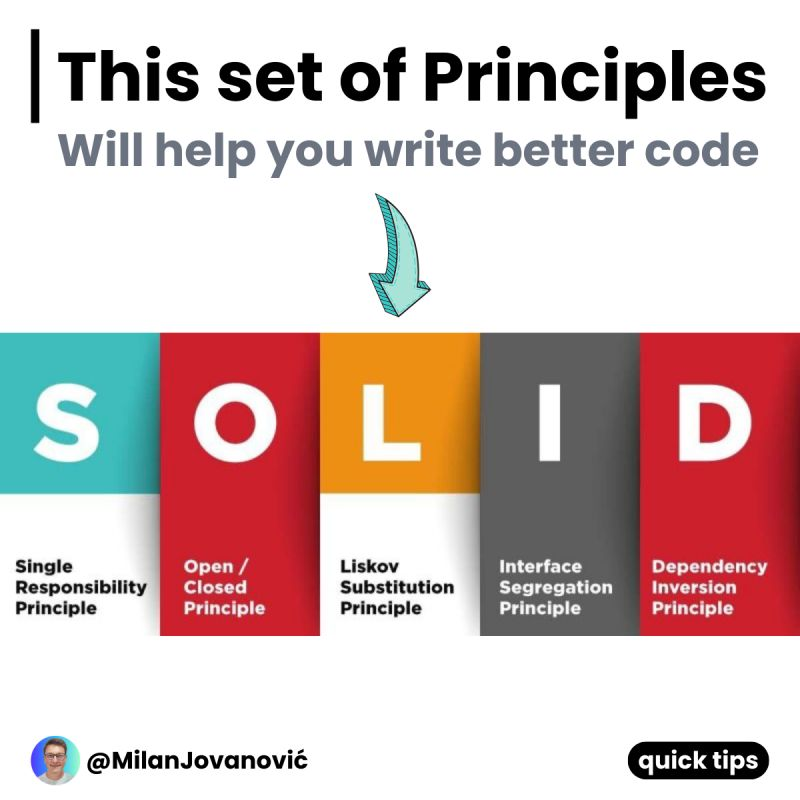The acronym 𝗦𝗢𝗟𝗜𝗗 stands for:
- Single responsibility principle
- Open/closed principle
- Liskov substitution principle
- Interface segregation principle
- Dependency inversion principle
The principles
- 𝗦𝗶𝗻𝗴𝗹𝗲 𝗥𝗲𝘀𝗽𝗼𝗻𝘀𝗶𝗯𝗶𝗹𝗶𝘁𝘆 𝗣𝗿𝗶𝗻𝗰𝗶𝗽𝗹𝗲 (𝗦𝗥𝗣)
A class should have only one reason to change. In other words, a class should have a single, well-defined responsibility. That class should entirely encapsulate responsibility.
- 𝗢𝗽𝗲𝗻/𝗖𝗹𝗼𝘀𝗲𝗱 𝗣𝗿𝗶𝗻𝗰𝗶𝗽𝗹𝗲 (𝗢𝗖𝗣)
Software entities (classes, functions, etc.) should be open for extension but closed for modification. You should be able to add new functionality to a class without changing its existing code, but you should not need to modify the class itself to do so.
- 𝗟𝗶𝘀𝗸𝗼𝘃 𝗦𝘂𝗯𝘀𝘁𝗶𝘁𝘂𝘁𝗶𝗼𝗻 𝗣𝗿𝗶𝗻𝗰𝗶𝗽𝗹𝗲 (𝗟𝗦𝗣)
Subtypes must be substitutable for their base types. In other words, if a class is derived from another class, you should be able to use the derived class in the same way as the base class without any issues.
- 𝗜𝗻𝘁𝗲𝗿𝗳𝗮𝗰𝗲 𝗦𝗲𝗴𝗿𝗲𝗴𝗮𝘁𝗶𝗼𝗻 𝗣𝗿𝗶𝗻𝗰𝗶𝗽𝗹𝗲 (𝗜𝗦𝗣)
Clients should not depend on interfaces they do not use. This means you should design your interfaces as specific and focused as possible.
- 𝗗𝗲𝗽𝗲𝗻𝗱𝗲𝗻𝗰𝘆 𝗜𝗻𝘃𝗲𝗿𝘀𝗶𝗼𝗻 𝗣𝗿𝗶𝗻𝗰𝗶𝗽𝗹𝗲 (𝗗𝗜𝗣)
High-level modules should not depend on low-level modules. Both should depend on abstractions. Design your software so high-level modules depend on abstractions rather than concrete implementations.
architectural_principles
Design docs
One of the key elements of Google's software engineering culture is the use of design docs for defining software designs. These are relatively informal documents that the primary author or authors of a software system or application create before they embark on the coding project. The design doc documents the high level implementation strategy and key design decisions with emphasis on the trade-offs that were considered during those decisions.
As software engineers our job is not to produce code per se, but rather to solve problems. Unstructured text, like in the form of a design doc, may be the better tool for solving problems early in a project lifecycle, as it may be more concise and easier to comprehend, and communicates the problems and solutions at a higher level than code.
Besides the original documentation of a software design, design docs fulfill the following functions in the software development lifecycle:
- Early identification of design issues when making changes is still cheap.
- Achieving consensus around a design in the organization.
- Ensuring consideration of cross-cutting concerns.
- Scaling knowledge of senior engineers into the organization.
- Form the basis of an organizational memory around design decisions.
- Acts as a summary artifact in the technical portfolio of the software designer(s).
Anatomy of a design doc
Design docs are informal documents and thus don’t follow a strict guideline for their content. Rule #1 is: Write them in whatever form makes the most sense for the particular project.
Having said that, a certain structure has established itself as really useful.
Context and scope
This section gives the reader a very rough overview of the landscape in which the new system is being built and what is actually being built. This isn’t a requirements doc. Keep it succinct! The goal is that readers are brought up to speed but some previous knowledge can be assumed and detailed info can be linked to. This section should be entirely focused on objective background facts.
Goals and non-goals
A short list of bullet points of what the goals of the system are, and, sometimes more importantly, what non-goals are. Note, that non-goals aren’t negated goals like “The system shouldn’t crash”, but rather things that could reasonably be goals, but are explicitly chosen not to be goals. A good example would be “ACID compliance”; when designing a database, you’d certainly want to know whether that is a goal or non-goal. And if it is a non-goal you might still select a solution that provides it, if it doesn’t introduce trade-offs that prevent achieving the goals.
The actual design
This section should start with an overview and then go into details. Visualization of how to draw an owl. First picture: two circles labeled "1. Draw some circles". Second picture: Picture of an own labeled "2. Draw the rest of the fucking owl"
The design doc is the place to write down the trade-offs you made in designing your software. Focus on those trade-offs to produce a useful document with long-term value. That is, given the context (facts), goals and non-goals (requirements), the design doc is the place to suggest solutions and show why a particular solution best satisfies those goals.
The point of writing a document over a more formal medium is to provide the flexibility to express the problem set at hand in an appropriate manner. Because of this, there is no explicit guidance for how to actually describe the design.
Having said that, a few best practices and repeating topics have emerged that make sense for a large percentage of design docs:
System-context-diagram
In many docs a system-context-diagram can be very useful. Such a diagram shows the system as part of the larger technical landscape and allows readers to contextualize the new design given its environment that they are already familiar with.
Block diagram showing how various systems are related to each other. The actual text is just examples and not needed to be seen to understand the example. 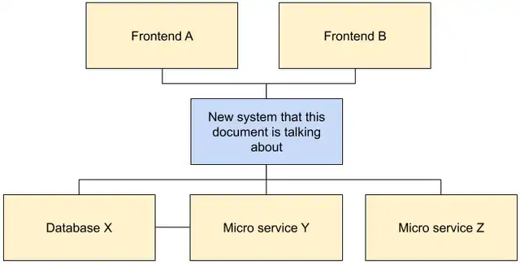 Example of a system-context-diagram.
APIs
If the system under design exposes an API, then sketching out that API is usually a good idea. In most cases, however, one should withstand the temptation to copy-paste formal interface or data definitions into the doc as these are often verbose, contain unnecessary detail and quickly get out of date. Instead focus on the parts that are relevant to the design and its trade-offs.
Data storage
Systems that store data should likely discuss how and in what rough form this happens. Similar to the advice on APIs, and for the same reasons, copy-pasting complete schema definitions should be avoided. Instead focus on the parts that are relevant to the design and its trade-offs.
Code and pseudo-code
Design docs should rarely contain code, or pseudo-code except in situations where novel algorithms are described. As appropriate, link to prototypes that show the implementability of the design.
Degree of constraint
One of the primary factors that would influence the shape of a software design and hence the design doc, is the degree of constraint of the solution space.
On one end of the extreme is the “greenfield software project”, where all we know are the goals, and the solution can be whatever makes the most sense. Such a document may be wide-ranging, but it also needs to quickly define a set of rules that allow zooming in on a manageable set of solutions.
On the other end are systems where the possible solutions are very well defined, but it isn’t at all obvious how they could even be combined to achieve the goals. This may be a legacy system that is difficult to change and wasn’t designed to do what you want it to do or a library design that needs to operate within the constraints of the host programming language.
In this situation you may be able to enumerate all the things you can do relatively easily, but you need to creatively put those things together to achieve the goals. There may be multiple solutions, and none of them are really great, and hence such a document should focus on selecting the best way given all identified trade-offs.
Alternatives considered
This section lists alternative designs that would have reasonably achieved similar outcomes. The focus should be on the trade-offs that each respective design makes and how those trade-offs led to the decision to select the design that is the primary topic of the document.
While it is fine to be succinct about solution that ended up not being selected, this section is one of the most important ones as it shows very explicitly why the selected solution is the best given the project goals and how other solutions, that the reader may be wondering about, introduce trade-offs that are less desirable given the goals.
Cross-cutting concerns
This is where your organization can ensure that certain cross-cutting concerns such as security, privacy, and observability are always taken into consideration. These are often relatively short sections that explain how the design impacts the concern and how the concern is addressed. Teams should standardize what these concerns are in their case.
Due to their importance, Google projects are required to have a dedicated privacy design doc, and there are dedicated reviews for privacy and security. While the reviews are only required to be completed by the time a project launches, it is best practice to engage with privacy and security teams as early as possible to ensure that designs take them into account from the ground up. In case of dedicated docs for these topics, the central design doc can, of course, reference them instead of going into detail.
The length of a design doc
Design docs should be sufficiently detailed but short enough to actually be read by busy people. The sweet spot for a larger project seems to be around 10-20ish pages. If you get way beyond that, it might make sense to split up the problem into more manageable sub problems. It should also be noted that it is absolutely possible to write a 1-3 page “mini design doc”. This is especially helpful for incremental improvements or sub tasks in an agile project–you still do all the same steps as for a longer doc, just keep things more terse and focused on a limited problem set.
When not to write a design doc
Writing design docs is overhead. The decision whether to write a design doc comes down to the core trade-off of deciding whether the benefits in organizational consensus around design, documentation, senior review, etc. outweigh the extra work of creating the doc. At the center of that decision lies whether the solution to the design problem is ambiguous–because of problem complexity or solution complexity, or both. If it is not, then there is little value in going through the process of writing a doc.
A clear indicator that a doc might not be necessary are design docs that are really implementation manuals. If a doc basically says “This is how we are going to implement it” without going into trade-offs, alternatives, and explaining decision making (or if the solution is so obvious as to mean there were no trade-offs), then it would probably have been a better idea to write the actual program right away.
Finally, the overhead of creating and reviewing a design doc may not be compatible with prototyping and rapid iteration. However, most software projects do have a set of actually known problems. Subscribing to agile methodologies is not an excuse for not taking the time to get solutions to actually known problems right. Additionally, prototyping itself may be part of the design doc creation. “I tried it out and it works” is one of the best arguments for choosing a design.
The design doc lifecycle
The steps in the lifecycle of a design document are:
- Creation and rapid iteration
- Review (may be in multiple rounds)
- Implementation and iteration
- Maintenance and learning
Creation and rapid iteration
You write the doc. Sometimes together with a set of co-authors.
This phase quickly evolves into a time of rapid iteration where the doc is shared with colleagues who have the most knowledge about the problem space (often belonging to the same team) and through their clarifying questions and suggestions drive the doc to a first relatively stable version.
While you certainly find engineers and even teams who prefer version control and code review tools for document creation, the vast majority of design docs at Google are created in Google Docs and make heavy use of its collaboration features.
Review
In the review phase a design doc gets shared with a wider audience than the original set of authors and close collaborators. Reviews can add a lot of value, but they are also a dangerous trap of overhead, so treat them wisely.
A review can take many shapes: The more lightweight version is simply sending out the doc to the (wider) team-list to give folks a chance to take a look. Discussion then primarily happens in comment threads in the document. On the heavy side of reviews, are formal design review meetings in which the author presents the doc (often via a dedicated presentation) to an often very senior engineering audience. Many teams at Google have recurring meetings scheduled for this purpose to which engineers can sign up to for a review. Naturally waiting for such meetings to happen can significantly slow down the development process. Engineers can mitigate this by seeking the most crucial feedback directly and not blocking progress on wider review.
When Google was a smaller company, it was customary to send designs to a single central mailing list, where senior engineers would review them at their own leisure. This may very well be a great way to handle things for your company. One benefit was that it did establish a relatively uniform software design culture across the company. But as the company scaled to a much larger engineering team, it became infeasible to maintain the centralized approach.
The primary value that such reviews add is that they form an opportunity for the combined experience of the organization to be incorporated into a design. Most consistently, ensuring that designs take cross-cutting concerns such as observability, security and privacy into account is something that can be ensured in a review stage. The primary value of the review isn’t that issues get discovered per-se, but rather that this happens relatively early in the development lifecycle when it is still relatively cheap to make changes.
Implementation and iteration
When things have progressed sufficiently to have confidence that further reviews are unlikely to require major changes to the design, it is time to begin implementation. As plans collide with reality, it is inevitable that shortcomings, unaddressed requirements, or educated guesses that turned out to be wrong surface, and require changing the design. It is strongly recommended to update the design doc in this case. As a rule of thumb: If the designed system hasn’t shipped yet, then definitely update the doc. In practice we humans are bad at updating documents, and for other practical reasons changes are often isolated into new documents. This leads to an eventual state more akin to the US constitution with a bunch of amendments rather than one consistent piece of documentation. Links to such amendments from the original doc can be immensely helpful for the poor future maintenance programmer trying to understand their target system through design doc archaeology.
Maintenance and learning
When Google engineers get confronted with a system that they hadn’t previously touched their first question often is “Where is the design doc?”. While design docs, like all documentation, tend to get out of sync with reality over time, they still often present the most accessible entry point to learn about the thinking that guided the creation of the system.
As the author, do yourself a favor and re-read your own design docs a year or 2 later. What did you get right? What did you get wrong? What would you do to decide differently today? Answering these questions is a great way to advance as an engineer and improve software design skills over time.
Conclusions
Design docs are a great way to gain clarity and achieve consensus around solving the hardest problems in a software project. They save money, because they avoid going down coding rabbit holes that fail to achieve project goals and could have been avoided using upfront investigation; and they cost money, because creation and review take time. So, choose wisely for your project!
When considering writing a design doc, think about these points:
- Are you unsure about the right software design, and would it make sense to spend upfront time to gain certainty?
- Relatedly, would it help to involve senior engineers, who might not be able to review every code-change, in the design?
- Is the software design ambiguous or even contentious such that achieving organizational consensus around it would be valuable?
- Does my team sometimes forget to consider privacy, security, logging or other cross-cutting concerns in the design?
- Is there a strong need for documents that provide high-level insights into the design of legacy systems in the organization?
If you answer yes to 3 or more of these questions, then a design doc is probably a great method to start your next software project.
John Lewis Software Engineering Principles
We have created a set of Software Engineering principles that we use internally that form a common belief in how software should be built within John Lewis IT Delivery. They can be found here http://engineering-principles.jl-engineering.net/
Why create a set of Principles?
The success of our organisation is dependent on implementing outstanding software solutions in a sustainable way. Rather than simply declaring that “Engineering Excellence” is important to us, we embarked on creating a set of principles that describe what that means to us in practice.
Principles instead of policy or standards
When creating the principles we didn’t want to dictate how each engineering team should build their product by creating another policy document as we want teams to feel empowered. We also didn’t want this to become another document that was quietly ignored. On that basis we created the principles as a set of beliefs that are important to us as an organisation.
We wanted to create principles that are actionable rather than create a set of truisms that are easy to agree with but of no real value in practice. For each of the principles we describe why we believe it to hold true and the implications of actually working to the principle.
When we created the principles some of them were controversial. For example we created Cloud Native as a principle when almost all new projects were still hosting solutions on traditional infrastructure. As an organisation we now host most new solutions on cloud infrastructure. Maybe most controversially we created and then removed Reusable Components as a principle. Through experience we learned that the principles Design For Pace of Change and Evolutionary Systems set out our real intent, which is that while reuse is often valuable, inappropriate reuse inhibits change and should emerge through evolution rather than being designed up front.
How did we create the principles?
Inside John Lewis IT we have a serious sounding body we call the Tech Council which is a bunch of experienced developers that meet up once a week to discuss anything about our organisation’s engineering approach. The Tech Council created the initial principles, hosting them in Git and setting up a CD pipeline to publish them to a website whenever they are changed. The principles are “open sourced” internally so anybody can suggest improvements by making a merge request.
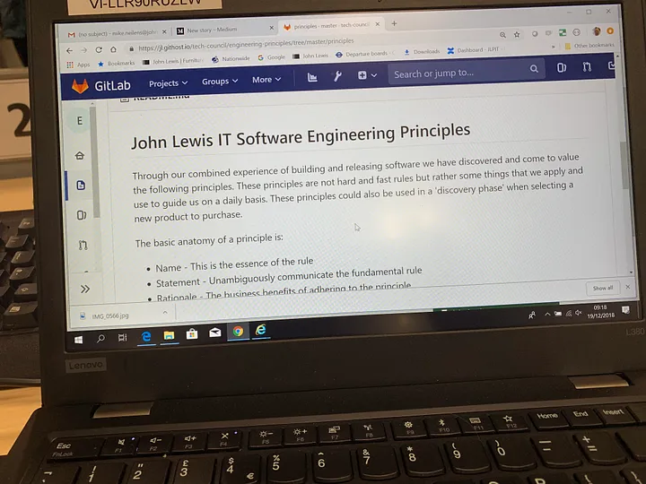
We always share the principles with any new Partners or suppliers we use. We have had valuable contributions from some very well known figures from the world of agile software development that have worked with us recently, some of whom have shared our principles with their other clients (which we are very happy about).
How have the principles impacted our organisation?
We never wanted them to be another document that gathered dust in the filing cabinet. They are used as part of the training for anybody up-skilling to be a software engineer within our organisation, which on its own is great.
But they have also been used to resolve the inevitable disagreements about engineering approach that crop up in a large organisation. The principles are a simple way to evaluate how differing opinions align themselves to our organisational beliefs, and if our beliefs are not shared we would rather resolve that first.
Engineering teams often create their own charters about how they will approach the engineering problem in their particular context. They have found it useful to validated their charters against the principles instead of creating their own value system.
What next for our principles?
We have recently started a process of evaluating how well engineering teams are aligned with the principles. I say aligned rather than comply with as the intent is to help teams rather than judge them. This will also help us as an organisation to understand how well we are performing and where we may need to make investment choices to improve our engineering performance.
A member of the Tech Council helps each team to evaluate itself and we have a guide to help with the evaluation process which includes things such as positive and negative indicators for each principle. Rather than give each team a total score out of 100 we use a red/amber/green traffic light against each principle.
We expect the evaluation process and the principles themselves to improve as we gain more experience with this.
The Principles
Build Differentiators
- Do you consider this when choosing the technology?
- Google Cloud Datastore or Elasticsearch are examples of “buy”
- Do you reinvent the wheel, building systems already out there?
Design for Emergent Reuse
- If there are lots of different components do you take into account the pace of change of the components?
- Do you over-engineer your solutions?
- Do you reuse for the sake of it?
- Is your system going to be around for a long time?
Evolutionary Systems
- If you change your system is it an isolated change with regard to other systems?
- How many people does it take to release?
- How often can you release?
- Can Ops release during the day?
- How many requirements do you put into one iteration?
- How future proof is it for requirements that may not exist?
Scale Horizontally
- State cannot be stored in-memory but rather must be persisted to the client or a shared datastore.
- It is not always possible to scale horizontally e.g. for traditional relational databases, increased performance is often achieved through better hardware or higher specifications
- Services should strive to be idempotent
Small and Simple
- How long do your tests take?
- Can you describe your components?
- Can you test your components independently?
- Can you deploy components independently?
Smarts in the Nodes, not the Network
- Do you have business logic in your integration layer?
- Do you apply business rules in your data transformations?
- If there is business logic is it for your own system’s consumption?
Cloud Native
- Are you leveraging the services in the cloud?
- Did you intend it to be in the cloud from the start?
Production Ready
- Do you understand your failure modes?
- Do you understand how monitoring helps you understand your failure modes?
- How close is the system to its limit?
- Are there circuit breakers?
- Are there rolling deployments, eg kubernetes?
- Do you have dashboards, golden signals, engineering metrics for traffic and resilience?
Keep Pace with Technological Change
- What technology is the team using?
- Is it up to date?
- Is it well supported?
- Is it current?
- How often is it upgraded and patched?
- Are the team interested in this area?
- Is the software on its way out?
Model the Business Domain
- Does it use DDD (Domain driven design)?
- Could a business person understand the language used in your code?
- How well do you own your domain?
- Are there changes not owned by your team?
Secure by Design
- Have you considered access control?
Consistent Environments
- Are you using infrastructure as code? Examples are terraform or puppet.
- Have you got any processes in keeping data up to date?
- Are there lots of manual processes?
Continuous Delivery
- Are you doing it? Are you using a CI tool?
- What manual gates are in place?
- Can you release straight to Production?
- Are you using trunk based development with feature flags as necessary?
- Are branches short-lived?
Get Feedback Early and Often
- Could you do daily releases?
Understandability
- If a new person joins, can they get up to speed quickly?
- Can code be safely refactored due to good test coverage?
explanation
12 Software Architecture Styles Software Engineers Should Know
A brief introduction to Microservice, SOA, Event-Driven, MicroKernel, Stream-Based, and more.
What is Software Architecture?
Software architecture is the process of defining the high-level structure and organization of a software system. It involves identifying and selecting the right components, deciding how they should interact with each other, and determining how they should be organized to achieve specific goals. The goal of software architecture is to create a system that is maintainable, scalable, and secure, and that can meet the needs of users and organizations over time.
Why do we need Software Architecture?
A robust architecture provides a solid foundation for building software that meets the needs of users and stakeholders. It ensures that the system meets its functional and non-functional requirements, such as performance, security, and reliability. With a well-designed architecture, developers can build software that is easy to modify and extend, making it easier to adapt to changing business needs.
Software architecture is also essential for managing complexity. As software systems become more complex, it becomes challenging to understand how different components interact with each other. A well-designed architecture provides a high-level view of the system, making it easier to understand its structure and operation. This, in turn, helps developers to identify potential issues and make informed decisions about how to modify the system.
How do we Document Architecture? We use 4C Model.
Context Level
At the highest level, the Context level, we describe the system’s external environment, such as users, other systems, regulations, etc. This level provides a high-level overview of the system’s purpose and its relationship to the external world. It helps to identify the stakeholders who will interact with the system and the factors that will influence its design and development.
Containers level
The next level is the Containers level, which describes the runtime environment of the system, such as servers, databases, or message queues. This level helps to identify the major technology choices and deployment decisions. It provides an understanding of the physical infrastructure that will support the system and the tools and resources that will be required to deploy and maintain it.
Components level
The third level is the Components level, which describes the major functional building blocks of the system. This level helps to identify the modules, classes, or functions that make up the system. It provides an understanding of the system’s functionality and the relationships between its different components.
Code level
Finally, the Code level is the lowest level, which describes the actual code and how it implements the components. This level provides a detailed understanding of how the system works and how its different components interact with each other. It is essential for developers who will be working with the code to have a clear understanding of how it is structured and how it works.
Using the C4 model, software architects can create diagrams and written documentation that describe each of these levels, providing a comprehensive view of the system’s architecture. This approach helps to identify potential issues and trade-offs, as well as facilitating scalability, maintainability, and adaptability. By documenting the architecture in this way, developers and stakeholders can have a clear and easy-to-understand view of the system, making it easier to modify and extend as business needs change.
Here are the 12 Software Architecture Styles Software Engineer Should Know
1. Client Server
The client-server architecture is a model in which the client, a user or an application, sends a request to the server, which in turn responds with the requested data or service. The client and server can be on the same machine or on different machines connected through a network.
The client is responsible for initiating communication with the server and sending a request. The server, on the other hand, listens for incoming requests from clients, processes them, and returns a response.
Advantages of Client-Server Architecture
Scalability: Client-server architecture is highly scalable, as it allows multiple clients to connect to the same server and share resources.
Security: Client-server architecture provides better security than other network models, as the server can control access to resources and data.
Reliability: Client-server architecture is highly reliable, as the server can provide backup and recovery services in case of failures.
2. Layering
It’s a common way to design complex software systems, and it involves breaking down the system into layers, where each layer is responsible for a specific set of functions. This approach helps to organize code and makes it easier to maintain and modify the system over time.
A typical layering architecture consists of three main layers: presentation, business logic, and data access.
Presentation Layer: The presentation layer is responsible for displaying information to the user and gathering input. This layer includes the user interface and any other components that interact directly with the user. The user interface is what the user sees and interacts with, such as buttons, text boxes, and menus. The presentation layer also includes any logic related to the user interface, such as event handlers and validation.
Business Logic Layer: The business logic layer is responsible for implementing the business rules of the application. This layer contains the code that processes and manipulates data, as well as any other application logic. The business logic layer is where the magic happens, so to speak. It’s where the software performs calculations, makes decisions, and carries out tasks. This layer is where the software really earns its keep.
Data Access Layer: The data access layer is responsible for interacting with the database or other external data sources. This layer contains the code that reads and writes data to and from the database. The data access layer is where the software retrieves data from the database, makes changes to the data, and saves the changes back to the database. This layer is critical to the functioning of the software, as it enables the software to store and retrieve data.
3. Pipe and Filter
Pipe and Filter Architecture is a design pattern that allows software systems to process data by separating the processing tasks into multiple independent components. This architecture is particularly useful for systems that need to handle large amounts of data, as it can help to improve performance, scalability, and maintainability.
The Pipe and Filter Architecture is based on the idea of a pipeline, where data flows through a series of processing steps, each of which performs a specific task. Each processing step is implemented as a separate component, or filter, that accepts data as input, performs some operation on the data, and produces output data. The output data is then passed on to the next filter in the pipeline.
The filters in the pipeline are independent of each other, which means that they can be developed, tested, and deployed separately. This makes it easy to add new filters to the pipeline or modify existing ones without affecting the rest of the system.
Benefits
Scalability: The architecture can be scaled horizontally by adding more filters to the pipeline, which allows the system to handle larger amounts of data.
Performance: The architecture can be optimized for performance by parallelizing the processing of data across multiple filters.
Maintainability: The architecture promotes modularity and separation of concerns, which makes it easier to maintain and update the system over time.
4. Master-Slave
Master-Slave architecture is a design pattern used in distributed systems, where one node (the master) controls one or more nodes (the slaves) to perform specific tasks. The master node is responsible for distributing the workload across the slaves and for coordinating their activities. The slave nodes do not have the same level of control as the master node and only perform tasks that are assigned to them by the master.
Benefits
One of the most significant advantages is that it allows for the efficient distribution of workload across multiple nodes. This helps to reduce the load on any one node and ensures that the system can handle large amounts of data and traffic.
Another advantage of using a master-slave architecture is that it provides fault tolerance. If one of the slave nodes fails, the master node can redistribute its workload to the other slave nodes. This ensures that the system can continue to function even if one or more nodes fail.
5. MicroKernel
MicroKernel architecture is a software design pattern that allows developers to build more modular and flexible systems. It separates the core system functionality from additional features, which are implemented in separate modules. The core functionality of the system is implemented in the MicroKernel, a minimalistic core system that provides only the most essential services required to run the system. It is plug and play concept.
Example:
Let’s consider the example of an e-commerce website. The MicroKernel would provide essential services such as handling user authentication, managing user sessions, and processing payments. Additional features, such as product recommendations, user reviews, and social media integration, would be implemented in separate modules.
If the website wants to add a new feature, such as a loyalty program, it can be developed and added as a separate module without affecting the core functionality of the system. This modularity makes it easier to add new features or remove existing ones without affecting the core system functionality.
Furthermore, if the website wants to customize its system to meet the specific needs of different users, it can choose the modules it needs for each user. For example, a user who frequently buys electronics can be provided with a module that recommends electronic products. On the other hand, a user who frequently buys cosmetics can be provided with a module that recommends cosmetic products.
Finally, if the website wants to scale its system to handle more users or changes in hardware, it can easily add or remove modules as needed. This scalability makes it easier to adapt the system to changes in user requirements or changes in the underlying hardware.
6. DDD (Domain Driven Design)
At its core, DDD is a way of thinking about software architecture that emphasizes the domain or problem space of a project. This means that developers focus on the business logic of the software, rather than just the technical implementation.
In practice, this means that developers start by understanding the domain they are working in and break it down into smaller, more manageable parts. They then use this understanding to create a domain model, which is a representation of the different entities within the domain and how they interact with one another.
Once the domain model is created, developers can use it to guide the rest of the architecture of the software. This includes creating bounded contexts, which are areas of the software that are defined by a specific language and context, and aggregates, which are collections of related entities that are treated as a single unit.
7. Component Based
In software engineering, component-based architecture (CBA) is an approach to software design and development that emphasizes the use of reusable software components. The idea behind CBA is that software development can be made more efficient and effective by breaking down complex systems into smaller, more manageable components.
What is a component?
A software component is a modular, self-contained unit of software that can be reused across different systems. A component typically has a well-defined interface, which specifies how other components can interact with it. This interface includes information about the component’s inputs, outputs, and behavior.
Components can be classified into different types based on their functionality, such as user interface components, data access components, and business logic components. Each type of component has a specific role in the software system and can interact with other components through their interfaces.
8. SOA
SOA is an architectural style that aims to create modular, reusable services that can be easily integrated with other services to create a larger system. In this approach, services expose their functionality through interfaces, which can be accessed by other services or applications.
At its core, SOA is about building software by breaking it down into smaller pieces, or modules, that can be reused across different applications. This modular approach allows developers to focus on building specific pieces of functionality and then integrating them with other pieces to create a larger system.
Core Components of SOA
Service Provider: The service provider is responsible for creating and exposing services to the outside world. These services can be used by other services, applications, or end-users. For example, a payment processing service provider might create and expose a service that allows other applications to process payments.
Service Registry: The service registry is a directory of available services that can be accessed by other services or applications. The service registry provides information about the service, such as its name, location, and interface. For example, if an application needs to process payments, it can use the service registry to find the payment processing service and access its interface.
Service Requestor: The service requestor is responsible for consuming the services exposed by the service provider. This can be done by using the service registry to find the appropriate service and then invoking its interface. For example, an application might use the service registry to find the payment processing service and then use its interface to process payments.
9. Monolithic
Monolithic architecture is a software design pattern that has been around for decades. It’s a way of structuring an application as a single, cohesive unit, rather than splitting it up into individual, smaller components.
In a monolithic architecture, the entire application is built as a single, self-contained unit. All of the code and dependencies are packaged together, so the application can be deployed and run on a single server.
This makes it easy to develop and deploy the application, since everything is in one place. It also makes it easier to scale the application horizontally, by adding more servers.
Advantages of Monolithic Architecture
One of the biggest advantages of monolithic architecture is its simplicity. Since everything is contained in a single unit, there are fewer moving parts to worry about. This makes it easier to develop, test, and deploy the application.
Another advantage is that it’s easier to maintain and debug a monolithic application. Since everything is in one place, it’s easier to track down issues and fix them.
Disadvantages of Monolithic Architecture
One of the biggest disadvantages of monolithic architecture is that it can be difficult to scale the application vertically. Since everything is running on a single server, there’s a limit to how much traffic the application can handle.
Another disadvantage is that it can be difficult to adopt new technologies and languages in a monolithic application. Since everything is packaged together, it can be hard to update individual components without breaking the entire application.
10. Microservice
Microservice architecture is a style of software architecture that structures an application as a collection of small, independent services that communicate with each other over a network. Each service is focused on a specific business capability and can be developed, deployed, and scaled independently of other services in the system.
The main idea behind microservice architecture is to break down a large, monolithic application into smaller, more manageable services. This approach brings several benefits, such as improved scalability, increased flexibility, and quicker time-to-market for new features. With a microservice architecture, each service can be scaled independently, making it easier to handle traffic spikes or changes in demand. Developers can also modify or add new services without affecting other parts of the system, which speeds up the development process.
Challenges of Microservice Architecture
Despite the benefits of microservice architecture, it also introduces additional complexity. One of the biggest challenges is managing inter-service communication. Services need to be able to discover each other and communicate effectively, which can be difficult to do at scale. Load balancing and fault tolerance are also more complex in a microservice architecture.
Another challenge is ensuring that each service has its own data store. In a monolithic application, all data is typically stored in a single database. With microservices, each service should have its own data store to ensure that changes to one service do not affect other services in the system. This can lead to increased complexity in data management and synchronization.
Best Practices for Microservice Architecture
To ensure the success of a microservice-based system, developers should follow best practices for designing and implementing microservices. Some of these best practices include:
Design services that are loosely coupled and highly cohesive, with clear boundaries and well-defined interfaces.
Use containerization technology, such as Docker, to package and deploy each service as a separate container. This allows for easy scaling and deployment of individual services as needed.
Implement effective monitoring and management tools to ensure that the system is running smoothly and to detect and address issues quickly.
Use a service mesh, such as Istio, to manage inter-service communication and load balancing.
Implement a continuous integration and deployment (CI/CD) pipeline to automate the testing and deployment of microservices.
11. Event Driven
Event Driven Architecture (EDA) is an approach to designing software systems that enables rapid and efficient communication between different components or services. In this paradigm, different software components communicate with each other using events, rather than through direct requests or responses.
In EDA, events are generated by different components of a software system, such as a user interface or a backend service. These events are then broadcast to other components of the system, which can subscribe to them and act on them as needed.
For example, consider a simple e-commerce application. When a new order is placed, the order processing service can generate an “order created” event, which is then broadcast to other services such as inventory management, shipping, and billing. Each of these services can then process the event and make updates to their respective systems.
Benefits of EDA
One of the key benefits of EDA is its ability to decouple different components of a software system. When different components communicate through events rather than direct requests, they become less dependent on each other. This makes it easier to change or update individual components of the system without affecting the rest of the system.
Another benefit of EDA is its scalability. Because events are broadcast to multiple components of the system, it is possible to process large volumes of data and transactions in parallel. This makes it easier to handle high traffic and spikes in demand.
Challenges of EDA
While EDA has many benefits, it also has some challenges. One of the main challenges is managing the complexity of event-driven systems. Because events can be generated and consumed by many different components, it can be difficult to track and debug issues that arise.
Another challenge is ensuring that events are processed in the correct order. Because events can be generated and processed asynchronously, it is possible for events to be processed out of order. This can cause issues such as data inconsistencies or incorrect calculations.
12. Stream Based
As software development becomes more complex and demands greater scalability, traditional architectures are becoming less and less effective. Stream-based architecture is emerging as a promising alternative that enables developers to build systems that can handle massive amounts of data in real-time.
At its core, stream-based architecture is based on the principles of event-driven programming. Instead of processing data in batches, stream-based systems process data as it is generated in real-time. This allows developers to build systems that can respond to changes in data with minimal latency.
Benefit of Stream-Based Architecture
One of the key benefits of stream-based architecture is its scalability. Because data is processed in real-time, stream-based systems can handle massive amounts of data without the need for complex batch processing pipelines. This makes it possible to build systems that can process millions of events per second, making it ideal for use cases like sensor data processing, financial trading, and online advertising.
Another benefit of stream-based architecture is its flexibility. Because data is processed in real-time, it is possible to build systems that can respond to changes in data with minimal latency. This makes it possible to build complex, event-driven systems that can adapt to changing business requirements. For example, in an e-commerce platform, stream-based architecture can be used to track user activity in real-time and respond with personalized recommendations and promotions based on the user’s browsing and purchasing history.
Furthermore, stream-based architecture can provide significant cost savings. Traditional batch processing pipelines require expensive hardware and complex software infrastructure to manage the data processing. On the other hand, stream-based systems can be built on inexpensive commodity hardware, making it much easier to scale and maintain.
Finally, stream-based architecture is highly fault-tolerant. Because data is processed in real-time, it is possible to build systems that can automatically recover from failures without the need for manual intervention. This makes it possible to build systems that can operate at scale with high levels of reliability, reducing the risk of data loss or system downtime.
Best Practices When Documenting Your Code for Software Engineers
It’s all about clear, asynchronous communication

As a software engineer, it is very important to acquire the skill of writing high-quality documentation. Due to the recent increase in remote work, it has become even more important to be better at asynchronous communication. Remote company GitLab does an excellent job of defining asynchronous communication:
“Asynchronous communication is the art of communicating and moving projects forward without the need for additional stakeholders to be available at the same time your communique is sent.”
High-quality documentation is an easier way to achieve effective asynchronous communication. In this article, I am going to talk about some interesting tips that I have found very useful in my personal experience.
Google Tech Writing Course
Google offers a free tech writing course for software engineers. It starts with the fundamentals of tech writing. There are two courses and the content is as shown below:

TOC — Google Tech Writing One

TOC — Google Tech Writing Two
Being good at tech writing does not happen overnight. It takes practice. I personally prefer visiting this course each month to remind myself of the best practices.
Using the Divio Documentation Framework
Amongst all other documentation frameworks, I personally like Divio the best. The documentation systems suggested there are easy and universally applicable.
The framework suggests classifying documentation in the following types:
- Tutorials — Learning-oriented
- How-To Guides — Problem-solving-oriented
- Explanation — Understanding-oriented
- Reference — Information-oriented
The scheme is widely adopted by a lot of famous open source projects and enterprises.
Here is a great video explaining the details of the framework:
Use Markdown-Based Systems for Documentation
In a typical enterprise, there are various ways you can maintain your documentation. Some people prefer creating MS Word/Excel documents and uploading those in SharePoint or OneDrives. The biggest problem with such documents is that they are not searchable using your internal search engine. Hence I personally prefer using Markdown-based documentation systems. Creating and maintaining documentation is easy and the documentation is searchable.
If you are not familiar with Markdown, you can easily master it. Check out this free recommended course from GitHub.
Using Mermaid JS for Diagrams
According to Mermaid itself, it “is a Javascript-based diagramming and charting tool that uses Markdown-inspired text definitions and a renderer to create and modify complex diagrams.” If you are using GitLab or Azure DevOps, Mermaid is natively supported. If you are using GitHub or Atlassian products, then there are plug-ins available.
With Mermaid, creating and updating diagrams is very easy and you don’t need to have any UML tools like Visio/draw.io installed on every developer’s workstation.
Here are some sample diagrams created with Mermaid

Sample Sequence Diagram using Mermaid

Sample Class Diagram using Mermaid
You can try out creating diagrams using the Mermaid Live Editor as well.
Use Templates
There are numerous templates available on various sites like Confluence that can be used for specific types of documents. For example:
- Software Architecture Review Template
- Architecture Decision Record Template
- Incident Postmortem Template
- DevOps Runbook
- Decision Template
- Writing Guidelines
- OKR Template
- Etc.
Refer to Style Guides
If your team does not have a style guide already, refer to what the Googles and Microsofts of the world do:
References
explanation
What is Solution Architecture
An informal introduction to Solution Architecture
Introduction
The term Solution Architecture refers to a high-level blueprint of a solution that was developed to solve one or more business problems within an enterprise using a technological approach. Building a proper solution architecture requires
- A good understanding of the business problem or problems (domain knowledge)
- Comprehensive knowledge of the technologies used in the enterprise world (technical knowledge)
- Experience in building similar solutions in the past (experience)
A good solution architecture can be used to perform critical tasks such as
- Designing and implementing innovative solutions for the consumers of the business
- Maintain excellent user experience with higher degrees of service availability
- Perform calculations on return on investment (ROI) and total cost of ownership (TCO)
Solution architecture tries to compact a gigantic set of details into a set of diagrams so that different stakeholders understand what is actually going on inside the enterprise software systems. It is helpful for highly technical people such as software developers, software architects, and CTOs as well we moderately technical people such as project managers, business analysts, and citizen developers.
Types of architectures in solution architecture
The first step in solving any problem is understanding the business requirements of the client. To include all the critical information related to the business use case, we can come up with something called a “business architecture” which contains different types of applications, users, and their interactions at a very high level. We sometimes call this architecture “Level 0” architecture.
Business architecture (Level-0 architecture)
The idea of business architecture is to come up with a possible solution to a real-world problem or problems and depict that in the form of a diagram or a document using the systems, applications, and users that are considered in the scenario with minimum technical details. This component is mainly useful for business executives and other non-technical stakeholders so that they can understand what technical solution is going to be built using this architecture. Given below is a “business architecture” diagram that we came up with for a mobile banking application.

Figure: The business architecture of a mobile banking application
The preceding figure depicts the various components associated with the solution in which we are building a mobile banking application for a given bank. It showcases the components such as gateway, integration, and security component as high-level building blocks to design a solution for this problem.
The next step in designing the solution architecture is to use this and design a technical architecture with the finer details about products and tools.
Technical architecture (Level-1 architecture)
This is the type of diagram that includes details of specific vendors, products, and tools required to build a real-world software system using the business architecture blueprint. Coming up with a technical architecture requires the proper analysis of vendors and tools as well as the current and future business requirements and TCO/ROI calculations. The below diagram depicts a simplified version of a technical architecture for the business architecture we discussed before.

Figure: Technical architecture of a mobile banking solution
In this diagram, we have mentioned the specific vendors that we are going to use to fulfill the certain functionalities that we identified during the business architecture design phase. As an example, the diagram depicts that we are going to use the WSO2 API Manager solution as the API gateway which exposes the services to the mobile application. Similarly, it shows that we are going to use Mulesoft and Auth0 for respective functionalities. In addition to that, we can also depict information about which cloud platforms and container technologies we are going to use if we decided to go with a container-based solution.
Once the product vendors and tools are identified, the next step is to go further down into the actual deployment details and showcase the infrastructure level details that can be used by the developers as well as the operations teams to build the actual infrastructure for the solution.
Deployment architecture (Level-2 architecture)
This architecture diagram showcases how the technical architecture looks like in a real computing infrastructure such as a data center or a cloud platform. It contains details on network-level segmentation, the number of replicas (instances), traffic routing components such as load balancers or firewalls, and many other details related to the actual deployment of the solution. The figure below depicts a simplified version of a deployment architecture that we can come up with for the mobile banking solution that we discussed before.

Figure: Deployment architecture for mobile banking solution
The preceding figure depicts the product versions, the number of replicas, and the deployment model of each component along with the traffic routing components (load balancers).
howto
Create docs from an Open API Spec
Widdershins
Install
npm install -g widdershins
config
save in config.json
{
"language_tabs": [
{
"python": "Python"
},
{
"http": "HTTP"
},
{
"shell": "Shell"
}
],
"language_clients": [
{
"shell": "curl"
}
],
"httpsnippet":"true",
"resolve":"true",
"headings":"4"
}
run
create html
widdershins --environment config.json --html <api_spec>.yaml -o index.html
create respec
widdershins --environment config.json --respec <api_spec>.yaml -o index.html
create markdown
widdershins --environment config.json <api_spec>.yaml -o index.md
reslate to create html
Get reslate
NOTE: You may wish to create a fork of this repo
git clone git@github.com:Mermade/reslate.git
Copy your markdown file
Copy markdown file to source/index.md
change logo
change _site\slate\img\logo.png
change css if required
modify _site\slate\css\screen.css
install
npm i
Access content
npm run serve
browse to http://localhost:4567
pandoc
install pandoc
apt install pandoc
run pandoc
NOTE: When creating pdf's pandoc doesnt wrap code blocks
docx
pandoc -o <output>.docx -f markdown -t docx <input>.md
pandoc <input>.md -o <output>.pdf -V geometry:margin=1in
howto
reference
10 Design Patterns every Software Architect and Software Engineer must know
Any business exists to solve a real human problem. It could be to increase speed, reduce cost, improve convenience, add pleasure to life or make the knowledge available at the fingertips. Technology often used to solve these business problems. But then why the design patterns are important? Typical challenges with IT system are Availability, Scalability, Resiliency, Data Management, Performance and Security. Before going into design patterns it is important to get clarity of these words.
Availability: Availability is the percentage of time system is up in a defined timeframe. A system can be down because of multiple reasons like software errors, network issues, load issues, DDos (Distributed Denial of Service) attacks and infrastructure hardware issues. Availability is measured as a percentage as below.
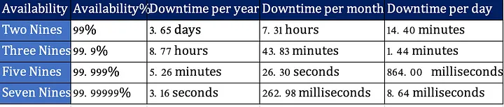
Scalability: In 2014, Flipkart - an Indian online retailer went on to apologise to customers as big billion sale could not cope up with customer demands because of scalability issues. Scalability is a factor of computing resources, data storage needs, messaging infrastructure and cost. There are two ways to sort out scalability issues. The first one is vertical scaling where you would keep on increasing the capacity of the resources the second one is horizontal scalability where you add more nodes. There are pros and cons with either of these approaches. Typically, vertical scaling is faster, but has limitation beyond a certain point of time and horizontal scaling takes more time and offers close to infinity scaling.
Scalability is how the system resources can cope up with unpredictable customer demands.
Resiliency: You went on to buy a watch on an e-commerce site. You did not like the design and you want to look for more options. You selected few dropdown boxes with design, color, price filters and clicked on search button. Now you would expect to see picture of the watch, price data, some specifications like Band Material Type, Watch Movement, Colour, Delivery Date. What if delivery date microservice was down that time? As an architect, you have multiple options now. Do not show that field at all, show a static message that “We are calculating the accurate delivery date, please be patient”, or you pick up a date range and show to the customer.
Resiliency is the ability of a system to gracefully handle the failures and recover from failures as soon as it can.
Data Management: Data management plays a crucial role in scalability, availability, security and resiliency. Architectural decisions related to data management depends on what type of application you are building. Is it write heavy (more user transactions), read-heavy (reports), meant to do analytics (forecasting, customer segmentation), time series (log processing) or Datawarehouse (data analytics). Few other factors that would influence are data consistency, data availability, data storage and archival strategy.
Performance: Scalability and performance are interrelated. If there are more users compared to what the system can handle, it is natural that the system would encounter performance issues. How to deal with this? Either you increase the resources or reduce the number of users. Of course, the second choice is not ideal because you would end up losing the business. In fact, we will sort out these performance issues when you sort out scalability issues. I just want to remind you, scalability can’t solve all the performance issues but can solve some issues. For example, if the performance issues are the result of badly written DB query, scaling the resources without fine-tuning the query will prove to be a disastrous decision.
Security: Building secure systems gives an assurance to users that their data is in safe hands. Data integrity and data durability are equally important. It is very similar to when you put your money in the bank. If you deposited one million dollars in the bank, you do not want to lose that money (Safe), you would want the bank to always say you deposited one million -no mistakes here (Integrity) and even after 10 years you go to the bank, you will still have that one million dollars money (Durability).
As you now got the basics right, let's look at important patterns one by one. No design pattern is a magic pill for all the issues. One needs to choose depending on the use case.
Scalability and Performance
- CQRS: Command Query Responsibility Segregation is first introduced by Greg Young. As the name suggests it is about segregating the write and read responsibilities. Write and read can happen from a single database or multiple databases. But the data model is different. CQRS easily fits into event sourcing architecture. Consume the events as and when they occur and write into “Write DB”. For display or reporting purposes read from the “Read DB”. To make this even more exciting, you may use normalized RDBMS for write and denormalized NoSQL DB for “Read”. Commands are typically queued for asynchronous process and a query can never modify a DB. One very good benefit is you can independently scale the DBs
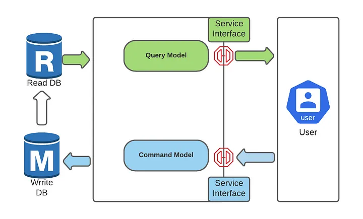
CQRS — Command Query Responsibility Segregation
Data Management, Security
- Anti Corruption Layer pattern: This pattern was initially described by Eric Evans in Domain-Driven Design (DDD). Let me introduce this with a story. Martin and Sheela work in a retail chain. Martin works in the customer order team and Sheela works in Loyalty Card team. From the DDD perspective, Martin and Sheela belong to two different domains and typically they do not interact with each other. One day Sheela wanted to make a change in her system. The change is to know the location of the customer so that she can offer additional loyalty points based on the location. However, she doesn't know Martin. Even if she knows, Martin may not agree to her change as he has to change his API. However, she knows that Srinivas is Martin’s manager. She approaches Srinivas to make the change. In this case, Srinivas is an Anti-Corruption Layer. This pattern is typically used when you have legacy systems and modern applications and you are in the journey to migrate. This layer contains all the logic that is required to translate the requests from modern systems. The biggest challenge in introducing this layer is, it will add one more hop for the user and adds to latency. A decision must be taken between speed vs. data.
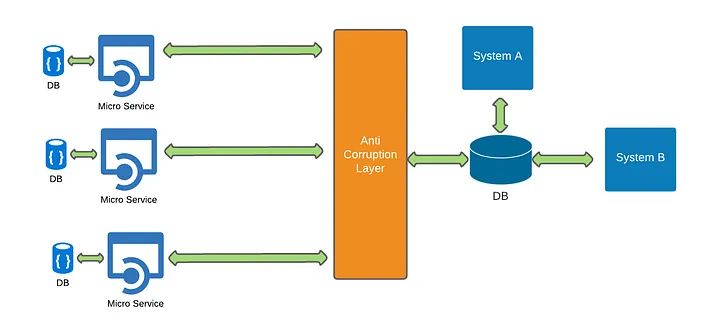
Anti Corruption Layer
Resiliency, Fault Tolerance
- Circuit Breaker Pattern: When you travel in flight, there is an oxygen mask and a life west, which is rarely paid attention to other than the air hostess who demonstrates passionately. The reason is very evident. These are used only when there is a failure. Your basic assumption is your flight will not fail, it is not required for you to use and so you will not pay attention. But this is not true for IT systems.
“Everything fails all the time” — Werner Vogels, AWS CTO
I am sure you heard about many famous websites being down because of various reasons. In a distributed environment anything can fail at any time.
As an architect, you can’t prevent failures. You can only design to handle the failures.
Circuit breaker pattern prevents an application from performing an operation that is almost certain to fail. Let me explain this. Your system is suddenly experiencing load and there are more API requests than it can handle. For instance, service typical response time threshold is 5 second and now requests are taking more than that and your service starts sending 500 responses back. Keeping aside the bad experience to the user, your system might completely give up if there is more load beyond a certain point. Now it is time to stop more requests.
Let's compare this with how an electrical circuit breaker works. Did you ever encounter this? You just switched on a plug and your electricity is suddenly gone. Now you may need to go to your switchboard either in the basement or in your main hall and ON the switch that went off. This is where the circuit breaker is in action in the real world. What is this doing? As the load is high, the electricity was stopped to prevent further damage.
Lets now come back to our world. The circuit breaker pattern has three states. Closed, Open and Half Opened. In the closed state, everything is normal and your system works as it is intended. When there is an issue, the circuit breaker opens and data flow cuts off. This means that intended requested are not served to users. Half Open tries to test the waters after some wait time, to see if the problem still exists. If it is successful, state gets changed to closed so that system comes back to normal. If it is not successful, it will go back to open state.
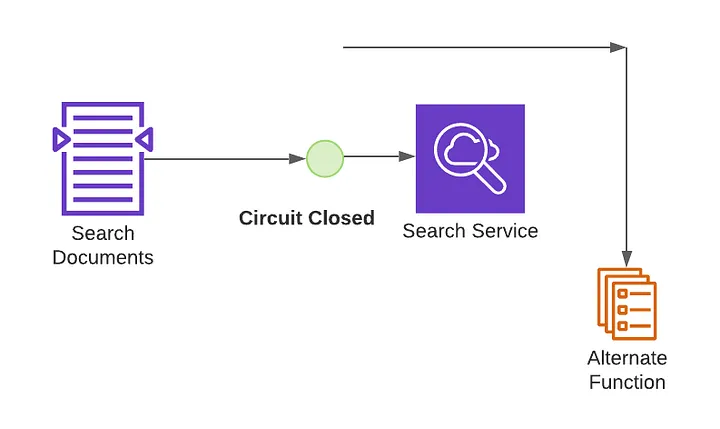
Circuit Breaker — Closed State
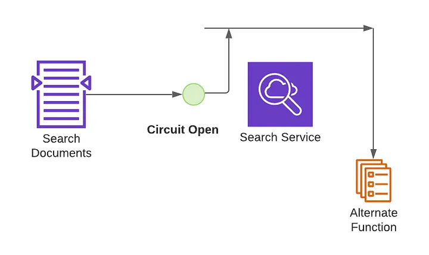
Circuit Breaker — Open State
Scalability, Resiliency and Performance
- Event Sourcing: This pattern became popular in recent days as data became new oil. This pattern suggests that, do not just store the state of an action but an entire history. Let’s say you are building a banking application. A customer will have multiple debits and credits in a period of time. Let's say the customer starts with $1000. On Day 1, she credits $50, on Day 2, she debits $100, on Day 3 she credits $150. At the end of day3, she will have $1100. However, in the case of Event Sourcing, you store all the transactions without losing a single action. When you have this data you can use for multiple purposes. While you can definitely tell what is her bank balance at any point of time by doing a quick calculation on the fly, you can also understand her banking patterns which otherwise not possible.
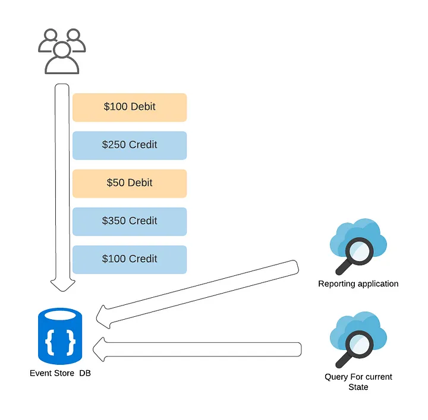
Event Sourcing
Let's look at one more example. You are building a movie ticket booking system. For a popular movie, you will see a lot of rush from the audience, which will cause scalability issues. Customer may book, cancel or hold the seats. Let's say the theatre has 200 seats. You need to constantly calculate available seats to make the number visible to the next customer. This is where event sourcing will be handy. Instead of calculating the available seats as a CRUD operation, you will go through all the events and finally arrive to a number.
Scalability, Resiliency, Fault Tolerance and Performance
5. Publisher-Subscriber pattern
This is popularly called as Pub/Sub pattern. In a cloud based system, modules of one system need to communicate with modules of same or another system asynchronously. Let me give an example. You are building a leave management system. Whenever an employee applies for a leave, you need to inform, Timesheet module, Scheduling module and Payroll module at the same time. This can be done with an async call. These modules just consume data. They will not validate the data. However, when an employee applies for leave, balance verification must be a sync call (typically a REST Api call), as an employee must not apply for leave when there are no balances (well, goes with HR policies of the organization)
One more example here. Imagine that you are a news sourcing company and you gather the news from various input mechanisms. Your end-users are newspapers and publishing companies. Then you capture the news on the ground and publish to your customers. If your customer is a sports magazine, they will only consume sports-related news or if your customer is a finance website, they will only use finance related to data. Your responsibility is to capture what is happening in the world without losing a single event. It is up to the customers to decide what they want to consume. You can also create materialized views for further consumption.
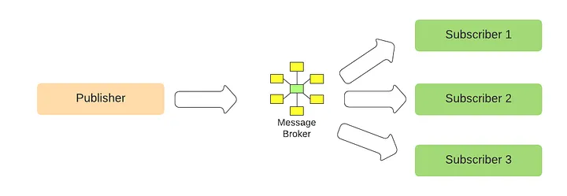
Pub Sub Pattern
Message brokers as mentioned in the picture best used for asynchronous communication. Whenever there is a need for resilient and fault-tolerant applications, Pub-Sub pattern comes handy. There are plenty of options for Message broker, Apache Kafka, Apache Active MQ, AWS Kinesis, IBM MQ. Apache Kafka is most popular, known for high performance and zero loss of data.
Scalability, Data Management and Performance
6. Sharding Pattern: If you invest in stock market, it is a well-proven strategy that you will not put all your money in one single stock. You will create a portfolio of stocks and invest. With this approach, if one stock price goes down you still will have other stocks making some profits.
Don't put all your eggs in a single basket.
Sharding takes a similar approach. In this pattern, you will divide data into multiple partitions or shards. This massively improves the scalability. This pattern comes under horizontal scalability, not vertical scalability. What will happen if the data is stored in a single data store? Same as single stock in the above example. If the datastore goes down, your users will not be able to access the data causing lot of pain. Beyond a certain point, you will encounter storage issues, computing power, network and bandwidth issues. If you are servicing users in different locations, having one data store will add to latency issues.
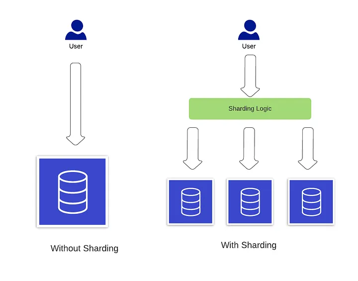
Sharding improves the scalability, performance and fault tolerance. There are multiple ways to come up with sharding strategy. The strategy goes with your use case.
Range-based Sharding: Suppose if you are storing customer data, you may look at storing based in pin code or zip code range. The disadvantage with this model is your customer data may not be equally distributed
Vertical Sharding: If you are building an e-commerce application, you might store customer demographic details in one shard and customer buying transactions in another shard. This gives an opportunity for you to scale as you needed.
Hash-based Sharding: This is a widely used strategy. If you have 5 shards to store customer data. You take for example customer unique id and apply modulo 5.
Some fun maths for you now.
How to calculate Modulo 5 of any number. It is simple. Let’s say the number is 23. Divide this number by 5. You will get 4.6. Now take 4 and multiply by 5. You get 20. Now do 23–20, you will get 3. Thus, the answer to “What is 23 mod 5?” is 3.
Hash-based sharding will have challenges in long run. What if you would like to add one more shard after an year. You need to change the sharding logic and the capacity in the data store goes for a toss. The solution is consistent hashing.
Data Management
7. Strangler Pattern: Wikipedia meaning of Strangler is an epiphyte whose aerial roots eventually strangle the tree on which it grows. Today pretty much every organization is moving from monolithic to micros services. This journey is not going to be easy in any means. When you migrate to a new system from a legacy system, you systematically move the functionality to the new system instead of a big bang approach. If you are migrating a legacy monolithic application to cloud microservices application, this pattern comes handy. Eventually, when the migration is over, the user directly interacts with modern applications. In this pattern, the small functionalities (or micro services) that are built and getting migrated, eventually kills the main system. Find more details on this pattern from Martin Fowler’s blog.
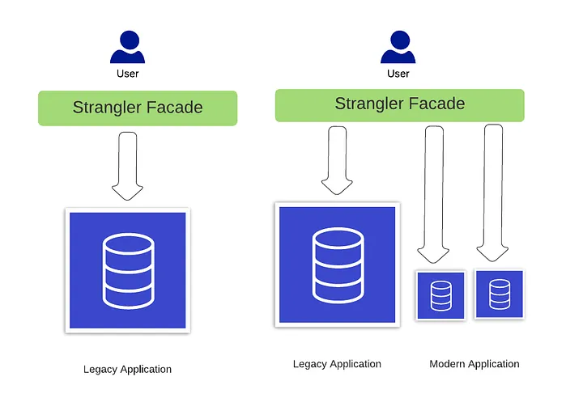
Strangler Pattern
Data Management, Security
8. Saga Pattern: This is the best pattern to manage data consistency in a distributed system. Before the internet and WhatsApp, people used to travel to relatives and friends home personally and give marriage invitations. This is seen as inviting with respect. Anyways, keeping this aside, what if the marriage cancels by any chance? You do not want your relatives and friends to come on that day. The best way is you again travel to each person’s place and tell them that marriage got cancelled. (Not a positive example. But that's life). This is exactly Saga pattern. The first paper on Saga pattern was published in 1987.
There are two ways to implement sagas pattern. Event/Choreography design and Command/Orchestration Sequencing Logic. Choreography design is very complicated. Lets look at Command/Orchestration Sequencing Logic. I will now take the example of flight booking application. This is the sequence when you book a flight.
- Select a seat (Seat Service)
- Select Meal (Meal Service)
- Pay for booking (Payment Service)
- Available seats now get updated to deduct one seat (Booking Service)
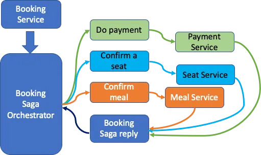
Saga Orchestrator
Let's look at the sequence of events:
- Booking Service saves a available seat for user and asks Booking Saga Orchestrator (BSO) to start a Book seat transaction.
- BSO sends a “Do Payment” command to Payment Service, and it replies with a Payment Succesful message
- BSO sends a Confirm a seat command to Seat Service, and it replies with a Seat Confirmed message
- BSO sends a Book a meal command to Meal Service, and it replies with a Meal Confirmed message.
Let's say payment service fails. You do not want to offer a free seat and a free meal for your customer. Now BSO sends a command to roll back the seat booking and meal booking. A very good and detailed explanation of Saga Pattern can be found here
Availablity, Resiliency
9. Throttling Pattern: If you ever visited any famous Indian temples on a good day, there will be 50K to 100K devotees. The Darshan time (time in front of God) lasts for just few seconds but they spend in the queue anywhere between 4 to 8 hours. Temple administration usually controls the crowd by putting them in small compartments with some seating facility. Lets says there are 20 compartments and one final queue before “darshan”. Around 200 people will fit in one compartment. As the time progresses, people move from compartment 1 to compartment 2 and so on until they hit the final queue. This is called Throttling.
When it comes to IT applications, most of the times load is predictable until unless there are some black swan events. E-commerce site gets more load during festive season or when there is a sale. For a banking system there may be more load during the time when the salary is getting credited. For a time capturing system, there will be peak load during morning, afternoon and evening time. One option to handle these peak loads is to auto scale the resources. Second option is to put a limit on the number of transaction that the system can process and start throttling the remaining transactions. With this, the SLAs are met and system continues to function as it is intended.
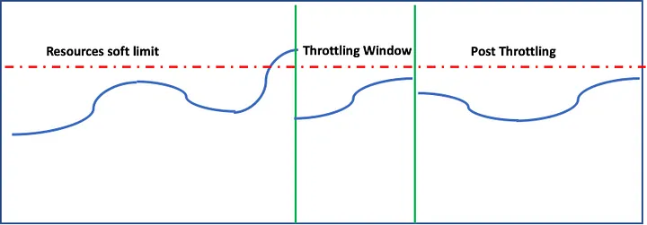
Throttling
Availablity, Performance
10. Static content hosting pattern: On a typical website, the content that doesn't change is called static content. It is generally created using HTML, CSS and Javascript. Javascript is not mandatory, can also be done with just HTML and CSS(or Sass). The dynamic website will have a logic to run on the web server and usually does CRUD operations on data which is not possible to be served by the static website. Dynamic websites depend on server-side processing, including server-side scripts such as PHP, JSP, or ASP.NET or Node.js. For example, you would like to know the price of a product before buying, you would like to pay your electricity bill, you want to post happy birthday on your friend’s timeline, or even complicated, you would like to implement your options strategy of a stock. All these require a dynamic website. With the emergence of AWS, Azure and Google cloud platform static hosting doesn’t need your own server to run. For example, you can host your static website on Amazon S3 (Simple Storage Service) without a need to spin off a new server. in addition, you can speed up your site by using Cloudfront which will store the files at the edge location close to users.
12 Software Architecture Styles Software Engineers Should Know
A brief introduction to Microservice, SOA, Event-Driven, MicroKernel, Stream-Based, and more.
What is Software Architecture?
Software architecture is the process of defining the high-level structure and organization of a software system. It involves identifying and selecting the right components, deciding how they should interact with each other, and determining how they should be organized to achieve specific goals. The goal of software architecture is to create a system that is maintainable, scalable, and secure, and that can meet the needs of users and organizations over time.
Why do we need Software Architecture?
A robust architecture provides a solid foundation for building software that meets the needs of users and stakeholders. It ensures that the system meets its functional and non-functional requirements, such as performance, security, and reliability. With a well-designed architecture, developers can build software that is easy to modify and extend, making it easier to adapt to changing business needs.
Software architecture is also essential for managing complexity. As software systems become more complex, it becomes challenging to understand how different components interact with each other. A well-designed architecture provides a high-level view of the system, making it easier to understand its structure and operation. This, in turn, helps developers to identify potential issues and make informed decisions about how to modify the system.
How do we Document Architecture? We use 4C Model.
Context Level
At the highest level, the Context level, we describe the system’s external environment, such as users, other systems, regulations, etc. This level provides a high-level overview of the system’s purpose and its relationship to the external world. It helps to identify the stakeholders who will interact with the system and the factors that will influence its design and development.
Containers level
The next level is the Containers level, which describes the runtime environment of the system, such as servers, databases, or message queues. This level helps to identify the major technology choices and deployment decisions. It provides an understanding of the physical infrastructure that will support the system and the tools and resources that will be required to deploy and maintain it.
Components level
The third level is the Components level, which describes the major functional building blocks of the system. This level helps to identify the modules, classes, or functions that make up the system. It provides an understanding of the system’s functionality and the relationships between its different components.
Code level
Finally, the Code level is the lowest level, which describes the actual code and how it implements the components. This level provides a detailed understanding of how the system works and how its different components interact with each other. It is essential for developers who will be working with the code to have a clear understanding of how it is structured and how it works.
Using the C4 model, software architects can create diagrams and written documentation that describe each of these levels, providing a comprehensive view of the system’s architecture. This approach helps to identify potential issues and trade-offs, as well as facilitating scalability, maintainability, and adaptability. By documenting the architecture in this way, developers and stakeholders can have a clear and easy-to-understand view of the system, making it easier to modify and extend as business needs change.
Here are the 12 Software Architecture Styles Software Engineer Should Know
1. Client Server
The client-server architecture is a model in which the client, a user or an application, sends a request to the server, which in turn responds with the requested data or service. The client and server can be on the same machine or on different machines connected through a network.
The client is responsible for initiating communication with the server and sending a request. The server, on the other hand, listens for incoming requests from clients, processes them, and returns a response.
Advantages of Client-Server Architecture
Scalability: Client-server architecture is highly scalable, as it allows multiple clients to connect to the same server and share resources.
Security: Client-server architecture provides better security than other network models, as the server can control access to resources and data.
Reliability: Client-server architecture is highly reliable, as the server can provide backup and recovery services in case of failures.
2. Layering
It’s a common way to design complex software systems, and it involves breaking down the system into layers, where each layer is responsible for a specific set of functions. This approach helps to organize code and makes it easier to maintain and modify the system over time.
A typical layering architecture consists of three main layers: presentation, business logic, and data access.
Presentation Layer: The presentation layer is responsible for displaying information to the user and gathering input. This layer includes the user interface and any other components that interact directly with the user. The user interface is what the user sees and interacts with, such as buttons, text boxes, and menus. The presentation layer also includes any logic related to the user interface, such as event handlers and validation.
Business Logic Layer: The business logic layer is responsible for implementing the business rules of the application. This layer contains the code that processes and manipulates data, as well as any other application logic. The business logic layer is where the magic happens, so to speak. It’s where the software performs calculations, makes decisions, and carries out tasks. This layer is where the software really earns its keep.
Data Access Layer: The data access layer is responsible for interacting with the database or other external data sources. This layer contains the code that reads and writes data to and from the database. The data access layer is where the software retrieves data from the database, makes changes to the data, and saves the changes back to the database. This layer is critical to the functioning of the software, as it enables the software to store and retrieve data.
3. Pipe and Filter
Pipe and Filter Architecture is a design pattern that allows software systems to process data by separating the processing tasks into multiple independent components. This architecture is particularly useful for systems that need to handle large amounts of data, as it can help to improve performance, scalability, and maintainability.
The Pipe and Filter Architecture is based on the idea of a pipeline, where data flows through a series of processing steps, each of which performs a specific task. Each processing step is implemented as a separate component, or filter, that accepts data as input, performs some operation on the data, and produces output data. The output data is then passed on to the next filter in the pipeline.
The filters in the pipeline are independent of each other, which means that they can be developed, tested, and deployed separately. This makes it easy to add new filters to the pipeline or modify existing ones without affecting the rest of the system.
Benefits
Scalability: The architecture can be scaled horizontally by adding more filters to the pipeline, which allows the system to handle larger amounts of data.
Performance: The architecture can be optimized for performance by parallelizing the processing of data across multiple filters.
Maintainability: The architecture promotes modularity and separation of concerns, which makes it easier to maintain and update the system over time.
4. Master-Slave
Master-Slave architecture is a design pattern used in distributed systems, where one node (the master) controls one or more nodes (the slaves) to perform specific tasks. The master node is responsible for distributing the workload across the slaves and for coordinating their activities. The slave nodes do not have the same level of control as the master node and only perform tasks that are assigned to them by the master.
Benefits
One of the most significant advantages is that it allows for the efficient distribution of workload across multiple nodes. This helps to reduce the load on any one node and ensures that the system can handle large amounts of data and traffic.
Another advantage of using a master-slave architecture is that it provides fault tolerance. If one of the slave nodes fails, the master node can redistribute its workload to the other slave nodes. This ensures that the system can continue to function even if one or more nodes fail.
5. MicroKernel
MicroKernel architecture is a software design pattern that allows developers to build more modular and flexible systems. It separates the core system functionality from additional features, which are implemented in separate modules. The core functionality of the system is implemented in the MicroKernel, a minimalistic core system that provides only the most essential services required to run the system. It is plug and play concept.
Example:
Let’s consider the example of an e-commerce website. The MicroKernel would provide essential services such as handling user authentication, managing user sessions, and processing payments. Additional features, such as product recommendations, user reviews, and social media integration, would be implemented in separate modules.
If the website wants to add a new feature, such as a loyalty program, it can be developed and added as a separate module without affecting the core functionality of the system. This modularity makes it easier to add new features or remove existing ones without affecting the core system functionality.
Furthermore, if the website wants to customize its system to meet the specific needs of different users, it can choose the modules it needs for each user. For example, a user who frequently buys electronics can be provided with a module that recommends electronic products. On the other hand, a user who frequently buys cosmetics can be provided with a module that recommends cosmetic products.
Finally, if the website wants to scale its system to handle more users or changes in hardware, it can easily add or remove modules as needed. This scalability makes it easier to adapt the system to changes in user requirements or changes in the underlying hardware.
6. DDD (Domain Driven Design)
At its core, DDD is a way of thinking about software architecture that emphasizes the domain or problem space of a project. This means that developers focus on the business logic of the software, rather than just the technical implementation.
In practice, this means that developers start by understanding the domain they are working in and break it down into smaller, more manageable parts. They then use this understanding to create a domain model, which is a representation of the different entities within the domain and how they interact with one another.
Once the domain model is created, developers can use it to guide the rest of the architecture of the software. This includes creating bounded contexts, which are areas of the software that are defined by a specific language and context, and aggregates, which are collections of related entities that are treated as a single unit.
7. Component Based
In software engineering, component-based architecture (CBA) is an approach to software design and development that emphasizes the use of reusable software components. The idea behind CBA is that software development can be made more efficient and effective by breaking down complex systems into smaller, more manageable components.
What is a component?
A software component is a modular, self-contained unit of software that can be reused across different systems. A component typically has a well-defined interface, which specifies how other components can interact with it. This interface includes information about the component’s inputs, outputs, and behavior.
Components can be classified into different types based on their functionality, such as user interface components, data access components, and business logic components. Each type of component has a specific role in the software system and can interact with other components through their interfaces.
8. SOA
SOA is an architectural style that aims to create modular, reusable services that can be easily integrated with other services to create a larger system. In this approach, services expose their functionality through interfaces, which can be accessed by other services or applications.
At its core, SOA is about building software by breaking it down into smaller pieces, or modules, that can be reused across different applications. This modular approach allows developers to focus on building specific pieces of functionality and then integrating them with other pieces to create a larger system.
Core Components of SOA
Service Provider: The service provider is responsible for creating and exposing services to the outside world. These services can be used by other services, applications, or end-users. For example, a payment processing service provider might create and expose a service that allows other applications to process payments.
Service Registry: The service registry is a directory of available services that can be accessed by other services or applications. The service registry provides information about the service, such as its name, location, and interface. For example, if an application needs to process payments, it can use the service registry to find the payment processing service and access its interface.
Service Requestor: The service requestor is responsible for consuming the services exposed by the service provider. This can be done by using the service registry to find the appropriate service and then invoking its interface. For example, an application might use the service registry to find the payment processing service and then use its interface to process payments.
9. Monolithic
Monolithic architecture is a software design pattern that has been around for decades. It’s a way of structuring an application as a single, cohesive unit, rather than splitting it up into individual, smaller components.
In a monolithic architecture, the entire application is built as a single, self-contained unit. All of the code and dependencies are packaged together, so the application can be deployed and run on a single server.
This makes it easy to develop and deploy the application, since everything is in one place. It also makes it easier to scale the application horizontally, by adding more servers.
Advantages of Monolithic Architecture
One of the biggest advantages of monolithic architecture is its simplicity. Since everything is contained in a single unit, there are fewer moving parts to worry about. This makes it easier to develop, test, and deploy the application.
Another advantage is that it’s easier to maintain and debug a monolithic application. Since everything is in one place, it’s easier to track down issues and fix them.
Disadvantages of Monolithic Architecture
One of the biggest disadvantages of monolithic architecture is that it can be difficult to scale the application vertically. Since everything is running on a single server, there’s a limit to how much traffic the application can handle.
Another disadvantage is that it can be difficult to adopt new technologies and languages in a monolithic application. Since everything is packaged together, it can be hard to update individual components without breaking the entire application.
10. Microservice
Microservice architecture is a style of software architecture that structures an application as a collection of small, independent services that communicate with each other over a network. Each service is focused on a specific business capability and can be developed, deployed, and scaled independently of other services in the system.
The main idea behind microservice architecture is to break down a large, monolithic application into smaller, more manageable services. This approach brings several benefits, such as improved scalability, increased flexibility, and quicker time-to-market for new features. With a microservice architecture, each service can be scaled independently, making it easier to handle traffic spikes or changes in demand. Developers can also modify or add new services without affecting other parts of the system, which speeds up the development process.
Challenges of Microservice Architecture
Despite the benefits of microservice architecture, it also introduces additional complexity. One of the biggest challenges is managing inter-service communication. Services need to be able to discover each other and communicate effectively, which can be difficult to do at scale. Load balancing and fault tolerance are also more complex in a microservice architecture.
Another challenge is ensuring that each service has its own data store. In a monolithic application, all data is typically stored in a single database. With microservices, each service should have its own data store to ensure that changes to one service do not affect other services in the system. This can lead to increased complexity in data management and synchronization.
Best Practices for Microservice Architecture
To ensure the success of a microservice-based system, developers should follow best practices for designing and implementing microservices. Some of these best practices include:
Design services that are loosely coupled and highly cohesive, with clear boundaries and well-defined interfaces.
Use containerization technology, such as Docker, to package and deploy each service as a separate container. This allows for easy scaling and deployment of individual services as needed.
Implement effective monitoring and management tools to ensure that the system is running smoothly and to detect and address issues quickly.
Use a service mesh, such as Istio, to manage inter-service communication and load balancing.
Implement a continuous integration and deployment (CI/CD) pipeline to automate the testing and deployment of microservices.
11. Event Driven
Event Driven Architecture (EDA) is an approach to designing software systems that enables rapid and efficient communication between different components or services. In this paradigm, different software components communicate with each other using events, rather than through direct requests or responses.
In EDA, events are generated by different components of a software system, such as a user interface or a backend service. These events are then broadcast to other components of the system, which can subscribe to them and act on them as needed.
For example, consider a simple e-commerce application. When a new order is placed, the order processing service can generate an “order created” event, which is then broadcast to other services such as inventory management, shipping, and billing. Each of these services can then process the event and make updates to their respective systems.
Benefits of EDA
One of the key benefits of EDA is its ability to decouple different components of a software system. When different components communicate through events rather than direct requests, they become less dependent on each other. This makes it easier to change or update individual components of the system without affecting the rest of the system.
Another benefit of EDA is its scalability. Because events are broadcast to multiple components of the system, it is possible to process large volumes of data and transactions in parallel. This makes it easier to handle high traffic and spikes in demand.
Challenges of EDA
While EDA has many benefits, it also has some challenges. One of the main challenges is managing the complexity of event-driven systems. Because events can be generated and consumed by many different components, it can be difficult to track and debug issues that arise.
Another challenge is ensuring that events are processed in the correct order. Because events can be generated and processed asynchronously, it is possible for events to be processed out of order. This can cause issues such as data inconsistencies or incorrect calculations.
12. Stream Based
As software development becomes more complex and demands greater scalability, traditional architectures are becoming less and less effective. Stream-based architecture is emerging as a promising alternative that enables developers to build systems that can handle massive amounts of data in real-time.
At its core, stream-based architecture is based on the principles of event-driven programming. Instead of processing data in batches, stream-based systems process data as it is generated in real-time. This allows developers to build systems that can respond to changes in data with minimal latency.
Benefit of Stream-Based Architecture
One of the key benefits of stream-based architecture is its scalability. Because data is processed in real-time, stream-based systems can handle massive amounts of data without the need for complex batch processing pipelines. This makes it possible to build systems that can process millions of events per second, making it ideal for use cases like sensor data processing, financial trading, and online advertising.
Another benefit of stream-based architecture is its flexibility. Because data is processed in real-time, it is possible to build systems that can respond to changes in data with minimal latency. This makes it possible to build complex, event-driven systems that can adapt to changing business requirements. For example, in an e-commerce platform, stream-based architecture can be used to track user activity in real-time and respond with personalized recommendations and promotions based on the user’s browsing and purchasing history.
Furthermore, stream-based architecture can provide significant cost savings. Traditional batch processing pipelines require expensive hardware and complex software infrastructure to manage the data processing. On the other hand, stream-based systems can be built on inexpensive commodity hardware, making it much easier to scale and maintain.
Finally, stream-based architecture is highly fault-tolerant. Because data is processed in real-time, it is possible to build systems that can automatically recover from failures without the need for manual intervention. This makes it possible to build systems that can operate at scale with high levels of reliability, reducing the risk of data loss or system downtime.
23 Fundamental Principles in Software Architecture
Software Architecture bases on set of basic principles that is actual for every kind of software system. Experienced Software Architects are aware of them and able to spot the right places in their software products to implement specific principle. Let us have a quick overview over some basic principles that Software Architects deals with on daily basis:
1.Dependency Inversion… This principle states that direction of dependency should be towards abstraction not implementation. If compile-time dependency flows in direction of run-time execution this makes directed dependency. With Dependency Inversion we invert the direction of dependency control.
2.Separation of Concerns… This principle states that a software system should be separated by the kind of work it does. For Example: It is noteworthy to separate the software system into different pieces by business logic, infrastructure or user interface. By splitting the system into different parts based on different activity areas makes it easier to develop/test/deploy. SoC is a driving force behind Software Architecture Patterns like Domain Driven Design, Hexagonal Architecture, Clean Architecture.
3.Inversion of Control…
This principle is similar to Dependency Inversion Principle but in broader context. IoC inverts the flow of control which is managed by different third party frameworks such as Spring Framework. Unlike traditional Java EE programs where Beans are initialized procedurally by the engineer that developed it, Spring takes control of Configuration Beans, which means inverting the control.
4.Dependency Injection…
This Principle states that for example in java terms: dependency should be injected through constructor in run-time. Action Interface is injected in Human class through its HumanAction Implementation, that decides in run-time which specific action to implement. This technique gives some flexibility of dependencies:
package az.alizeynalli.di;
public interface Action {
void do();
}
public class HumanAction implements Action {
@Override
public void do() {
System.out.print("run");
}
}
public class Human {
Action action;
public Human(Action action) {
this.action = action;
}
@Override
public void do() {
actoin.do();
}
}
public static void main(String[] args) {
Human human = new Human(new HumanAction);
human.do();
}
5.Single Responsibility…
This principle’s main idea is to limit each building block of a software system by one and only responsibility. No matter what is the scope of a building block, be it plugin, package, class, function even a variable. Each of these building blocks should have only one responsibility.
6.Don’t Repeat Yourself (DRY)…
This principle aims to eliminate redundancy in code by avoiding duplicate code. If there is existing functionality for some behaviour this should be repeatedly used, instead of having same code snippet in multiple instances.
Every piece of knowledge must have a single, unambiguous, authoritative representation within a system.
7.Open-Closed…
A Software artifact should be open for extension but closed for modification.
This simple description of the principle was firstly introduced by Bertrand Meyer. Software system that needs modification each time for any additional functionality is just a big mess. On the other hand, this kind of chaotic program is welcoming occasional bugs every time modification is made. Preferably, every new functionality should be maximum of new code and minimum of change in old code, in ideal world: zero changes in old code.
8.Persistence Ignorance…
PI bases on the idea that code should be unaffected by whichever database or persistence technology is chosen. Business Logic should be free of any technology chosen to be applied. If tomorrow, there is better alternative persistence technology which is more effective and for better price, changing this part of software system should not affect upper abstraction layers.
9.YAGNI…
You ain’t gonna need it. This principle tries to avoid premature optimization of a software system. Often developers overengineer some things in a software system with the vision that some time in future it will be helpful. But this time often never comes.
10.Boy Scout Rule…
Always leave the campground cleaner than you found it.
The main idea here is to always keep refactoring code as you encounter anti-patterns while developing further. This leads to better code quality over time.
11.Liskov-Subsititution…
If for each object o1 of type S there is an object o2 of type T such that for all programs P defined in terms of T, the behaviour of P is unchanged when o1 is substituted for o2 then S is a subtype of T.
This definition from Barbara Liskov might sound pretty confusing but in essence, it is a simple and easy to understand principle. If we restate the above given definition, the principle’s motto is: when using inheritance, hierarchy of inheritance should be from functional and business logic aspect consistent. The subtypes should be mutually substitutable and not alter behavior of parent class. As a simple example we can take “infamous square/rectangle” problem. Where square should not be subtype of rectangle, because definition of height and length of these two geometric forms are different (square’s height and weight are equal whereas for rectangle they will vary).
12.Encapsulation…
Different building blocks of a Software System should make use of Encapsulation by restricting access to its components from outside world. This achieved by setting components private in a class scope or setting access restrictions in plugin scope (in terms of java) so hiding information.
13.Loose Coupling…
One of the most important principles in Software Architecture is Loose Coupling which means simply put loose dependencies. This principle states that software systems should be loosely dependent on each other. If one part of software systems changes, this should influence other parts minimally. Loose Coupling is possible through Dependency Inversion, Asynchronous Messaging Middleware, Event Sourcing etc.
14. Cohesion…
Cohesion refers to the degree to which the elements inside a module belong together. In one sense, it is a measure of the strength of relationship between the methods and data of a class and some unifying purpose or concept served by that class.
It is a best practice to have highly cohesive classes, which motivates single responsibility principle, loose coupling etc.
15. Interface Segregation…
Interface-Segregation Principle states that no client should be forced to depend on methods it does not use.
We should make it clear that, this principle is applicable mostly to statically-typed programming languages like Java, C etc. In dynamically typed languages like Python or Ruby this principle does not make a big sense.
We can imagine a situation that our Income and Expense Use Cases are dependent on a functionality that holds business logic for both cases. So Income Use Case has an abundant dependency on a functionality that is used for Expense Use Case and Expense Use Case has the same issue in respect to Income Use Case. Following is the Violation of ISP based on above discussion:
package az.alizeynalli.cashflow.core.service;
public interface ConverterService {
Income convertIncome(Income income);
Expense convertExpense(Expense expense);
}
@Component
public class ExpenseConverterServiceImpl implements ConverterService {
@Override
public Income convertIncome(Income income) {
throw new UnsupportedOperationException();
}
@Override
public Expense convertExpense(Expense expense) {
// convert expense here
return expense;
}
}
@Component
public class IncomeConverterServiceImpl implements ConverterService {
@Override
public Income convertIncome(Income income) {
// convert income here
return income;
}
@Override
public Expense convertExpense(Expense expense) {
throw new UnsupportedOperationException();
}
}
16. Bounded Context…
Bounded contexts are a central pattern in Domain-Driven Design. They provide a way of tackling complexity in large applications or organizations by breaking it up into separate conceptual modules. Each conceptual module then represents a context that is separated from other contexts (hence, bounded), and can evolve independently. Each bounded context should ideally be free to choose its own names for concepts within it, and should have exclusive access to its own persistence store.
17.Stable Dependencies…
This principle states that different building blocks of a software system should only depend on artifacts that reliable, stable. This principle makes more sense in docker image terms, where you import different dependencies from docker hub without even knowing how reliable/stable are they.
18. Polymorphism…
This actually belongs to 4 Pillars of Object Oriented Programming and motivates usage of interfaces (in java terms!) which can be provisioned in multiple forms. Polymorphism means: entity with multiple forms.
19. Modularization…
Modularization is the process of dividing a software system into multiple independent modules where each module works independently. This principle is another form of single responsibility separation of concerns principles applied to the static structure of a software system.
20. Abstraction…
This also belongs to 4 Pillars of Object Oriented Programming and states:
The process of removing physical, spatial, or temporal details or attributes in the study of objects or systems to focus attention on details of greater importance; it is similar in nature to the process of generalization;
21. Keep It Simple, Stupid (KISS)…
As it is understandable from the above statement this principle motivates software engineers to keep the code simple and stupid(understandable) to avoid potential future misunderstandings from other peer engineers.
22. Incremental/Iterative Approach…
This principle is basics of Agile Software Development Manifesto, that bases on the idea that software system should be developed on incremental and iterative manner. That means with every iteration software system is incremented and gone live.
23. Least Knowledge…
Or information envying is another term to encapsulation or information hiding principles which states that different parts of software system should only have knowledge that they need.
7 Architecture Design Patterns — You wish you knew before interview
If you landed on this blog, I believe you know what modern architecture design patterns are. But for some of our less experienced friends here, think of architecture design patterns as the way you design your application(s) such that they scale and don’t need your resignation for that.
Architecture Design Patterns, in a nutshell, are design patterns for High Level Design.
Modern problems demand modern solutions. For applications to cater to enterprises or even an internet-level audience, they need to be scalable, available, secure, and resilient. Without a doubt, all major league companies are looking for developers who can grasp and solve these difficulties.
The question now is: how do developers solve these problems? One way is to follow good architectural design patterns. Here I present you 7 deadly Sins:-
Circuit Breaker Pattern
Michael Nygard’s book, Release It!, popularized the Circuit Breaker pattern, which can prevent an application from continually attempting to execute an action that is likely to fail, allowing it to proceed without waiting for the problem to be corrected or spending CPU cycles while determining the fault’s duration.
The Circuit Breaker pattern also allows an application to determine whether or not the issue has been remedied. If the problem appears to be resolved, the program can attempt to perform the operation.
The Circuit Breaker pattern serves a distinct purpose than the Retry pattern. The Retry pattern allows an application to retry an operation in the hope that it will succeed the next time.
The Circuit Breaker design prohibits an application from doing a risky activity. An application can use the Retry pattern to trigger an action through a circuit breaker to combine these two patterns. The retry logic, on the other hand, should be alert to any exceptions supplied by the circuit breaker and should cease repeat attempts if the circuit breaker indicates that a fault is not temporary.
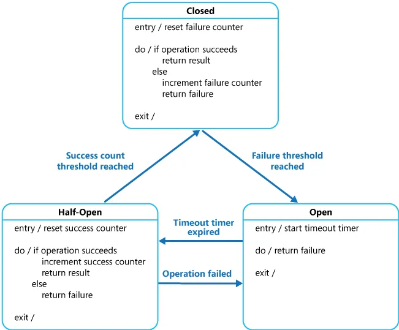
Event Sourcing Pattern
Most apps operate with data, and the common method is for the program to keep the data in its present state by updating it when users interact with it. In the classic create, read, update, and delete (CRUD) architecture, for example, a typical data operation is to receive data from the store, make some changes to it, and then update the current state of the data with the new values— often by utilizing transactions that lock the data.
The Event Sourcing design defines a method for handling data activities that are triggered by a series of events, each of which is recorded in an append-only store. Application code delivers a series of events to the event store, where they are persisted, that must describe each action that has occurred on the data. Each event describes a collection of data changes (for example, "AddedItemToOrder").
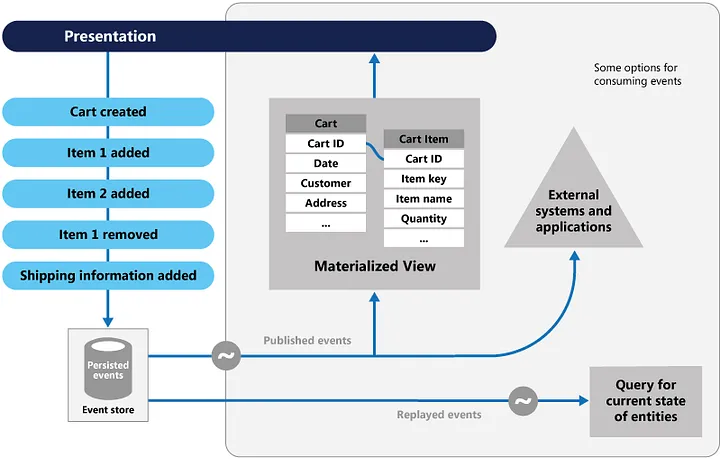
The events are saved in an event store, which serves as the system of record (the official data source) for the data’s present state. These events are often published by the event retailer so that consumers are aware and can handle them if necessary. Consumers may, for example, start tasks that apply the operations in the events to other systems, or they could execute any other associated action required to finish the process. It’s worth noting that the application code that generates the events is separate from the systems that subscribe to them.
SideCar Pattern
Monitoring, logging, configuration, and networking services are frequently required by applications and services. These extraneous chores might be carried out as distinct components or services.
A sidecar service is not always part of the application, but it is linked to it. It follows the parent application everywhere it goes. Sidecars are procedures or services that are delivered alongside the principal application. The sidecar on a motorbike is coupled to one motorcycle, and each motorcycle can have its own sidecar. A sidecar service, similarly, mirrors the fate of its parent application. A sidecar instance is deployed and hosted alongside each instance of the application.
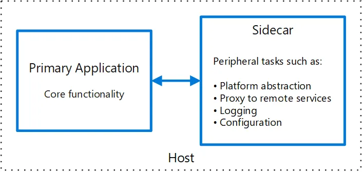
They can execute in the same process as the application if they are tightly integrated, making optimal use of shared resources. This, however, implies that they are not properly separated, and a failure in one of these components can affect other components or the entire application. Furthermore, they must normally be written in the same language as the parent program. As a result, the component and the application are highly dependent on one another.
CQRS
CQRS stands for Command and Query Responsibility Segregation, a pattern that isolates data store read and update processes. CQRS implementation in your application can improve its performance, scalability, and security. The flexibility gained by moving to CQRS enables a system to evolve more effectively over time and prevents update instructions from triggering merge conflicts at the domain level.
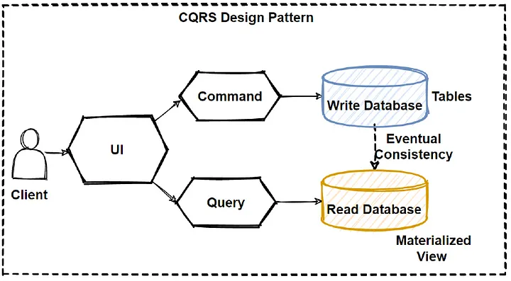
Separate query and update models make design and implementation easier. although, CQRS code cannot be automatically generated from a database schema using scaffolding techniques such as O/RM tools (although, you can add your customised on top of the generated code).
You can physically split the read and write data for more isolation. In that instance, the read database can utilise its own query-optimized data schema. It can, for example, store a materialised view of the data to avoid complex joins or O/RM mappings. It may even employ a different sort of data storage. For example, the write database could be relational, and the read database could be a document database.
Rate Limiting Pattern
To prevent excessive resource consumption, some services impose limits on how fast other applications or services can access them. This is called throttling. You can use a rate limiting pattern to reduce or avoid throttling errors caused by these limits and to estimate throughput more accurately.
A rate-limiting pattern can be useful in many situations, but it is especially helpful for large-scale repetitive automated tasks such as batch processing.
By limiting the amount of records supplied to a service during a specific time, rate limiting can lower your traffic and possibly increase throughput.
Various measures may be used to throttle a service over time, including:
— the quantity of actions (60 requests, for instance).
— the volume of data (50 GB per minute, for instance).
— the relative expense of operations (42,000 RUs per second, for instance).
Regardless of the metric employed for throttling, the rate limiting approach you choose will include regulating the volume and/or size of operations delivered to the service over a predetermined time frame in order to maximize your use of the service without going over the throttling limit.
Strangler Fig
Migrate a legacy system incrementally by gradually replacing certain functionalities with new apps and services. The old system is eventually choked by the new system, which eventually replaces all of the features of the legacy system, enabling you to decommission it.
Replace specific functionalities in stages with fresh software and services. Make a façade that catches requests headed for the legacy backend system. These requests are forwarded by the façade to either the new services or the legacy application. Customers can use the same interface while existing functionality are progressively moved to the new system, completely ignorant of the transition.
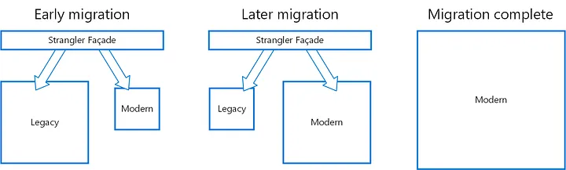
This method helps spread out the development work across time and reduce migration risk. You may add functionality to the new system at any rate you like while ensuring the legacy application continues to work because the façade safely directs users to the appropriate application. The legacy system gradually becomes “strangled” and is no longer required over time as features are transferred to the new system. After finishing this procedure, the legacy system can be safely retired.
Health Endpoint Monitoring Pattern
The Health Endpoint Monitoring pattern can be used to ensure that programmes and services are operating properly. This pattern outlines how functional checks should be used in an application. Through open endpoints, external tools have regular access to these checks.
Sending requests to an endpoint on your application will enable health monitoring. After running all essential tests, the programme should indicate its state.
Usually, a health monitoring check combines two elements:
When a request is made to a health verification endpoint, the application or service executes checks, if any.
The evaluation of the outcomes by the system or tool that conducts the health verification check
The response code indicates the application’s status. The status of the app’s components and services may optionally be provided in the response code. The latency or reaction time check is carried out by the monitoring tool or framework.
The pattern is seen in the following figure.
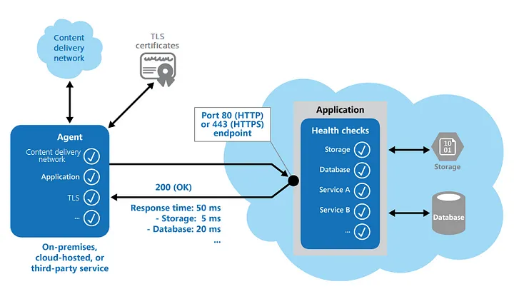
Git Branching Methodologies
Trunk Based Development Flow
gitGraph TB: commit id: "1" commit id: "2" branch "Feature 1" checkout "Feature 1" commit id: "3" checkout main branch "Feature 2" commit id: "4" checkout "Feature 2" commit id: "5" checkout main branch "Feature 3" checkout "Feature 3" commit id: "5" checkout main merge "Feature 3" checkout "Feature 2" merge main checkout "Feature 1" merge main commit id: "6" checkout "Feature 2" commit id: "7" commit id: "8" checkout "Feature 1" commit id: "9" checkout main merge "Feature 1" checkout "Feature 2" merge main commit id: "10"
GitFlow
gitGraph TB: commit id: "1" commit id: "2" branch develop checkout develop commit id: "3" commit id: "4" checkout main merge develop id: "5" tag: "v1.0" checkout develop commit id: "6" branch feature-A checkout feature-A commit id: "7" checkout develop commit id: "8" checkout main merge feature-A id: "9" tag: "v1.1" checkout develop commit id: "10" branch release-1.0 checkout release-1.0 commit id: "11" checkout main merge release-1.0 id: "12" tag: "v1.0.1" checkout develop merge release-1.0 id: "13" commit id: "14" branch hotfix-1.0.2 checkout hotfix-1.0.2 commit id: "15" checkout main merge hotfix-1.0.2 id: "16" tag: "v1.0.2" checkout develop merge hotfix-1.0.2 id: "17" commit id: "18"
GitHub Flow
gitGraph commit id: "1" commit id: "2" commit id: "3" commit id: "4" commit id: "5" commit id: "6" commit id: "8" commit id: "9" commit id: "10" commit id: "12" commit id: "13" commit id: "14" commit id: "15" main --> main: Merge feature-A main --> main: Merge feature-B main --> main: Merge hotfix-1.0.1
GitLab Flow
Software Architecture: The Most Important Architectural Patterns You Need to Know
Explaining common different architecture patterns
[
An architectural pattern is a general, reusable solution to a commonly occurring problem in software architecture within a given context.
A pattern is a solution to a problem in a context.
Many programmers are nowadays still confused about the difference between architecture patterns or don’t even know much about it.
Let me explain to you…!
- Layered Architecture
- Pipe and Filter
- Client Server
- Model View Controller
- Event Driven Architecture
- Microservices Architecture
Layered Architecture
The most common architecture pattern is the layered architecture or known as the n-tier architecture. It is widely known by most software architects, designers, developers. Although, there are no specific restrictions in terms of the number and type of layers that must exist, most layered architecture consists of four tiers: presentation, business, persistence and database as follows.
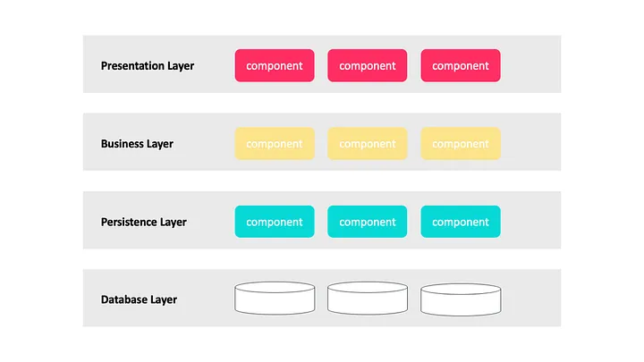
an popular example of n-tier architecture
Context
All complex systems experience the need to develop and evolve portions of the system independently. For this reason, the developers of the system need clear and well-documented separation of concerns, so that modules of the system may be independently developed and maintained.
Problem
The software needs to be segmented in such a way that the modules can be developed and evolved separately with little interaction among the parts, supporting portability, modifiability, and reuse.
Solution
To achieve this separation of concerns, the layered pattern divides the software into units called layers. Each layer is a grouping of modules that offers a cohesive set of services. The usage must be unidirectional. Layers completely partition a set of software, and each partition is exposed through a public interface.
- The first concept is each of the layers has a specific role and responsibility. For example, the presentation layer would be responsible for handling all UI. Because this separation of concerns within the layered architecture makes it easy to build effective roles and responsibility.
- On the second concept, the layered architecture pattern is a technically partitioned architecture as opposed to a domain partitioned architecture. They are groups of components, rather being by domain.
- The last concept is that each of the layers in the layered architecture is marked as being either closed or open. A closed layer means that a request moves from layer to layer, it must go through the layer right below it to get to the next layer below that one. The request cannot skip any layers.
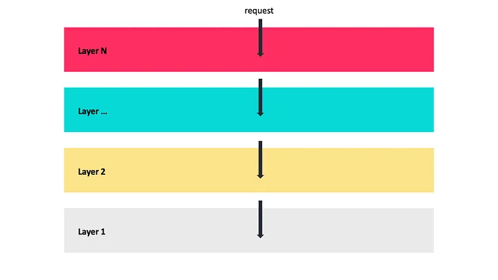
Closed layers and request access
Weakness
Layers contribute to a performance penalty. The pattern does not lend itself to high-performance applications because it is not efficient to go through multiple layers of the architecture to fulfill a business request.
The addition of layers also adds up-front cost and complexity to a system.
Usages
We should use this style for small, simple applications or websites. It is a good choice for situations with a very tight budget and time constraints.
Multi-Tier Pattern
Context
In a distributed deployment, there is often a need to distribute a system’s infrastructure into distinct subsets.
Problem
How can we split the system into a number of computationally independent execution structures: groups of software and hardware connected by some communications media?
Solution
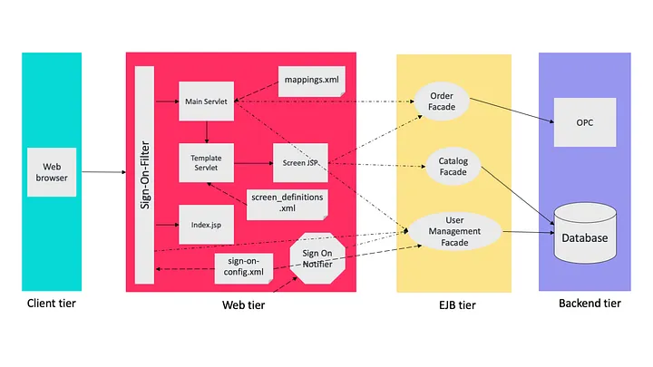
a multi-tier example — consumer website J2EE
The execution structures of many systems are organized as a set of logical groupings of components. Each grouping is termed a tier.
Weakness
Substantial up-front cost and complexity.
Usages
Used in distributed systems.
Pipe and Filter
One of the patterns in software architecture that appears, again and again, is the pipe-filter pattern.
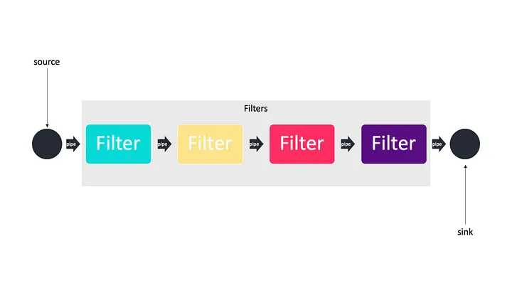
the pipe filter style
Context
Many systems are required to transform streams of discrete data items, from input to output. Many types of transformations occur repeatedly in practice, and so it is desirable to create these as independent, reusable parts.
Problem
Such systems need to be divided into reusable, loosely coupled components with simple, generic interactionmechanisms. In this way they can be flexibly combined with each other. The components, being generic and loosely coupled, are easily reused. The components, being independent, can execute in parallel.
Solution
Pipes in this architecture form the communication channel between filters. The first concept is each of the pipes is un-directional and point to point for performance reasons, accepting input from one source and always directing output to another.
There are four types of filters exist within this style as follows.
- producer (
source): the starting point of a process. - transformer (
map): performs a transformation on some or all of the data. - tester (
reduce): tests one or more criteria. - consumer (
sink): the terminating point.
Weakness
Not good choice for interactive systems, because of their transformational character.
Excessive parsing and unparsing leads toloss of performance and increased complexity in writing the filters themselves.
Usages
The pipe-filter architecture uses in a variety of applications, especially tasks that facilitate simple, one-way processing such as EDI, ETL tools.
Compilers: the consecutive filters perform lexical analysis, parsing, semantic analysis, and code generation.
Client Server
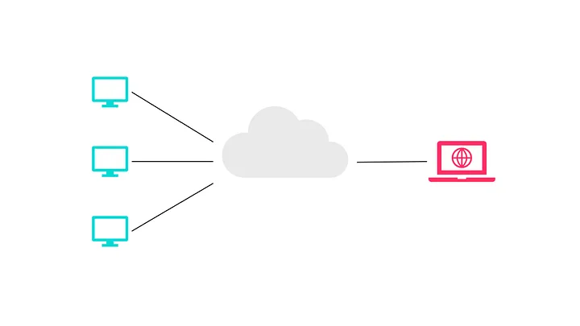
Context
There are shared resources and services that large numbers of distributed clients wish to access, and for which we wish to control access or quality of service.
Problem
By managing a set of shared resources and services, we can promote modifiability and reuse, by factoring out common services and having to modify these in a single location, or a small number of locations. We want to improve scalability and availability by centralizing the control of these resources and services while distributing the resources themselves across multiple physical servers.
Solution
In a client-server style, components and connectors have a particular behavior.
- Components, called “clients,” send requests to a component, called “server,” and wait for a reply.
- A server component receives a request from a client and sends it the reply.
Weakness
The server can be a performance bottleneck and a single point of failure.
Decisions about where to locate functionality (in the client or in the server) are often complex and costly to change after a system has been built.
Usages
We can use the client-server style to model a part of a system that has many components sending requests (clients) to another component (server) that offer services: online applications such as email, document sharing and banking.
Model View Controller
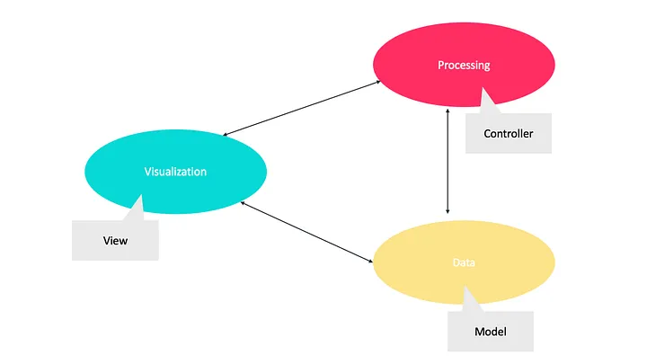
Context
The user interface is typically the most frequently modified portion of an interactive application. Users often wish to look at data from different perspectives, such as a bar graph or a pie chart. These representations should both reflect the current state of the data.
Problem
How can user interface functionality be kept separate from application functionality and yet still be responsive to user input, or to changes in the underlying application’s data?
And how can multiple views of the user interface be created, maintained, and coordinated when the underlying application data changes?
Solution
The model-view-controller (MVC) pattern separates application functionality into three kinds of components as follows.
- A model, which contains the application’s data.
- A view, which displays some portion of the underlying data and interacts with the user.
- A controller, which mediates between the model and the viewand manages the notifications of state changes.
Weakness
The complexity may not be worth it for simple user interfaces.
The model, view, and controller abstractions may not be good fits for some user interface toolkits.
Usages
MVC is an architectural pattern that is commonly used in web, mobile applications while developing user interfaces.
Event Driven Architecture
Context
Computational and information resources need to be provided to handle incoming independent asynchronous application-generated events in a manner that can scale up as demand increases.
Problem
Construct distributed systems that can service asynchronous arriving messages associated with an event, and that can scale from small and simple to large and complex.
Solution
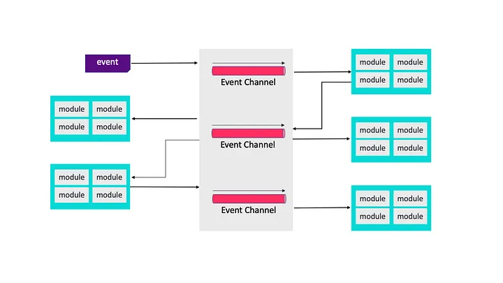
Deploy independent event processes/processors for event handling. Arriving events are queued. A scheduler pulls events from the queue and distributes them to the appropriate event handler based on a scheduling policy.
Weakness
Performance and error recovery may be issues.
Usages
An e-commerce application that uses this approach would work as follows:
The Order Service creates an Order in a pending state and publishes an OrderCreated event.
- The Customer Service receives the event and attempts to reserve credit for that Order. It then publishes either a Credit Reserved event or a
CreditLimitExceededevent. - The Order Service receives the event from the Customer Service and changes the state of the order to either approved or canceled
Microservices Architecture
Context
Deploy server-based enterprise applications that support a variety of browsers and native mobile clients. The application handles client requests by executing business logic, accessing a database, exchanging messages with other systems, and returning responses. The application might expose a 3rd party API.
Problem
Monolithic applications can become too large and complex for efficient support, and deployment for optimal distributed resource utilization such as in cloud environments.
Solution
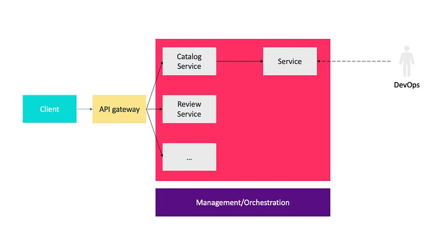
Build applications as suites of services. Each service is independently deployable and scalable and has its own API boundary. Different services can be written in different programming languages, manage their own database, and developed by different teams.
Weakness
Systems must be designed to tolerate service failures that require more system monitoring. Service choreography and event collaboration overhead.
We also need more memory.
Usages
Many use cases are applicable for a microservices architecture, especially those that involve an extensive data pipeline. For example, a microservices-based system would be ideal for a reporting system on a company’s retail store sales. Each step in the data preparation process would be handled by a microservice: data collection, cleansing, normalization, enrichment, aggregation, reporting, etc.
Easy, right?
Best Practices When Documenting Your Code for Software Engineers
It’s all about clear, asynchronous communication

As a software engineer, it is very important to acquire the skill of writing high-quality documentation. Due to the recent increase in remote work, it has become even more important to be better at asynchronous communication. Remote company GitLab does an excellent job of defining asynchronous communication:
“Asynchronous communication is the art of communicating and moving projects forward without the need for additional stakeholders to be available at the same time your communique is sent.”
High-quality documentation is an easier way to achieve effective asynchronous communication. In this article, I am going to talk about some interesting tips that I have found very useful in my personal experience.
Google Tech Writing Course
Google offers a free tech writing course for software engineers. It starts with the fundamentals of tech writing. There are two courses and the content is as shown below:

TOC — Google Tech Writing One

TOC — Google Tech Writing Two
Being good at tech writing does not happen overnight. It takes practice. I personally prefer visiting this course each month to remind myself of the best practices.
Using the Divio Documentation Framework
Amongst all other documentation frameworks, I personally like Divio the best. The documentation systems suggested there are easy and universally applicable.
The framework suggests classifying documentation in the following types:
- Tutorials — Learning-oriented
- How-To Guides — Problem-solving-oriented
- Explanation — Understanding-oriented
- Reference — Information-oriented
The scheme is widely adopted by a lot of famous open source projects and enterprises.
Here is a great video explaining the details of the framework:
Use Markdown-Based Systems for Documentation
In a typical enterprise, there are various ways you can maintain your documentation. Some people prefer creating MS Word/Excel documents and uploading those in SharePoint or OneDrives. The biggest problem with such documents is that they are not searchable using your internal search engine. Hence I personally prefer using Markdown-based documentation systems. Creating and maintaining documentation is easy and the documentation is searchable.
If you are not familiar with Markdown, you can easily master it. Check out this free recommended course from GitHub.
Using Mermaid JS for Diagrams
According to Mermaid itself, it “is a Javascript-based diagramming and charting tool that uses Markdown-inspired text definitions and a renderer to create and modify complex diagrams.” If you are using GitLab or Azure DevOps, Mermaid is natively supported. If you are using GitHub or Atlassian products, then there are plug-ins available.
With Mermaid, creating and updating diagrams is very easy and you don’t need to have any UML tools like Visio/draw.io installed on every developer’s workstation.
Here are some sample diagrams created with Mermaid
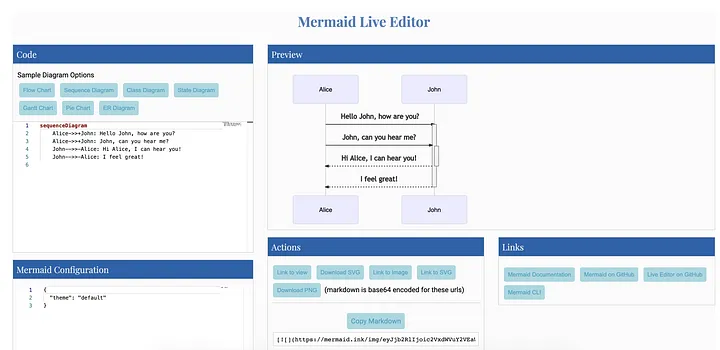
Sample Sequence Diagram using Mermaid

Sample Class Diagram using Mermaid
You can try out creating diagrams using the Mermaid Live Editor as well.
Use Templates
There are numerous templates available on various sites like Confluence that can be used for specific types of documents. For example:
- Software Architecture Review Template
- Architecture Decision Record Template
- Incident Postmortem Template
- DevOps Runbook
- Decision Template
- Writing Guidelines
- OKR Template
- Etc.
Refer to Style Guides
If your team does not have a style guide already, refer to what the Googles and Microsofts of the world do:
References
Code - General Implementation
Before You Begin
- CDG-1 Do you understand the design you are about to construct?
- CDG-2 Does the design provide an appropriate level of detail for coding to begin?
- CDG-3 Is the design to be implemented straightforward and feasible, or should it be revisited before attempting to construct it?
- CDG-4 Do you understand the language and technology well enough to implement the design?
General
- CDG-5 Is the code written in terms of the problem domain as much as possible rather than in terms of computer-science or programming language structures?
- CDG-6 Is the code traceable to upstream design and requirements artifacts?
- CDG-7 Does the code have documented test cases and/or unit tests as defined by the project?
- CDG-8 Does the code adhere to the designated coding standard?
- CDG-9 Does the code adhere to designated coding styles and / or templates?
- CDG-10 Does the code compile with no warnings from the compiler?
Understandability
- CDG-11 Does the code read from top to bottom?
- CDG-12 Are implementation details hidden as much as possible?
- CDG-13 Is the code straightforward and does it avoid "cleverness"?
- CDG-14 Has tricky code been rewritten rather than commented?
- CDG-15 Do you thoroughly understand your code?
- CDG-16 Is it easy to understand?
Performance
- CDG-17 Are the affects of resource constraints on the technology and operational environment understood and within the bounds of the performance requirements?
- CDG-18 Are the affects of system load on the technology and operational environment understood and within the bounds of the performance requirements?
- CDG-19 Is the expected priority of efficient or highly optimized code clear for various areas of the system?
- CDG-20 Has profiling support been planned for areas of the code at risk for performance issues?
Assertions and Tracing
- CDG-21 Are assertions used to document assumptions?
- CDG-22 Are assertions used to aid debugging?
- CDG-23 Are tracing statements used to document events and aid debugging?
- CDG-24 Assertions are not being used to handle errors that should be handled in the code?
Error Handling
- CDG-25 Is it easy to differentiate between nominal path processing and error processing?
- CDG-26 Are error conditions handled appropriately as per the requirements and design? (i.e., the level of robustness in detecting and responding to errors matches the needs of the system: not too little and not too much).
- CDG-27 When attempting recovery from error conditions, are assumptions reasonable?
Code Changes
- CDG-28 Is the change part of a systematic change strategy?
- CDG-29 Has the change been reviewed as thoroughly as initial development would be?
- CDG-30 Does the change enhance the program's internal quality rather than degrading it?
- CDG-31 Have you improved the system's modularity by breaking routines into smaller routines, when possible?
- CDG-32 Have you improved the programming style--variable names, routine names, formatting, comments, and so on?
- CDG-33 If changes cause you to look for ways to share code, have you considered putting the shared code at a higher level as well as considered putting it at a lower level?
- CDG-34 Does this change make the next change easier?
Layout
- CDG-35 Does the program's layout show its logical structure?
- CDG-36 Is formatting done primarily to illuminate the logical structure of the code?
- CDG-37 Is the formatting scheme used consistently?
- CDG-38 Are related statements grouped together?
- CDG-39 Are blank lines used to separate code elements including functions, control sequences, related blocks of code, etc?
- CDG-40 Does the formatting scheme result in code that's easy to maintain?
- CDG-41 Does the formatting scheme improve code readability?
- CDG-42 Have relatively independent groups of statements been moved into their own routines?
- CDG-43 Are references to variables as close together as possible, both in total live time and from each reference to a variable to the next?
Individual Statements
- CDG-44 Are continuation lines indented sensibly?
- CDG-45 Are groups of related statements aligned?
- CDG-46 Are groups of unrelated statements unaligned?
- CDG-47 Does each line contain one statement?
- CDG-48 Is each statement written without side effects?
- CDG-49 Are data declarations aligned?
- CDG-50 Is there one data declaration per line?
Choosing the Right Git Branching Strategy: A Comparative Analysis
Effective branch management is crucial for successful collaboration and efficient development with Git. In this article, we will explore four popular branching strategies — Git-Flow, GitHub-Flow, GitLab-Flow, and Trunk Based Development. By understanding their pros, cons, and ideal use cases, you can determine the most suitable approach for your project.
Git-Flow
Git-Flow is a comprehensive branching strategy that aims to cover various scenarios. It defines specific branch responsibilities, such as main/master for production, develop for active development, feature for new features, release as a gatekeeper to production, and hotfix for addressing urgent issues. The life-cycle involves branching off from develop, integrating features, creating release branches for testing, merging into main/master, and tagging versions.
Pros
- Well-suited for large teams and aligning work across multiple teams.
- Effective handling of multiple product versions.
- Clear responsibilities for each branch.
- Allows for easy navigation of production versions through tags.
Cons
- Complexity due to numerous branches, potentially leading to merge conflicts.
- Development and release frequency may be slower due to multi-step process.
- Requires team consensus and commitment to adhere to the strategy.
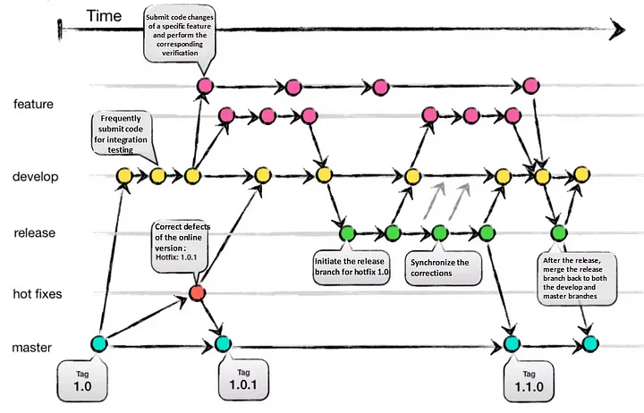
Git-Flow
GitHub-Flow
GitHub-Flow simplifies Git-Flow by eliminating release branches. It revolves around one active development branch (often main or master) that is directly deployed to production. Features and bug fixes are implemented using long-living feature branches. Feedback loops and asynchronous collaboration, common in open-source projects, are encouraged.
Pros
- Faster feedback cycles and shorter production cycles.
- Ideal for asynchronous work in smaller teams.
- Agile and easier to comprehend compared to Git-Flow.
Cons
- Merging a feature branch implies it is production-ready, potentially introducing bugs without proper testing and a robust CI/CD process.
- Long-living branches can complicate the process.
- Challenging to scale for larger teams due to increased merge conflicts.
- Supporting multiple release versions concurrently is difficult.

GitHub-flow
GitLab-Flow
GitLab-Flow strikes a balance between Git-Flow and GitHub-Flow. It adopts GitHub-Flow’s simplicity while introducing additional branches representing staging environments before production. The main branch still represents the production environment.
Pros
- Can handle multiple release versions or stages effectively.
- Simpler than Git-Flow.
- Focuses on quality with a lean approach.
Cons
- Complexity increases when maintaining multiple versions.
- More intricate compared to GitHub-Flow.
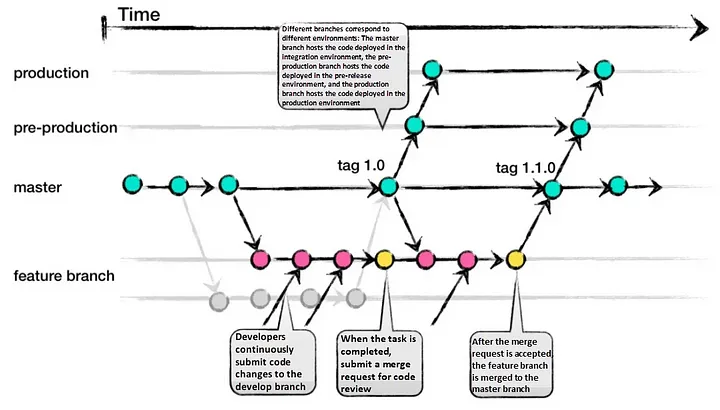
GitLab-Flow
Trunk Based Development
Trunk Based Development promotes a single shared branch called “trunk” and eliminates long-living branches. There are two variations based on team size: smaller teams commit directly to the trunk, while larger teams create short-lived feature branches. Frequent integration of smaller feature slices is encouraged to ensure regular merging.
Pros
- Encourages DevOps and unit testing best practices.
- Enhances collaboration and reduces merge conflicts.
- Allows for quick releases.
Cons
- Requires an experienced team that can slice features appropriately for regular integration.
- Relies on strong CI/CD practices to maintain stability.
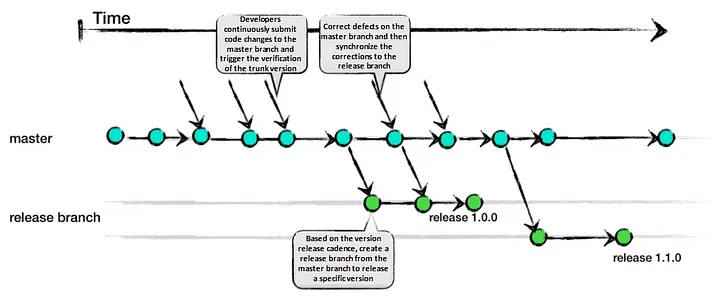
Trunk Based Development — TBD
Conclusion
Each branching strategy — Git-Flow, GitHub-Flow, GitLab-Flow, and Trunk Based Development — offers its own advantages and considerations. Choosing the right strategy depends on your specific project requirements. Git-Flow suits large teams and complex projects, while GitHub-Flow excels in open-source and small team environments. GitLab-Flow provides a compromise between Git-Flow and GitHub-Flow, while Trunk Based Development is ideal for experienced teams focused on collaboration and quick releases. Select the strategy that aligns with your team’s capabilities, project complexity, and desired workflow to maximize efficiency and success.
Habits of great software engineers
The role of a software developer often gets distilled down to a singular activity: coding. While coding is undeniably the heartbeat of the profession, defining a developer by this act alone is akin to defining a painter by their ability to mix colors. It's a crucial part but just the tip of the iceberg. The true essence of a software developer's role combines many different skills, mindsets, and disciplines.
Imagine a world where every software developer is just a coder. In such a world, code might get written, but would it solve any problems? Would the code be even useful or just an implementation of something fancy? The difference between a developer and a great developer is the breadth and depth of their approach in delivering value.
I want to talk more about what makes a great software developer. What are the habits of highly effective developers? And I’m not going to talk about coding (too much).
TL;DR; for those who want to know if there's value before they scroll down. I talk about:
- Focusing beyond the code - as a developer you will code 20% of your time. You should excel at coding nonetheless, but it won't be enough to be great.
- Efficiency / Antifragility — Making sure everything around you runs smoothly and has forward momentum
- Joy of tinkering - build projects, try out frameworks, build stuff on the side. Keeps the spark alive.
- Knowing the why — It's important to know why your code does what it does, too many abstractions nowadays that rarely someone thinks below the level of their language e.g JS devs not thinking about the engine that runs their code.
- Thinking in systems — knowing how your code impacts not only your individual system but other parts of the business/application/life.
- Tech detox — Recharging away from your monitor makes you a better programmer.
- The art of approximation — Knowing important tech numbers to approximate calculations when making decisions when programming.
- If this sounds interesting there's a few more things like that at the bottom. But you'll have to read it.
Disclaimer: Purely subjective thoughts, yours may vary.
Focusing beyond the code
Coding is to a developer what a brush is to a painter or a chisel to a sculptor. It's the primary tool, the foundational skill upon which everything else is built. Every application, every website, and every digital solution starts with a line of code. Someone wrote it. You probably write it daily as well.
However, while coding is fundamental, it's essential to recognize that it's not the actual purpose. It's about writing meaningful lines of code. It's about solving problems with the code. A line of code means nothing if there’s no context to it.
Being a great developer means being efficient in coding. It’s not something you can skip. It's the entry ticket to the world of software development. But what separates the good from the great is the ability to see beyond the immediate lines of code. How will it interact with other components? How will it scale? How maintainable is it? These are the questions that a decent software developer constantly grapples with.
We’re not going too deep on the coding; there are better teachers than me out there who share practical wisdom on how to master the machine. Here are some books purely on coding/programming that will boost your skills immensely:
- Cracking the Coding Interview, McDowell [Link to Amazon]
- Introduction to Algorithms, Cormen [Link to Amazon]
- Clean Code, Martin [Link to Amazon]
- Coders at Work, Seibel [Link to Amazon]
The Pursuit of Efficiency
All the best developers that I’ve met have been highly efficient. I don’t know how they manage to do it, but it seems they’re always one step ahead of you. It’s a feeling when you’re near them; the progress is felt in the air. Everything moves smoothly — challenges get resolved in a timely matter, and things are under control and moving toward the purpose that the engineer has set.
Great feeling.
Some may argue that efficiency = the opposite of stability. But this is not the kind of efficiency I'm talking about. I'm talking more in terms of Antifragility. No running around and doing everything as fast as possible. You don't have to make tradeoffs by reducing the buffers that you have, and be wary of making changes that reduce your resiliency to unexpected things.
So we’re talking about staying efficient. At its core, efficiency is about progress — momentum, ensuring that the wheels of development are always turning. To make it clear what I’m talking about, let’s take a look at the opposite. Every developer knows the feeling of being "stuck" – whether it's a particularly challenging bug — where you start doubting your competence or a piece of code that just won't cooperate. The progress seems to have come to a halt. The pursuit of efficiency, in this case, means not letting these obstacles impede you. It's about thinking on your feet, finding resources to solve the issue, finding alternative solutions, and keeping the end goal in sight.
🏄 Think of it as adopting a proactive mindset, where doing something
– even if it doesn’t solve your problem directly – is better than doing nothing.
This means breaking a complex problem into smaller, more manageable tasks. It means seeking input from a colleague when you're feeling stuck or temporarily setting aside a challenging task to focus on another aspect of the project. The key is to maintain forward momentum with small increments.
You might say, “Solving hard problems requires time. You shouldn’t hurry”. And you will be correct. Solving complex problems does require a lot of time. But even solving one big problem has forward momentum — For example getting a new exception after hours of debugging is cause for celebration as you move closer to figuring out the issue.
The Joy of Tinkering
I will be honest: great developers aren't just skilled or knowledgeable; they're passionate. They're eyes light up at the mention of a new programming language. They spend hours diving deep into a challenging problem not just because they have to but because they want to. They're driven by an insatiable curiosity, a hunger to know more, do more, and be more.
I have nothing against people who are not passionate about programming; it’s okay, but these people will also not be pursuing greatness doing 9-5.
This passion manifests itself in various ways, but one of the most evident is the joy of exploration. Great developers are explorers at heart. They're not content with just knowing the tools and technologies of today; they're always on the lookout for what's on the horizon. They tinker, they experiment, they play. Whether it's a new framework, a novel algorithm, or an emerging tech trend, they dive in headfirst, eager to learn, understand, and master.
https://youtu.be/nctqc8FBJ2U
So here's George Hotz having great time tinkering with LLaMa and building a chatbot, can you see the joy while he's coding? I find this so cool.
This kind of tinkering keeps the spark alive. In a field as vast and ever-evolving as software development, it's easy to feel overwhelmed or stuck in a rut. However, by embracing curiosity and actively seeking new challenges and learning opportunities, developers can keep their skills sharp and enthusiasm high.
Moreover, this exploration has a more profound, more intrinsic value: the sheer joy of the process. I think great developers also enjoy being passionate about programming. From my personal side, I can tell you I could not see my life without some kind of programming.
Knowing the Why
Nowadays, developers often find themselves engrossed in specific layers or components, be it perfecting a REST API request or finetuning CSS for that impeccable web design. We’ve gotten very high in abstractions in the last decade or so. Nobody writes assembly, and many developers have never even seen it. Developers usually just work with what they have and don’t ask questions about why it works the way it does. There's an underlying layer of understanding that often goes overlooked: knowing why things are the way they are.
Now, it's a valid argument that a developer doesn't need to be an expert in every layer of the stack. One doesn't need to trace the journey from circuit boards to bits and bytes for every line of code written. But having a foundational understanding and a sense of the bigger picture can be incredibly empowering.
Frontend Developers — why and how the CSS is rendered? So many cool things in the Blink rendering engine will change how you think about the page.
Backend Developers — why and how the Python interpreter works? There are so many fascinating things in the CPython interpreter/compiler that you’ll be surprised how your code runs.
Knowing the WHY/HOW behind the code offers several advantages:
- Problem Solving: When challenges arise, understanding the underlying logic can guide you towards an answer much faster. Even the errors will be clearer when you know how they are thrown.
- Informed Decisions: Your knowledge of the underlying systems will subconsciously influence every decision you make. Whether it's choosing a protocol, seeing a function and understanding immediately it can run in O(n), or ensuring security, a deeper understanding equips a developer to make highly effective decisions.
- Bridging Gaps: In multidisciplinary teams, grasping the broader landscape can foster better communication and collaboration, bridging the gap between specialists of different domains.
- Innovation: Often, groundbreaking solutions emerge at the intersection of disciplines. Knowing the 'why' of various layers can spark innovative ideas and approaches.
I’m not saying you should know everything. It’s more about not just blindly accepting things at face value but delving deeper and expanding one's horizons. I guarantee you this knowledge will be useful to you.
Thinking in Systems
This is similar to the first part of not just focusing on the code but thinking about systems and their interactions. In my eyes, a great developer doesn’t just see the individual pieces; they see the entire puzzle, understanding not only how each piece fits into the current puzzle but also what the puzzle is and if there are more puzzles that need to be interacted with.
Systems thinking is about recognizing that software is made up of numerous components that interact with each other in complex ways. It's not enough to ensure that each component works well separately; it's crucial to understand how it works as part of the whole and what implications it has on the company. Simply — focus not only on unit tests but also E2E tests. It's about asking questions like: Why is this component necessary for the business? If this component fails, how will it impact other systems? How can we design our software to be resilient?
Furthermore, systems thinking extends beyond the software itself. Great developers understand that software doesn't exist in a vacuum. It interacts with users, with other systems, with external databases, and even with other non-IT departments.
It's about seeing the forest and the trees, understanding both the macro and the micro level of the things that you develop. Imagine you’re a YouTube Engineer, given a task to improve the algorithm to increase the average time a user spends on YouTube. A straightforward task, you might think, but when you take a step back and look at the issue from a macro level, you’ll see that there are many complex systems at play — from Scalability to UX to moral considerations to legal department.
Or a better, recent example — imagine you’re an FTX Engineer, and you’re asked to allow accounts to go into the negative. Again, it is a straightforward feature from the perspective of your individual system — a single line of code. But again, let’s step back and think of the risk management system, compliance system, and every other system affected by this change.
Recharging Beyond the Pixels
In the digital age, screens have become ubiquitous. From the workstation where you transform code into applications to the smartphones that keep us connected 24/7, technology is an ever-present force in our lives. And for developers, this immersion is even more profound.
Great developers aren't just masters of their craft but well-rounded individuals who understand the value of experiences beyond the digital realm. They recognize that while technology can expand horizons, it can also, paradoxically, become a limiting bubble.
🏄Constant immersion in the digital world can lead to a narrowed perspective.
There’s so much more outside of the tech bubble.
I won’t talk too much about the dangers of constant screen time. Physically, it can lead to ailments like eye strain, disrupted sleep patterns, and sedentary lifestyle-related issues. Mentally, it can result in burnout, increased stress, and a feeling of being perpetually "wired." Moreover, a predominantly online life can lead to a sense of isolation and a disconnection from the tangible, real world around us.
But stepping away from the screens, even momentarily, can work wonders. A tech detox can be incredibly rejuvenating, be it a short walk in the park, a weekend getaway, or even a few hours spent on a non-digital hobby.
Moreover, these breaks from technology serve as a reminder of the bigger picture. They ground us, reminding us of the real-world implications of their work, of the people and communities we serve, and of the myriad experiences and challenges that shape human lives.
The Art of Approximation
How fast can you read 10GB from RAM? From SSD? There’s a subtle yet crucial skill that many developers overlook: the art of approximation. It's not about knowing everything but about having a mental toolkit of numbers to guide decisions, shape solutions, and prevent costly missteps.
Amidst the lines of logic and structures, there are numbers that matter. If you're building a high-throughput application, what's the storage cost for logging at 100,000 RPS? While the exact numbers might vary based on various factors, having a rough estimate can be invaluable. It can guide architectural decisions, inform optimizations, and provide a reality check on feasibility.
I’ve seen this cool concept called “The Napkin Math” — for situations where you need to quickly approximate how much it will cost or how fast it will be. In today's cloud-centric world, where scalability and performance are paramount, costs can soon spiral out of control if not kept in check. Being able to approximate calculations on the fly can provide a solid roadmap. It can help you anticipate costs, allocate resources efficiently, and design performant and cost-effective systems.
https://youtu.be/IxkSlnrRFqc
I won’t talk too in-depth about this - but watch the talk. It’s great.
Transfering Knowledge to Other Problems
One of the most profound moments in a student's life is the realization that learning isn't just about absorbing information but understanding its essence and applying it to similar problems. This truth, often first encountered in math classes, extends far beyond the classroom and is especially pertinent in software development.
Think back to those math problems. You'd spend hours understanding a concept, practicing it with a specific set of problems, only to be presented with a different challenge during exams. The numbers changed, the context shifted, but the underlying principle remained unchanged. The real test wasn't just your knowledge of the concept but your ability to adapt and apply it to a new scenario.
I find this adaptability and transfer mindset quite important. Challenges are constant, but they rarely come in familiar packages. A coding solution that worked for one project might not fit another, even if they seem similar. The true mark of a developer's skill is their ability to take their knowledge and mold it to fit the task at hand.
If it looks like a duck, swims like a duck, and quacks like a duck, then it probably is a duck.
🏄 Experience plays a pivotal role in this. With each challenge faced, a developer adds to their repertoire, expanding their understanding and refining their approach. I tell my developers, “Every bug you solve today is a skill tomorrow.”
Static knowledge, rigid and unyielding, can become a limitation. The real magic lies in understanding and grasping the core principles so that they can be reshaped and repurposed as needed.
Making Hard Things Easy
Julia Evans has a great talk on making hard things easy. That’s where I stole the title of this section as well.
There's a truth often attributed to the genius of Albert Einstein: "If you can't explain it simply, you don't understand it well enough." In software engineering especially, the pinnacle of understanding isn't just about mastering the hard things but about making those hard things easy for others.
I’ve met quite a few developers who explained complex things to me in such simple terms that I was surprised that a) I understood it and b) that the concepts were not as complicated as I feared.
For example, I didn’t know much about network programming or Linux sockets. I spent days googling, but the information I found wasn’t really clicking with me. It might say a lot about Google search quality, but then I found the beej’s guide , and it clicked into place for me.
I think it’s a mark of great engineers if they can explain something and be understood not just by their fellow programmers who work in the same field but also by average people.
Furthermore, making hard things easy is about leveling the playing field. It's about recognizing that knowledge shouldn't be a guarded treasure but a shared resource. By simplifying concepts by making them accessible, you empower others. You give them the tools to rise, to reach your level of understanding, and perhaps even surpass it.
Microservices Checklist — Cover All Aspects of Microservices Architecture
We are going to learn our Microservices Checklist and cover All Aspects with exploring vertical topics of Microservices Architecture.

Vertical Considerations
Before design any architecture, we should evaluate and verify some vertical topics and question to our architecture in order to make sure that we have calculated every tradeoffs and risks at acceptable level for your project.
Software Architecture Design
Software architecture is always a balancing act between trade-offs and compromises. There is no single design or architecture that is perfect for every situation. Instead, software architects must carefully consider the trade-offs and make decisions based on the specific requirements, constraints, and goals of the software system.
For example, a monolithic architecture may be simpler and easier to manage, but it may not scale well as the system grows. On the other hand, a microservices-based architecture may provide greater scalability and flexibility, but it may be more complex and difficult to manage. In the previous article, you can read the Evolution of Architectures; Monolithic, Microservices and Serverless.
The key point is that there is no single “best” solution for software architecture, and software architects must constantly make trade-offs and compromises based on the specific requirements, constraints, and goals of the system. The goal is to find the right balance that meets the needs of the system and the stakeholders.
So to verify any architecture, we should think every aspects of design and make sure that cover all different angle of the design. During this article, we will discuss which vertical considerations could be think when we design microservices architecture.
Microservices Building Blocks
We can start to discuss Vertical Considerations of microservices architectures. These are:
- Microservices Decomposition — Breaking Down Microservices
- Microservices Communications (Sync / Async Message-Based Communication, API Gws)
- Microservices Data Management (Databases / Query / Commands)
- Microservices Transaction Management
- Microservices Distributed Caching
- Microservices Deployments with Containers and Orchestrators
- Microservices Resilience with Distributed Logging, Tracing and Health
- Microservices Testing; Contract Testing, Integration Testing, E2E Test
- Microservices Security; Authentication and Authorization
with applying microservices design patterns and practices.
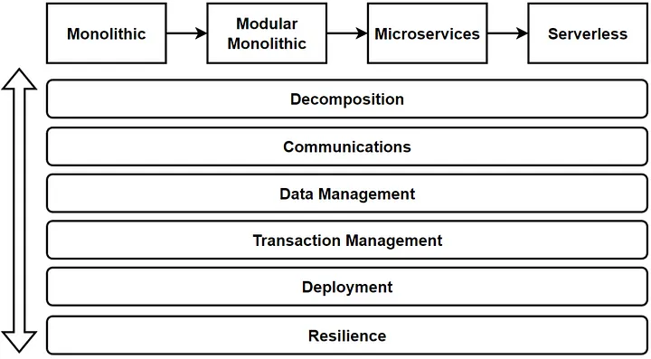
Vertical Considerations
According to this image, we can evaluate and verify any architecture with checking all these vertical considerations.
Microservices Building Blocks — Sub Components
Now we can go one more level to identify and check sub components of building blocks. Here you can reach the sub components of these Microservices Building Blocks:
Microservices Decomposition — Breaking Down Microservices:
- DDD — Bounded Context
- Business Capabilities
Microservices Communications:
- Synchronous Communication
- Asynchronous Communication
- Poll-Based Communications
So in this building block, we should also go one more deep level and identify consideration topics as bellowed:
Microservices Synchronous Communication
- Sync Communication Types: REST / gRPC / GraphQL / WebSocket
- API Gateway Requirements: Discovery, Registry, Route, Aggregation, Composition, Authentication
- Service-to-service Integration Considerations : Backend Microservices / 3rd party calls / B2B Gateways / IoT Devices
- Headless Architecture Decisions: Micro-frontend designs, Edge Functions
Microservices Asynchronous Communication
- Async Com Types: 1–1 / 1-many (point-to-point / publish-subscribe)
- Async Com Way: Fire&Forget / Callback
- Async Tools: Message Broker / Event Bus / Queue / DLQ
- Async Patterns: Pub-Sub / Fanout / Topic Queue Chain / Event Filters / Rule Engine
- EDA Design Considerations: Event Backbone / Event Queue Topic Design / Real-time Event Streams / Event Filters, Routers, Deserializers / Event Stores
Lets continue with other sub components of Microservices Building Blocks.
Microservices Data Management (Databases / Query / Commands)
- Database Chooses
- Queries
- Commands — Consistency
- Distributed Transactions
- Caching
So in this building block, we should also go one more deep level and identify consideration topics as bellowed:
Database Chooses
- DB Types : Relational / NoSQL — Document, Key/Value, Wide Column, Graph, Time Series, DWH
- DB Scale Options : Master-Slave/ Masterless, Replication, Sharding, Read/Write
- DB Capabilities: CDC / Streaming / Sharding / K8s Management DBs / DWH Reporting / Big Data Analysis / AI/ML model processing
Queries
- API Gateway / Composition / Aggregation / BFF
- CQRS / Materialized View / Event Sourcing / Read Database
- Analytics/AI-ML/Reporting/Real-time stream analysis and processing / Big Data Analysis
Commands — Consistency
- Consistency: Strict / Eventual Consistency
- CQRS / Write Database / ACID / Event Sourcing / Repayable Snapshot / Single source of truth
Microservices Distributed Transactions
- Transaction Management: 2PC / SAGA (Orchestrator / Choreography )
- Outbox / Dual Write / Change Data Capture / Message Broker Event Bus / read-after-write consistency
- MS Design : Idempotency / Stateless / Immutable events
Microservices Distributed Caching
- Cache Type: Static Content (CDN) / In-memory / Distributed
- Cache Settings: Cache Expire / TTL / Hit — Miss — Invalidation
Lets continue with other sub components of Microservices Building Blocks.
Microservices Deployments with Containers and Orchestrators
- IaC
- Devops CI/CD
- Network Management
So in this building block, we should also go one more deep level and identify consideration topics as bellowed:
IaC
- Multi-Cloud Deployments — EKS, AKS, GKS
- PaaS, Managed K8s (Openshift), Databases (k8cassandra, ksql), EventBus (Confluence Kafka), Api Gw
- Serverless options, FAAS, Serverless and Edge Functions, CDN
Devops CI/CD
- Deployments: Containers, Orchestrators, Serverless options, Frameworks: Openshift
- Pipeline Steps, Automation, Devops tools
- Package Management: Helm Charts, Artifactory Hubs, Re-usable container registry
- Deployment Strategy: Blue/Green, Canary, Recreate
- Configurations : Config Server, Encryption, Key Vault Management
Network Management
- Load Balancing, Ingress, CDN, DNS Management, Cluster Management, Disaster recovery
Lets continue with other sub components of Microservices Building Blocks.
Microservices Resilience
- Observability / Logging
- Monitoring
- Tracing
- Resilient / Fault Tolerance
So in this building block, we should also go one more deep level and identify consideration topics as bellowed:
Observability / Logging
- Centralized Logging, Distributed Logging, Dashboards, ELK Stack
- Log Id per Request, Service App Logs, Integration Logs
Monitoring
- System Monitoring: CPU, Ram
- Application Monitoring: Queue Count, unprocessed messages
- Health Checks : Microservices, Databases, Brokers Event Buses, 3rd party systems
Tracing
- Distributed Transactions, Transaction Id, Correlation Id, E2E Request Id, Event Id
- OpenTelemetry Compliance: Jeager, Zipkin
Resilient / Fault Tolerance
- API Call Management : Retry, Circuit Breaker, Bulkhead, Rate limiting, Fault Tolerant
- Kubernetes Patterns & Best Practices : Sidecar, Service Mesh, Service Proxy
- Async Fault Alarms: DLQ, Notifications, Alarms
Lets continue with other sub components of Microservices Building Blocks.
Microservices Testing; Contract Testing, Integration Testing, E2E Test
- Pre-Deployment Test : Unit / Integration / Contract Test
- Post-Deployment Test : E2E SIT Test / Consumer-Driven Test / Chaos Test
Microservices Security; Authentication and Authorization
- Authentication
- Identity Servers: Managed (IS4, Keycloak) and Serverless options (Cognito)
- Protocols: OAuth2.0 , OpenIDConnect flows
- Token Types and Claims
- Authorization
- API Gw Authentication flows, Claim based authorizations, RBAC
- Configurations
- Encryption, Key Vault Management
- SSL and TLS, Firewalls
- Audit Logs
Conclusion
These are created from our team when we design and iterate microservices into our cloud-native enterprise applications and projects. So if you have additional consideration feel free to extend this list with adding new considerations regarding to microservices.
The Pragmatic Programmer Quick Reference Guide
This page summarizes the tips and checklists found in The Pragmatic Programmer.
Care About Your Craft
Why spend your life developing software unless you care about doing it well?
Think! About Your Work
Turn off the autopilot and take control. Constantly critique and appraise your work.
Provide Options, Don't Make Lame Excuses
Instead of excuses, provide options. Don't say it can't be done; explain what can be done.
Don't Live with Broken Windows
Fix bad designs, wrong decisions, and poor code when you see them.
Be a Catalyst for Change
You can't force change on people. Instead, show them how the future might be and help them participate in creating it.
Remember the Big Picture
Don't get so engrossed in the details that you forget to check what's happening around you.
Make Quality a Requirements Issue
Involve your users in determining the project's real quality requirements.
Invest Regularly in Your Knowledge Portfolio Make learning a habit.
Critically Analyze What You Read and Hear
Don't be swayed by vendors, media hype, or dogma. Analyze information in terms of you and your project.
It's Both What You Say and the Way You Say It
There's no point in having great ideas if you don't communicate them effectively.
DRY--Don't Repeat Yourself
Every piece of knowledge must have a single, unambiguous, authoritative representation within a system.
Make It Easy to Reuse
If it's easy to reuse, people will. Create an environment that supports reuse.
Eliminate Effects Between Unrelated Things
Design components that are self-contained. independent, and have a single, well-defined purpose.
There Are No Final Decisions
No decision is cast in stone. Instead, consider each as being written in the sand at the beach, and plan for change.
Use Tracer Bullets to Find the Target
Tracer bullets let you home in on your target by trying things and seeing how close they land.
Prototype to Learn
Prototyping is a learning experience. Its value lies not in the code you produce, but in the lessons you learn.
Program Close to the Problem Domain Design and code in your user's language.
Estimate to Avoid Surprises
Estimate before you start. You'll spot potential problems up front.
Iterate the Schedule with the Code
Use experience you gain as you implement to refine the project time scales.
Keep Knowledge in Plain Text
Plain text won't become obsolete. It helps leverage your work and simplifies debugging and testing.
Use the Power of Command Shells
Use the shell when graphical user interfaces don't cut it.
Use a Single Editor Well
The editor should be an extension of your hand; make sure your editor is configurable, extensible, and programmable.
Always Use Source Code Control
Source code control is a time machine for your work---you can go back.
Fix the Problem, Not the Blame
It doesn't really matter whether the bug is your fault or someone else's---it is still your problem, and it still needs to be fixed.
Don't Panic When Debugging
Take a deep breath and THINK! about what could be causing the bug.
"select" Isn't Broken.
It is rare to find a bug in the OS or the compiler, or even a third-party product or library. The bug is most likely in the application.
Don't Assume It---Prove It
Prove your assumptions in the actual environment-- with real data and boundary conditions.
Learn a Text Manipulation Language.
You spend a large part of each day working with text. Why not have the computer do some of it for you?
Write Code That Writes Code
Code generators increase your productivity and help avoid duplication.
You Can't Write Perfect Software
Software can't be perfect. Protect your code and users from the inevitable errors.
Design with Contracts
Use contracts to document and verify that code does no more and no less than it claims to do.
Crash Early
A dead program normally does a lot less damage than a crippled one.
Use Assertions to Prevent the Impossible
Assertions validate your assumptions. Use them to protect your code from an uncertain world.
Use Exceptions for Exceptional Problems
Exceptions can suffer from all the readability and maintainability problems of classic spaghetti code. Reserve exceptions for exceptional things.
Finish What You Start
Where possible, the routine or object that allocates a resource should be responsible for deallocating it.
Minimize Coupling Between Modules
Avoid coupling by writing "shy" code and applying the Law of Demeter.
Configure, Don't Integrate
Implement technology choices for an application as configuration options, not through integration or engineering.
Put Abstractions in Code, Details in Metadata
Program for the general case, and put the specifics outside the compiled code base.
Analyze Workflow to Improve Concurrency Exploit concurrency in your user's workflow.
Design Using Services
Design in terms of services---independent, concurrent objects behind well-defined, consistent interfaces.
Always Design for Concurrency
Allow for concurrency, and you'll design cleaner interfaces with fewer assumptions.
Separate Views from Models
Gain flexibility at low cost by designing your application in terms of models and views.
Use Blackboards to Coordinate Workflow
Use blackboards to coordinate disparate facts and agents, while maintaining independence and isolation among participants.
Don't Program by Coincidence
Rely only on reliable things. Beware of accidental complexity, and don't confuse a happy coincidence with a purposeful plan.
Estimate the Order of Your Algorithms
Get a feel for how long things are likely to take before you write code.
Test Your Estimates
Mathematical analysis of algorithms doesn't tell you everything. Try timing your code in its target environment.
Refactor Early, Refactor Often
Just as you might weed and rearrange a garden, rewrite, rework, and re-architect code when it needs it. Fix the root of the problem.
Design to Test
Start thinking about testing before you write a line of code.
Test Your Software, or Your Users Will
Test ruthlessly. Don't make your users find bugs for you.
Don't Use Wizard Code You Don't Understand
Wizards can generate reams of code. Make sure you understand all of it before you incorporate it into your project.
Don't Gather Requirements--Dig for Them
Requirements rarely lie on the surface. They're buried deep beneath layers of assumptions, misconceptions, and politics.
Workwith a User to Think Like a User
It's the best way to gain insight into how the system will really be used.
Abstractions Live Longer than Details
Invest in the abstraction, not the implementation. Abstractions can survive the barrage of changes from different implementations and new technologies.
Use a Project Glossary
Create and maintain a single source of all the specific terms and vocabulary for a project.
Don't Think Outside the Box--Find the Box
When faced with an impossible problem, identify the real constraints. Ask yourself: "Does it have to be done this way? Does it have to be done at all?"
Start When You're Ready.
You've been building experience all your life. Don't ignore niggling doubts.
Some Things Are Better Done than Described
Don't fall into the specification spiral---at some point you need to start coding.
Don't Be a Slave to Formal Methods.
Don't blindly adopt any technique without putting it into the context of your development practices and capabilities.
Costly Tools Don't Produce Better Designs
Beware of vendor hype, industry dogma, and the aura of the price tag. Judge tools on their merits.
Organize Teams Around Functionality
Don't separate designers from coders, testers from data modelers. Build teams the way you build code.
Don't Use Manual Procedures
A shell script or batch file will execute the same instructions, in the same order, time after time.
Test Early. Test Often. Test Automatically
Tests that run with every build are much more effective than test plans that sit on a shelf.
Coding Ain't Done 'Til All the Tests Run 'Nuff said.
Use Saboteurs to Test Your Testing
Introduce bugs on purpose in a separate copy of the source to verify that testing will catch them.
Test State Coverage, Not Code Coverage
Identify and test significant program states. Just testing lines of code isn't enough.
Find Bugs Once
Once a human tester finds a bug, it should be the last time a human tester finds that bug. Automatic tests should check for it from then on.
English is Just a Programming Language
Write documents as you would write code: honor the DRY principle, use metadata, MVC, automatic generation, and so on.
Build Documentation In, Don't Bolt It On
Documentation created separately from code is less likely to be correct and up to date.
Gently Exceed Your Users' Expectations
Come to understand your users' expectations, then deliver just that little bit more.
Sign Your Work
Craftsmen of an earlier age were proud to sign their work. You should be, too.
Languages To Learn
Tired of C, C++, and Java? Try CLOS, Dylan, Eiffel, Objective C, Prolog, Smalltalk, or TOM. Each of these languages has different capabilities and a different "flavor." Try a small project at home using one or more of them.
The WISDOM Acrostic
What do you want them to learn?
What is their interest in what you've got to say?
How sophisticated are they?
How much detail do they want?
Whom do you want to own the information?
How can you motivate them to listen to you?
How to Maintain Orthogonality
Design independent, well-defined components.
Keep your code decoupled.
Avoid global data.
Refactor similar functions.
Things to prototype
Architecture
New functionality in an existing system
Structure or contents of external data
Third-party tools or components Performance issues
User interface design
Architectural Questions
Are responsibilities well defined?
Are the collaborations well defined?
Is coupling minimized?
Can you identify potential duplication?
Are interface definitions and constraints acceptable? Can modules access needed data---when needed?
Debugging Checklist
Is the problem being reported a direct result of the underlying bug, or merely a symptom?
Is the bug really in the compiler? Is it in the OS? Or is it in your code?
If you explained this problem in detail to a coworker, what would you say?
If the suspect code passes its unit tests, are the tests complete enough? What happens if you run the unit test with this data? Do the conditions that caused this bug exist anywhere else in the system?
Law of Demeter for Functions
An object's method should call only methods belonging to:
Itself
Any parameters passed in
Objects it creates
Component objects
How to Program Deliberately
Stay aware of what you're doing.
Don't code blindfolded.
Proceed from a plan.
Rely only on reliable things.
Document your assumptions.
Test assumptions as well as code.
Prioritize your effort.
Don't be a slave to history.
When to Refactor
You discover a violation of the DRY principle.
You find things that could be more orthogonal.
Your knowledge improves.
The requirements evolve.
You need to improve performance.
Cutting the Gordian Knot
When solving impossible problems, ask yourself:
Is there an easier way?
Am I solving the right problem?
Why is this a problem?
What makes it hard?
Do I have to do it this way?
Does it have to be done at all?
Aspects of Testing
Unit testing
Integration testing
Validation and verification
Resource exhaustion, errors, and recovery
Performance testing
Usability testing
Testing the tests themselves
reference
Throughput & Latency
𝗧𝗵𝗿𝗼𝘂𝗴𝗵𝗽𝘂𝘁 is the amount of data a system processes within a given period
It's measured in transactions per second (TPS), requests per second (RPS), or data units per second.
High throughput means the system can handle more requests in less time.
𝗧𝗵𝗶𝗻𝗴𝘀 𝘁𝗵𝗮𝘁 𝘄𝗶𝗹𝗹 𝗵𝗲𝗹𝗽 𝘆𝗼𝘂 𝘁𝗼 𝗶𝗻𝗰𝗿𝗲𝗮𝘀𝗲 𝗧𝗵𝗿𝗼𝘂𝗴𝗵𝗽𝘂𝘁:
- Horizontal Scaling (Adding More Machines)
- Load Balancing
- Asynchronous Processing or message queues
𝗟𝗮𝘁𝗲𝗻𝗰𝘆 is the time taken to process a single operation or request
It's usually measured in milliseconds or microseconds.
Low latency is essential in systems with critical response time, like high-frequency trading systems.
𝗧𝗵𝗶𝗻𝗴𝘀 𝘁𝗵𝗮𝘁 𝘄𝗶𝗹𝗹 𝗵𝗲𝗹𝗽 𝘆𝗼𝘂 𝗿𝗲𝗱𝘂𝗰𝗲 𝗟𝗮𝘁𝗲𝗻𝗰𝘆:
- Optimizing Code
- Using Faster Storage
- Database Performance Tuning
- Caching
𝗕𝗮𝗹𝗮𝗻𝗰𝗶𝗻𝗴 𝘁𝗵𝗲𝘀𝗲 𝘁𝘄𝗼 𝗼𝗳𝘁𝗲𝗻 𝗶𝗻𝘃𝗼𝗹𝘃𝗲𝘀 𝘁𝗿𝗮𝗱𝗲-𝗼𝗳𝗳𝘀
Asynchronous processing can increase throughput but might add to latency for individual tasks.
Extensive caching can reduce latency but requires more memory resources if not managed.
There's often a trade-off between maximizing throughput and minimizing latency.
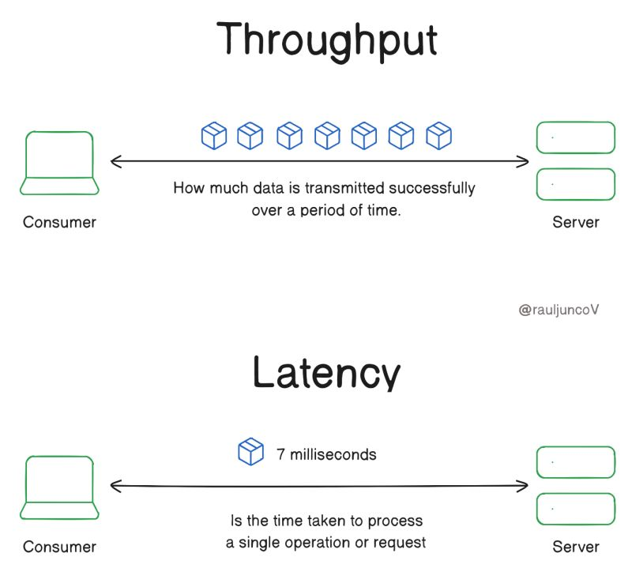
The Wild World of Unique Identifiers (UUID, ULID, etc)
Every once in a while as a developer you find yourself stepping, and falling, into a much deeper rabbit hole than you would expect. I recently had one of these experiences as I have dug into the world of unique identifiers. It is this rabbit hole that I would like to take you down for a bit as well. Unique identifiers are everywhere in our code and our data storage and through better understanding what they are and the trade-offs between them we can make more educated decisions in our day-to-day work.
Where we began:
Historically a lot of software has used incrementing numbers to represent the identifier of a particular piece of data. They can be auto-generated by many data stores, they are easy to reason about, are efficient to store and sort, are naturally time ordered, and can be easy to say (ex: “Hey Marsha, can you take a look at record 3162?”). It is for many of these reasons that the industry used these identifiers for so long.
That being said, there are also downsides to using incrementing numbers as identifiers especially as we start working in “web-scale” applications. Due to the sequential nature of data you often aren’t able to generate these identifiers concurrently. You could use techniques like skipping so many values for each generation and having different starting points for each generator or starting at different numbers but these all have various shortcomings as well versus a system that could generate identifiers without any coordination. If you separate the work of ID generation to another system that system could become a single point of failure and/or slow down the performance of your application as you need to make round trips between the requesting application and the ID generation system.
Incrementing IDs also can lead to data leakage in that you now have easily guessable identifiers in URLs or other locations that people can exploit to test out your defenses. They can also divulge the size of your dataset. For example, if I sign up for an account with a website and the profile page’s URL ends with user/515I can make the educated guess that there are 515 accounts on the service. The less information you can give an adversary the better. I have actually stumbled upon production systems that were easily exploitable via lacking authorization and using incrementable identifiers. This particular system included personal information about employees of another company and thankfully after disclosing this vulnerability to the company they were able to patch the issue. That is not to say if you were using a non-guessable identifier you don’t need authorization checks but it does add another layer to get through.
UUIDs to the rescue?
For all the above reasons many different applications needed to find another way to generate unique identifiers while allowing data hiding and scalability. Enter RFC 4122 UUIDs. UUID are identifiers backed by a 128-bit value typically expressed as a 32 hexadecimal characters generated via random or time-based means. They look something like: 93f9a654-7467-46de-9964-f30a66104dd9.These identifiers have numerous benefits:
- Many different processes can generate identifiers concurrently without coordination with an extremely low chance of collisions.
- They are less guessable than sequential IDs.
- They don’t give you a sense of the size of the dataset.
- They are still reasonably small when compared to a 32 random character identifier. They are also much easier for a database engine to compare than 32 characters of text.
Given the definition of a UUID as a 128-bit number generated via time and randomness-based methods you may think there could be many ways of going about this and you would be correct. There are several official versions of UUID:
- Type 1 — ID is based on the generating host’s MAC address and a timestamp. Reasonable choice for concurrent generation but falls flat on the low guessability spectrum.
- Type 2 — The often ignored version as there isn’t a formal definition of it in the RFC and thus is ignored by many UUID tools but there is a definition provided by the DCE 1.1 Authentication and Security Services specification. It uses a host’s MAC address, timestamp, a “local domain” number, and “integer identifier meaningful within the specified local domain”
- Type 3 — Generated via an MD5 hash of a provided input data. This allows the generation of the same UUID based on the same input.
- Type 4 — Entirely random data is used to generate the bits of the changing part of the UUID
- Type 5 — Like type 3 it is based on an input value but in this case it is SHA-1 hashed which is a better hashing algorithm for this use case than MD5 so it should be preferred over Type 3.
Basically any modern language has built-in functionality to generate one or multiple of these types of UUIDs or there are readily available libraries to facilitate their generation. We also have first-class support for UUID in many database platforms.
There are downsides to UUIDs though. Although they are reasonably small they still take up much more space than many other identifiers. Their random nature also makes them particularly troublesome for relational databases to handle as, especially if they are used in a clustered index, they can force the reordering in its internal data structures to put in new entries. In general this lack of built-in sortability based on time becomes the root of a lot of issues. In a lot of circumstances you may not already have another piece of data to sort based on and you are forced to add one because your identifier can’t also facilitate the process even though it feels like it could.
A World Beyond UUIDs
For the reasons above and many others, UUIDs aren’t a one-size-meets-all solution. Thus, unsurprisingly, many other implementations of identifier generation have been created and there is an IETF RFC that details that a UUID version more appropriate to be used as a database key with an ordering component should be decided upon (update: they have a draft specification). As part of this RFC, it refers to a number of existing implementations as prior art. Let’s consider a few of them:
ULID (reference)
Unique Lexicographically IDentifiers (ULID) are one such attempt at solving some of the above UUID issues. They are made up of two components, a Unix millisecond-level timestamp and a random portion put together like below.
01AN4Z07BY 79KA1307SR9X4MV3
|----------| |----------------|
Timestamp Randomness
48bits 80bits
Benefits:
- Lexicographical (Alphabetical) sorting.
- Commonly encoded in 26 characters vs the 36 characters of UUID
- Monotonic sort order. (The code handles the case of multiple generations per millisecond and making sure they sort in that particular order)
- Being 128 bits they are compatible with UUIDs 128 bits.
Downsides:
- They are required to be compared case insensitively. This could be a potential gotcha for implementing developers.
- They still weigh in at 128 bits making them no smaller than UUIDs.
Snowflake (Twitter’s now defunct solution)
Although it’s no longer supported I think it’s intriguing to look at Twitter’s Snowflake service that they historically used for the generation of tweet IDs. Twitter seemed to be a trend setter with this solution as you will see below a lot of other solutions built on top of the ideas of Snowflake. Snowflake worked as a Thrift service that used Zookeeper to facilitate a cluster of services that could be used for quickly retrieving new identifiers.
Benefits:
- The identifiers were 64 bits, half the size of UUIDs, allowing for more efficient storage.
- Fairly strong ordering guarantees.
- Distributed in a way that allows survival of losing a node.
Downsides:
- It introduces the complexity of monitoring and maintaining a Zookeeper cluster which if a particular company didn’t already have could be a large burden.
- You also need to maintain a cluster of identifier generation services (the actual Snowflake servers)
- The complexity and requirements of a distributed system are now part of your identitifer generation solution with cross cluster communication and other complexities.
Although no longer supported, you can see the original code here.
Flickr’s Ticket Server (blog post)
This is much more of a pattern than a particular tool or library. The basic idea of the ticket server is to have a service that is backed by a database that has an auto incrementing column maintained by the database engine that gets meted out to requesters. Now you can focus exclusively on optimizing this very specific use case and put off much of the heavy lifting to the database engine. In Flickr’s case, they load-balanced between two different service instances, one that did odd numbers and one that did even numbers to allow some resilience and load balancing.
Benefits:
- You can set how big you want your identifier to be. (In Flickr’s blog post they set it to 20 bits)
- There are minimal moving parts.
- It allows for some resilience if you break up the keyspace.
Downsides:
- If you want to add more backing services it could be difficult as you need to change them all together so they don’t clash.
- Strong ordering is only guarenteed only within a single keyspace so if you split it in half like Flickr did you can end up with half your key space quite divered from the other half of your keyspace.
- This is still the maintenance overhead of maintaining the ticket servers and DBs. Although less than something like Snowflake it is more than a lot of the other solutions that will be discussed.
LexicalUUID (Part of Cassie from Twitter)
Twitter has put a lot of thought and work into unique ID generation as we see another reference to Twitter’s tooling here in this list. This time as part of its client library for Cassandra. Unlike Snowflake, these are 128 bits like traditional UUIDs. The most significant 64 bits are a timestamp retrieved from Cassie’s built-in internal clock implementation and the least significant 64 bits are based on the worker ID.
Benefits:
- It does not seem to require any additional infrastructure like Snowflake.
- 128 bits makes it compatible with other UUID implementations.
- Gives you a strong time ordering guarantee within the same worker and weak ordering guarantees across works.
Downsides:
- Just as many bits as UUID
- Not strict ordering guarantees.
- Seems tightly coupled with the Cassie library.
Flake (reference)
Another defunct tool/company but always something new to learn from these tools. As the name suggests this particular implementation takes its origins from Twitter’s Snowflake discussed above. It however makes some changes. It moves back up to 128 bits and with that trade-off it can avoid any coordination between nodes. The results are still roughly time ordered. It is formatted as follows: 64 bit Unix timestamp, 48-bit worker ID (based on MAC address), and 16-bit sequence. It was also implemented in Erlang so that’s another fun piece of information.
Benefits:
- No coordination is needed between generation nodes.
- 128 bit compatible with UUID
- Roughly time ordered.
Downsides:
- Predictable by design (very much built like a UUIDv1 but done so that it can be roughly time sorted)
- Still 128 bits.
- Not exactly time ordered.
Instagram’s ShardingID (blog post)
To make sense of Instagram’s system you have to understand somewhat how they shard their databases. They have created thousands of “logical” shards of their data that each represents part of their data. These logical shards end up being schema’s in their databases so they could have from 1 — # of shards physical database engines behind their data to split between. It’s a fairly simple concept but a powerful one I would say. Instagram wanted to optimize for simplicity so they wanted to stay away from bringing in new tools and services to support. What they ended up with was a 64-bit identifier. The first 41 bits represent a timestamp in milliseconds (which gives them 41 years of IDs because they use a custom epoch), 13 bits as the logical shard id, and the final 10 bits serve as a sequence number for the value within the millisecond. They then wrote a custom PL/PGSQL function that generates these values within their database.
Benefits:
- No coordination is needed between servers.
- Uses existing infrastructure
- 64-bit identifier.
- Extremely simple to use.
Downsides:
- Strongly relies on their logical sharding system.
- 41 years doesn’t seem like a whole lot of time to be acceptable.
KSUID (reference)
Another generally sortable unique identifier generation tool. It uses 160 bits. A 32-bit timestamp and then 128 bits of random-based payload. It uses a modified epoch for its timestamp, giving it over 100 years of life. The text representation is 27 characters with the bits being encoded with base62 which makes it also generically time sortable via its string representation as well.
Benefits:
- Coordination free
- Long life
Downsides:
- At 160 bits it’s larger than UUID’s 128
ElasticFlake (reference)
This library is an extraction of the identifier generation code from ElasticSearch. It ends up being 120 bits with 48 bits of timestamp, a 48 bit MAC address, and 24 bits for a sequence at the end.
Benefits:
- Slightly smaller than UUID
- Battle-hardened inside of ElasticSearch.
Downsides:
- MAC addresses give predictability to identifiers.
Flake IDGen (reference)
This identifier generation method brings in the concept of data centers as part of the identifier. The only reason I would think you would want this would be to be able to determine where an identifier was generated although I’m not sure why that would be useful. This can be useful internally but also perpetuate one of the downsides of some of the UUID versions in that they expose information. These are generated as 64-bit identifiers with a 42-bit timestamp, a 5-bit datacenter identifier, a 5-bit worker identifier, and a 12 bit counter.
Benefits:
- Only 64 bits.
- Allows tracking back to which data center generated an identifier.
Downsides:
- Less room for workers and sequence counts.
- Exposes more information than a lot of the other methods.
Sonyflake (reference)
Next, we get Sony’s take on Twitter’s Snowflake pattern. This time we have 63 bits which is intriguing. Another interesting piece to this one is that the timestamp is scoped down to 10-millisecond buckets rather than down to the millisecond like most of the other systems discussed here. This gives it a longer life (174 years). The bit layout is as follows: 39 bits of timestamp, 8 bits for sequence numbers, 16 bits as a worker ID.
Benefits:
- Quite small.
- Coordination free.
- Long life (174 years)
- Can handle more workers than Snowflake.
Downsides:
- Timestamp can only be scoped to 10-millisecond buckets.
- Fewer identifiers can be generated in a particular 10 millisecond period due to smaller sequence.
OrderedUUID (reference)
We now look at Laravel’s OrderedUUID. This one takes the unique goal of wanting to look and act like a UUIDv4 that just so happens to have time-based higher-order bits. This being the goal its String representation looks exactly like a UUIDv4 and it includes the version and variant identifiers required by the UUID specification. The way it is built however is different. The first 48 bits are the timestamp, it has 72 bits of randomness, and then the UUIDv4 required pieces take up the remaining 8 bits.
Benefits:
- No coordination is needed.
- Identical to UUIDs, thus support is not needed for a new scheme for consumers of the IDs.
Downsides:
- Still 128 bits.
- Being so identical to UUIDv4 I think it could be easy to mix up and not be able to tell what you were looking at.
- Exposes generation time if that is a concern (it does not expose a sequence though)
COMBGUID (reference)
These identifiers come from the SQL Server world. Presented with the problems of clustered indexes as well as the shortcomings of newsequentialid with not having true ordering, this identifier was born. This identifier devotes 76 bits to randomness and 48 bits to the timestamp, the last 4 bits are for the UUID identifier.
Benefits:
- Generally ordered IDs.
- Looks like and validates like a UUID
Downsides
- Timestamp goes down to the 1/300th of a second which isn’t millisecond precision that others provide.
pushID (reference)
This one comes to us courtesy of Google, specifically Firebase. These IDs are used to allow extremely concurrent interactions with a data structure by many remote clients. These identifiers are generated client-side and are 120 bits. The first 48 bits represent a millisecond precision timestamp and the following 72 bits are random bits. They also can handle generation within the same millisecond by simply incrementing the random bits. With clients creating the timestamps I think the ordering guarantees in this system are probably weaker than environments where the timestamp generation is more tightly controlled but it is still likely generally in the right direction.
Benefits:
- Only 120 bits.
Downsides:
- Client-side generation of this particular implementation brings its own troubles.
ObjectId (reference)
Now we have an identifier generation from MongoDB. This one weighs in at 96 bits. We have 32 bits of timestamp, 40 bits of randomness, and 24 bits of an incrementing value initialized to a random value. All of this is represented in a 24 character hexadecimal string.
Benefits:
- 96 bits is smaller than many options.
Downsides:
- On the lower side of random bits.
xid (reference)
This claims to be an iteration on Mongo’s ObjectId discussed above and simply changes the encoding scheme to String to instead use Base32 hex to take the string representation from 24 to 20 characters long. That being said, it does describe its bit structure differently than ObjectId does. Its bits are laid out as follows: 32-bit timestamp, 24-bit machine identifier, 16-bit process id, and 24-bits as an incrementing value starting at a random value.
Benefits:
- Smaller string representation than ObjectId and smaller than most.
- 96 bits is smaller than many options
- Claims to be bit compatible with ObjectId
Downsides:
- No randomness thus it is very predictable.
cuid (reference)
This identifier generation process seems to be focused on the text representation along with order. It comes out with a 25 character identifier with the following structure. Always starts with the character c , eight characters of timestamp, a four-digit counter that rolls over, four characters for a client fingerprint, and 8 characters of randomness.
Benefits:
- Seems to have first-class support for generation via client-side Javascript.
- Less focus on the actual bits makes it a little easier to reason about.
Downsides:
- Seems to be more of a wild west of what all the pieces mean and how they are encoded. (ex: How do you create a client fingerprint, etc)
So which one do we choose?
There are a ton of options to choose from. Some are extremely different in their implementations and some are only different in the slightest of ways. What is clear is you need to know what you are optimizing for in your environment before choosing a identifier generation algorithm. Are you looking for the absolute smallest space-taking identifier possible? Are you trying to use the same tools you are already using or are you open to bringing in new tools? How many identifiers will be generated in a second? How in order should they attempt to be? All important questions and the answers will be different for each environment. I love how much sharing of ideas there is in the world and how we can learn from all of these uses cases and we all can build on the shoulders of those that went before us.
Globally Unique Identifier a fair comparison
The idea behind this article is to share the little I learned about GUID implementations and provide education to others.
Disclaimer: Although I carry good security foundations, I am not a cryptography expert, please take this data with a grain of salt and build your own opinions.
Why do you need a GUID?
GUID (Globally Unique Identifier) are generators for identifiers typically used as primary keys in databases. GUID solve problems typically inherent to three tiers architectures, more precisely:
- Scalability — growing hardware vertically has its limits, soon or later multiple instances are required to sustain the load. Centralized id generators have a significant (negative) impact on performance. GUID typically allow distributing generators across multiple instances.
- Resilience — the ability to run multiple instances of a generator is a great way to improve its availablity and avoid a single point of failure.
- Security — sequences are trivial to predict, in a distributed world different sources of entropy are used to guarantee uniqueness via a random, difficult to predict (long) string.
How are GUID different from DB SEQUENCES?
Sequences is a RDBMS centric solution to ease primary key generation.
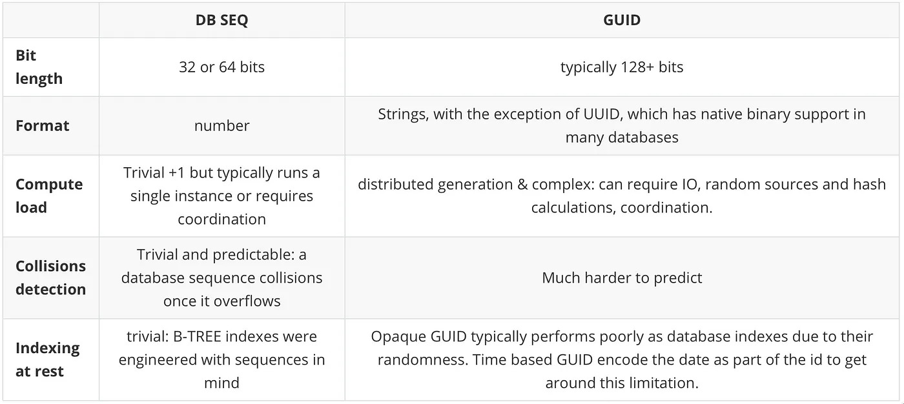
Sequences vs GUID
Sequence were great for a single database supporting an internal application to local users. Nowadays, OLTP data is secured, distributed, scalable and exposed to the world. These is still place for them in a DWH or other data OLAP storages.
Since this article is about GUID I wont’ extend more on this topic, I added a great article — The hidden dangers of numerical IDs
What are the categories of GUID?
There are mainly two categories of GUIDs: Opaque and time-based. Time based GUID trade a few bits of entropy to encode a date, they are therefore more efficient to index at the cost of a shorter randomness range.
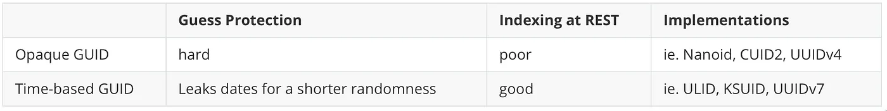
Opaque vs Time-based GUID
Features, Benefits & Shortcomings
The table below provides a comprehensive comparison between the major GUID implementations.
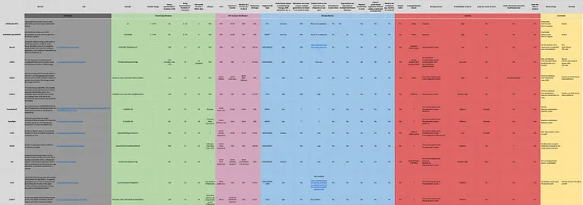
GUID Comparison table, Please [click on this link for the full version](.\GUID Comaprison.oda)
Benchmark
Disclaimer, these benchmark are performed against a given architecture (JavaScript/Arm), different implementations/runtimes will likely give different results.
Platform info:
\==============
Darwin 22.2.0 arm64
Node.JS: 18.12.1
V8: 10.2.154.15\-node.12
CPU: Apple M1 Pro × 8
Memory: 16 GB
Running "GUID Benchmark" suite...
Progress: 100%
uuid v1:
4 460 889 ops/s, ±0.57% | 63.99% slower
uuid v4:
8 870 032 ops/s, ±0.54% | 28.41% slower
uuid v7:
443 205 ops/s, ±0.82% | 96.42% slower
nanoid:
5 300 343 ops/s, ±0.48% | 57.22% slower
cuid:
347 037 ops/s, ±1.15% | 97.2% slower
cuid2:
60 490 ops/s, ±0.52% | slowest, 99.51% slower
ulid (monotonic):
12 389 427 ops/s, ±0.64% | fastest
xid:
3 417 174 ops/s, ±0.41% | 72.42% slower
ksuid:
532 223 ops/s, ±1.02% | 95.7% slower
Finished 9 cases!
Fastest: ulid (monotonic)
Slowest: cuid2
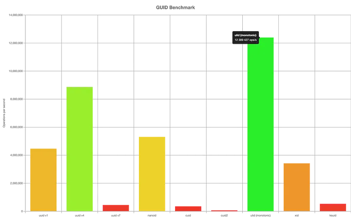
Thoughts beyond theory
At this point you should have a pretty good idea of the different implementations and how they compare. Let us add some context...
Are CSPRNG implementations broken?
Some were, others are, mostly in (old) browsers.
Remember that, even if ID generation takes place server side, where implementations are more stable and uniform: you must be vigilant. Here is a security post on the topic regarding NodeJS (2015).
Is Randomness a pledge for security?
Machines run algorithms that approximate randomness by selecting algorithms and trusted entropy sources. A cryptographically secure pseudo-random number generator (CSPRNG) is a algorithm with properties that make it suitable for use in cryptography. On Linux for instance, the kernel gathers noisy data from various devices and transfers them to an internal pool of entropy.
Unfortunate, not all cryptography stacks are equal. For instance, old versions of CSPRNG are famous for their poor implementations in JavaScript or PHP. Algorithms such as SHA1 also proved to be unsecured but are still used today in some GUID generators.
While ensuring that a GUID generator is cryptography certified is important, an ID is nothing in view of a proper security architecture.
What are the odds of a collisions?
The answer depends on the use case and the specifics of a GUID implementation
With that said, the advertised Math is probably not a good reflection of reality: In an application, a GUID is used to create a multitude of different entities. These entities by definition do not overlap with one another and are therefore in their own space, further reducing the chances of collisions.
Is there a risk to leak the id generation date?
It all depends on requirements.
From a legal standpoint, some will argue that the ID generation date is PII data. While this classification could not be validated, a lawyer friend of mine found the argument difficult to defend in a court without considering the complete architecture.
From a security standpoint, very unlikely but it depends on your use case. Zendesk recently wrote an article on the topic, recommended.
Is there a way to mitigate security and performance?
There are designs which leverage different GUID implementations where they best fit. For instance, it is common in cloud database nowadays to provide an out of the box time-based guid. if this implementation is not sufficient to satisfy security requirements, the notion of internal and external id can be implemented on entities.
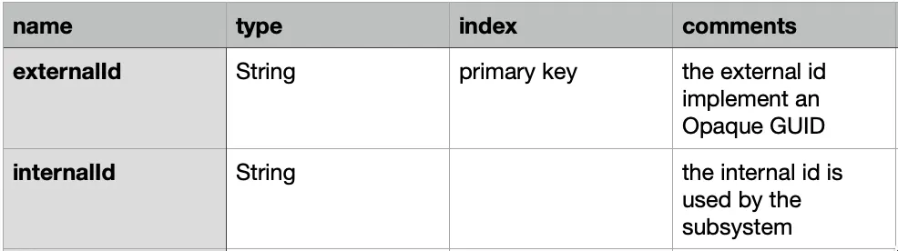
Is generation performance a key factor?
In complete honesty, it’s probably not. The fact is, in terms of pseudo-random generation, velocity is generally not a factor of security. Besides even the slowest implementation still generates ids at 60000 ops/s on a single machine.
How to choose?
With so many dimensions, what are the points to consider?
- entropy length — this has direct impact on collisions and predictability, I would recommend avoiding anything with an entropy length < 62 bits unless you understand what you are doing.
- random generator quality — not all random generators are made equal, ensure the implementation uses a cryptography secure random. Do not trust! again DO NOT trust!
- scalability — with so many options available, I would recommend an implementation which can scale horizontally.
The remaining decision points are specific to your requirements.
When ids are stored in a RDBMS database, I had successes with ULID and UUIDv7, for transient ids typically stored in memory or in the browser, I would recommend nanoid.
Conclusion
We reached the end of this article. We learned that picking the right GUID flavor depends entirely on your requirements. You should be vigilent to the constraints of your specific use case, the data being leaked (if any), the CSPRNG implementation it uses or if you plan to store it as a primary key.
If you are still stuck on the UUID vs Sequence as primary key, I added an excellent article in the appendix sections below. In the end it’s (Security, Scalability & Resilience) vs Performance.
Appendix
Articles of interests
- From UUID to ULID, be prepared
- New UUID formats
- CUID2
- Identity Crisis: Sequence v. UUID as Primary Key
- The hidden dangers of numerical IDs
Definitions
This section helps clarify some of the terms used in this document.
Collisions
A hash collision is a random match in hash values that occurs when a hashing algorithm produces the same hash value for two distinct pieces of data.
Coordination
The communication between the different elements of a complex activity so as to enable them to work together effectively.
Entropy
In Cryptography, refers to the randomness collected by a system for use in algorithms that require random seeds. (jargon word for “randomness”)
Monotonic
A monotonic generator ensures ids are always sorted in order. This term is particularly relevant to date based guid generators which are based on time. For a given instance, at instant T, the next id should always be sorted.
Opaque
An opaque identifier is one that doesn’t expose its inner details or structure.
Pagination
Pagination is a process that is used to divide a large data into smaller discrete pages. Commonly used in customer facing applications, pagination requires the notion of pointers on the dataset.
Predictable
A random number generator is predictable if, after observing some of its “random” output, we can make accurate predictions about what “random values” are coming up next.
Randomness
Randomness (entropy) is the cornerstone of cryptography. The more random the numbers, the more secure the cryptographic system. The challenge then, becomes one of generating true randomness.
A Comprehensive Guide to MACH Architecture in 2023
MACH: Microservices-Based, API-First, Cloud-Native, and Headless
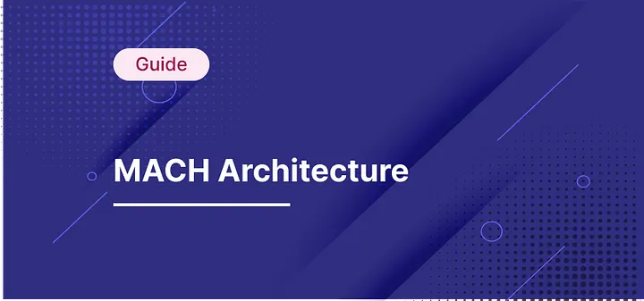
In the tech world, change is constant.
Technologies come and go, and what was once cutting-edge is replaced by the new and improved. It’s no secret that the technology landscape is constantly evolving, so it’s important for organizations to plan ahead and stay ahead of the curve.
Then the question is, how do you stay ahead of the curve when new technologies are introduced daily?
This is where the MACH Architecture comes into the picture. MACH architecture is
- agile
- flexible
- future-proof
- scalable
For all these reasons, it’s no secret that MACH architecture is on the rise. With its growing popularity, many people are curious about MACH architecture and how it works.
In this comprehensive guide, we’ll look at MACH architecture, how it works, and what benefits it can offer your business in 2023.
Whether you’re just starting out with MACH architecture or you’re looking to expand your knowledge base, this guide has everything you need to get up to speed.
What Is MACH Technology?
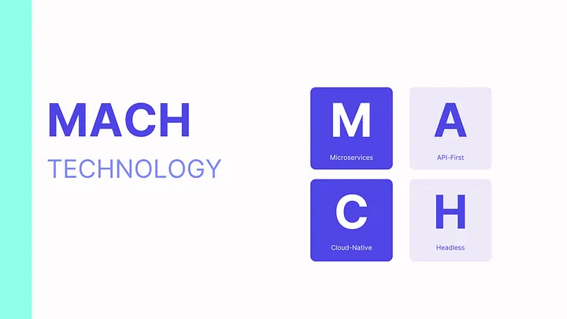
If you’re not familiar with composable digital experience space, you might ask yourself, ‘what does MACH mean?’ MACH is an acronym that stands for:
- Microservices-Based
- API-First
- Cloud-Native
- Headless
The MACH technology is a powerful approach to software development that focuses on developing microservices-based, API-first, cloud-native applications that are headless. This innovative approach allows developers to create highly scalable, efficient, and flexible applications that can easily adapt to changing business needs.
The MACH technology stems from the principles of agile development, which emphasizes rapid delivery and continuous improvement. By breaking down large applications into smaller modular units called microservices, MACH enables teams to iterate quickly and respond effectively to new requirements or changes in the market.
Microservices-Based
Microservices is an approach to software development whereby an application is decomposed into a number of small, independently developed, and deployable services.
This approach has a number of benefits over traditional, monolithic development techniques.
Firstly, it enables much greater flexibility in terms of deployment and scalability. Secondly, it allows for greater reuse of code and easier maintenance. Finally, it facilitates a more rapid development cycle as features can be developed and deployed independently of one another.
As a result, microservices-based applications are becoming increasingly popular, particularly in the cloud computing domain.
API-First
An API-First approach is a strategy for designing and developing software applications in which the application’s programming interface (API) is given priority over other components.
The advantage of this approach is that it allows developers to create an API that can be easily integrated into other software applications, making it easier to share data and functionality between different systems.
In addition, using an API-first approach can also help to ensure that the application’s UI is consistent with the underlying API, making it easier for users to understand and use the application.
Cloud-Native
The term “Cloud-Native” is used to describe applications that are designed specifically for deployment in the cloud.
Cloud-Native apps are typically built using microservices, which are small, self-contained components that can be deployed and scaled independently. This approach differs from traditional monolithic applications, which are large and complex, with tightly coupled dependencies.
Cloud-native apps are also designed to be highly resilient, with each microservice being independently scalable and replaceable. This approach enables organizations to quickly adapt to changing conditions and ensure that their apps remain available even in the event of an outage.
As the demand for cloud-based applications continues to grow, the need for cloud-native solutions will become increasingly important.
Headless
Headless architecture is a type of software architecture that decouples the front-end user interface from the back-end logic enabling a framework-agnostic technology structure.
In a headless system, the backend provides an API that delivers content to the frontend. This separation of concerns allows for greater flexibility and scalability.
By decoupling the frontend and backend, developers can more easily make changes to either one without affecting the other. This approach also makes it easier to scale individual components of the system as needed.
MACH Alliance
The MACH Alliance is a global industry consortium of forward-thinking organizations that are committed to driving innovation in the rapidly evolving digital landscape and promoting the development of enterprise technology ecosystems that are open and of the best of the breed.
At its core, MACH Alliance is about educating the industry as a whole on what to watch out for while shifting away from legacy infrastructure and turning composable, and helping businesses stay competitive in an increasingly digital world. By embracing emerging technologies like microservices, MACH members gain a significant edge over their competitors by being able to quickly develop and deliver new products and services to customers at scale.
Overall, MACH Alliance is at the forefront of innovation in the digital space, empowering businesses all around the world to thrive in the age of digital transformation. Whether you’re an established enterprise looking for new ways to build competitive advantage or a startup looking for support and guidance as you navigate the rapidly changing digital landscape.
MACH Architecture
What Is MACH Architecture?
The MACH architecture is a software architecture that is composed of independent components, meaning it is built from smaller components that can be combined to form a complete system.
This composability allows software systems to be built from interchangeable parts that can be composed into various configurations. The advantage of this approach is that it allows different parts of the system to be continuously improved and optimized for specific purposes, which can lead to better performance and experience overall.
What Are the Benefits and Advantages of MACH Architecture?
The advantages and benefits of MACH architecture include the following:
Scalability
MACH architecture is a type of software architecture that is designed to be scalable. One of the benefits of this design is that it can easily be adapted to meet the changing needs of an organization.
For example, if an organization needs to grow, the MACH technologies can be scaled up to accommodate the additional load.
Flexibility and Composability (Tailor-Made Architecture )
Additionally, MACH architecture is also designed to be flexible, meaning that it can be easily modified with the best-of-breed solutions to fit an organization’s specific requirements.
This flexibility makes MACH solutions ideal for organizations that need to respond to changes in their business environment rapidly.
As a result, the MACH technology stack provides organizations with a high degree of scalable and flexible enterprise technologies, making it a popular choice for many businesses.
Future-Proof
The need for faster and more efficient data and content processing will only grow as the world becomes increasingly digitized.
MACH ecosystem technologies are designed to meet this demand by providing a scalable and flexible architecture that can be easily adapted to changing needs.
Additionally, the MACH technology stack is also highly future-proof, meaning that it can be used for years to come without becoming outdated. This is due to its modular design, which allows new components to be added as needed.
As a result, businesses investing in MACH-first software can be confident that they are making a sound investment that will pay off for years.
Faster Time to Market
MACH architecture is a microservices-based approach that enables organizations to develop and deploy software faster.
By breaking down applications into small, independent services that can be developed and deployed independently, MACH reduces the time it takes to get new features and functionality to market.
In addition, because MACH services are loosely coupled, they are easier to change and update, reducing the risk of errors and making it easier to roll out new features and functionality quickly and efficiently.
As a result, MACH can help organizations to achieve faster time-to-market, increased agility, and better overall software quality.
Challenges About MACH Architecture
The MACH architecture has been widely increasing its adoption in recent years as a future-proof, high-performance alternative to traditional architectures. However, MACH architectures are not without their challenges:
- What you see is NOT what you get.
- Coordination problems between software providers.
- Lack of collaboration between business and development teams.
Traditional (Monolith) Architecture vs. MACH Architecture
Digital experience platforms are powerful tools to create, manage, and organize customer expectations. However, monolith architectures have some serious limitations in meeting evolving business requirements.
The problem is that most monolith architectures don’t offer the flexibility or features for the upcoming needs of business functionality. MACH architecture is a perfect solution for businesses looking to get the most out of their digital experience efforts.
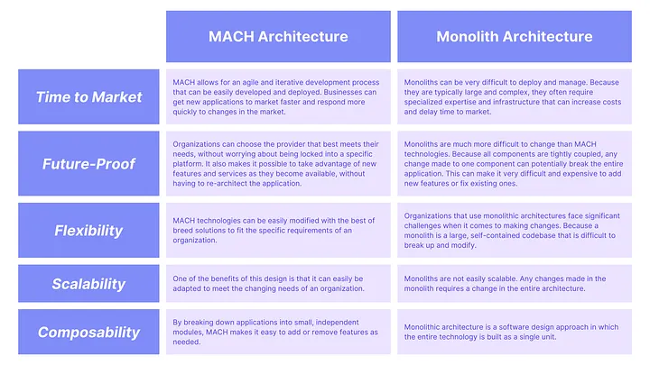
Adoption of MACH Architecture and MACH Technologies
The study, published in March 2022, surveyed over 200 senior-level technology decision-makers from companies around the world to gauge awareness and adoption of MACH technology.
The findings of the ‘Enterprise MACHified’ are a strong indication that MACH is gaining momentum in the market and is poised to have a significant impact on the enterprise software landscape.
- Decision makers put a high value on offering superior CX quickly in the face of rapidly growing expectations.
- The move to MACH is being driven by CX, market developments, and privacy/security concerns.
- MACH’s motivations are closely connected to those who believe they are ahead of their competitors.
Let’s deep dive into this research to explore how top decision-makers for corporate organizations see MACH architecture:
Decision makers see MACH as the future of architecture.
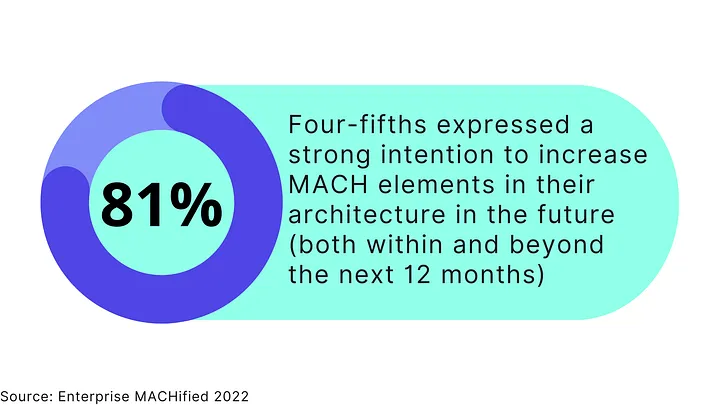
MACH intentions are strongly correlated with perceptions of outpacing competitors.
75% of respondents think that they’re ahead of the competition — one-third believe their organization is significantly ahead of the competition, while two-fifths say they are slightly ahead of their competitors.
Increased customer experience, faster adaptation, and improved privacy/security are driving reasons for the transition to MACH.
The customer experience is the backbone of most businesses. Providing a great customer experience increases your customers’ likelihood to interact positively with you. For this reason, it’s a leading factor why increasing customer experience is one of the top reasons for switching to a MACH platform, with 60% ranking it as a number one priority.
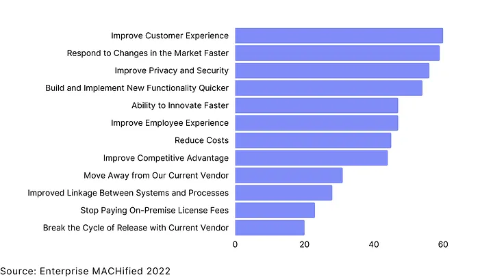
In today’s business world, change is the only constant. Markets shift and evolve at an ever-increasing pace, and businesses must be able to adapt just as quickly to stay competitive. That’s why responding to changes in the market faster (59%) and building and implementing new functionality quicker (54%) are other significant reasons for the transition to MACH.
Last but not least, improved privacy (56%) is another major reason for choosing MACH solutions over traditional ones.
Barriers to MACH are more likely to be around implementation.
- Two-fifths (39%) of decision-makers said resistance to change from their development team is their main barrier to moving to a MACH-based infrastructure.
- 35% of companies rely more on their current vendors for business continuity, suggesting that existing B2B relationships impact business function.
- A third (33%) are unclear about the trade-off between initial investment and long-term benefits.
How to Evaluate MACH Architecture and MACH Technologies
The MACH architecture provides a number of benefits that make it an attractive option for businesses. Perhaps most importantly, it is designed to be scalable, making it easy to add new applications without needing to reconfigure the entire system. This highly modular architecture allows businesses to customize their deployment to meet their specific needs.
When evaluating the MACH architecture, businesses should consider their specific needs and requirements. Here are a couple of questions you can ask when evaluating a potential MACH tool:
- Can you add and replace services gradually over time?
- Does it support adding or replacing best-of-breed systems and services independently?
- Is it created using APIs from the ground up, or is an API built later?
- Can you access technical documentation (demonstrating platform capabilities and resources) easily?
- In terms of cloud infrastructure, does it have infinite scalability?
- Do updates and upgrades take place through continuous delivery without causing any disruptions?
- Can you freely and flexibly design and deploy the user experience?
With MACH architecture, businesses can digitally transform and evolve with the future. This is an essential technology for any company that wants their business in line with new trends as they come about.
Is MACH Architecture the Future of Digital Customer Experience
MACH is a new approach to digital customer experience that is gaining popularity among businesses.
Unlike traditional monolithic architectures, MACH separates each component of the customer experience into its own microservice that enables to use of full capabilities. This allows businesses to update their customer experience more quickly and easily without having to redeploy the entire system.
Additionally, MACH provides greater flexibility, capabilities, and scalability than monolithic architectures, making it well-suited for businesses that are growing quickly.
While MACH is still relatively new, it has already been adopted by some of the world’s leading companies and is widely considered to be the future of digital customer experience. As a result, it is not surprising that MACH architecture is quickly becoming the new standard for digital customer experience.
Architecture Method : C4 Model
What is the C4 Model?
The C4 model is a framework used in software engineering to visualize and describe the architecture of software systems. Developed by Simon Brown, it stands for “Context, Containers, Components, and Code,” which represent different levels of granularity for depicting a system’s architecture.
Context
The purpose of this section is to offer a global perspective of the system, highlighting its interactions and connections with external entities such as users, emailing system and other external systems. Here are some keypoints :
Stakeholders: Business and system analysts, product owners, team leads, and new team members.
Strategic Overview: The context provides a strategic view of the system, highlighting how it fits into and interacts with the broader business environment. This perspective is vital for stakeholders to see the system not as an isolated entity but as a part of a larger business process or ecosystem.
Clarification of Boundaries: By outlining the system’s interactions with external entities, the context clarifies the system’s boundaries. This understanding is crucial for identifying potential areas of risk, dependencies, and integration points.
Guidance for Design and Development: Understanding the context guides both the design and development of the system. It ensures that the system is aligned with business goals and user needs, making it more effective and user-centric.
Facilitates Stakeholder Communication: The context provides a common language and understanding for diverse stakeholders, including business executives, users, and technical teams, fostering better communication and alignment on the system’s objectives. It is a moment when the approach of Domain Driven Design becomes very useful.
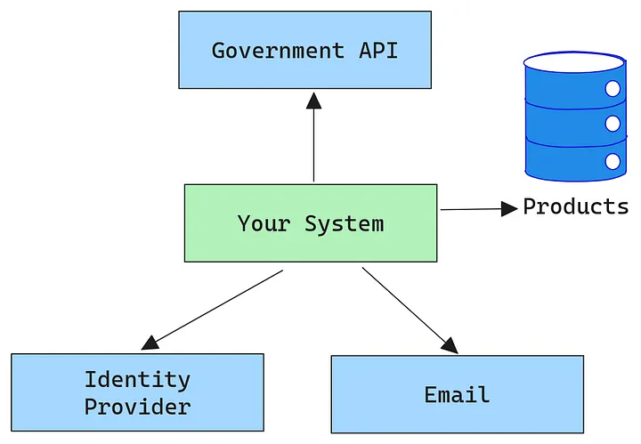
Example of a context schema
Containers
This section aims to depict the high-level technological decisions made for the system, detailing key components such as web servers, databases, file systems, and other integral elements that constitute the system’s architecture. Here are some keypoints :
Stakeholders: Developers, architects, tech leads and operations teams.
Architecture Overview: Containers offer a high-level view of the system architecture, presenting the main technologies and platforms used. This is vital for new team members, external partners, or anyone needing a quick understanding of the system’s technical makeup.
Decision-Making Framework: Understanding the containers helps in making informed decisions about scaling, security, and resource allocation. It also aids in evaluating the impact of potential changes or additions to the technology stack.
Risk Assessment: By identifying the key technologies and their interactions, it becomes easier to assess and manage risks associated with technology choices, such as vendor lock-in, scalability issues, or security vulnerabilities.
Optimization Opportunities: This understanding enables identifying optimization opportunities, such as improving performance, reducing costs, or simplifying the technology stack.
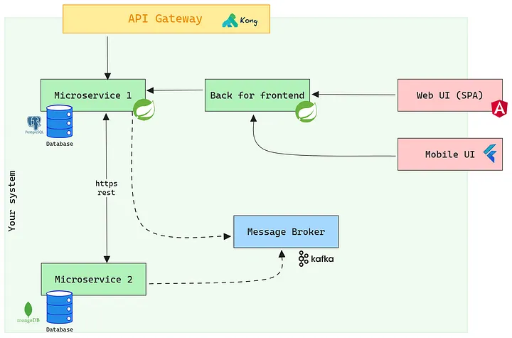
Example of a container schema
Components
This section is designed to provide a deeper understanding of the system’s fundamental components, illustrating the main elements within each container and how they interact with one another. Here are some keypoints :
Stakeholders: Development teams (including developers and software architects).
Detailed Architectural Insight: Provides a detailed insight into the architectural layout of the system, illustrating how different parts of the system work together. This is critical for both maintaining existing features and planning new development. Here are some keypoints :
Facilitates Modular Development: Understanding components aids in modularizing development, allowing teams to work on different parts of the system simultaneously without causing conflicts or dependencies.
Improves Quality and Maintainability: A clear view of components allows for better quality control, easier bug tracking, and more efficient maintenance. It also aids in identifying redundant or outdated parts of the system that need refactoring.
Foundation for Scalability: A detailed understanding of components is essential for scaling the system effectively, ensuring that each component can handle increased load and complexity.
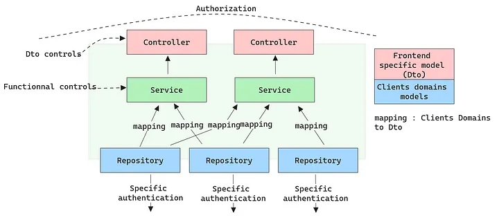
Example of a component schema for the Back for Frontend component
Code
This section presents the most detailed layer of the system, focusing on the actual implementation. It typically includes UML diagrams or similar representations to illustrate how the various components of the system are implemented. Here are some keypoints :
Stakeholders: Development teams (including developers and software architects).
Ground-Level Understanding: Provides the most granular level of understanding, essential for day-to-day development work. It helps developers understand exactly how functionalities are implemented and interact at the code level.
Enhances Problem-Solving: With a detailed view of the code, developers can more effectively troubleshoot issues, optimize performance, and ensure code quality.
Facilitates Onboarding and Knowledge Transfer: Detailed code documentation is crucial for onboarding new team members, helping them to quickly understand how the system works at a practical, hands-on level.
Enables Continuous Improvement: Understanding the code is key to continuous improvement practices like refactoring, as it allows developers to identify areas for enhancement and implement changes without unintended side-effects.
Benefits
Clarity
Comprehensive View: Offers a multi-level understanding of the system, aiding in strategic planning and reducing errors by highlighting potential design issues early.
Decision-Making Support: Enhances informed decision-making regarding design, technology, and resource allocation.
Communication
Unified Framework: Creates a common language for discussions among diverse stakeholders, enhancing collaboration and engagement across teams.
Stakeholder Alignment: Improves alignment on project goals and expectations, crucial for project success.
Documentation
Systematic Record: Provides structured, standardized documentation, essential for reference, compliance, and future enhancements. Tools such as ADR (Architecture Decision Record) could be very usefull to maintain documentation up to date using a detailed methodology.
Knowledge Base: Acts as a valuable knowledge repository for training and guiding new team members. This is a very important point. This kind of knowledge could be a great time saver and also prevent some technical debt from arising.
Trade-offs
Complexity
Detail Overload: For large systems, capturing every detail can be overwhelming and may obscure the overall understanding. It can also be overkill for small systems.
Strategic Clarity Risk: Excessive focus on details can risk losing sight of the high-level strategic view. We all know the tendency we ( developers and architects ) have to over-engineer just because it is fun and satisfying.
Effort
Resource Demands: Requires significant time and effort to create and regularly update, demanding resources that could be allocated elsewhere. So the ROI has to be calculated, a project that is only short term or transitional should not require this kind of investment.
Maintenance Challenge: Keeping documentation current with system changes is a continuous and often resource-intensive task, so again focus on the ROI.
Detail Management
Balance Difficulty: Achieving the right level of detail without overcomplicating or oversimplifying is challenging. You need experienced resources, especially in architecture.
Varied Needs: Tailoring documentation to meet different stakeholder needs without redundancy or confusion requires careful consideration. Again, you need to rely on an experienced architect who can guarantee this.
Conclusion
In conclusion, the structured approach of documenting and understanding software systems through Context, Containers, Components, and Code offers significant benefits. This multi-level perspective is crucial for a thorough understanding of the system, aiding in decision-making, stakeholder engagement and effective project management. It serves as a vital knowledge base and a standardized framework for discussions and alignment among various stakeholders.
However, these benefits come with trade-offs. The complexity of maintaining such detailed documentation can be overwhelming, especially for large or rapidly evolving systems. The effort required to create and update these models is substantial and demands significant resources. Additionally, managing the level of detail in documentation to cater to varied stakeholder needs without causing information overload or confusion presents an ongoing challenge.
Therefore, while this approach is highly beneficial for understanding and communicating the architecture of software systems, it requires careful consideration and management to ensure that the documentation remains effective, relevant, and accessible to all stakeholders. Balancing the depth of detail with the high-level overview, and allocating resources efficiently for ongoing maintenance, are key to leveraging the full potential of this structured architectural approach.
What is Solution Architecture
An informal introduction to Solution Architecture
Introduction
The term Solution Architecture refers to a high-level blueprint of a solution that was developed to solve one or more business problems within an enterprise using a technological approach. Building a proper solution architecture requires
- A good understanding of the business problem or problems (domain knowledge)
- Comprehensive knowledge of the technologies used in the enterprise world (technical knowledge)
- Experience in building similar solutions in the past (experience)
A good solution architecture can be used to perform critical tasks such as
- Designing and implementing innovative solutions for the consumers of the business
- Maintain excellent user experience with higher degrees of service availability
- Perform calculations on return on investment (ROI) and total cost of ownership (TCO)
Solution architecture tries to compact a gigantic set of details into a set of diagrams so that different stakeholders understand what is actually going on inside the enterprise software systems. It is helpful for highly technical people such as software developers, software architects, and CTOs as well we moderately technical people such as project managers, business analysts, and citizen developers.
Types of architectures in solution architecture
The first step in solving any problem is understanding the business requirements of the client. To include all the critical information related to the business use case, we can come up with something called a “business architecture” which contains different types of applications, users, and their interactions at a very high level. We sometimes call this architecture “Level 0” architecture.
Business architecture (Level-0 architecture)
The idea of business architecture is to come up with a possible solution to a real-world problem or problems and depict that in the form of a diagram or a document using the systems, applications, and users that are considered in the scenario with minimum technical details. This component is mainly useful for business executives and other non-technical stakeholders so that they can understand what technical solution is going to be built using this architecture. Given below is a “business architecture” diagram that we came up with for a mobile banking application.
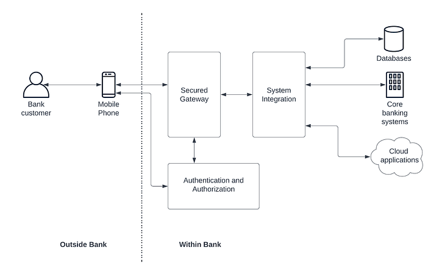
Figure: The business architecture of a mobile banking application
The preceding figure depicts the various components associated with the solution in which we are building a mobile banking application for a given bank. It showcases the components such as gateway, integration, and security component as high-level building blocks to design a solution for this problem.
The next step in designing the solution architecture is to use this and design a technical architecture with the finer details about products and tools.
Technical architecture (Level-1 architecture)
This is the type of diagram that includes details of specific vendors, products, and tools required to build a real-world software system using the business architecture blueprint. Coming up with a technical architecture requires the proper analysis of vendors and tools as well as the current and future business requirements and TCO/ROI calculations. The below diagram depicts a simplified version of a technical architecture for the business architecture we discussed before.
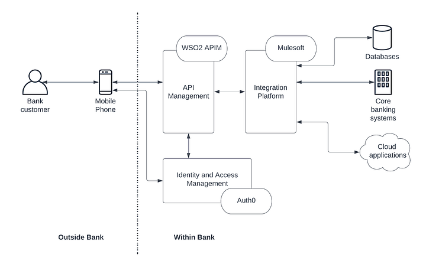
Figure: Technical architecture of a mobile banking solution
In this diagram, we have mentioned the specific vendors that we are going to use to fulfill the certain functionalities that we identified during the business architecture design phase. As an example, the diagram depicts that we are going to use the WSO2 API Manager solution as the API gateway which exposes the services to the mobile application. Similarly, it shows that we are going to use Mulesoft and Auth0 for respective functionalities. In addition to that, we can also depict information about which cloud platforms and container technologies we are going to use if we decided to go with a container-based solution.
Once the product vendors and tools are identified, the next step is to go further down into the actual deployment details and showcase the infrastructure level details that can be used by the developers as well as the operations teams to build the actual infrastructure for the solution.
Deployment architecture (Level-2 architecture)
This architecture diagram showcases how the technical architecture looks like in a real computing infrastructure such as a data center or a cloud platform. It contains details on network-level segmentation, the number of replicas (instances), traffic routing components such as load balancers or firewalls, and many other details related to the actual deployment of the solution. The figure below depicts a simplified version of a deployment architecture that we can come up with for the mobile banking solution that we discussed before.

Figure: Deployment architecture for mobile banking solution
The preceding figure depicts the product versions, the number of replicas, and the deployment model of each component along with the traffic routing components (load balancers).
structurizr
structurizr
.structurizr
index
index
adrs
1. Record architecture decisions
Date: 2023-11-01
Status
Accepted
Context
We need to record the architectural decisions made on this project.
Decision
We will use Architecture Decision Records, as described by Michael Nygard in this article: http://thinkrelevance.com/blog/2011/11/15/documenting-architecture-decisions
Consequences
See Michael Nygard's article, linked above.
adrs
docs
docs
tutorials
tutorials
checklists
Architecture Checklist
General
- ARC-1 Does the architecture communicate an adequate vision of the system that will direct further design activities?
- ARC-2 Is the architecture well organized and provide a concise system overview, background information, constraints, and a clear organizational structure for all downstream designs?
- ARC-3 Is the architecture designed to accommodate likely changes?
- ARC-4 Does the architecture stay above detailed design and user interface design activities?
- ARC-5 Do the dependencies between different architectural views hold together?
Architecture Design
- ARC-6 Is the system architecture, including the data flows, control flows, high-level elements, and interfaces, clearly represented?
- ARC-7 Are fine grain element details omitted and left to subsequent design artifacts?
- ARC-8 Does the architecture cleanly decompose the top-level elements of the system?
- ARC-9 To the extent possible, is the architecture independent of the technology that will use used to implement it?
- ARC-10 Does the architecture take into account technology or other constraints that cannot be avoided, i.e., can the architecture be implemented for the target environment?
- ARC-11 Have you used round-trip design, selecting the best of several attempts? Are reasons listed for the discounted alternatives?
- ARC-12 Does the architecture differentiate between the problem-domain, the user-interface, task-management, and data-management? If not, is the lack explained and justified?
Architectural Features
- ARC-13 Are external interfaces, including user interfaces, defined and justified?
- ARC-14 Is a level of robustness specified and justified?
- ARC-15 Is the architecture appropriately layered?
- ARC-16 Is the architecture loosely coupled and have good cohesion?
- ARC-17 Does the architecture set resource budgets for each element?
Strategies
- ARC-18 Is an I/O strategy described and justified?
- ARC-19 Is an error-handling strategy described and justified?
- Project Level Support
- ARC-20 Does the architecture support the lifecycle selected by the project?
- ARC-21 Are the major system goals clearly stated?
- ARC-22 Is the system environment defined, including hardware, software, and external systems?
- ARC-23 Are necessary buy vs. build decisions included and justified?
checklists
Code Review Checklist
The following is a basic checklist on items to consider when doing code reviews.

Functionality
- F-1. Does the code match the design and the system requirements?
- F-2. Does the code do what it should be doing?
- F-3. Does the code do anything it should not be doing?
- F-4. Can the code be made simpler while still doing what it needs to do?
- F-5. Are available building blocks used when appropriate? (algorithms, data structures, types, templates, libraries, RTOS functions)
- F-6. Does the code use good patterns and abstractions? (e.g., state charts, no copy-and paste)
- F-7. Can this function be written with a single point of exit? (no returns in middle of function)
- F-8. Are all variables initialized before use?
- F-9. Are there unused variables?
- F-10. Is each function doing only one thing? (Does it make sense to break it down into smaller modules that each do something different?)
- F-11. Has reusable functionality been pulled out into utility functions?
Style
- S-1. Does the code follow the style guide? (e.g. formatting, commenting)
- S-2. Is the header information for each file and each function descriptive enough?
- S-3. Is there an appropriate amount of comments? (frequency, location, and level of detail)
- S-4. Is the code well structured? (typographically and functionally)
- S-5. Are the variable and function names descriptive and consistent in style?
- S-6. Are "magic numbers" avoided? (use named constants rather than numbers)
- S-7. Is there any "dead code" (commented out code or unreachable code) that should be removed?
- S-8. Is the code too complicated? (Did you have to think hard to understand what it does?)
- S-9. Did you have to ask the author what the code does? (code should be self-explanatory)
- S-10. Is there commented out code that should be removed?
- S-11. Are the compilation and/or Static Analysis checks 100% warning-free? (are warnings enabled?)
- S-12. Are there comments for saying what the code is doing rather than why it is doing it? (does it specify about any hacks, workaround and temporary fixes. Additionally, does it mention pending tasks in to-do comments, which can be tracked easily)
Architecture
- A-1. Is the function too long? (e.g., longer than fits on one printed page)
- A-2. Can this code be reused? Should it be reusing something else?
- A-3. Is there minimal use of global variables? Do all variables have minimum scope?
- A-4. Are classes and functions that are doing related things grouped appropriately? (cohesion)
- A-5. Is the code portable? (especially variable sizes, e.g., "int32" instead of "long")
- A-6. Are specific types used when possible? (e.g., "unsigned" and typedef, not just "int")
- A-7. Are there any if/else structures nested more than two deep? (consecutive "else if" is OK)
- A-8. Are there nested switch or case statements? (they should never be nested)
- A-9. Is there any hard coding of values? (use constants/configuration values)
- A-10. Has security been considered? (e.g SQL injections, Cross Site Scripting and API security)
Exception handling
- E-1. Are input parameters checked for proper values (sanity checking)?
- E-2. Are error return codes/exceptions generated and passed back up to the calling function?
- E-3. Are error return codes/exceptions handled by the calling function?
- E-4. Are null pointers and negative numbers handled properly?
- E-5. Do switch statements have a default clause used for error detection?
- E-6. Are arrays checked for out of range indexing? Are pointers similarly checked?
- E-7. Is garbage collection being done properly, especially for errors/exceptions?
- E-8. Is there a chance of mathematical overflow/underflow?
- E-9. Are error conditions checked and logged? Are the error messages/codes meaningful?
Logging
- L-1. Are we logging relevant information ?
- L-2. Are we logging at the correct priority?
- L-3. Is the log message clear (i.e access to code is not required to understand it and it clearly describes what has occurred)?
Timing
- T-1. Is the worst-case timing bounded? (no unbounded loops, no recursion)
- T-2. Are there any race conditions? (especially multi-byte variables modified by an interrupt) T-3. Is appropriate code thread safe and re-entrant?
- T-4. Are there any long-running ISRs? Are interrupts masked for more than a few clocks?
- T-5. Is priority inversion avoided or handled by the RTOS?
- T-6. Is the watchdog timer turned on? Is the watchdog kicked only if every task is executing?
- T-7. Has code readability been sacrificed for unnecessary optimization?
Hardware
- H-1. Do I/O operations put the hardware in correct state?
- H-2. Are min/max timing requirements met for the hardware interface?
- H-3. Are you sure that multi-byte hardware registers can't change during read/write?
- H-4. Does the software ensure that the system resets to a well-defined hardware system state?
- H-5. Have brownout and power loss been handled?
- H-6. Is the system correctly configured for entering/leaving sleep mode (e.g. timers)?
- H-7. Have unused interrupt vectors been directed to an error handler?
- H-8. Has care been taken to avoid EEPROM corruption? (e.g., power loss during write)
Commit
- C-1. Do the commit comments explain what the change is and why?
- C-2. Do the commit comments reference the appropriate JIRA issue?
- C-3. Is the merge for one change only? (do not resolve multiple issues in one merge)
Debugging
General approach to debugging
- DBG-1 Have you set a maximum time for quick and dirty debugging?
- DBG-2 Do you research an issue to ensure an easy answer is not readily available?
- DBG-3 Do you use all available debugging tools? (e.g., warning messages, execution tracing and profiling, scaffolding, interactive debugging, etc.)
- DBG-4 Do you assume that errors are your fault?
- DBG-5 Do you avoid the trial-and-error, superstitious approach to debugging?
- DBG-6 Do you use several different techniques to find errors and alternate approaches?
- DBG-7 Do you get help when appropriate?
- DBG-8 If an issue appears that it will take longer to identify or fix than initially thought, do you notify project management as appropriate?
- DBG-9 Do you move on when appropriate?
- DBG-10 Do you verify that the fix is correct?
- DBG-11 Do you use debugging as an opportunity to learn?
Techniques for Finding Errors. Have you tried to
- DBG-12 ... Use all the data available to form a hypothesis?
- DBG-13 ... Refine the test cases that produce the error?
- DBG-14 ... Reproduce the error several different ways?
- DBG-15 ... Generate more data to generate more hypotheses?
- DBG-16 ... Use results of negative tests?
- DBG-17 ... Brainstorm for possible hypotheses?
- DBG-18 ... Narrow the suspicious region of the code?
- DBG-19 ... Check code that's changed recently?
- DBG-20 ... Expand the suspicious region of the code?
- DBG-21 ... Integrate incrementally?
- DBG-22 ... Be suspicious of routines that have had errors before?
- DBG-23 ... Use brute force?
- DBG-24 ... Check for common errors?
- DBG-25 ... Use confessional debugging?
- DBG-26 ... Take a break from the problem?
Techniques for Fixing Errors. Have you tried to
- DBG-27 ... Understand the problem?
- DBG-28 ... Check your work?
- DBG-29 …Verify that the fix is correct?
- DBG-30 ... Relax?
- DBG-31 ... Confirm the error diagnosis?
- DBG-32 ... Save the original source code?
- DBG-33 ... Fix the problem, not the symptom?
- DBG-34 ... Change the code only for good reason?
- DBG-35 ... Understand the program as well as the problem?
- DBG-36 ... Make one change at a time?
- DBG-37 ... Look for similar errors?
- DBG-38 ... Have a break?
Design Checklist
General
- SD-1 Do individual elements of the design (e.g., a diagram) conform to appropriate checklists?
- SD-2 Does the design support both product and project goals?
- SD-3 Is the design feasible from a technology, cost, and schedule standpoint?
- SD-4 Have known design risks been identified, analyzed, and planned for or mitigated?
- SD-5 Are the methodologies, notations, etc. used to create and capture the design appropriate?
- SD-6 Does the level of formality match the project size, project goals, and engineer expertise?
- SD-7 Has the design been refined based on prototyping or implementation feedback?
- SD-8 If possible, were proven past designs reused?
- SD-9 Does the design support proceeding to the next development step?
Design Considerations
- SD-10 Does the design have conceptual integrity? (i.e., does the whole thing hang together?)
- SD-11 Can the design be implemented within technology and environmental constraints?
- SD-12 Does the design use standard techniques and avoid exotic, hard-to-understand elements?
- SD-13 Does the design emphasizes simplicity over cleverness?
- SD-14 Is the design “as simple as possible, but no simpler”?
- SD-15 Is the design lean? (i.e., are all of its parts strictly necessary?)
- SD-16 If part of an evolutionary lifecycle or if change is expected in maintenance, do expected volatile areas of the design support expected changes or refactoring of the design? (e.g., have design for change principles been followed?)
- SD-17 Does the design create reusable components if appropriate?
- SD-18 Will the design be easy to port to another environment if appropriate?
- SD-19 Does the design have low complexity?
- SD-20 Is the design intellectually manageable?
- SD-21 Is the design robust?
Requirements Traceability
- SD-22 Does the design address all issues from the requirements?
- SD-23 Does the design add features or functionality, which was not specified by the requirements? (i.e., are all parts of the design traceable back to requirements?)
- SD-24 If appropriate has requirements coverage been documented with a completed requirements traceability matrix?
Level of Detail
- SD-25 Is the level of detail appropriate for this design artifact?
- SD-26 Has sufficient detail been included to allow the downstream consumer of the design to produce their artifacts (design, databases, code, test plan, etc.)?
Completeness
- SD-27 Are all of the assumptions, constraints, design decisions, and dependencies documented?
- SD-28 Has a risk plan been made for the parts of the design that may not be feasible?
- SD-29 Are assumptions made due to missing information been documented?
- SD-30 Have all reasonable alternative designs been considered, including not automating some processes in software?
- SD-31 Have all goals, tradeoffs, and decisions been described?
Consistency
- SD-32 Is the design consistent with its upstream and downstream artifacts?
- SD-33 Does the design adequately address issues that were identified and deferred at previous upstream levels?
- SD-34 Have the impacts of all ‘To-Be-Determined’ (TBD) issues in the upstream artifacts been assessed and addressed?
- SD-35 Does the design make sense both from the top down and the bottom up? SD-36 Is the design consistent with related artifacts? (i.e. other modules, designs, etc.) SD-37 Is the design consistent with the development and operating environments?
Performance
- SD-38 Are all performance attributes, assumptions, and constraints clearly defined?
- SD-39 If appropriate are there justifications for design performance? (e.g., prototyping critical areas or reusing an existing design proven in the same context)
Maintainability
- SD-40 Does the design allow for ease of maintenance?
- SD-41 If reusable parts of other designs are being used, has their effect on design and integration been stated?
- SD-42 Does the design account for future extensions to the program?
- SD-43 Does the design resists erosion in the correctness of its content over time?
Compliance
- SD-44 Does the design follow all standards necessary for the system? (e.g., date standards)
Definition of Done
- DoD-1 Code builds without warnings
- DoD-2 Code developer tested
- DoD-3 Code is QA tested
- DoD-4 Documentation updated
- DoD-5 Code reviewed
- DoD-6 Code meets code review checklist
- DoD-7 Any technical Debt is recorded
- DoD-8 CI build is complete
Definition of Ready
- DoR-1 Design specs provided
- DoR-2 User story is clear
- DoR-3 Architecture understood
- DoR-4 Acceptance criteria agreed
- DoR-5 Meets INVEST
- DoR-5 Non-functional requirements are understood
INVEST
- I-1 Immediately actionable a team can begin work on the item right away
- I-2 Negotiable the team can discuss details about the PBI and how it is to be accomplished.
- I-3 Value the PBI produces value to customers/stakeholders.
- I-4 Estimable the team can estimate how much effort it will take to complete.
- I-5 Small the work can be accomplished in a single Sprint.
- I-6 Testable the increment can be tested
glossary
Chapter 1
0
0-9
0
100 Mbps---Fast Ethernet
In computer networking, Fast Ethernet physical layers carry traffic at the nominal rate of 100 Mbit/s. The prior Ethernet speed was 10 Mbit/s. Of the Fast Ethernet physical layers, 100BASE-TX is by far the most common.
Fast Ethernet was introduced in 1995 as the IEEE 802.3u standard and remained the fastest version of Ethernet for three years before the introduction of Gigabit Ethernet. The acronym GE/FE is sometimes used for devices supporting both standards
5ESS
5ESS Switching System
The 5ESS Switching System is a telephone electronic switching system developed by Western Electric for the American Telephone and Telegraph Company (AT&T) and the Bell System in the United States.
The 5ESS came to market as the Western Electric No. 5 ESS. It first commenced service in Seneca, Illinois on 25 March 1982, and was destined to replace the Number One Electronic Switching System (1ESS and 1AESS) and other electromechanical systems in the 1980s and 1990s. The 5ESS was also used as a Class 4 telephone switch or as a hybrid Class 4/Class 5 switch in markets too small for the 4ESS. Approximately half of all US central offices are served by 5ESS switches. The 5ESS is also exported internationally, and manufactured outside the US under license.
The 5ESS technology was transferred to the AT&T Network Systems division upon the breakup of the Bell System. The division was divested by AT&T as Lucent Technologies, and after becoming Alcatel-Lucent, it was acquired by Nokia.
The 5ESS switch has three main types of modules: the Administrative Module (AM) contains the central computers; the Communications Module (CM) is the central time-divided switch of the system; and the Switching Module (SM) makes up the majority of the equipment in most exchanges. The SM performs multiplexing, analog and digital coding, and other work to interface with external equipment. Each has a controller, a small computer with duplicated CPUs and memories, like most common equipment of the exchange, for redundancy. Distributed systems lessen the load on the Central Administrative Module (AM) or main computer.
5G
5G is a marketing term for some new mobile technologies. Definitions differ and confusion is common. The ITU IMT-2020 standard provides for speeds up to 20 gigabits per second and has only been demonstrated with millimeter waves of 15 gigahertz and higher frequency. The more recent 3GPP standard includes any network using the NR New Radio software. 5G New Radio can include lower frequencies, from 600 MHz to 6 GHz. However, the speeds in these lower frequencies are only modestly higher than new 4G systems, estimated at 15% to 50% faster. At least at the lower frequencies, "5G is evolutionary."
802.11
EEE 802.11 is part of the IEEE 802 set of local area network (LAN) technical standards, and specifies the set of media access control (MAC) and physical layer (PHY) protocols for implementing wireless local area network (WLAN) computer communication. The standard and amendments provide the basis for wireless network products using the Wi-Fi brand and are the world's most widely used wireless computer networking standards. IEEE 802.11 is used in most home and office networks to allow laptops, printers, smartphones, and other devices to communicate with each other and access the Internet without connecting wires.
The standards are created and maintained by the Institute of Electrical and Electronics Engineers (IEEE) LAN/MAN Standards Committee (IEEE 802). The base version of the standard was released in 1997 and has had subsequent amendments. While each amendment is officially revoked when it is incorporated in the latest version of the standard, the corporate world tends to market to the revisions because they concisely denote the capabilities of their products. As a result, in the marketplace, each revision tends to become its own standard.
IEEE 802.11 uses various frequencies including, but not limited to, 2.4 GHz, 5 GHz, 6 GHz, and 60 GHz frequency bands. Although IEEE 802.11 specifications list channels that might be used, the radio frequency spectrum availability allowed varies significantly by regulatory domain.
The protocols are typically used in conjunction with IEEE 802.2, and are designed to interwork seamlessly with Ethernet, and are very often used to carry Internet Protocol traffic.
802.3 Physical Layer
EEE 802.3 is a working group and a collection of Institute of Electrical and Electronics Engineers (IEEE) standards produced by the working group defining the physical layer and data link layer's media access control (MAC) of wired Ethernet. This is generally a local area network (LAN) technology with some wide area network (WAN) applications. Physical connections are made between nodes and/or infrastructure devices (hubs, switches, routers) by various types of copper or fiber cable.
802.3 is a technology that supports the IEEE 802.1 network architecture.
802.3 also defines LAN access method using CSMA/CD.
1
1
5
5
8
8
A
A-law
An A-law algorithm is a standard companding algorithm, used in European 8-bit PCM digital communications systems to optimize, i.e. modify, the dynamic range of an analog signal for digitizing. It is one of two versions of the G.711 standard from ITU-T, the other version being the similar µ-law, used in North America and Japan.
AA
Authoritative Answer
Specifies that the responding name server is an authority for the domain name in question section. Note that the contents of the answer section may have multiple owner names because of aliases. This bit corresponds to the name which matches the query name, or the first owner name in the answer section.
AAC
Advanced Audio Coding
Advanced Audio Coding (AAC) is a proprietary audio coding standard for lossy digital audio compression. Designed to be the successor of the MP3 format, AAC generally achieves better sound quality than MP3 at the same bit rate. The confusingly named AAC+ (HE-AAC) does so only at low bit rates and less so at high ones.
AAC has been standardized by ISO and IEC, as part of the MPEG-2 and MPEG-4 specifications. Part of AAC, HE-AAC (AAC+), is part of MPEG-4 Audio and also adopted into digital radio standards DAB+ and Digital Radio Mondiale, as well as mobile television standards DVB-H and ATSC-M/H.
AAC supports inclusion of 48 full-bandwidth (up to 96 kHz) audio channels in one stream plus 16 low frequency effects (LFE, limited to 120 Hz) channels, up to 16 "coupling" or dialog channels, and up to 16 data streams. The quality for stereo is satisfactory to modest requirements at 96 kbit/s in joint stereo mode; however, hi-fi transparency demands data rates of at least 128 kbit/s (VBR). Tests of MPEG-4 audio have shown that AAC meets the requirements referred to as "transparent" for the ITU at 128 kbit/s for stereo, and 320 kbit/s for 5.1 audio.
AAL1
An ATM Adaptation layer 1 or AAL1 is used for transmitting Class A network traffic, that is, real-time, constant bit rate, connection oriented traffic (example- uncompressed audio and video). Bits are fed in by the application at constant rate and must be delivered to other end with minimum delay, jitter or overhead. The input is stream of bits without message boundaries. For this traffic, error detection protocols cannot be used since timeouts and retransmission causes delay but the missing cells are reported to the application, that must take its own action to recover from them.
AAL2
ATM Adaptation Layer 2
ATM Adaptation Layer 2 (AAL2) is an ATM adaptation layer for Asynchronous Transfer Mode (ATM), used primarily in telecommunications; for example, it is used for the Iu interfaces in the Universal Mobile Telecommunications System, and is also used for transporting digital voice. The standard specifications related to AAL2 are ITU standards I.363.2 and I366.1.
What is AAL2?
AAL2 is a variable bitrate, connection-oriented, low latency service
originally intended to adapt voice for transmission over ATM. Like other
ATM adaptation layers, AAL2 defines segmentation and reassembly of
higher-layer packets into ATM cells, in this case packets of data
containing voice and control information. AAL2 is further separated into
two sub-layers that help with the mapping from upper layer services to
ATM cells. These are named Service Specific Convergence Sub-layer (SSCS)
and Common Part Sub-layer (CPS).
AAL5
ATM Adaptation Layer 5
ATM Adaptation Layer 5 (AAL5) is an ATM adaptation layer used to send variable-length packets up to 65,535 octets in size across an Asynchronous Transfer Mode (ATM) network.
Unlike most network frames, which place control information in the header, AAL5 places control information in an 8-octet trailer at the end of the packet. The AAL5 trailer contains a 16-bit length field, a 32-bit cyclic redundancy check (CRC) and two 8-bit fields labeled UU and CPI that are currently unused.
Each AAL5 packet is divided into an integral number of ATM cells and reassembled into a packet before delivery to the receiving host. This process is known as Segmentation and Reassembly (see below). The last cell contains padding to ensure that the entire packet is a multiple of 48 octets long. The final cell contains up to 40 octets of data, followed by padding bytes and the 8-octet trailer. In other words, AAL5 places the trailer in the last 8 octets of the final cell where it can be found without knowing the length of the packet; the final cell is identified by a bit in the ATM header (see below), and the trailer is always in the last 8 octets of that cell.
AD
Active Directory
Active Directory (AD) is a directory service that Microsoft developed for the Windows domain networks. It is included in most Windows Server operating systems as a set of processes and services. Initially, Active Directory was only in charge of centralized domain management. Starting with Windows Server 2008, however, Active Directory became an umbrella title for a broad range of directory-based identity-related services.
A server running Active Directory Domain Services (AD DS) is called a domain controller. It authenticates and authorizes all users and computers in a Windows domain type network---assigning and enforcing security policies for all computers and installing or updating software. For example, when a user logs into a computer that is part of a Windows domain, Active Directory checks the submitted password and determines whether the user is a system administrator or normal user. Also, it allows management and storage of information, provides authentication and authorization mechanisms, and establishes a framework to deploy other related services: Certificate Services, Federated Services, Lightweight Directory Services and Rights Management Services.
Active Directory uses Lightweight Directory Access Protocol (LDAP) versions 2 and 3, Microsoft's version of Kerberos, and DNS.
ADSL
Asymmetric Digital Subscriber Loop
Asymmetric digital subscriber line (ADSL) is a type of digital
subscriber line (DSL) technology, a data communications technology that
enables faster data transmission over copper telephone lines than a
conventional voiceband modem can provide. ADSL differs from the less
common symmetric digital subscriber line (SDSL). In ADSL, bandwidth and
bit rate are said to be asymmetric, meaning greater toward the customer
premises (downstream) than the reverse (upstream). Providers usually
market ADSL as a service for consumers for Internet access for primarily
downloading content from the Internet, but not serving content accessed
by others.

AES
Advanced Encryption Standard
The Advanced Encryption Standard (AES), also known by its original name Rijndael is a specification for the encryption of electronic data established by the U.S. National Institute of Standards and Technology (NIST) in 2001.
AES is a subset of the Rijndael block cipher developed by two Belgian cryptographers, Vincent Rijmen and Joan Daemen, who submitted a proposal[5] to NIST during the AES selection process.[6] Rijndael is a family of ciphers with different key and block sizes.
For AES, NIST selected three members of the Rijndael family, each with a block size of 128 bits, but three different key lengths: 128, 192 and 256 bits.
AES has been adopted by the U.S. government and is now used worldwide. It supersedes the Data Encryption Standard (DES), which was published in 1977. The algorithm described by AES is a symmetric-key algorithm, meaning the same key is used for both encrypting and decrypting the data.
In the United States, AES was announced by the NIST as U.S. FIPS PUB 197 (FIPS 197) on November 26, 2001. This announcement followed a five-year standardization process in which fifteen competing designs were presented and evaluated, before the Rijndael cipher was selected as the most suitable (see Advanced Encryption Standard process for more details).
AES became effective as a federal government standard on May 26, 2002, after approval by the Secretary of Commerce. AES is included in the ISO/IEC 18033-3 standard. AES is available in many different encryption packages, and is the first (and only) publicly accessible cipher approved by the National Security Agency (NSA) for top secret information when used in an NSA approved cryptographic module
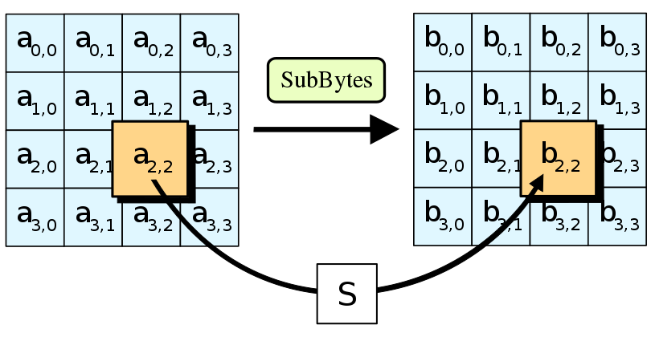
AIS
Alarm Indication Signaling
Alarm indication signal (AIS) (also called "all ones" because of the data and framing pattern) is a signal transmitted by an intermediate element of a multi-node transport circuit that is part of a concatenated telecommunications system to alert the receiving end of the circuit that a segment of the end-to-end link has failed at a logical or physical level, even if the system it is directly connected to is still working. The AIS replaces the failed data, allowing the higher order system in the concatenation to maintain its transmission framing integrity. Downstream intermediate elements of the transport circuit propagate the AIS onwards to the destination element.
ALCAP
Access Link Control Application Protocol
Control plane protocol for the transport layer in 3rd Generation UMTS networks is called ALCAP ("Access Link Control Application Part"). ALCAP is defined by 3GPP as equivalent of ITU recommendation Q.2630.2. Basic functionality of ALCAP is multiplexing of different users onto one AAL2 transmission path using channel IDs (CIDs). It is used in the UMTS access network UTRAN along with ATM, while IPBCP is use for IP links in the core of the network.
ALCAP makes it possible for up to 248 channels to be multiplexed onto one AAL2 bearer.
AMP
Asymmetric Multiprocessing
In an asymmetric multiprocessing system (AMP), not all CPUs are treated equally; for example, a system might allow (either at the hardware or operating system level) only one CPU to execute operating system code or might allow only one CPU to perform I/O operations. Other AMP systems would allow any CPU to execute operating system code and perform I/O operations, so that they were symmetric with regard to processor roles, but attached some or all peripherals to particular CPUs, so that they were asymmetric with respect to the peripheral attachment. Asymmetric multiprocessing was the only method for handling multiple CPUs before symmetric multiprocessing (SMP) was available. It has also been used to provide less expensive options on systems where SMP was available. Additionally, AMP is used in applications that are dedicated, such as embedded systems, when individual processors can be dedicated to specific tasks at design time.
Multiprocessing is the use of more than one CPU in a computer system. The CPU is the arithmetic and logic engine that executes user applications. With multiple CPUs, more than one set of program instructions can be executed at the same time. All of the CPUs have the same user-mode instruction set, so a running job can be rescheduled from one CPU to another.

AMR-NB
Adaptive Multi-Rate Narrow band
The Adaptive Multi-Rate (AMR, AMR-NB or GSM-AMR) audio codec is an audio compression format optimized for speech coding. AMR speech codec consists of a multi-rate narrowband speech codec that encodes narrowband (200--3400 Hz) signals at variable bit rates ranging from 4.75 to 12.2 kbit/s with toll quality speech starting at 7.4 kbit/s.
AMR was adopted as the standard speech codec by 3GPP in October 1999 and is now widely used in GSM[4] and UMTS. It uses link adaptation to select from one of eight different bit rates based on link conditions.
AMR-WB
Adaptive Multi-Rate Wideband
Adaptive Multi-Rate Wideband (AMR-WB) is a patented wideband speech audio coding standard developed based on Adaptive Multi-Rate encoding, using similar methodology as algebraic code excited linear prediction (ACELP). AMR-WB provides improved speech quality due to a wider speech bandwidth of 50--7000 Hz compared to narrowband speech coders which in general are optimized for POTS wireline quality of 300--3400 Hz. AMR-WB was developed by Nokia and VoiceAge and it was first specified by 3GPP.
AMR-WB is codified as G.722.2, an ITU-T standard speech codec, formally known as Wideband coding of speech at around 16 kbit/s using Adaptive Multi-Rate Wideband (AMR-WB). G.722.2 AMR-WB is the same codec as the 3GPP AMR-WB. The corresponding 3GPP specifications are TS 26.190 for the speech codec and TS 26.194 for the Voice Activity Detector.
The AMR-WB format has the following parameters:
- Frequency bands processed: 50-6400 Hz (all modes) plus 6400-7000 Hz (23.85 kbit/s mode only)
- Delay frame size: 20 ms
- Look ahead: 5 ms
- AMR-WB codec employs a bandsplitting filter; the one-way delay of this filter is 0.9375 ms
- Complexity: 38 WMOPS, RAM 5.3KWords
- Voice activity detection, discontinuous transmission, comfort noise generator
- Fixed point: Bit-exact C
- Floating point: under work.
ANDSF
Access Network Discovery and Selection Function
The ANDSF provides information to the UE about connectivity to 3GPP and
non-3GPP access networks (such as Wi-Fi). The purpose of the ANDSF is to
assist the UE to discover the access networks in their vicinity and to
provide rules (policies) to prioritize and manage connections to these
networks.

ANSI
American National Standards Institute
The American National Standards Institute is a private non-profit organization that oversees the development of voluntary consensus standards for products, services, processes, systems, and personnel in the United States. The organization also coordinates U.S. standards with international standards so that American products can be used worldwide.
ANSI accredits standards that are developed by representatives of other standards organizations, government agencies, consumer groups, companies, and others. These standards ensure that the characteristics and performance of products are consistent, that people use the same definitions and terms, and that products are tested the same way. ANSI also accredits organizations that carry out product or personnel certification in accordance with requirements defined in international standards
AOP
aspect-oriented programming
In computing, aspect-oriented programming (AOP) is a programming paradigm that aims to increase modularity by allowing the separation of cross-cutting concerns. It does so by adding additional behavior to existing code (an advice) without modifying the code itself, instead separately specifying which code is modified via a "pointcut" specification, such as "log all function calls when the function's name begins with 'set'". This allows behaviors that are not central to the business logic (such as logging) to be added to a program without cluttering the code, core to the functionality. AOP forms a basis for aspect-oriented software development.
AOP includes programming methods and tools that support the modularization of concerns at the level of the source code, while "aspect-oriented software development" refers to a whole engineering discipline.
Aspect-oriented programming entails breaking down program logic into distinct parts (so-called concerns, cohesive areas of functionality). Nearly all programming paradigms support some level of grouping and encapsulation of concerns into separate, independent entities by providing abstractions (e.g., functions, procedures, modules, classes, methods) that can be used for implementing, abstracting and composing these concerns. Some concerns "cut across" multiple abstractions in a program, and defy these forms of implementation. These concerns are called cross-cutting concerns or horizontal concerns.
Logging exemplifies a crosscutting concern because a logging strategy necessarily affects every logged part of the system. Logging thereby crosscuts all logged classes and methods.
All AOP implementations have some crosscutting expressions that encapsulate each concern in one place. The difference between implementations lies in the power, safety, and usability of the constructs provided. For example, interceptors that specify the methods to intercept express a limited form of crosscutting, without much support for type-safety or debugging. AspectJ has a number of such expressions and encapsulates them in a special class, an aspect. For example, an aspect can alter the behavior of the base code (the non-aspect part of a program) by applying advice (additional behavior) at various join points (points in a program) specified in a quantification or query called a pointcut (that detects whether a given join point matches). An aspect can also make binary-compatible structural changes to other classes, like adding members or parents.
API
application programming interface
a specific method prescribed by a computer operating system or by an application program by which a programmer writing an application program can make requests of the operating system or another application.
APN
Access Point Name
An Access Point Name (APN) is the name of a gateway between a GSM, GPRS, 3G or 4G mobile network and another computer network, frequently the public Internet.
A mobile device making a data connection must be configured with an APN to present to the carrier. The carrier will then examine this identifier to determine what type of network connection should be created, for example: which IP addresses should be assigned to the wireless device, which security methods should be used, and how or if, it should be connected to some private customer network.
More specifically, the APN identifies the packet data network (PDN) that a mobile data user wants to communicate with. In addition to identifying a PDN, an APN may also be used to define the type of service, (e.g. connection to Wireless Application Protocol (WAP) server, Multimedia Messaging Service (MMS)) that is provided by the PDN. APN is used in 3GPP data access networks, e.g. General Packet Radio Service (GPRS), evolved packet core (EPC).
ARP spoofing
In computer networking, ARP spoofing, ARP cache poisoning, or ARP poison routing, is a technique by which an attacker sends (spoofed) Address Resolution Protocol (ARP) messages onto a local area network. Generally, the aim is to associate the attacker's MAC address with the IP address of another host, such as the default gateway, causing any traffic meant for that IP address to be sent to the attacker instead.
ARP spoofing may allow an attacker to intercept data frames on a network, modify the traffic, or stop all traffic. Often the attack is used as an opening for other attacks, such as denial of service, man in the middle, or session hijacking attacks.
The attack can only be used on networks that use ARP, and requires
attacker have direct access to the local network segment to be attacked

ASCII
ASCII, abbreviated from American Standard Code for Information Interchange, is a character encoding standard for electronic communication. ASCII codes represent text in computers, telecommunications equipment, and other devices. Most modern character-encoding schemes are based on ASCII, although they support many additional characters.
ASCII is the traditional name for the encoding system; the Internet Assigned Numbers Authority (IANA) prefers the updated name US-ASCII, which clarifies that this system was developed in the US and based on the typographical symbols predominantly in use there.
ASN.1
Abstract Syntax Notation One (ASN.1) is an interface description language for defining data structures that can be serialized and deserialized in a standard, cross-platform way. It is broadly used in telecommunications and computer networking, and especially in cryptography.
Protocol developers define data structures in ASN.1 modules, which are generally a section of a broader standards document written in the ASN.1 language. Because the language is both human-readable and machine-readable, modules can be automatically turned into libraries that process their data structures, using an ASN.1 compiler.
ASN.1 is similar in purpose and use to protocol buffers and Apache Thrift, which are also interface description languages for cross-platform data serialization. Like those languages, it has a schema (in ASN.1, called a "module"), and a set of encodings, typically type-length-value encodings. However, ASN.1, defined in 1984, predates them by many years. It also includes a wider variety of basic data types, some of which are obsolete, and has more options for extensibility. A single ASN.1 message can include data from multiple modules defined in multiple standards, even standards defined years apart.
ATDD
Acceptance Test Driven Development
involves team members with different perspectives (customer, development, testing) collaborating to write acceptance tests in advance of implementing the corresponding functionality.
ATM
Asynchronous Transfer Mode
Asynchronous transfer mode (ATM) is, according to the ATM Forum, "a
telecommunications concept defined by ANSI and ITU (formerly CCITT)
standards for carriage of a complete range of user traffic, including
voice, data, and video signals".[1] ATM was developed to meet the
needs of the Broadband Integrated Services Digital Network, as defined
in the late 1980s,[2] and designed to integrate telecommunication
networks. Additionally, It was designed for networks that must handle
both traditional high-throughput data traffic (e.g., file transfers),
and real-time, low-latency content such as voice and video. The
reference model for ATM approximately maps to the three lowest layers of
the ISO-OSI reference model: network layer, data link layer, and
physical layer.[3] ATM is a core protocol used over the SONET/SDH
backbone of the public switched telephone network (PSTN) and Integrated
Services Digital Network (ISDN), but its use is declining in favour of
all IP.

AWS
Amazon Web Services
Amazon Web Services (AWS) is a subsidiary of Amazon.com that provides on-demand cloud computing platforms to individuals, companies and governments, on a paid subscription basis. The technology allows subscribers to have at their disposal a virtual cluster of computers, available all the time, through the Internet. AWS's version of virtual computers emulate most of the attributes of a real computer including hardware (CPU(s) & GPU(s) for processing, local/RAM memory, hard-disk/SSD storage); a choice of operating systems; networking; and pre-loaded application software such as web servers, databases, CRM, etc. Each AWS system also virtualizes its console I/O (keyboard, display, and mouse), allowing AWS subscribers to connect to their AWS system using a modern browser. The browser acts as a window into the virtual computer, letting subscribers log-in, configure and use their virtual systems just as they would a real physical computer. They can choose to deploy their AWS systems to provide internet-based services for themselves and their customers.
The AWS technology is implemented at server farms throughout the world, and maintained by the Amazon subsidiary. Fees are based on a combination of usage, the hardware/OS/software/networking features chosen by the subscriber, required availability, redundancy, security, and service options. Subscribers can pay for a single virtual AWS computer, a dedicated physical computer, or clusters of either. As part of the subscription agreement, Amazon provides security for subscribers' system. AWS operates from many global geographical regions including 6 in North America.
Acceptance Test
Formal test defining acceptance criteria for a release.
Acceptance Testing
An acceptance test is a formal description of the behavior of a software product, generally expressed as an example or a usage scenario. A number of different notations and approaches have been proposed for such examples or scenarios. In many cases the aim is that it should be possible to automate the execution of such tests by a software tool, either ad-hoc to the development team or off the shelf.
Activity Model
Specifies work or workflow by showing and describing the states and flow of control of the system or process.
Activity
An element of work performed during a project, normally associated with an expected resource usage. The terms activities and tasks are somewhat interchangeable, although the PMBOK defines tasks as resulting from the breakdown of activities.
Ad Hoc Testing
See informal testing.
Ada
Ada is a structured, statically typed, imperative, and object-oriented high-level computer programming language, extended from Pascal and other languages. It has built-in language support for design-by-contract, extremely strong typing, explicit concurrency, tasks, synchronous message passing, protected objects, and non-determinism. Ada improves code safety and maintainability by using the compiler to find errors in favor of runtime errors. Ada is an international standard; the current version (known as Ada 2012) is defined by ISO/IEC 8652:2012.
Agent
In a project charter, responsible for initiating, sponsoring, and supporting the project. Also see project sponsor.
Agile Manifesto
Describes the four principles of agile development:
1.Individuals and interactions over processes and tools. 2.Working software over comprehensive documentation. 3.Customer collaboration over contract negotiation. 4.Responding to change over following a plan.
Agile development
an umbrella term specifically for iterative software development methodologies. Popular methods include Scrum, Lean, DSDM and eXtreme Programming (XP).
Agile
a project management approach based on delivering requirements iteratively and incrementally throughout the life cycle.
Amazon EC2
Amazon Electric Compute Cloud
Amazon Elastic Compute Cloud (EC2) forms a central part of Amazon.com's cloud-computing platform, Amazon Web Services (AWS), by allowing users to rent virtual computers on which to run their own computer applications. EC2 encourages scalable deployment of applications by providing a web service through which a user can boot an Amazon Machine Image (AMI) to configure a virtual machine, which Amazon calls an "instance", containing any software desired. A user can create, launch, and terminate server-instances as needed, paying by the second for active servers -- hence the term "elastic". EC2 provides users with control over the geographical location of instances that allows for latency optimization and high levels of redundancy.
Analogy Estimation
Creating estimates by using expert judgment to compare proposed work to historical data for similar past work. Often coupled with fuzzy logic techniques.
Android
Android is a mobile operating system developed by Google, based on a modified version of the Linux kernel and other open source software and designed primarily for touchscreen mobile devices such as smartphones and tablets. In addition, Google has further developed Android TV for televisions, Android Auto for cars, and Wear OS for wrist watches, each with a specialized user interface. Variants of Android are also used on game consoles, digital cameras, PCs and other electronics.
Antipattern
are common solutions to common problems where the solution is ineffective and may result in undesired consequences.
Anycast
Anycast is a network addressing and routing methodology in which a
single destination address has multiple routing paths to two or more
endpoint destinations. Routers will select the desired path on the basis
of number of hops, distance, lowest cost, latency measurements or based
on the least congested route. Anycast networks are widely used for CDN
products to bring their content closer to the end user.

Architecture
Top level overview and plan for a software system. See CxStand_Design for more information.
Artifact
The tangible result of work performed.
May be used at any level of detail, e.g., the artifact resulting from a
task might be a document, while the artifact resulting from a project
might be a software system.
Assessment
A review of the state or practices of a project or organization, often performed by an independent entity.
Audio Codecs
An audio coding format (or sometimes audio compression format) is a content representation format for storage or transmission of digital audio (such as in digital television, digital radio and in audio and video files). Examples of audio coding formats include MP3, AAC, Vorbis, FLAC, and Opus. A specific software or hardware implementation capable of audio compression and decompression to/from a specific audio coding format is called an audio codec; an example of an audio codec is LAME, which is one of several different codecs which implements encoding and decoding audio in the MP3 audio coding format in software.
Some audio coding formats are documented by a detailed technical specification document known as an audio coding specification. Some such specifications are written and approved by standardization organizations as technical standards, and are thus known as an audio coding standard. The term "standard" is also sometimes used for de facto standards as well as formal standards.
Audio content encoded in a particular audio coding format is normally encapsulated within a container format. As such, the user normally doesn't have a raw AAC file, but instead has a .m4a audio file, which is a MPEG-4 Part 14 container containing AAC-encoded audio. The container also contains metadata such as title and other tags, and perhaps an index for fast seeking. A notable exception is MP3 files, which are raw audio coding without a container format. De facto standards for adding metadata tags such as title and artist to MP3s, such as ID3, are hacks which work by appending the tags to the MP3, and then relying on the MP3 player to recognize the chunk as malformed audio coding and therefore skip it. In video files with audio, the encoded audio content is bundled with video (in a video coding format) inside a multimedia container format.
An audio coding format does not dictate all algorithms used by a codec
implementing the format. An important part of how lossy audio
compression works is by removing data in ways humans can't hear,
according to a psychoacoustic model; the implementer of an encoder has
some freedom of choice in which data to remove (according to their
psychoacoustic model).

Audit
Sometimes used as a synonym for assessment, usually in a more formal and independent context.
Author
For a review, the person assigned to represent the author viewpoint for an artifact. The author is normally the primary contributor to the creation of the artifact.
Authority
Responsible for funding and championing a project, the project sponsor.
Automated Build
In the context of software development, build refers to the process that converts files and other assets under the developers' responsibility into a software product in its final or consumable form. The build is automated when these steps are repeatable, require no direct human intervention, and can be performed at any time with no information other than what is stored in the source code control repository.
Automated Testing
The use of tools and technology to encode, execute, and note results of test cases on a system without human intervention.
Awk
AWK is a programming language designed for text processing and typically used as a data extraction and reporting tool. It is a standard feature of most Unix-like operating systems.
The AWK language is a data-driven scripting language consisting of a set of actions to be taken against streams of textual data -- either run directly on files or used as part of a pipeline -- for purposes of extracting or transforming text, such as producing formatted reports. The language extensively uses the string datatype, associative arrays (that is, arrays indexed by key strings), and regular expressions. While AWK has a limited intended application domain and was especially designed to support one-liner programs, the language is Turing-complete, and even the early Bell Labs users of AWK often wrote well-structured large AWK programs.
Azure
Microsoft Azure is a cloud computing service created by Microsoft for building, testing, deploying, and managing applications and services through a global network of Microsoft-managed data centers. It provides software as a service (SaaS), platform as a service (PaaS) and infrastructure as a service (IaaS) and supports many different programming languages, tools and frameworks, including both Microsoft-specific and third-party software and systems.
==
Authoritative Answer
Specifies that the responding name server is an authority for the domain name in question section. Note that the contents of the answer section may have multiple owner names because of aliases. This bit corresponds to the name which matches the query name, or the first owner name in the answer section.
A
B
B2B
business-to-business
Business-to-business (B2B or, in some countries, BtoB) refers to a situation where one business makes a commercial transaction with another. This typically occurs when:
A business is sourcing materials for their production process (e.g. a
food manufacturer purchasing salt).
A business needs the services of another for operational reasons (e.g. a
food manufacturer employing an accountancy firm to audit their
finances).
A business re-sells goods and services produced by others (e.g. a
retailer buying the end product from the food manufacturer).
B2B is often contrasted with business-to-consumer (B2C). In B2B
commerce, it is often the case that the parties to the relationship have
comparable negotiating power, and even when they do not, each party
typically involves professional staff and legal counsel in the
negotiation of terms, whereas B2C is shaped to a far greater degree by
economic implications of information asymmetry. However, within a B2B
context, large companies may have many commercial, resource and
information advantages over smaller businesses.
B2C
business-to-consumer
Business to consumer (B2C) refers to the transactions conducted directly between a company and consumers who are the end-users of its products or services. The business to consumer as a business model differs significantly from the business-to-business model, which refers to commerce between two or more businesses. While most companies that sell directly to consumers can be referred to as B2C companies, the term became immensely popular during the dotcom boom of the late 1990s, when it was used mainly to refer to online retailers, as well as other companies that sold products and services to consumers through the internet.
BASIC
BASIC (an acronym for Beginner's All-purpose Symbolic Instruction Code) is a family of general-purpose, high-level programming languages whose design philosophy emphasizes ease of use. In 1964, John G. Kemeny, Thomas E. Kurtz and Sr. Mary Kenneth Keller designed the original BASIC language at Dartmouth College. They wanted to enable students in fields other than science and mathematics to use computers. At the time, nearly all use of computers required writing custom software, which was something only scientists and mathematicians tended to learn.
BAU
Business as Usual
Business as usual (BAU) - the normal execution of standard functional operations within an organization - forms a possible contrast to projects or programmes which might introduce change.[citation needed] BAU may also stand in contradistinction to external events which may have the effect of unsettling or distracting those inside an organisation
BDD
Behavior Driven Development (BDD)
BDD is a practice where members of the team discuss the expected behavior of a system in order to build a shared understanding of expected functionality.
BER
Basic Encoding Rules
The format for Basic Encoding Rules specifies a self-describing and self-delimiting format for encoding ASN.1 data structures. Each data element is encoded as a type identifier, a length description, the actual data elements, and, where necessary, an end-of-content marker. These types of encodings are commonly called type-length-value or TLV encodings. This format allows a receiver to decode the ASN.1 information from an incomplete stream, without requiring any pre-knowledge of the size, content, or semantic meaning of the data.
BGCF
Breakout Gateway Control Function
A Breakout Gateway Control Function (BGCF) is a SIP proxy which
processes requests for routing from an S-CSCF when the S-CSCF has
determined that the session cannot be routed using DNS or ENUM/DNS. It
includes routing functionality based on telephone numbers.

BGP
Border Gateway Protocol
Border Gateway Protocol (BGP) is a standardized exterior gateway protocol designed to exchange routing and reachability information among autonomous systems (AS) on the Internet. The protocol is classified as a path vector protocol. The Border Gateway Protocol makes routing decisions based on paths, network policies, or rule-sets configured by a network administrator and is involved in making core routing decisions.
BNF
Backus--Naur form
In computer science, Backus--Naur form or Backus normal form (BNF) is a metasyntax notation for context-free grammars, often used to describe the syntax of languages used in computing, such as computer programming languages, document formats, instruction sets and communication protocols. They are applied wherever exact descriptions of languages are needed: for instance, in official language specifications, in manuals, and in textbooks on programming language theory.
Many extensions and variants of the original Backus--Naur notation are used; some are exactly defined, including extended Backus--Naur form (EBNF) and augmented Backus--Naur form (ABNF).
<postal-address>{=html} ::= <name-part>{=html}
<street-address>{=html} <zip-part>{=html} <name-part>{=html} ::=
<personal-part>{=html} <last-name>{=html} <opt-suffix-part>{=html}
<EOL>{=html} <personal-part>{=html} <name-part>{=html}
<personal-part>{=html} ::= <initial>{=html} "."
<first-name>{=html} <street-address>{=html} ::= <house-num>{=html}
<street-name>{=html} <opt-apt-num>{=html} <EOL>{=html}
<zip-part>{=html} ::= <town-name>{=html} "," <state-code>{=html}
<ZIP-code>{=html} <EOL>{=html} <opt-suffix-part>{=html} ::= "Sr."
"Jr." <roman-numeral>{=html} "" <opt-apt-num>{=html} ::=
<apt-num>{=html} ""
BNG
Broadband Network Gateway
The Broadband Network Gateway (BNG) allows subscribers to connect to a broadband network through an access portal. It creates and manages subscriber sessions, aggregating traffic from various subscriber sessions from an access network, and routing it to the network of the Internet Service Provider (ISP) or Network Service Provider (NSP).
BOOTP
Dynamic IP Address Allocation -- Bootstrap protocol
The Bootstrap Protocol (BOOTP) is a computer networking protocol used in Internet Protocol networks to automatically assign an IP address to network devices from a configuration server. The BOOTP was originally defined in RFC 951.
When a computer that is connected to a network is powered up and boots its operating system, the system software broadcasts BOOTP messages onto the network to request an IP address assignment. A BOOTP configuration server assigns an IP address based on the request from a pool of addresses configured by an administrator.
BOOTP is implemented using the User Datagram Protocol (UDP) as transport protocol, port number 67 is used by the (DHCP) server to receive client requests and port number 68 is used by the client to receive (DHCP) server responses. BOOTP operates only on IPv4 networks.
Historically, BOOTP has also been used for Unix-like diskless workstations to obtain the network location of their boot image, in addition to the IP address assignment. Enterprises used it to roll out a pre-configured client (e.g., Windows) installation to newly installed PCs.
BPEL
Business Process Execution Language
BPEL (Business Process Execution Language) is an XML-based language that allows Web services in a service-oriented architecture (SOA) to interconnect and share data.
Programmers use BPEL to define how a business process that involves web services will be executed. BPEL messages are typically used to invoke remote services, orchestrate process execution and manage events and exceptions.
BPEL is often associated with Business Process Management Notation (BPMN), a standard for representing business processes graphically. In many organizations, analysts use BPMN to visualize business processes and developers transform the visualizations to BPEL for execution.
BPEL was standardized by OASIS in 2004 after collaborative efforts to create the language by Microsoft, IBM and other companies.
BPMN
Business Process Model and Notation
Business Process Model and Notation (BPMN) is a graphical representation for specifying business processes in a business process model.
Business Process Management Initiative (BPMI) developed BPMN, which has
been maintained by the Object Management Group since the two
organizations merged in 2005. Version 2.0 of BPMN was released in
January 2011, at which point the name was adapted to Business
Process Model and Notation as execution semantics were also introduced
alongside the notational and diagramming elements.

BRAS
Broadband Remote Access Server
A broadband remote access server (BRAS, B-RAS or BBRAS) routes traffic to and from broadband remote access devices such as digital subscriber line access multiplexers (DSLAM) on an Internet service provider's (ISP) network
BRAS can also be referred to as a Broadband Network Gateway (BNG)


BSC
The base station controller (BSC) provides, classically, the intelligence behind the BTSs. Typically a BSC has tens or even hundreds of BTSs under its control. The BSC handles allocation of radio channels, receives measurements from the mobile phones, and controls handovers from BTS to BTS (except in the case of an inter-BSC handover in which case control is in part the responsibility of the anchor MSC). A key function of the BSC is to act as a concentrator where many different low capacity connections to BTSs (with relatively low utilisation) become reduced to a smaller number of connections towards the mobile switching center (MSC) (with a high level of utilisation). Overall, this means that networks are often structured to have many BSCs distributed into regions near their BTSs which are then connected to large centralised MSC sites.
The BSC is undoubtedly the most robust element in the BSS as it is not only a BTS controller but, for some vendors, a full switching center, as well as an SS7 node with connections to the MSC and serving GPRS support node (SGSN) (when using GPRS). It also provides all the required data to the operation support subsystem (OSS) as well as to the performance measuring centers.
A BSC is often based on a distributed computing architecture, with
redundancy applied to critical functional units to ensure availability
in the event of fault conditions. Redundancy often extends beyond the
BSC equipment itself and is commonly used in the power supplies and in
the transmission equipment providing the A-ter interface to PCU.

BSS
Business support systems
Business support systems (BSS) are the components that a telecommunications service provider (or telco) uses to run its business operations towards customers.
Together with operations support systems (OSS), they are used to support various end-to-end telecommunication services (e.g., telephone services). BSS and OSS have their own data and service responsibilities. The two systems together are often abbreviated OSS/BSS, BSS/OSS or simply B/OSS.
The acronym BSS is also used in a singular form to refer to all the business support systems viewed as a whole system.
BT 21CN
BT 21st Century Network
21CN involves a huge overhaul of the existing 20CN network. Over the next few years BT will gradually be updating the existing equipment and replacing it with a new multi-service network.
The PSTN (telephone) services will be provided over the same IP network
as broadband. This will involve replacing telephone switching equipment
and the adsl broadband DSLAMs with MSANs (Multi-Service Access Nodes)
which will terminate telephone and broadband connections.
Note: Plans to also move the telephone network over to IP has been
temporary been abandoned by BT.
As well as faster speeds the new equipment will also allow BT more configuration options and allow them to offer products with QoS (Quality of Service) availability.


BTNUP
See IUP
BTS
Base Transceiver Station
A base transceiver station (BTS) is a piece of equipment that facilitates wireless communication between user equipment (UE) and a network. UEs are devices like mobile phones (handsets), WLL phones, computers with wireless Internet connectivity. The network can be that of any of the wireless communication technologies like GSM, CDMA, wireless local loop, Wi-Fi, WiMAX or other wide area network (WAN) technology.
BTS is also referred to as the node B (in 3G Networks) or, simply, the Base Station (BS). For discussion of the LTE standard the abbreviation eNB for evolved node B is widely used
BYOD
Bring your own device
Bring your own device (BYOD)---also called bring your own technology (BYOT), bring your own phone (BYOP), and bring your own personal computer (BYOPC)---refers to the policy of permitting employees to bring personally owned devices (laptops, tablets, and smart phones) to their workplace, and to use those devices to access privileged company information and applications. The phenomenon is commonly referred to as IT consumerization.
BYOD is making significant inroads in the business world, with about 75%
of employees in high growth markets such as Brazil and Russia and 44% in
developed markets already using their own technology at work. Surveys
have indicated that businesses are unable to stop employees from
bringing personal devices into the workplace. Research is divided on
benefits. One survey shows around 95% of employees stating they use at
least one personal device for work. a food manufacturer employing an
accountancy firm to audit their finances).
A business re-sells goods and services produced by others (e.g. a
retailer buying the end product from the food manufacturer).
B2B is often contrasted with business-to-consumer (B2C). In B2B
commerce, it is often the case that the parties to the relationship have
comparable negotiating power, and even when they do not, each party
typically involves professional staff and legal counsel in the
negotiation of terms, whereas B2C is shaped to a far greater degree by
economic implications of information asymmetry. However, within a B2B
context, large companies may have many commercial, resource and
information advantages over smaller businesses.
Backhaul
In a hierarchical telecommunications network the backhaul portion of the network comprises the intermediate links between the core network, or backbone network, and the small subnetworks at the "edge" of the entire hierarchical network.
In contracts pertaining to such networks, backhaul is the obligation to carry packets to and from that global network. A non-technical business definition of backhaul is the commercial wholesale bandwidth provider who offers quality of service (QOS) guarantees to the retailer. It appears most often in telecommunications trade literature in this sense, whereby the backhaul connection is defined not technically but by who operates and manages it, and who takes legal responsibility for the connection or uptime to the Internet or 3G/4G network. See also hotspot contracts below.
In both the technical and commercial definitions, backhaul generally refers to the side of the network that communicates with the global Internet, paid for at wholesale commercial access rates to or at an Ethernet Exchange or other core network access location. Sometimes middle mile networks exist between the customer's own LAN and those exchanges. This can be a local WAN or WLAN connection, for instance Network New Hampshire Now and Maine Fiber Company run tariffed public dark fiber networks as a backhaul alternative to encourage local and national carriers to reach areas with broadband and cell phone that they otherwise would not be serving. These serve retail networks which in turn connect buildings and bill customers directly.
Backlog Grooming
Backlog grooming is when the product owner and some, or all, of the rest of the team refine the backlog on a regular basis to ensure the backlog contains the appropriate items, that they are prioritized, and that the items at the top of the backlog are ready for delivery.
Backlog
A backlog is an ordered list of items representing everything that may be needed to deliver a specific outcome. There are different types of backlogs depending on the type of item they contain and the approach being used.
Bandwidth
Bandwidth is the maximum rate of data transfer across a given path. Bandwidth may be characterized as network bandwidth, data bandwidth, or digital bandwidth.
This definition of bandwidth is in contrast to the field of signal processing, wireless communications, modem data transmission, digital communications, and electronics[citation needed], in which bandwidth is used to refer to analog signal bandwidth measured in hertz, meaning the frequency range between lowest and highest attainable frequency while meeting a well-defined impairment level in signal power.
However, the actual bit rate that can be achieved depends not only on the signal bandwidth, but also on the noise on the channel.
Baseline
The original version of an artifact that serves as the basis for all future development work. Baselined artifacts are normally placed under change control.
Bash
Bash is a Unix shell and command language written by Brian Fox for the GNU Project as a free software replacement for the Bourne shell. First released in 1989, it has been distributed widely as the default login shell for most Linux distributions and Apple's macOS (formerly OS X). A version is also available for Windows 10. It is also the default user shell in Solaris 11.
Bash is a command processor that typically runs in a text window where the user types commands that cause actions. Bash can also read and execute commands from a file, called a shell script. Like all Unix shells, it supports filename globbing (wildcard matching), piping, here documents, command substitution, variables, and control structures for condition-testing and iteration. The keywords, syntax and other basic features of the language are all copied from sh. Other features, e.g., history, are copied from csh and ksh. Bash is a POSIX-compliant shell, but with a number of extensions.
The shell's name is an acronym for Bourne-again shell, a pun on the name of the Bourne shell that it replaces.
Bench Test
A test that is performed in the development environment and focuses on the part of the system being worked on.
Best Practice Description
CxBest
CxOne best practice material type, see CxOneOverview for description.
Best Practice
A practice, technique, process, or idiom that has been proven effective and/or efficient for completing a goal or addressing common risks. See CxOne Best Practice material type.
Bjarne Stroustrup
Bjarne Stroustrup is a Danish computer scientist, who is most notable for the creation and development of the widely used C++ programming language.
Black-Box Testing
Synonym for functional testing.
Bluetooth
Bluetooth is a wireless technology standard for exchanging data over short distances (using short-wavelength UHF radio waves in the ISM band from 2.4 to 2.485 GHz) from fixed and mobile devices, and building personal area networks (PANs). Invented by Dutch electrical engineer Jaap Haartsen, working for telecom vendor Ericsson in 1994, it was originally conceived as a wireless alternative to RS-232 data cables.
Bluetooth is managed by the Bluetooth Special Interest Group (SIG), which has more than 30,000 member companies in the areas of telecommunication, computing, networking, and consumer electronics. The IEEE standardized Bluetooth as IEEE 802.15.1, but no longer maintains the standard.
Boston Matrix
The growth--share matrix (aka the product portfolio matrix,[ Boston Box, BCG-matrix, Boston matrix, Boston Consulting Group analysis, portfolio diagram) is a chart that to help corporations to analyze their business units, that is, their product lines. This helps the company allocate resources and is used as an analytical tool in brand marketing, product management, strategic management, and portfolio analysis. Some analysis of market performance by firms using its principles has called its usefulness into question.
Bottom-Up Estimation
Estimating a system by decomposing it and then estimating each decomposed piece individually, rolling up the total to get an entire system estimate.
Broadcast
In computer networking, telecommunication and information theory, broadcasting is a method of transferring a message to all recipients simultaneously. Broadcasting can be performed as a high level operation in a program, for example broadcasting Message Passing Interface, or it may be a low level networking operation, for example broadcasting on Ethernet.
All-to-all communication is a computer communication method in which each sender transmits messages to all receivers within a group. This contrasts with the point-to-point method in which each sender communicates with one receiver.

Build Environment
A development environment that is isolated and dedicated to the create of builds. Normally one or more dedicate build machines.
Build Machine
A computer dedicated to the create of software builds.
Build
The process of executing a software build, which is normally largely automated. Also refers to the resulting output, which is a built version of a system, ready for testing.
Burndown Chart
Burndown charts and burnup charts track the amount of output (in terms
of hours, story points, or backlog items) a team has completed across an
iteration or a project.

Burst
In telecommunication, a burst transmission or data burst is the broadcast of a relatively high-bandwidth transmission over a short period.
Business Agility Ownership
Business agility is the ability of an organization to sense changes internally or externally and respond accordingly in order to deliver value to its customers.
Business Requirement
High level objectives of the organization or customer requesting a system or product. Also known as the Why Requirements.
Business Schedule
High level project schedule containing top level milestones and their associated business goals for the entire project. A business schedule often defines a set of top-down schedule constraints that will be managed to. Compare to detailed schedule.
B
bug
a coding error in a computer program.
build tool
a programming utility that is used when building a new version of a program.
C
C Language
C is a general-purpose, imperative computer programming language, supporting structured programming, lexical variable scope and recursion, while a static type system prevents many unintended operations. By design, C provides constructs that map efficiently to typical machine instructions, and therefore it has found lasting use in applications that had formerly been coded in assembly language, including operating systems, as well as various application software for computers ranging from supercomputers to embedded systems.
C was originally developed by Dennis Ritchie between 1969 and 1973 at Bell Labs, and used to re-implement the Unix operating system. It has since become one of the most widely used programming languages of all time, with C compilers from various vendors available for the majority of existing computer architectures and operating systems. C has been standardized by the American National Standards Institute (ANSI) since 1989 (see ANSI C) and subsequently by the International Organization for Standardization (ISO).
C is an imperative procedural language. It was designed to be compiled using a relatively straightforward compiler, to provide low-level access to memory, to provide language constructs that map efficiently to machine instructions, and to require minimal run-time support. Despite its low-level capabilities, the language was designed to encourage cross-platform programming. A standards-compliant and portably written C program can be compiled for a very wide variety of computer platforms and operating systems with few changes to its source code. The language has become available on a very wide range of platforms, from embedded microcontrollers to supercomputers.
C#
C++
C++ is a general-purpose programming language. It has imperative, object-oriented and generic programming features, while also providing facilities for low-level memory manipulation.
It was designed with a bias toward system programming and embedded, resource-constrained and large systems, with performance, efficiency and flexibility of use as its design highlights. C++ has also been found useful in many other contexts, with key strengths being software infrastructure and resource-constrained applications, including desktop applications, servers (e.g. e-commerce, Web search or SQL servers), and performance-critical applications (e.g. telephone switches or space probes). C++ is a compiled language, with implementations of it available on many platforms. Many vendors provide C++ compilers, including the Free Software Foundation, Microsoft, Intel, and IBM.
C++ is standardized by the International Organization for Standardization (ISO), with the latest standard version ratified and published by ISO in December 2017 as ISO/IEC 14882:2017 (informally known as C+17). The C+ programming language was initially standardized in 1998 as ISO/IEC 14882:1998, which was then amended by the C+03, C11 and C14 standards. The current C17 standard supersedes these with new features and an enlarged standard library. Before the initial standardization in 1998, C+ was developed by Bjarne Stroustrup at Bell Labs since 1979, as an extension of the C language as he wanted an efficient and flexible language similar to C, which also provided high-level features for program organization. C++20 is the next planned standard thereafter.
C-Tag
Subscriber VLAN Tag
The IEEE standard 802.1ad provides for double-tagging by service providers so that they can use VLANs allocated internally together with traffic already tagged as VLANs by service provider customers.
In this double tagging, the C-Tag (customer tag) is the inner tag set by
the customer. The S-Tag is the outer tag next to the MAC address.


CA
Certificate Authority
In cryptography, a certificate authority or certification authority (CA) is an entity that issues digital certificates. A digital certificate certifies the ownership of a public key by the named subject of the certificate. This allows others (relying parties) to rely upon signatures or on assertions made about the private key that corresponds to the certified public key. A CA acts as a trusted third party---trusted both by the subject (owner) of the certificate and by the party relying upon the certificate. The format of these certificates is specified by the X.509 standard.
One particularly common use for certificate authorities is to sign certificates used in HTTPS, the secure browsing protocol for the World Wide Web. Another common use is in issuing identity cards by national governments for use in electronically signing documents.

CAM Item
Corrective activity management item. This is an abstract term referring to a change request, defect, risk, or issue that is being managed in a CAM process.
CAMEL
Customized Applications for Mobile networks Enhanced Logic
Customized Applications for Mobile networks Enhanced Logic (CAMEL) is a set of standards designed to work on either a GSM core network or the Universal Mobile Telecommunications System (UMTS) network. The framework provides tools for operators to define additional features for standard GSM services/UMTS services. The CAMEL architecture is based on the Intelligent Network (IN) standards, and uses the CAP protocol. The protocols are codified in a series of ETSI Technical Specifications.
Many services can be created using CAMEL, and it is particularly effective in allowing these services to be offered when a subscriber is roaming, like, for instance, no-prefix dialing (the number the user dials is the same no matter the country where the call is placed) or seamless MMS message access from abroad.
CAP
CAMEL Application Part
The CAMEL Application Part (CAP) is a signalling protocol used in the Intelligent Network (IN) architecture. CAP is a Remote Operations Service Element (ROSE) user protocol, and as such is layered on top of the Transaction Capabilities Application Part (TCAP) of the SS#7 protocol suite. CAP is based on a subset of the ETSI Core and allows for the implementation of carrier-grade, value added services such as unified messaging, prepaid, fraud control and Freephone in both the GSM voice and GPRS data networks. CAMEL is a means of adding intelligent applications to mobile (rather than fixed) networks. It builds upon established practices in the fixed line telephony business that are generally classed under the heading of (Intelligent Network Application Part) or INAP CS-2 protocol
CCITT
Comité Consultatif International Téléphonique et Télégraphique
See ITU-T
CCS
Common Channel Signalling
In telephony, common-channel signaling (CCS), in the US also common-channel interoffice signaling (CCIS), is the transmission of signaling information (control information) on a separate channel than the data, and, more specifically, where that signaling channel controls multiple data channels.
For example, in the public switched telephone network (PSTN) one channel of a communications link is typically used for the sole purpose of carrying signaling for establishment and tear down of telephone calls. The remaining channels are used entirely for the transmission of voice data. In most cases, a single 64kbit/s channel is sufficient to handle the call setup and call clear-down traffic for numerous voice and data channels.
The logical alternative to CCS is channel-associated signaling (CAS), in which each bearer channel has a signaling channel dedicated to it.
CCS offers the following advantages over CAS, in the context of the PSTN:
-
Faster call set-up time
-
Greater trunking efficiency due to the quicker set up and clearing, thereby reducing traffic on the network
-
Can transfer additional information along with the signaling traffic, providing features such as caller ID
-
Signaling can be performed mid-call
The most common CCS signaling methods in use today are Integrated Services Digital Network (ISDN) and Signalling System No. 7 (SS7).
ISDN signaling is used primarily on trunks connecting end-user private branch exchange (PBX) systems to a central office. SS7 is primarily used within the PSTN. The two signaling methods are very similar since they share a common heritage and in some cases, the same signaling messages are transmitted in both ISDN and SS7.
CCTA
Central Computer and Telecommunications Agency
The Central Computer and Telecommunications Agency (CCTA) was a UK government agency providing computer and telecoms support to government departments.
CDMA
Code-division multiple access
Code-division multiple access (CDMA) is a channel access method used by various radio communication technologies.
CDMA is an example of multiple access, where several transmitters can send information simultaneously over a single communication channel. This allows several users to share a band of frequencies . To permit this without undue interference between the users, CDMA employs spread spectrum technology and a special coding scheme (where each transmitter is assigned a code).
CDMA is used as the access method in many mobile phone standards. IS-95, also called "cdmaOne", and its 3G evolution CDMA2000, are often simply referred to as "CDMA", but UMTS, the 3G standard used by GSM carriers, also uses "wideband CDMA", or W-CDMA, as well as TD-CDMA and TD-SCDMA, as its radio technologies.
CDMA2000
Code-division multiple access 2000
CDMA2000 (also known as C2K or IMT Multi Carrier (IMT MC)) is a family of 3G mobile technology standards for sending voice, data, and signaling data between mobile phones and cell sites. It is developed by 3GPP2 as a backwards-compatible successor to second-generation cdmaOne (IS-95) set of standards and used especially in North America and South Korea.
CDMA2000 compares to UMTS, a competing set of 3G standards, which is developed by 3GPP and used in Europe, Japan, and China.
CDR
Call Detail Record
A call detail record (CDR) is a data record produced by a telephone exchange or other telecommunications equipment that documents the details of a telephone call or other telecommunications transaction (e.g., text message) that passes through that facility or device. The record contains various attributes of the call, such as time, duration, completion status, source number, and destination number.
CE
Customer Edge
The customer edge (CE) is the router at the customer premises that is
connected to the provider edge of a service provider IP/MPLS network. CE
peers with the Provider Edge (PE) and exchanges routes with the
corresponding VRF inside the PE. The routing protocol used could be
static or dynamic (an interior gateway protocol like OSPF or an exterior
gateway protocol like BGP).

CER
Canonical Encoding Rules
CER (Canonical Encoding Rules) is a restricted variant of BER for producing unequivocal transfer syntax for data structures described by ASN.1. Whereas BER gives choices as to how data values may be encoded, CER (together with DER) selects just one encoding from those allowed by the basic encoding rules, eliminating rest of the options. CER is useful when the encodings must be preserved; e.g., in security exchanges.
CESG
Communication-Electronics Security Group
CESG is the UK government's national technical authority for information assurance (IA). It protects the UK by providing policy and assistance on the security of communications and electronic data, in partnership with industry and academia.
The group is known as CESG. It dropped the expanded name of Communications-Electronics Security Group in 2002 because it no longer described the full extent of its work. CESG has existed since World War I when it advised on the security of British codes and ciphers. Since 1997, it has charged a fee for most of the information security services it offers rather than being funded by central government.
UK central government departments and agencies and the armed forces are CESG's main customers. CESG also works with the wider public sector, including health service, law enforcement, local government and the utility companies that provide the services that form the UK's critical national infrastructure.
CESG provides information assurance products and services and accreditation for consultants in industry. It also produces policy and guidance on biometrics and runs GovCertUK, the Computer Emergency Response Team (CERT) for UK government, assisting public sector organizations in their response to computer security incidents and providing advice to reduce their exposure to security threats.
Other services provided by CESG include Information Assurance Maturity Model (IAMM) assessment services for organisations wishing to check their progress towards the National IA Strategy and security awareness training for government clients.
CFi
Canonical Format Indicator
A bit in an IEEE 802.1Q frame.
The Canonical Format Indicator (CFI) bit indicates whether the following 12 bits of VLAN identifier conform to Ethernet or not. For Ethernet frames, this bit is always set to 0. (The other possible value, CFI=1, is used for Token Ring LANs, and tagged frames should never be bridged between an Ethernet and Token Ring LAN regardless of the VLAN tag or MAC address.)
CGI
Common Gateway Interface
n computing, Common Gateway Interface (CGI) offers a standard protocol for web servers to execute programs that execute like console applications (also called command-line interface programs) running on a server that generates web pages dynamically. Such programs are known as CGI scripts or simply as CGIs. The specifics of how the script is executed by the server are determined by the server. In the common case, a CGI script executes at the time a request is made and generates HTML.
CHAP
Challenge Handshake Authentication Protocol
In computing, the Challenge-Handshake Authentication Protocol (CHAP) authenticates a user or network host to an authenticating entity. That entity may be, for example, an Internet service provider. CHAP is specified in RFC 1994.
CHAP provides protection against replay attacks by the peer through the use of an incrementally changing identifier and of a variable challenge-value. CHAP requires that both the client and server know the plaintext of the secret, although it is never sent over the network. Thus, CHAP provides better security as compared to Password Authentication Protocol (PAP) which is vulnerable for both these reasons. The MS-CHAP variant does not require either peer to know the plaintext and does not transmit it, but has been broken
CLF
Subscriber Location Function
A subscriber location function (SLF) is needed to map user addresses
when multiple HSSs are used.
CMDB
configuration management database
A configuration management database (CMDB) is a data repository that acts as a data warehouse or inventory for information technology (IT) installations. It holds data relating to a collection of IT assets (commonly referred to as configuration items (CI)), as well as to descriptive relationships between such assets. The repository provides a means of understanding:
-
the composition of critical assets such as information systems
-
the upstream sources or dependencies of assets
the downstream targets of assets
CNG
Comfort Noise Generation
Comfort noise (or comfort tone) is synthetic background noise used in radio and wireless communications to fill the artificial silence in a transmission resulting from voice activity detection or from the audio clarity of modern digital lines.
Some modern telephone systems (such as wireless and VoIP) use voice activity detection (VAD), a form of squelching where low volume levels are ignored by the transmitting device. In digital audio transmissions, this saves bandwidth of the communications channel by transmitting nothing when the source volume is under a certain threshold, leaving only louder sounds (such as the speaker's voice) to be sent. However, improvements in background noise reduction technologies can occasionally result in the complete removal of all noise. Although maximizing call quality is of primary importance, exhaustive removal of noise may not properly simulate the typical behavior of terminals on the PSTN system.
The result of receiving total silence, especially for a prolonged period, has a number of unwanted effects on the listener, including the following:
the listener may believe that the transmission has been lost, and
therefore hang up prematurely.
the speech may sound "choppy" (see noise gate) and difficult to
understand.
the sudden change in sound level can be jarring to the listener.
To counteract these effects, comfort noise is added, usually on the
receiving end in wireless or VoIP systems, to fill in the silent
portions of transmissions with artificial noise. The noise generated is
at a low but audible volume level, and can vary based on the average
volume level of received signals to minimize jarring transitions.
In many VoIP products, users may control how VAD and comfort noise are configured, or disable the feature entirely.
As part of the RTP audio video profile, RFC 3389 defines a standard for distributing comfort noise information in VoIP systems.
A similar concept is that of sidetone, the effect of sound that is picked up by a telephone's mouthpiece and introduced (at low level) into the earpiece of the same handset, acting as feedback.
COFDM
Coded orthogonal frequency-division multiplexing
In coded orthogonal frequency-division multiplexing (COFDM), forward error correction (convolutional coding) and time/frequency interleaving are applied to the signal being transmitted. This is done to overcome errors in mobile communication channels affected by multipath propagation and Doppler effects.
COLO
COlLOcated
COTS
Commercial off-the-shelf
Commercial off-the-shelf or commercially available off-the-shelf (COTS) is a term used to describe the purchase of packaged solutions which are then adapted to satisfy the needs of the purchasing organization, rather than the commissioning of custom-made, or bespoke, solutions. A related term, Mil-COTS, refers to COTS products for use by the U.S. military.
In the context of the U.S. government, the Federal Acquisition Regulation (FAR) has defined "COTS" as a formal term for commercial items, including services, available in the commercial marketplace that can be bought and used under government contract. For example, Microsoft is a COTS software provider. Goods and construction materials may qualify as COTS but bulk cargo does not. Services associated with the commercial items may also qualify as COTS, including installation services, training services, and cloud services.
COTS purchases are alternatives to custom software or one-off developments -- government-funded developments or otherwise.
Although COTS products can be used out of the box, in practice the COTS product must be configured to achieve the needs of the business and integrated to existing organizational systems. Extending the functionality of COTS products via custom development is also an option, however this decision should be carefully considered due to the long term support and maintenance implications. Such customized functionality is not supported by the COTS vendor, so brings its own sets of issues when upgrading the COTS product.
CPE
Customer Premise Equipment
Customer-premises equipment or customer-provided equipment (CPE) is any
terminal and associated equipment located at a subscriber's premises and
connected with a carrier's telecommunication circuit at the demarcation
point

CPM
critical path method
The critical path method (CPM), or critical path analysis (CPA), is an algorithm for scheduling a set of project activities.[1] It is commonly used in conjunction with the program evaluation and review technique (PERT).
CPS
Carrier Pre-Select
Carrier preselect is a term relating to the telecommunications industry. It is a method of routing calls for least-cost routing (LCR) without the need for programming of PBX telephone system.
This is the process whereby a telephone subscriber whose telephone line is maintained by one company, usually a former monopoly provider (e.g. BT), can choose to have some of their calls automatically routed across a different telephone company's network (e.g. Talk Talk) without needing to enter a special code or special equipment.
CRC Cards
Class Responsibility Collaborator Cards
CRC Cards are an object oriented design technique teams can use to discuss what a class should know and do and what other classes it interacts with.
CRC cards are usually created from index cards. Members of a brainstorming session will write up one CRC card for each relevant class/object of their design. The card is partitioned into three areas:
-
On top of the card, the class name
-
On the left, the responsibilities of the class
On the right, collaborators (other classes) with which this class interacts to fulfill its responsibilities
CRC
cyclic redundancy check
A cyclic redundancy check (CRC) is an error-detecting code commonly used in digital networks and storage devices to detect accidental changes to raw data. Blocks of data entering these systems get a short check value attached, based on the remainder of a polynomial division of their contents. On retrieval, the calculation is repeated and, in the event the check values do not match, corrective action can be taken against data corruption. CRCs can be used for error correction (see bitfilters).
CRCs are so called because the check (data verification) value is a redundancy (it expands the message without adding information) and the algorithm is based on cyclic codes. CRCs are popular because they are simple to implement in binary hardware, easy to analyze mathematically, and particularly good at detecting common errors caused by noise in transmission channels. Because the check value has a fixed length, the function that generates it is occasionally used as a hash function.
CSCF
Call Session Control Function
Several roles of SIP servers or proxies, collectively called Call Session Control Function (CSCF), are used to process SIP signaling packets in the IMS.
-
A Proxy-CSCF (P-CSCF) is a SIP proxy that is the first point of contact for the IMS terminal. It can be located either in the visited network (in full IMS networks) or in the home network (when the visited network is not IMS compliant yet). Some networks may use a Session Border Controller (SBC) for this function. The P-CSCF is at its core a specialized SBC for the User--network interface which not only protects the network, but also the IMS terminal. The use of an additional SBC between the IMS terminal and the P-CSCF is unnecessary and infeasible due to the signaling being encrypted on this leg. The terminal discovers its P-CSCF with either DHCP, or it may be configured (e.g. during initial provisioning or via a 3GPP IMS Management Object (MO)) or in the ISIM or assigned in the PDP Context (in General Packet Radio Service (GPRS)).
-
An Interrogating-CSCF (I-CSCF) is another SIP function located at the edge of an administrative domain. Its IP address is published in the Domain Name System (DNS) of the domain (using NAPTR and SRV type of DNS records), so that remote servers can find it, and use it as a forwarding point (e.g., registering) for SIP packets to this domain.
-
A Serving-CSCF (S-CSCF) is the central node of the signaling plane. It is a SIP server, but performs session control too. It is always located in the home network. It uses Diameter Cx and Dx interfaces to the HSS to download user profiles and upload user-to-S-CSCF associations (the user profile is only cached locally for processing reasons and is not changed). All necessary subscriber profile information is loaded from the HSS.

CSI
Customer Site Interconnect
In telecommunications, interconnection is the physical linking of a
carrier's network with equipment or facilities not belonging to that
network. The term may refer to a connection between a carrier's
facilities and the equipment belonging to its customer, or to a
connection between two (or more) carriers.

CSMA
Carrier-sense multiple access
Carrier-sense multiple access (CSMA) is a media access control (MAC) protocol in which a node verifies the absence of other traffic before transmitting on a shared transmission medium, such as an electrical bus or a band of the electromagnetic spectrum.
A transmitter attempts to determine whether another transmission is in progress before initiating a transmission using a carrier-sense mechanism. That is, it tries to detect the presence of a carrier signal from another node before attempting to transmit. If a carrier is sensed, the node waits for the transmission in progress to end before initiating its own transmission. Using CSMA, multiple nodes may, in turn, send and receive on the same medium. Transmissions by one node are generally received by all other nodes connected to the medium.
Variations on basic CSMA include addition of collision-avoidance, collision-detection and collision-resolution techniques.
CSS
Cascading Style Sheets (CSS) is a style sheet language used for describing the presentation of a document written in a markup language like HTML.[1] CSS is a cornerstone technology of the World Wide Web, alongside HTML and JavaScript.
CSS is designed to enable the separation of presentation and content, including layout, colors, and fonts. This separation can improve content accessibility, provide more flexibility and control in the specification of presentation characteristics, enable multiple web pages to share formatting by specifying the relevant CSS in a separate .css file, and reduce complexity and repetition in the structural content.
Separation of formatting and content also makes it feasible to present the same markup page in different styles for different rendering methods, such as on-screen, in print, by voice (via speech-based browser or screen reader), and on Braille-based tactile devices. CSS also has rules for alternate formatting if the content is accessed on a mobile device.
The name cascading comes from the specified priority scheme to determine which style rule applies if more than one rule matches a particular element. This cascading priority scheme is predictable.
The CSS specifications are maintained by the World Wide Web Consortium (W3C). Internet media type (MIME type) text/css is registered for use with CSS by RFC 2318 (March 1998). The W3C operates a free CSS validation service for CSS documents.
In addition to HTML, other markup languages support the use of CSS, including XHTML, plain XML, SVG, and XUL
CUE
Configure Unify Execute
CUE is an open-source data validation language and inference engine with its roots in logic programming. Although the language is not a general-purpose programming language, it has many applications, such as data validation, data templating, configuration, querying, code generation and even scripting. The inference engine can be used to validate data in code or to include it as part of a code generation pipeline.
A key thing that sets CUE apart from its peer languages is that it merges types and values into a single concept. Whereas in most languages types and values are strictly distinct, CUE orders them in a single hierarchy (a lattice, to be precise). This is a very powerful concept that allows CUE to do many fancy things. It also simplifies matters. For instance, there is no need for generics and enums, sum types and null coalescing are all the same thing.
CVSD
Continuously variable slope delta modulation
Continuously variable slope delta modulation (CVSD or CVSDM) is a voice coding method. It is a delta modulation with variable step size (i.e., special case of adaptive delta modulation), first proposed by Greefkes and Riemens in 1970.
CVSD encodes at 1 bit per sample, so that audio sampled at 16 kHz is encoded at 16 kbit/s.
The encoder maintains a reference sample and a step size. Each input
sample is compared to the reference sample. If the input sample is
larger, the encoder emits a 1 bit and adds the step size to the
reference sample. If the input sample is smaller, the encoder emits a 0
bit and subtracts the step size from the reference sample. The encoder
also keeps the previous N bits of output (N = 3 or N = 4 are very
common) to determine adjustments to the step size; if the previous N
bits are all 1s or 0s, the step size is increased. Otherwise, the step
size is decreased (usually in an exponential manner, with
{\displaystyle{=tex}\tau{=tex}} \tau{=tex}being in the range of
5 ms). The step size is adjusted for every input sample processed.
To allow for bit errors to fade out and to allow (re)synchronization to
an ongoing bitstream, the output register (which keeps the reference
sample) is normally realized as a leaky integrator with a time constant
( {\displaystyle{=tex}\tau{=tex}} \tau{=tex}) of about 1 ms.
The decoder reverses this process, starting with the reference sample, and adding or subtracting the step size according to the bit stream. The sequence of adjusted reference samples are the reconstructed waveform, and the step size is adjusted according to the same all-1s-or-0s logic as in the encoder.
Adaptation of step size allows one to avoid slope overload (step of quantization increases when the signal rapidly changes) and decreases granular noise when the signal is constant (decrease of step of quantisation).
CVSD is sometimes called a compromise between simplicity, low bitrate, and quality. Common bitrates are 9.6--128 kbit/s.
Like other delta-modulation techniques, the output of the decoder does not exactly match the original input to the encoder.
Cacti
Cacti is an open-source, web-based network monitoring and graphing tool designed as a front-end application for the open-source, industry-standard data logging tool RRDtool. Cacti allows a user to poll services at predetermined intervals and graph the resulting data. It is generally used to graph time-series data of metrics such as CPU load and network bandwidth utilization. A common usage is to monitor network traffic by polling a network switch or router interface via Simple Network Management Protocol (SNMP).
Cadence
the number of days or weeks in a Sprint or release; the length of the team's development cycle.
Calendar Days
Time measure of the number of work days an activity takes.
The relationship between staff days and calendar days depends on how
the work is scheduled.
Camel Case
Camel case (stylized as camelCase or CamelCase; also known as camel caps or more formally as medial capitals) is the practice of writing compound words or phrases such that each word or abbreviation in the middle of the phrase begins with a capital letter, with no intervening spaces or punctuation. Common examples include "iPhone", "eBay", "FedEx", "DreamWorks", and "HarperCollins". It is also sometimes used in online usernames such as "JohnSmith", and to make multi-word domain names more legible, for example in advertisements.
Programming and coding
The use of medial caps for compound identifiers is recommended by the
coding style guidelines of many organizations or software
projects. For some languages (such as Mesa, Pascal, Modula, Java and
Microsoft's .NET) this practice is recommended by the language
developers or by authoritative manuals and has therefore become part of
the language's "culture".
Style guidelines often distinguish between upper and lower camel case, typically specifying which variety should be used for specific kinds of entities: variables, record fields, methods, procedures, types, etc. These rules are sometimes supported by static analysis tools that check source code for adherence.
The original Hungarian notation for programming, for example, specifies that a lowercase abbreviation for the "usage type" (not data type) should prefix all variable names, with the remainder of the name in upper camel case; as such it is a form of lower camel case.
Programming identifiers often need to contain acronyms and initialisms that are already in uppercase, such as "old HTML file". By analogy with the title case rules, the natural camel case rendering would have the abbreviation all in uppercase, namely "oldHTMLFile". However, this approach is problematic when two acronyms occur together (e.g., "parse DBM XML" would become "parseDBMXML") or when the standard mandates lower camel case but the name begins with an abbreviation (e.g. "SQL server" would become "sQLServer"). For this reason, some programmers prefer to treat abbreviations as if they were lowercase words and write "oldHtmlFile", "parseDbmXml" or "sqlServer". However, this can make it harder to recognise that a given word is intended as an acronym.
Capability Maturity Model
The Capability Maturity Model (CMM) is a development model created after a study of data collected from organizations that contracted with the U.S. Department of Defense, who funded the research. The term "maturity" relates to the degree of formality and optimization of processes, from ad hoc practices, to formally defined steps, to managed result metrics, to active optimization of the processes.
The model's aim is to improve existing software development processes, but it can also be applied to other processes.
Structure
The model involves five aspects:
-
Maturity Levels: a 5-level process maturity continuum - where the uppermost (5th) level is a notional ideal state where processes would be systematically managed by a combination of process optimization and continuous process improvement.
-
Key Process Areas: a Key Process Area identifies a cluster of related activities that, when performed together, achieve a set of goals considered important.
-
Goals: the goals of a key process area summarize the states that must exist for that key process area to have been implemented in an effective and lasting way. The extent to which the goals have been accomplished is an indicator of how much capability the organization has established at that maturity level. The goals signify the scope, boundaries, and intent of each key process area.
-
Common Features: common features include practices that implement and institutionalize a key process area. There are five types of common features: commitment to perform, ability to perform, activities performed, measurement and analysis, and verifying implementation.
-
Key Practices: The key practices describe the elements of infrastructure and practice that contribute most effectively to the implementation and institutionalization of the area.
Levels
There are five levels defined along the continuum of the model and, according to the SEI: "Predictability, effectiveness, and control of an organization's software processes are believed to improve as the organization moves up these five levels. While not rigorous, the empirical evidence to date supports this belief". -
Initial (chaotic, ad hoc, individual heroics) - the starting point for use of a new or undocumented repeat process.
-
Repeatable - the process is at least documented sufficiently such that repeating the same steps may be attempted.
-
Defined - the process is defined/confirmed as a standard business process
-
Capable - the process is quantitatively managed in accordance with agreed-upon metrics.
-
Efficient - process management includes deliberate process optimization/improvement.
Within each of these maturity levels are Key Process Areas which characterise that level, and for each such area there are five factors: goals, commitment, ability, measurement, and verification. These are not necessarily unique to CMM, representing --- as they do --- the stages that organizations must go through on the way to becoming mature.
The model provides a theoretical continuum along which process maturity can be developed incrementally from one level to the next. Skipping levels is not allowed/feasible.
Cat 5
Category 5 cable, commonly referred to as Cat 5, is a twisted pair cable for computer networks. The cable standard provides performance of up to 100 MHz and is suitable for most varieties of Ethernet over twisted pair. Cat 5 is also used to carry other signals such as telephony and video.
This cable is commonly connected using punch-down blocks and modular connectors. Most Category 5 cables are unshielded, relying on the balanced line twisted pair design and differential signaling for noise rejection.
The category 5 specification was deprecated in 2001 and is superseded by the category 5e specification.
Cat 5e
See cat 5
Cat 6
Category 6 cable, commonly referred to as Cat 6, is a standardized twisted pair cable for Ethernet and other network physical layers that is backward compatible with the Category 5/5e and Category 3 cable standards.
Compared with Cat 5 and Cat 5e, Cat 6 features more stringent specifications for crosstalk and system noise. The cable standard also specifies performance of up to 250 MHz compared to 100 MHz for Cat 5 and Cat 5e.
Whereas Category 6 cable has a reduced maximum length of 55 meters when used for 10GBASE-T, Category 6A cable (or Augmented Category 6) is characterized to 500 MHz and has improved alien crosstalk characteristics, allowing 10GBASE-T to be run for the same 100 meter maximum distance as previous Ethernet variants.
Ceremonies
meetings, often a daily planning meeting, that identify what has been done, what is to be done and the barriers to success.
Change Control Board
CCB
The group of individuals responsible for processing and making final decisions on change requests to the artifacts under change control.
Change Control Plan
CCP
Documents the types and levels of change control used on project artifacts.
Change Control
CC
A subset of change management concerned with identifying artifacts
that will be placed under the control of a change control board.
Change control may refer to explicit change control or implicit
change control.
Also a synonym for change management.
Change Management
Systematic management of feature, scope, or other requested changes to an artifact or project. Part of both configuration management and corrective activity management.
Change Request
CR
A request to change an item under change control.
Usually a request to add, modify, or remove a system requirement based
on a business need. May also be a request to change project planning.
Change requests are a type of corrective activity management item.
Chrome OS
Chrome OS is an operating system designed by Google that is based on the Linux kernel and uses the Google Chrome web browser as its principal user interface. As a result, Chrome OS primarily supports web applications.
Circuit Switched
Circuit switching is a method of implementing a telecommunications
network in which two network nodes establish a dedicated communications
channel (circuit) through the network before the nodes may communicate.
The circuit guarantees the full bandwidth of the channel and remains
connected for the duration of the communication session. The circuit
functions as if the nodes were physically connected as with an
electrical circuit.

Class 4 Softswitch
Softswitches used for transit VoIP traffic between carriers are usually called class 4 softswitches. Analogous with other Class 4 telephone switches, the main function of the class 4 softswitch is the routing of large volumes of long distance VoIP calls. The most important characteristics of class 4 softswitch are protocol support and conversion, transcoding, calls per second rate, average time of one call routing, number of concurrent calls.
Class 5 Softswitch
Class 5 softswitches are intended for work with end-users. These softswitches are both for local and long distance telephony services. Class 5 softswitches are characterized by additional services for end-users and corporate clients such as IP PBX features, call center services, calling card platform, types of authorization, QoS, Business Groups and other features similar to other Class 5 telephone switches. Class 5 Softswitches may also provide analog twisted-pair POTS Access to subscribers homes using special Central Office hardware like ATA's, EMTA's, IAD's, And General-Purpose PBX's.
Class Model
An internal object oriented view of a system showing the static class structure.
CoE
Centre of Excellence
A center of excellence (COE) is a team, a shared facility or an entity that provides leadership, best practices, research, support and/or training for a focus area. The focus area might be a technology (e.g. Java), a business concept (e.g. BPM), a skill (e.g. negotiation) or a broad area of study (e.g. women's health). A center of excellence may also be aimed at revitalizing stalled initiatives.
Within an organization, a center of excellence may refer to a group of people, a department or a shared facility. It may also be known as a competency center or a capability center. The term may also refer to a network of institutions collaborating with each other to pursue excellence in a particular area.
CoS
Class of Service
Class of service is a parameter used in data and voice protocols to differentiate the types of payloads contained in the packet being transmitted. The objective of such differentiation is generally associated with assigning priorities to the data payload or access levels to the telephone call.
Cobol
COBOL is a compiled English-like computer programming language designed for business use. It is imperative, procedural and, since 2002, object-oriented. COBOL is primarily used in business, finance, and administrative systems for companies and governments. COBOL is still widely used in legacy applications deployed on mainframe computers, such as large-scale batch and transaction processing jobs. But due to its declining popularity and the retirement of experienced COBOL programmers, programs are being migrated to new platforms, rewritten in modern languages or replaced with software packages. Most programming in COBOL is now purely to maintain existing applications.
COBOL was designed in 1959 by CODASYL and was partly based on previous programming language design work by Grace Hopper, commonly referred to as "the (grand)mother of COBOL". It was created as part of a US Department of Defense effort to create a portable programming language for data processing. Intended as a stopgap, the Department of Defense promptly forced computer manufacturers to provide it, resulting in its widespread adoption. It was standardized in 1968 and has since been revised four times. Expansions include support for structured and object-oriented programming. The current standard is ISO/IEC 1989:2014.
COBOL statements have an English-like syntax, which were designed to be self-documenting and highly readable. However, it is verbose and uses over 300 reserved words. In contrast with modern, succinct syntax like y = x;, COBOL has a more English-like syntax (in this case, MOVE x TO y). COBOL code is split into four divisions (identification, environment, data and procedure) containing a rigid hierarchy of sections, paragraphs and sentences. Lacking a large standard library, the standard specifies 43 statements, 87 functions and just one class.
Code and Fix Lifecycle
The system is started from a general concept and evolved through some combination of informal design, code, debug, and test methodologies until it is ready to release
Codecs
A codec is a device or computer program for encoding or decoding a digital data stream or signal. Codec is a portmanteau of coder-decoder.
A codec encodes a data stream or a signal for transmission and storage,
possibly in encrypted form, and the decoder function reverses the
encoding for playback or editing. Codecs are used in videoconferencing,
streaming media, and video editing applications.

Coding Standard
Synonym for Construction Standard.
Coding
The core activity of construction; involves creating source code instructions and/or data that define the behavior of a software system.
Collaboration Model
Specifies the set of object roles and their interactions by showing and describing the messages exchanged. The focus is on the relationship between roles.
Collaborative Construction
CCON
(see-kahn)
A technique used during construction where a small group of 2-6 engineers work together closely to incrementally construct system functionality. Marked by frequent, informal communication, iterative, code-oriented low level design techniques, and shared ownership of source code and test responsibilities.
Collective code ownership
Collective code ownership is the explicit convention that every team member can make changes to any code file as necessary: either to complete a development task, to repair a defect, or to improve the code's overall structure.
Compatibility Test
See configuration test.
Compiled Language
A compiled language is a programming language whose implementations are typically compilers (translators that generate machine code from source code), and not interpreters (step-by-step executors of source code, where no pre-runtime translation takes place).
The term is somewhat vague. In principle, any language can be implemented with a compiler or with an interpreter. A combination of both solutions is also common: a compiler can translate the source code into some intermediate form (often called p-code or bytecode), which is then passed to an interpreter which executes it.
Compiler Back end
The back end takes the optimized IR from the middle end. It may perform more analysis, transformations and optimizations that are specific for the target CPU architecture. The back end generates the target-dependent assembly code, performing register allocation in the process. The back end performs instruction scheduling, which re-orders instructions to keep parallel execution units busy by filling delay slots. Although most algorithms for optimization are NP-hard, heuristic techniques are well-developed and currently implemented in production-quality compilers. Typically the output of a back end is machine code specialized for a particular processor and operating system.
Compiler Front end
The front end verifies syntax and semantics according to a specific source language. For statically typed languages it performs type checking by collecting type information. If the input program is syntactically incorrect or has a type error, it generates errors and warnings, highlighting[dubious -- discuss] them on the source code. Aspects of the front end include lexical analysis, syntax analysis, and semantic analysis. The front end transforms the input program into an intermediate representation (IR) for further processing by the middle end. This IR is usually a lower-level representation of the program with respect to the source code
Compiler Middle end
The middle end performs optimizations on the IR that are independent of the CPU architecture being targeted. This source code/machine code independence is intended to enable generic optimizations to be shared between versions of the compiler supporting different languages and target processors. Examples of middle end optimizations are removal of useless (dead code elimination) or unreachable code (reachability analysis), discovery and propagation of constant values (constant propagation), relocation of computation to a less frequently executed place (e.g., out of a loop), or specialization of computation based on the context. Eventually producing the "optimized" IR that is used by the back end.
Compiler preprocessor
In computer science, a preprocessor is a program that processes its input data to produce output that is used as input to another program. The output is said to be a preprocessed form of the input data, which is often used by some subsequent programs like compilers. The amount and kind of processing done depends on the nature of the preprocessor; some preprocessors are only capable of performing relatively simple textual substitutions and macro expansions, while others have the power of full-fledged programming languages.
A common example from computer programming is the processing performed on source code before the next step of compilation. In some computer languages (e.g., C and PL/I) there is a phase of translation known as preprocessing. It can also include macro processing, file inclusion and language extensions.
Complier
A compiler is computer software that transforms computer code written in one programming language (the source language) into another programming language (the target language). Compilers are a type of translator that support digital devices, primarily computers. The name compiler is primarily used for programs that translate source code from a high-level programming language to a lower level language (e.g., assembly language, object code, or machine code) to create an executable program.
However, there are many different types of compilers. If the compiled program can run on a computer whose CPU or operating system is different from the one on which the compiler runs, the compiler is a cross-compiler. A bootstrap compiler is written in the language that it intends to compile. A program that translates from a low-level language to a higher level one is a decompiler. A program that translates between high-level languages is usually called a source-to-source compiler or transpiler. A language rewriter is usually a program that translates the form of expressions without a change of language. The term compiler-compiler refers to tools used to create parsers that perform syntax analysis.
A compiler is likely to perform many or all of the following operations: preprocessing, lexical analysis, parsing, semantic analysis (syntax-directed translation), conversion of input programs to an intermediate representation, code optimization and code generation. Compilers implement these operations in phases that promote efficient design and correct transformations of source input to target output. Program faults caused by incorrect compiler behavior can be very difficult to track down and work around; therefore, compiler implementers invest significant effort to ensure compiler correctness.

Component Test
Test of a software component in isolation from its system.
Component
Software component. An abstraction that refers to a part of a software system.
Cone of Uncertainty
The amount of possible error in a software project estimate, which is very large in the early stages of a project and shrinks dramatically as the project nears completion.
Configuration Item
CI
A description of an artifact or group of artifacts that is identified by the configuration management plan. Configuration items are used to apply CM policies and processes to organizational and project artifacts.
Configuration Management
CM
Activities and tasks related to defining, documenting, releasing, and maintaining the integrity of information in or about a system.
Configuration Test
Test of a software system to determine behavior with different configurations, platforms, environments, etc.
Construction Environment
See development environment.
Construction Lead
Responsible for construction, integration, product builds, technology issues, development environment, and deployment issues.
Construction Standard
A standard describing detailed conventions, and styles that developers should follow when creating a system's source code or related construction artifacts. Coding Standard is a common synonym.
Construction Test Environment
See local test environment.
Construction Testing
A best practice that calls for several types of testing to be performed during the construction of a component, by the engineer(s) creating it, to verify additions or modifications both at the component level and in the context of the system.
Construction
Software construction. Implementing a design to create a software system using technology. Also denotes the construction CKA. See CxStand_Construction for more information.
Construx Knowledge Area
CKA
The basis for organizing CxOne and other Construx software engineering
resources. Based on the SWEBOK organization of software engineering.
Sometimes referred to as 'CxOne Knowledge Areas'.
Continuous Deployment
Continuous deployment aims to reduce the time elapsed between writing a line of code and making that code available to users in production. To achieve continuous deployment, the team relies on infrastructure that automates and instruments the various steps leading up to deployment, so that after each integration successfully meeting these release criteria, the live application is updated with new code.
Control Plane
In routing, the control plane is the part of the router architecture that is concerned with drawing the network topology, or the information in a (possibly augmented) routing table that defines what to do with incoming packets. Control plane functions, such as participating in routing protocols, run in the architectural control element. In most cases, the routing table contains a list of destination addresses and the outgoing interface(s) associated with them. Control plane logic also can define certain packets to be discarded, as well as preferential treatment of certain packets for which a high quality of service is defined by such mechanisms as differentiated services.
Depending on the specific router implementation, there may be a separate
forwarding information base that is populated (i.e., loaded) by the
control plane, but used by the forwarding plane to look up packets, at
very high speed, and decide how to handle them.

Copyleft
Copyleft (a play on the word copyright) is the practice of offering people the right to freely distribute copies and modified versions of a work with the stipulation that the same rights be preserved in derivative works down the line. Copyleft software licenses are considered protective or reciprocal, as contrasted with permissive free software licenses.
Copyleft is a form of licensing, and can be used to maintain copyright conditions for works ranging from computer software, to documents, to art, to scientific discoveries and instruments in medicine. In general, copyright law is used by an author to prohibit recipients from reproducing, adapting, or distributing copies of their work. In contrast, under copyleft, an author must give every person who receives a copy of the work permission to reproduce, adapt, or distribute it, with the accompanying requirement that any resulting copies or adaptations are also bound by the same licensing agreement.
Copyleft licenses for software require that information necessary for reproducing and modifying the work must be made available to recipients of the binaries. The source code files will usually contain a copy of the license terms and acknowledge the authors.
Copyleft type licenses are a novel use of existing copyright law to ensure a work remains freely available. The GNU General Public License (GPL), originally written by Richard Stallman, was the first software copyleft license to see extensive use, and continues to dominate in that area. Creative Commons, a non-profit organization founded by Lawrence Lessig, provides a similar license provision condition called share-alike.

Corrective Activity Management
CAM
The management of identified change requests, defects, risks,
and issues.
CAM is a CxOne abstraction allowing reuse of materials and processes for
the management of project work not explicitly identified in the project
plan.
Customer Development
Customer development is a four-step framework that provides a way to use a scientific approach to validate assumptions about your product and business. (learn more)
C
Continuous Integration
Continuous Integration is the practice of merging code changes into a shared repository several times a day in order to release a product version at any moment. This requires an integration procedure which is reproducible and automated.
csh
The C shell (csh or the improved version, tcsh) is a Unix shell created by Bill Joy while he was a graduate student at University of California, Berkeley in the late 1970s. It has been widely distributed, beginning with the 2BSD release of the Berkeley Software Distribution (BSD) that Joy began distributing in 1978. Other early contributors to the ideas or the code were Michael Ubell, Eric Allman, Mike O'Brien and Jim Kulp.
The C shell is a command processor typically run in a text window, allowing the user to type commands. The C shell can also read commands from a file, called a script. Like all Unix shells, it supports filename wildcarding, piping, here documents, command substitution, variables and control structures for condition-testing and iteration. What differentiated the C shell from others, especially in the 1980s, were its interactive features and overall style. Its new features made it easier and faster to use. The overall style of the language looked more like C and was seen as more readable.
D
DAD
Disciplined agile delivery (DAD) is a process decision framework that enables simplified process decisions around incremental and iterative solution delivery. DAD builds on the many practices espoused by advocates of agile software development, including Scrum, agile modeling, lean software development, and others.
The primary reference for disciplined agile delivery is the book of same name, written by Scott Ambler and Mark Lines.
In particular, DAD has been identified as a means of moving beyond Scrum. According to Cutter Senior Consultant Bhuvan Unhelkar, "The DAD framework provides a carefully constructed mechanism that not only streamlines IT work, but more importantly, enables scaling." Paul Gorans and Philippe Kruchten call for more discipline in implementation of agile approaches and indicate that DAD, as an example framework, is "a hybrid agile approach to enterprise IT solution delivery that provides a solid foundation from which to scale.
DASS1
Digital Access Signalling System 1 (DASS1) is a proprietary protocol defined by British Telecom to provide ISDN services in the United Kingdom. It is now obsolete, having been replaced by DASS2. This too will become obsolete over the coming years as Q.931, a European standard, becomes widely adopted in the EU.
DASS2
Digital Access Signalling System 2 (DASS2) is an obsolescent protocol defined by British Telecom for digital links to PSTN based on ISDN. Although still available on request, it has been superseded by ETS 300 102 ("EuroISDN").
DASS2 is an improved version over DASS1, based on experiences with DPNSS.
In the UK, the ISDN concept was first introduced to customers by BT with their DASS2 connections. DASS2 (Digital Access Signalling System) is a BT-designed signalling standard, and was introduced before the Q.931 standard was finalised by the international community. British Telecom used the term ISDN when describing their DASS2 lines.
DASS2 lines are provided to customers on a 2Mbit/s link and can handle 30 simultaneous calls (64kbit/s each). DASS2 is still offered by BT and other UK carriers. Q.931 is the name of the CCITT document that describes the agreed signalling format for International ISDN. CCITT had previously been known as International Telegraph and Telephone Consultative Committee. The organisation set out the internationally agreed standards for telecommunications, and subsequently evolved into the ITU. In the United Kingdom, the Q.931-based protocol is ETS 300 102 (also known as EuroISDN). This is a very close implementation of the original CCITT specification. It is a 2Mbit/s service as with DASS2, but the feature capability is far greater and has negated the problems associated with DASS2, including echo problems and circuit spikes. In the UK, both DASS 2 and EuroISDN (ETS 300 102) lines are available to customers with EuroISDN as the preferred signalling type. Customers normally choose the desired signalling system, as this will be dictated by their CPE (Customer Premises Equipment), usually a PABX.
Most modern PABXs can handle many different types of signalling system, however the trend seems to be away from the DASS2 (which is no longer being developed by BT and has been known to deny problems with their DASS2 circuits), and towards the internationally recognised Q.931 standard, which is utilised by many country's telephony service providers.
The CCITT specify the standards for the layers 1, 2 and 3 signalling messages. The layer 3 messages are the messages which actually control the call setup, teardown, and routing.
The layer 3 messages or call control messages are the minimum messages that must be understood by the interfacing equipment. Individual service providers may publish their own documentation which details further messages that will be transported in addition to Q.931 messages. There are a number of additional European documents that cover supplementary services. These cover features that may be instigated by exchanges via the ISDN and require a higher degree of layer 3 implementation.
DCE
Data Circuit-terminating Equipment
data circuit-terminating equipment(DCE) is a device that sits between
the data terminal equipment (DTE) and a data transmission circuit. It is
also called data communication(s) equipment and data carrier equipment.
Usually, the DTE device is the terminal (or computer), and the DCE is a
modem.

DDK
driver development kit
a set of programs and related files that are used to develop a new software or hardware driver or to update an existing legacy application driver for an operating system.
DDOS
Distributed Denial of Service
In computing, a denial-of-service attack (DoS attack) is a cyber-attack in which the perpetrator seeks to make a machine or network resource unavailable to its intended users by temporarily or indefinitely disrupting services of a host connected to the Internet. Denial of service is typically accomplished by flooding the targeted machine or resource with superfluous requests in an attempt to overload systems and prevent some or all legitimate requests from being fulfilled.[1]
In a distributed denial-of-service attack (DDoS attack), the incoming traffic flooding the victim originates from many different sources. This effectively makes it impossible to stop the attack simply by blocking a single source.
A DoS or DDoS attack is analogous to a group of people crowding the entry door of a shop, making it hard for legitimate customers to enter, disrupting trade.

DER
Distinguished Encoding Rules
ER (Distinguished Encoding Rules) is a restricted variant of BER for producing unequivocal transfer syntax for data structures described by ASN.1. Like CER, DER encodings are valid BER encodings. DER is the same thing as BER with all but one sender's options removed.
DER is a subset of BER providing for exactly one way to encode an ASN.1 value. DER is intended for situations when a unique encoding is needed, such as in cryptography, and ensures that a data structure that needs to be digitally signed produces a unique serialized representation. DER can be considered a canonical form of BER. For example, in BER a Boolean value of true can be encoded as any of 255 non-zero byte values, while in DER there is one way to encode a Boolean value of true.
The most significant DER encoding constraints are:
-
Length encoding must use the definite form
- Additionally, the shortest possible length encoding must be used
-
Bitstring, octetstring, and restricted character strings must use the primitive encoding
-
Elements of a Set are encoded in sorted order, based on their tag value
DER is widely used for digital certificates such as X.509.
DES
Data Encryption Standard
The Data Encryption Standard is a symmetric-key algorithm for the encryption of electronic data. Although insecure, it was highly influential in the advancement of modern cryptography.
Developed in the early 1970s at IBM and based on an earlier design by Horst Feistel, the algorithm was submitted to the National Bureau of Standards (NBS) following the agency's invitation to propose a candidate for the protection of sensitive, unclassified electronic government data. In 1976, after consultation with the National Security Agency (NSA), the NBS eventually selected a slightly modified version (strengthened against differential cryptanalysis, but weakened against brute-force attacks), which was published as an official Federal Information Processing Standard (FIPS) for the United States in 1977.
The publication of an NSA-approved encryption standard simultaneously resulted in its quick international adoption and widespread academic scrutiny. Controversies arose out of classified design elements, a relatively short key length of the symmetric-key block cipher design, and the involvement of the NSA, nourishing suspicions about a backdoor. Today it is known that the S-boxes that had raised those suspicions were in fact designed by the NSA to actually remove a backdoor they secretly knew (differential cryptanalysis). However, the NSA also ensured that the key size was drastically reduced such that they could break it by brute force attack. The intense academic scrutiny the algorithm received over time led to the modern understanding of block ciphers and their cryptanalysis.
DES is insecure. This is mainly due to the 56-bit key size being too
small. In January 1999, distributed.net and the Electronic Frontier
Foundation collaborated to publicly break a DES key in 22 hours and 15
minutes (see chronology). There are also some analytical results which
demonstrate theoretical weaknesses in the cipher, although they are
infeasible to mount in practice. The algorithm is believed to be
practically secure in the form of Triple DES, although there are
theoretical attacks. This cipher has been superseded by the Advanced
Encryption Standard (AES). Furthermore, DES has been withdrawn as a
standard by the National Institute of Standards and Technology.

DHCP
Dynamic Host Configuration Protocol
The Dynamic Host Configuration Protocol (DHCP) is a network management protocol used on UDP/IP networks whereby a DHCP server dynamically assigns an IP address and other network configuration parameters to each device on a network so they can communicate with other IP networks. A DHCP server enables computers to request IP addresses and networking parameters automatically from the Internet service provider (ISP), reducing the need for a network administrator or a user to manually assign IP addresses to all network devices.
DLE
Digital Local Exchange


DLP
Data Link Protocol
Protocols that can be utilized at the Data Link layer of the OSI model. These protocols include token ring, FDDI, and Ethernet. Ethernet Data Link protocols are broken out into addressing and framing standards
DMZ
Demilitarized Zone
In computer security, a DMZ or demilitarized zone (sometimes referred to
as a perimeter network) is a physical or logical subnetwork that
contains and exposes an organization's external-facing services to an
untrusted network, usually a larger network such as the Internet. The
purpose of a DMZ is to add an additional layer of security to an
organization's local area network (LAN): an external network node can
access only what is exposed in the DMZ, while the rest of the
organization's network is firewalled. The DMZ functions as a small,
isolated network positioned between the Internet and the private network
and, if its design is effective, allows the organization extra time to
detect and address breaches before they would further penetrate into the
internal networks.

DN
Directory Number
A telephone number is a sequence of digits assigned to a fixed-line telephone subscriber station connected to a telephone line or to a wireless electronic telephony device, such as a radio telephone or a mobile telephone, or to other devices for data transmission via the public switched telephone network (PSTN) or other private networks.
A telephone number serves as an address for switching telephone calls using a system of destination code routing. Telephone numbers are entered or dialed by a calling party on the originating telephone set, which transmits the sequence of digits in the process of signaling to a telephone exchange. The exchange completes the call either to another locally connected subscriber or via the PSTN to the called party. Telephone numbers are assigned within the framework of a national or regional telephone numbering plan to subscribers by telephone service operators, which may be commercial entities, state-controlled administrations, or other telecommunication industry associations.
DNB
Dun and Bradstreet Business File
DNS - A
IpV4 A Record
An A record maps a domain name to the IP address (IPv4) of the computer hosting the domain. Simply put, an A record is used to find the IP address of a computer connected to the internet from a name.
The A in A record stands for Address. Whenever you visit a web site, send an email, connect to Twitter or Facebook or do almost anything on the Internet, the address you enter is a series of words connected with dots.
DNS - AAAA
IPv6 DNS record
Returns a 128-bit IPv6 address, most commonly used to map hostnames to an IP address of the host
DNS - CNAME
Canonical name record
Alias of one name to another: the DNS lookup will continue by retrying the lookup with the new name.
DNS - DNAME
Alias for a name and all its subnames, unlike CNAME, which is an alias for only the exact name. Like a CNAME record, the DNS lookup will continue by retrying the lookup with the new name.
DNS - SRV
Service locator
Generalized service location record, used for newer protocols instead of creating protocol-specific records such as MX.
DNS - TXT
Txt Record
Originally for arbitrary human-readable text in a DNS record. Since the early 1990s, however, this record more often carries machine-readable data, such as specified by RFC 1464, opportunistic encryption, Sender Policy Framework, DKIM, DMARC, DNS-SD, etc.
DNS Spoofing
DNS spoofing, also referred to as DNS cache poisoning, is a form of computer security hacking in which corrupt Domain Name System data is introduced into the DNS resolver's cache, causing the name server to return an incorrect result record, e.g. an IP address. This results in traffic being diverted to the attacker's computer (or any other computer).
DNS
Domain Name System
The Domain Name System (DNS) is a hierarchical decentralized naming system for computers, services, or other resources connected to the Internet or a private network. It associates various information with domain names assigned to each of the participating entities. Most prominently, it translates more readily memorized domain names to the numerical IP addresses needed for locating and identifying computer services and devices with the underlying network protocols. By providing a worldwide, distributed directory service, the Domain Name System is an essential component of the functionality on the Internet, that has been in use since 1985.
DP
Distribution Point
In LLU - The green termination box which is situated between the
exchange and the customer premise, utilized as a junction point.
In FTTC - A piece of equipment that separates out a fibre into smaller
pieces

DPI
Deep Packet Inspection
Deep packet inspection (DPI) is a type of data processing that inspects in detail the data being sent over a computer network, and usually takes action by blocking, re-routing, or logging it accordingly. Deep packet inspection is often used to ensure that data is in the correct format, to check for malicious code, eavesdropping and internet censorship[1] among other purposes. There are multiple headers for IP packets; network equipment only needs to use the first of these (the IP header) for normal operation, but use of the second header (such as TCP or UDP) is normally considered to be shallow packet inspection (usually called stateful packet inspection) despite this definition.[2]
There are multiple ways to acquire packets for deep packet inspection. Using port mirroring (sometimes called Span Port) is a very common way, as well as an optical splitter.
Deep Packet Inspection (and filtering) enables advanced network management, user service, and security functions as well as internet data mining, eavesdropping, and internet censorship. Although DPI has been used for Internet management for many years, some advocates of net neutrality fear that the technique may be used anticompetitively or to reduce the openness of the Internet.[3]
DPI is used in a wide range of applications, at the so-called "enterprise" level (corporations and larger institutions), in telecommunications service providers, and in governments.
DPNSS
Digital Private Network Signalling System
The Digital Private Network Signalling System (DPNSS) is a network protocol used on digital trunk lines for connecting to PABX. It supports a defined set of inter-networking facilities.
DPNSS was originally defined by British Telecom. The specification for the protocol is defined in BTNR188. The specification currently comes under the Network Interoperability Consultative Committee.
DQ
Data Quality
DSCP
Diff-Serve Code Point
Differentiated services or DiffServ is a computer networking architecture that specifies a simple and scalable mechanism for classifying and managing network traffic and providing quality of service (QoS) on modern IP networks. DiffServ can, for example, be used to provide low-latency to critical network traffic such as voice or streaming media while providing simple best-effort service to non-critical services such as web traffic or file transfers.
DiffServ uses a 6-bit differentiated services code point (DSCP) in the 8-bit differentiated services field (DS field) in the IP header for packet classification purposes. The DS field replaces the outdated IPv4 TOS field.
DSDM
dynamic systems development method
agile development methodology, now changed to the 'DSDM project management framework'.
DSL
Digital Subscriber Line
Digital subscriber line (DSL; originally digital subscriber loop) is a
family of technologies that are used to transmit digital data over
telephone lines. In telecommunications marketing, the term DSL is widely
understood to mean asymmetric digital subscriber line (ADSL), the most
commonly installed DSL technology, for Internet access.

DSLAM
Digital Subscriber Line Access Multiplexor
Allows telephone lines to make faster connections to the Internet. It is
a network device, located near the customer's premises and connects
multiple customers Digital Subscriber Lines (DSL) to a high-speed
Internet backbone line using multiplexing techniques.

DTE
Data Terminal Equipment
Data terminal equipment (DTE) is an end instrument that converts user
information into signals or reconverts received signals. These can also
be called tail circuits. A DTE device communicates with the data
circuit-terminating equipment (DCE). The DTE/DCE classification was
introduced by IBM.

DTMF
Dual Tone Multi Frequency
Dual-tone multi-frequency signalling (DTMF) is an in-band telecommunication signalling system using the voice-frequency band over telephone lines between telephone equipment and other communications devices and switching centres. DTMF was first developed in the Bell System in the United States, and became known under the trademark Touch-Tone for use in push-button telephones supplied to telephone customers, starting in 1963.[1] DTMF is standardized as ITU-T Recommendation Q.23.[2] It is also known in the UK as MF4.
The Touch-Tone system using a telephone keypad gradually replaced the
use of rotary dial and has become the industry standard for landline and
mobile service. Other multi-frequency systems are used for internal
signalling within the telephone network.

DTT
Digital Terrestrial TV
Digital terrestrial television (DTTV or DTT) is a technology for broadcast television in which land-based (terrestrial) television stations broadcast television content by radio waves to televisions in consumers' residences in a digital format. DTTV is a major technological advance over the previous analog television, and has largely replaced analog which had been in common use since the middle of the last century. Test broadcasts began in 1998 with the changeover to DTTV (aka Analog Switchoff (ASO) or Digital Switchover (DSO)) beginning in 2006 and is now complete in many countries. The advantages of digital terrestrial television are similar to those obtained by digitising platforms such as cable TV, satellite, and telecommunications: more efficient use of limited radio spectrum bandwidth, provision of more television channels than analog, better quality images, and potentially lower operating costs for broadcasters (after the initial upgrade costs).
DTV
Digital TV
Digital television (DTV) is the transmission of television signals, including the sound channel, using digital encoding, in contrast to the earlier television technology, analog television, in which the video and audio are carried by analog signals. It is an innovative advance that represents the first significant evolution in television technology since color television in the 1950s. Digital TV makes more economical use of scarce radio spectrum space; it can transmit multiple channels in the same bandwidth occupied by a single channel of analog television, and provides many new features that analog television cannot. A switchover from analog to digital broadcasting began around 2006 in some countries, and many industrial countries have now completed the changeover, while other countries are in various stages of adaptation. Different digital television broadcasting standards have been adopted in different parts of the world
DVSR
Dynamically Verified Static Routing
Dynamically Verified Static Routing (DVSR) is a proprietary routing protocol of the former Redback (now Ericsson) available on SmartEdge and Smart Services Router products.
DVSR can be defined as a semi-dynamic and semi-static routing protocol.
A DVSR route is based on static routing principle, but the router regularly checks for the next hop availability before the prefix can be injected into the local routing table and redistributed towards other routing tables. The DVSR route configuration allows the setup of success and failure counters used to declare the route as active or not. It could be described as a number of DVSR router attempts to ping the next hop; in case of a given number of successful replies the route is added to the local routing table or, after a set number of consecutive failures, the route is withdrawn.
SmartEdge routers support DVSR as a unique edge routing feature in addition to static routing and regular IGPs, such as IS-IS, OSPF, and RIP. DVSR is similar to normal static routing. The main difference is that the DVSR's next hop, or some other relevant host IP address, is dynamically verified by this protocol before the prefix can be injected into the local routing table. In many ISP networks, using static routing without proper next-hop checks results in black holing of network traffic.
Daily Meeting
The daily meeting is one of the most commonly practiced Agile techniques and presents opportunity for a team to get together on a regular basis to coordinate their activities.
Daily Scrum
Stand-up team meeting. A plan, do, review daily session.
Dark Fibre
A dark fibre or unlit fibre is an unused optical fibre, available for use in fibre-optic communication.
The term dark fibre was originally used when referring to the potential network capacity of telecommunication infrastructure, but now also refers to the increasingly common practice of leasing fibre optic cables from a network service provider, or, generally, to the fibre installations not owned or controlled by traditional carriers. In common vernacular, dark fibre may sometimes still be called "dark" if it has been lit by a fibre lessee and not the cable's owner.
A dark fibre network or simply dark network is a privately operated optical fiber network that is run directly by its operator over dark fibre leased or purchased from another supplier. This is in contrast to purchasing bandwidth or leased line capacity on an existing network. Dark fibre networks may be used for private networking, or as Internet access or infrastructure.
Data Plane
See User Plane
Database Lead
Projects with large and/or critical database components may assign a database lead responsible for design and construction issues relating to the database portions of the system.
Date Warehouse
In computing, a data warehouse (DW or DWH), also known as an enterprise data warehouse (EDW), is a system used for reporting and data analysis, and is considered a core component of business intelligence. DWs are central repositories of integrated data from one or more disparate sources. They store current and historical data in one single place7that are used for creating analytical reports for workers throughout the enterprise.
The data stored in the warehouse is uploaded from the operational systems (such as marketing or sales). The data may pass through an operational data store and may require data cleansing for additional operations to ensure data quality before it is used in the DW for reporting.


Decomposition Estimation
See bottom-up estimation. Refers specifically to creating estimates for the decomposed parts of a system.
Defect Management
The representation of identified defects and the planning, tracking, and control related to ensuring all identified defects are managed. Part of both quality and corrective activity management.
Defect Report
A request to modify an artifact due to lack of conformance to a standard, requirement, project need, or a failure/error.
Defect
A failure of a system or process to perform as specified, or
expected.
A behavior or representation that does not conform to project plans or
goals. Deviation from the expected or defined representation of
information in an artifact. Nonconformance of a system, process,
or artifact to a standard. Defects are a type of corrective activity
management item.
Definition of Done
The definition of done is an agreed upon list of the activities deemed necessary to get a product increment, usually represented by a user story, to a done state by the end of a sprint.
Definition of Ready
involves creating clear criteria that a user story must meet before being accepted into an upcoming iteration. This is typically based on the INVEST matrix.
Deliverable
Any artifact or set of artifacts that are delivered as output from a project or other well defined set of work.
Deplhi
Object Pascal refers to a branch of object-oriented derivatives of Pascal, mostly known as the primary programming language of Delphi.
Deployment Lead
Projects with complex deployment needs may assign an individual to plan and oversee execution of deployment and possibly operational and maintenance related issues.
Deployment Plan
A plan specifying the method of releasing a system. Includes items like target platforms, configuration to release, etc.
Deployment
The process and/or act of installing and readying a software system for use, including integration and customization that is specific to a particular site.
Design Lead
Responsible for the system architecture and overseeing design activities.
Design Pattern
In software engineering, a software design pattern is a general, reusable solution to a commonly occurring problem within a given context in software design. It is not a finished design that can be transformed directly into source or machine code. It is a description or template for how to solve a problem that can be used in many different situations. Design patterns are formalized best practices that the programmer can use to solve common problems when designing an application or system.
Object-oriented design patterns typically show relationships and interactions between classes or objects, without specifying the final application classes or objects that are involved. Patterns that imply mutable state may be unsuited for functional programming languages, some patterns can be rendered unnecessary in languages that have built-in support for solving the problem they are trying to solve, and object-oriented patterns are not necessarily suitable for non-object-oriented languages.
Design patterns may be viewed as a structured approach to computer programming intermediate between the levels of a programming paradigm and a concrete algorithm.
Design to Tools
The content of a system is determined by what is directly supported by existing software tools
Design
Software design. The creation of abstracted models and plans for implementing requirements in software. Also denotes the design CKA. See CxStand_Design for more information.
Desk Check
An informal review in which the author asks one or more people to read an artifact with the intent of finding defects.
Detailed Design
Commonly used term that captures parts of high level design and low level design. See CxStand_Design for more information.
Detailed Schedule
Fine grain project schedule that includes tasks, estimated effort, assigned resources, dependencies, etc. Usually created in a bottom-up fashion from a work plan. Normally implemented as a sliding window that covers a project's headlights. Compare to business schedule.
DevOps
development/operations
bridges the gap between agile teams and operational delivery to production.
Developer Integration Test
DIT
Integration test performed by a developer in the system test environment after a project build as part of releasing functionality.
Developer
Synonym for software engineer, usually used when referring to design and construction activities.
Diagram
A graphical representation of a system, process, or other information.
Docker
Docker is a collection of interoperating software-as-a-service and platform-as-a-service offerings that employ operating-system-level virtualization to cultivate development and delivery of software inside standardized software packages called containers.[The software that hosts the containers is called Docker Engine
Document Collaboration
Document and file collaboration are the tools or systems set up to help multiple people work together on a single document or file to achieve a single final version. Normally, this is software that allows teams to work on a single document, such as a Word document, at the same time from different computer terminals or mobile devices. Hence, document or file collaboration today is a system allowing people to collaborate across different locations using an Internet, or "cloud", enabled approach such as for Wikis such as Wikipedia
Tools such as Confluence & SharePoint can be used for Document Collaboration
Domain Name
A domain name is an identification string that defines a realm of administrative autonomy, authority or control within the Internet. Domain names are formed by the rules and procedures of the Domain Name System (DNS). Any name registered in the DNS is a domain name. Domain names are used in various networking contexts and for application-specific naming and addressing purposes. In general, a domain name represents an Internet Protocol (IP) resource, such as a personal computer used to access the Internet, a server computer hosting a web site, or the web site itself or any other service communicated via the Internet. In 2017, 330.6 million domain names had been registered.
Domain names are organized in subordinate levels (subdomains) of the DNS root domain, which is nameless. The first-level set of domain names are the top-level domains (TLDs), including the generic top-level domains (gTLDs), such as the prominent domains com, info, net, edu, and org, and the country code top-level domains (ccTLDs). Below these top-level domains in the DNS hierarchy are the second-level and third-level domain names that are typically open for reservation by end-users who wish to connect local area networks to the Internet, create other publicly accessible Internet resources or run web sites.
The registration of these domain names is usually administered by domain name registrars who sell their services to the public.
A fully qualified domain name (FQDN) is a domain name that is completely
specified with all labels in the hierarchy of the DNS, having no parts
omitted. Labels in the Domain Name System are case-insensitive, and may
therefore be written in any desired capitalization method, but most
commonly domain names are written in lowercase in technical contexts.

Domain name space
Today, the Internet Corporation for Assigned Names and Numbers (ICANN)
manages the top-level development and architecture of the Internet
domain name space. It authorizes domain name registrars, through which
domain names may be registered and reassigned.
The hierarchical domain name system, organized into zones, each served
by domain name servers.
The domain name space consists of a tree of domain names. Each node in
the tree holds information associated with the domain name. The tree
sub-divides into zones beginning at the DNS root zone.

Dot1Q trunking
A simple view for dot1q (802.1q) trunking:
For ease of understanding the Dot1q (802.1q) trunking between switches
can be seen as pipes (VLANs) inside a main pipe (Trunk) to connect VLANs
that are being distributed on different switches.

So if that makes sense then a better representation is that packets are
tagged as they go into the trunk link, like below.
The packets are tagged with the VLAN ID, that the port they are received
on is configured with. When they are received on the other end they are
then sent to the appropriate VLAN ports.

So how does the switch know which ports to send the packet to, the
switches are assigned with the VLAN number.

Dot1Q
IEEE 802.1Q, often referred to as Dot1q
IEEE 802.1Q, often referred to as Dot1q, is the networking standard that supports virtual LANs (VLANs) on an IEEE 802.3 Ethernet network. The standard defines a system of VLAN tagging for Ethernet frames and the accompanying procedures to be used by bridges and switches in handling such frames. The standard also contains provisions for a quality-of-service prioritization scheme commonly known as IEEE 802.1p and defines the Generic Attribute Registration Protocol.
Portions of the network which are VLAN-aware (i.e., IEEE 802.1Q conformant) can include VLAN tags. When a frame enters the VLAN-aware portion of the network, a tag is added to represent the VLAN membership.[a] Each frame must be distinguishable as being within exactly one VLAN. A frame in the VLAN-aware portion of the network that does not contain a VLAN tag is assumed to be flowing on the native VLAN.
Downstream
Used to refer to project activities and artifacts that occur later in a project lifecycle, often after significant construction has begun. Includes coding, low level design, testing, deployment, and system use. See upstream.
Draft
An artifact under revision control but not yet under change control.
Duplex
A duplex communication system is a point-to-point system composed of two or more connected parties or devices that can communicate with one another in both directions. Duplex systems are employed in many communications networks, either to allow for a communication "two-way street" between two connected parties or to provide a "reverse path" for the monitoring and remote adjustment of equipment in the field. There are two types of duplex communication systems: full-duplex (FDX) and half-duplex (HDX).


Full Duplex

Half Duplex

D
data modeling
the analysis of data objects that are used in a business or other context and the identification of the relationships among these data objects.
Development Environment
DE
The hardware and software environment that construction work occurs in.
development process
a set of tasks performed for a given purpose in a software development project.
driver
a program that interacts with a particular device or special kind of software. The driver contains special knowledge of the device or special software interface that programs using the driver do not.
E
E NodeB
Evolved Node-B
E-UTRAN Node B, also known as Evolved Node B (abbreviated as eNodeB or eNB), is the element in E-UTRA of LTE that is the evolution of the element Node B in UTRA of UMTS. It is the hardware that is connected to the mobile phone network that communicates directly wirelessly with mobile handsets (UEs), like a base transceiver station (BTS) in GSM networks.
Traditionally, a Node B has minimum functionality, and is controlled by a Radio Network Controller (RNC). However, with an eNB, there is no separate controller element. This simplifies the architecture and allows lower response times.

E-UTRAN
E-UTRA is the air interface of 3rd Generation Partnership Project (3GPP) Long Term Evolution (LTE) upgrade path for mobile networks. It is an acronym for Evolved Universal Mobile Telecommunications System (UMTS) Terrestrial Radio Access, also referred to as the 3GPP work item on the Long Term Evolution (LTE) also known as the Evolved Universal Terrestrial Radio Access (E-UTRA) in early drafts of the 3GPP LTE specification. E-UTRAN is the initialism of Evolved UMTS Terrestrial Radio Access Network and is the combination of E-UTRA, user equipment (UE), and E-UTRAN Node B or Evolved Node B (EnodeB).
It is a radio access network (RAN) which is referred to under the name
EUTRAN standard meant to be a replacement of the UMTS and HSDPA/HSUPA
technologies specified in 3GPP releases 5 and beyond. Unlike HSPA, LTE's
E-UTRA is an entirely new air interface system, unrelated to and
incompatible with W-CDMA. It provides higher data rates, lower latency
and is optimized for packet data. It uses OFDMA radio-access for the
downlink and SC-FDMA on the uplink.

E.164
E.164 is an ITU-T recommendation, titled The international public telecommunication numbering plan, that defines a numbering plan for the worldwide public switched telephone network (PSTN) and some other data networks.
E.164 defines a general format for international telephone numbers.
Plan-conforming numbers are limited to a maximum of 15 digits, excluding
the international call prefix.[1] The presentation of a number is
usually prefixed with the plus
sign  ,
indicating that the number includes the country calling code. When
dialing, the number must typically be prefixed with the appropriate
international call prefix (in place of the plus sign), which is a trunk
code to reach an international circuit from within the country of call
origination.
,
indicating that the number includes the country calling code. When
dialing, the number must typically be prefixed with the appropriate
international call prefix (in place of the plus sign), which is a trunk
code to reach an international circuit from within the country of call
origination.
EAD
Ethernet Access Direct
Ethernet Access Direct (EAD) provides point-to-point data connectivity
between sites. It can be used to build and extend customer networks,
develop new infrastructure, and meet low-capacity backhaul requirements
(ie up to 1Gbps, which is the starting bandwidth for Ethernet Backhaul
Direct). EAD supports a range of requirements including cloud computing,
simultaneous online pupil access in classrooms and storage area network
connectivity.

EAP
Extensible Authentication Protocol
Extensible Authentication Protocol, or EAP, is an authentication framework frequently used in wireless networks and point-to-point connections. It is defined in RFC 3748, which made RFC 2284 obsolete, and is updated by RFC 5247.
EAP is an authentication framework for providing the transport and usage of keying material and parameters generated by EAP methods. There are many methods defined by RFCs and a number of vendor specific methods and new proposals exist. EAP is not a wire protocol; instead it only defines message formats. Each protocol that uses EAP defines a way to encapsulate EAP messages within that protocol's messages.
EAP is in wide use. For example, in IEEE 802.11 (WiFi) the WPA and WPA2
standards have adopted IEEE 802.1X with one hundred EAP Types as the
official authentication mechanisms

EDB
Emergency Database
EDGE
Enhanced Data rates for GSM Evolution
Enhanced Data rates for GSM Evolution (EDGE) (also known as Enhanced GPRS (EGPRS), or IMT Single Carrier (IMT-SC), or Enhanced Data rates for Global Evolution) is a digital mobile phone technology that allows improved data transmission rates as a backward-compatible extension of GSM. EDGE is considered a pre-3G radio technology and is part of ITU's 3G definition. EDGE was deployed on GSM networks beginning in 2003 -- initially by Cingular (now AT&T) in the United States.
EDGE is standardized also by 3GPP as part of the GSM family. A variant, so called Compact-EDGE, was developed for use in a portion of Digital AMPS network spectrum.
Through the introduction of sophisticated methods of coding and transmitting data, EDGE delivers higher bit-rates per radio channel, resulting in a threefold increase in capacity and performance compared with an ordinary GSM/GPRS connection.
EDGE can be used for any packet switched application, such as an Internet connection.
EEE 802.1Qay
Provider Backbone Bridge Traffic Engineering (PBB-TE) is an approved telecommunications networking standard, IEEE 802.1Qay-2009. PBB-TE adapts Ethernet technology to carrier class transport networks. It is based on the layered VLAN tags and MAC-in-MAC encapsulation defined in IEEE 802.1ah (Provider Backbone Bridges (PBB)), but it differs from PBB in eliminating flooding, dynamically created forwarding tables, and spanning tree protocols. Compared to PBB and its predecessors, PBB-TE behaves more predictably and its behavior can be more easily controlled by the network operator, at the expense of requiring up-front connection configuration at each bridge along a forwarding path. PBB-TE Operations, Administration, and Management (OAM) is usually based on IEEE 802.1ag. It was initially based on Nortel's Provider Backbone Transport (PBT).
PBB-TE's connection-oriented features and behaviors, as well as its OAM approach, are inspired by SDH/SONET. PBB-TE can also provide path protection levels similar to the UPSR (Unidirectional Path Switched Ring) protection in SDH/SONET networks.
Principle of operation
The IEEE 802.1Qay PBB-TE standard extends the functionality of IEEE
802.1ah Provider Backbone Bridges, adding a connection-oriented mode
using point-to-point trunks that deliver resiliency and configurable
performance levels.
A service is identified by an I-SID (Backbone Service Instance Identifier) and each service is associated with a PBB-TE trunk. Each PBB-TE trunk is identified by a triplet of B-SA, B-DA and B-VID. The B-SA and B-DA identify the source and destination bridges, respectively, that are the endpoints of the trunk. The B-VID is a backbone VLAN identifier that is used to distinguish different trunks to the same destination. The management system configures the PBB-TE trunks on all the edge and core bridges by creating static forwarding database entries; the management system is responsible for ensuring that there are no forwarding loops.
The backbone edge bridges map frames to and from an I-SID and perform the MAC header encapsulation and decapsulation functions. The core bridges act as transit nodes. The packets are forwarded based on outer VLAN ID (B-VID) and Destination MAC address (B-DA).
Forwarding is based on the static forwarding database (FDB) entries; dynamic MAC learning is not used. Any incoming broadcast or multicast frames are either dropped or encapsulated as unicast within the trunk. All Destination Lookup Failure packets are dropped rather than flooded. By eliminating any broadcasting or flooding, and by using only the loop-free forwarding paths configured by management, there is no longer any need to use a spanning tree protocol.
Path protection is provided by configuring one work and one protect B-VID for each backbone service instance. In case of work path failure (as indicated by loss of 802.1ag continuity check messages, CCMs) the source bridge swaps the B-VID value to redirect the traffic onto the preconfigured protection path within 50 ms.
PBB-TE equipment leverages economies of scale inherent in Ethernet, promising solutions that are 30% to 40% cheaper than T-MPLS networks with identical features and capabilities, giving PBB-TE a better overall return on investment.
EFM
Ethernet in the First Mile
describes the inclusion of an Ethernet connection at any point in the network where the provider and customer are immediately connected.
EIA
Electronic Industries Alliance
The Electronic Industries Alliance (EIA; until 1997 Electronic Industries Association) was a standards and trade organization composed as an alliance of trade associations for electronics manufacturers in the United States. They developed standards to ensure the equipment of different manufacturers was compatible and interchangeable. The EIA ceased operations on February 11, 2011, but the former sectors continue to serve the constituencies of EIA
EIGRP
Enhanced Interior Gateway Routing Protocol
Enhanced Interior Gateway Routing Protocol (EIGRP) is an advanced distance-vector routing protocol that is used on a computer network for automating routing decisions and configuration. The protocol was designed by Cisco Systems as a proprietary protocol, available only on Cisco routers. Functionality of EIGRP was converted to an open standard in 2013[1] and was published with informational status as RFC 7868 in 2016.
EIGRP is used on a router to share routes with other routers within the same autonomous system. Unlike other well known routing protocols, such as RIP, EIGRP only sends incremental updates, reducing the workload on the router and the amount of data that needs to be transmitted.
EIGRP replaced the Interior Gateway Routing Protocol (IGRP) in 1993. One of the major reasons for this was the change to classless IPv4 addresses in the Internet Protocol, which IGRP could not support.
EPWS
Ethernet Private Wire Service
ESB
Enterprise Service Bus
An enterprise service bus (ESB) implements a communication system
between mutually interacting software applications in a service-oriented
architecture (SOA). It implements a software architecture as depicted in
the picture. As it implements a distributed computing architecture, it
implements a special variant of the more general client-server model,
wherein, in general, any application using ESB can behave as server or
client in turns. ESB promotes agility and flexibility with regard to
high-level protocol communication between applications. The primary goal
of the high-level protocol communication is enterprise application
integration (EAI) of heterogeneous and complex service or application
landscapes (a view from the network level).
The concept is analogous to the bus concept found in computer hardware
architecture combined with the modular and concurrent design of
high-performance computer operating systems. The motivation for the
development of ESB was to find a standard, structured, and general
purpose concept for describing implementation of loosely coupled
software components (called services) that are expected to be
independently deployed, running, heterogeneous, and disparate within a
network. ESB is also a common implementation pattern for
service-oriented architecture.
An ESB applies the design concept of modern operating systems to independent services running within networks of disparate and independent computers. Like concurrent operating systems, an ESB provides commodity services in addition to adoption, translation and routing of client requests to appropriate answering services.
The primary duties of an ESB are:
-
Route messages between services
-
Monitor and control routing of message exchange between services
-
Resolve contention between communicating service components
-
Control deployment and versioning of services
-
Marshal use of redundant services
-
Provide commodity services like event handling, data transformation and mapping, message and event queuing and sequencing, security or exception handling, protocol conversion and enforcing proper quality of communication service

ETL
Extract, Transform, Load
ETL is short for extract, transform, load, three database functions that are combined into one tool to pull data out of one database and place it into another database.
-
Extract is the process of reading data from a database. In this stage, the data is collected, often from multiple and different types of sources.
-
Transform is the process of converting the extracted data from its previous form into the form it needs to be in so that it can be placed into another database. Transformation occurs by using rules or lookup tables or by combining the data with other data.
-
Load is the process of writing the data into the target database.
Data from one or more sources is extracted and then copied to the data warehouse. When dealing with large volumes of data and multiple source systems, the data is consolidated. ETL is used to migrate data from one database to another, and is often the specific process required to load data to and from data marts and data warehouses, but is a process that is also used to large convert (transform) databases from one format or type to another.
ETSI
European Telecommunications Standards Institute
The European Telecommunications Standards Institute (ETSI) is an independent, not-for-profit, standardization organization in the telecommunications industry (equipment makers and network operators) in Europe, headquartered in Sophia-Antipolis, France, with worldwide projection. ETSI produces globally-applicable standards for Information and Communications Technologies (ICT), including fixed, mobile, radio, converged, broadcast and internet technologies.
ETSI was created by CEPT in 1988 and is officially recognized by the European Commission and the EFTA secretariat. Based in Sophia Antipolis (France), ETSI is officially responsible for standardization of Information and Communication Technologies (ICT) within Europe.
ETSI publishes between 2,000 and 2,500 standards every year. Since its establishment in 1988, it has produced over 30,000. These include the standards that enable key global technologies such as GSM cell phone system, 3G, 4G, DECT, TETRA professional mobile radio system, and Short Range Device requirements including LPD radio, smart cards and many more standards success stories.
Significant ETSI technical committees and Industry Specification Groups (ISGs) include SmartM2M (for machine-to-machine communications), Intelligent Transport Systems, Network Functions Virtualisation, Cyber Security, Electronic Signatures and Infrastructures etc. ETSI inspired the creation of, and is a partner in, 3GPP and oneM2M.
EVC
Ethernet Virtual Connection
Ethernet virtual circuits (EVCs) define a Layer 2 bridging architecture that supports Ethernet services. An EVC is defined by the Metro-Ethernet Forum (MEF) as an association between two or more user network interfaces that identifies a point-to-point or multipoint-to-multipoint path within the service provider network. An EVC is a conceptual service pipe within the service provider network. A bridge domain is a local broadcast domain that exists separately from VLANs.
EVPL
Ethernet Virtual Private Line
Ethernet private line (EPL) and Ethernet virtual private line (EVPL) are data services defined by the MEF. EPL provides a point-to-point Ethernet virtual connection (EVC) between a pair of dedicated user--network interfaces (UNIs), with a high degree of transparency. EVPL provides a point-to-point or point-to-multipoint connection between a pair of UNIs.
The services are categorized as an E-Line service type, with an expectation of low frame delay, frame delay variation and frame loss ratio. EPL is implemented using a point-to-point EVC with no Service Multiplexing at each UNI (physical interface), i.e., all service frames at the UNI are mapped to a single EVC (a.k.a. all-to-one bundling).
Due to a high degree of transparency, EPL is often used to provide point-to-point Transparent LAN Service (TLS), where the service frame's header and payload are identical at both the source and destination UNI. Some implementations tunnel most Ethernet Layer 2 Control Protocols (L2CPs) except for some link layer L2CPs such as IEEE 802.3x pause frames.
Unlike EPL, EVPL allows for service multiplexing, i.e., multiple EVCs or Ethernet services per UNI. The other difference between the EVPL and EPL is the degree of transparency - while EPL is highly transparent, filtering only the pause frames, EVPL is required to either peer or drop most of the Layer 2 Control Protocols.
Earned Value Management
EVM
The act or discipline of managing projects utilizing earned value techniques and practices.
Earned Value
EV
A scheduling technique for tracking variance of actual performance to planned performance.
Echo Cancellation - G.168
Echo has a major effect on voice quality in telecommunication networks.
The objectionable effect of echo results from a combination of
reflections from network components such as 2- to 4-wire converters,
together with signal processing and transmission delay. Echo may cause
users difficulty in
talking or listening over a telephone connection. It may also affect the
transmission of voiceband data, fax, and text telephones.
Digital network echo cancellers are designed to eliminate echo for the
user and to allow successful transmission of voiceband data and fax.
Recommendation ITU-T G.168 describes the characteristics of an echo
canceller, including the requirement for in-band tone disabling and
other control
mechanisms. It also describes a number of laboratory tests that should
be performed on an echo canceller to assess its performance under
conditions likely to be experienced in the network
Echo cancellation
Echo suppression and echo cancellation are methods used in telephony to improve voice quality by preventing echo from being created or removing it after it is already present. In addition to improving subjective audio quality, echo suppression increases the capacity achieved through silence suppression by preventing echo from traveling across a network. Echo suppressors were developed in the 1950s in response to the first use of satellites for telecommunications, but they have since been largely supplanted by better performing echo cancellers.
Echo suppression and cancellation methods are commonly called acoustic echo suppression (AES) and acoustic echo cancellation (AEC), and more rarely line echo cancellation (LEC). In some cases, these terms are more precise, as there are various types and causes of echo with unique characteristics, including acoustic echo (sounds from a loudspeaker being reflected and recorded by a microphone, which can vary substantially over time) and line echo (electrical impulses caused by, e.g., coupling between the sending and receiving wires, impedance mismatches, electrical reflections, etc., which varies much less than acoustic echo). In practice, however, the same techniques are used to treat all types of echo, so an acoustic echo canceller can cancel line echo as well as acoustic echo. AEC in particular is commonly used to refer to echo cancelers in general, regardless of whether they were intended for acoustic echo, line echo, or both.
Although echo suppressors and echo cancellers have similar goals---preventing a speaking individual from hearing an echo of their own voice---the methods they use are different:
-
Echo suppressors work by detecting a voice signal going in one direction on a circuit, and then muting or attenuating the signal in other direction. Usually the echo suppressor at the far end of the circuit does this muting when it detects voice coming from the near-end of the circuit. This muting prevents the speaker from hearing their own voice returning from the far end.
-
Echo cancellation involves first recognizing the originally transmitted signal that re-appears, with some delay, in the transmitted or received signal. Once the echo is recognized, it can be removed by subtracting it from the transmitted or received signal. This technique is generally implemented digitally using a digital signal processor or software, although it can be implemented in analog circuits as well.
Echo
In audio signal processing and acoustics, Echo is a reflection of sound that arrives at the listener with a delay after the direct sound. The delay is proportional to the distance of the reflecting surface from the source and the listener. Typical examples are the echo produced by the bottom of a well, by a building, or by the walls of an enclosed room and an empty room. A true echo is a single reflection of the sound source.
Editor
For inspections, performs any necessary rework on artifacts.
Egress
Egress traffic is network traffic that begins inside of a network and
proceeds through its routers to a destination somewhere outside of the
network. For example, an email message that is considered egress traffic
will travel from a user's workstation and pass through the enterprise's
LAN routers before it is delivered to the Internet to travel to its
final destination.

Engineering Discussion
A brainstorming meeting designed to frame an issue and seek solutions
for it.
If materials are prepared ahead of time for review by participants the
meeting may be considered a preview.
Engineering Management
EM
Software engineering management. Planning, staffing, tracking, and controlling execution of software projects, along with team and organizational management. Also denotes the engineering management CKA. See CxStand_EngineeringManagement for more information.
Engineering Process
Software engineering process. Defining how software engineering activities occur. Also denotes the engineering process CKA. See CxStand_Process for more information.
EoFTTC
Ethernet over Fibre to the Cabinet
Ethernet over Fibre to the Cabinet (EoFTTC) is provided by copper from
your business premises over the short distance to the green cabinets in
the street. Unlike standard broadband where the copper then continues
all the way to the exchange, Ethernet over Fibre to the Cabinet traffic
travels across a shared fibre optic circuit to the exchange. The extra
distance doesn't lead to ongoing degradation of performance, which
allows access to up to 20Mbps symmetrical speed with the additional
boost downstream making a total of 76Mbps downstream bandwidth.

EoS
Ethernet Over SONET
Ethernet Over SDH (EoS or EoSDH) or Ethernet over SONET refers to a set of protocols which allow Ethernet traffic to be carried over synchronous digital hierarchy networks in an efficient and flexible way. The same functions are available using SONET.
Ethernet frames which are to be sent on the SDH link are sent through an "encapsulation" block (typically Generic Framing Procedure or GFP) to create a synchronous stream of data from the asynchronous Ethernet packets. The synchronous stream of encapsulated data is then passed through a mapping block which typically uses virtual concatenation (VCAT) to route the stream of bits over one or more SDH paths. As this is byte interleaved, it provides a better level of security compared to other mechanisms for Ethernet transport.
Epic
An epic is a large user story.
Estimate
The output of an estimation process, containing a description of inputs, assumptions, methodology, and the resulting estimate values. Depending on purpose and formality an estimate's packaging can range from a document containing complete output of several different estimation techniques (see project estimate) to a terse summary (see task estimate).
Estimation
The process of determining the size, cost, schedule, effort, and/or quality estimates for a project. It is best to use as many different estimation techniques as possible when creating estimates, and to create estimates regularly through the life of a project.
Ethernet over twisted pair
Ethernet over twisted-pair technologies use twisted-pair cables for the physical layer of an Ethernet computer network. They are a subset of all Ethernet physical layers.
Early Ethernet used various grades of coaxial cable, but in 1984, StarLAN showed the potential of simple unshielded twisted pair. This led to the development of 10BASE-T and its successors 100BASE-TX, 1000BASE-T and 10GBASE-T, supporting speeds of 10 and 100 megabit per second, then 1 and 10 gigabit per second respectively.
Two new variants of 10 megabit per second Ethernet over a single twisted pair, known as 10BASE-T1S and 10BASE-T1L, were standardized in IEEE Std 802.3cg-2019.[2] 10BASE-T1S has its origins in the automotive industry and may be useful in other short-distance applications where substantial electrical noise is present. 10BASE-T1L is a long-distance Ethernet, supporting connections up to 1 km in length. Both of these standards are finding applications implementing the Internet of things.


Ethical Hacking
The term "white hat" in Internet slang refers to an ethical computer hacker, or a computer security expert, who specializes in penetration testing and in other testing methodologies that ensures the security of an organization's information systems. Ethical hacking is a term meant to imply a broader category than just penetration testing. Contrasted with black hat, a malicious hacker, the name comes from Western films, where heroic and antagonistic cowboys might traditionally wear a white and a black hat respectively.
Evaluation
CxEval
CxOne evaluation material type, see CxOneOverview for description.
Evolutionary Delivery Lifecycle
A combination of the evolutionary prototyping and staged delivery lifecycles.
Evolutionary Prototyping Lifecycle
A system concept is evolved through iteration until the system is ready for delivery.
Expert Judgment
Estimation technique that relies on participants creating estimates
based on personal experience and heuristics.
Expert judgment can be used stand-alone, but is always best when
combined with analogy, statistical, and decomposition estimation
techniques.
Explicit Change Control
Refers to artifacts managed directly by a change control board. Requirements and project plans are often under explicit change control. Compare to implicit change control.
Explicit Risk Management
Synonym for extrinsic risk management.
Exploratory Testing
Exploratory testing is, more than strictly speaking a "practice," a style or approach to testing software which is often contrasted to "scripted testing."
Extrinsic Risk Management
Formal risk management techniques that are added to a project or
processes to explicitly mange risks. An example would be using a top 10
risks list to explicitly identify, prioritize, plan mitigation, and
report outcome of risk management. Compare to intrinsic risk
management.
CxOne uses corrective activity management techniques to handles some
details of extrinsic risk management.
E
ePDG
Evolved Packet Data Gateway
The main function of the ePDG is to secure the data transmission with a
UE connected to the EPC over an untrusted non-3GPP access. For this
purpose, the ePDG acts as a termination node of IPsec tunnels
established with the UE.
embedded systems programming
the programming of an embedded system in some device using the permitted programming interfaces provided by that system.
F
FCS
Frame Check Sequence
A frame check sequence (FCS) refers to the extra error-detecting code added to a frame in a communications protocol. Frames are used to send upper-layer data and ultimately the application data from a source to a destination.
The detection does not imply error recovery; for example, Ethernet specifies that a damaged frame should be discarded, but at the same time does not specify any action to cause the frame to be retransmitted. Other protocols, notably the Transmission Control Protocol (TCP), can notice the data loss and initiate error recovery.
FDDI
Fiber Distributed Data Interface
Fiber Distributed Data Interface (FDDI) is a standard for data transmission in a local area network. It uses optical fiber as its standard underlying physical medium, although it was also later specified to use copper cable, in which case it may be called CDDI (Copper Distributed Data Interface), standardized as TP-PMD (Twisted-Pair Physical Medium-Dependent), also referred to as TP-DDI (Twisted-Pair Distributed Data Interface).
FDDI was effectively made obsolete in local networks by Fast Ethernet which offered the same 100 Mbit/s speeds, but at a much lower cost and, since 1998, by Gigabit Ethernet due to its speed, and even lower cost, and ubiquity.
FIPS 140-2
The Federal Information Processing Standard (FIPS) Publication 140-2, (FIPS PUB 140-2), is a U.S. government computer security standard used to approve cryptographic modules. The title is Security Requirements for Cryptographic Modules. Initial publication was on May 25, 2001 and was last updated December 3, 2002
Purpose
The National Institute of Standards and Technology (NIST) issued the
FIPS 140 Publication Series to coordinate the requirements and
standards for cryptography modules that include both hardware and
software components. Protection of a cryptographic module within a
security system is necessary to maintain the confidentiality and
integrity of the information protected by the module. This standard
specifies the security requirements that will be satisfied by a
cryptographic module. The standard provides four increasing, qualitative
levels of security intended to cover a wide range of potential
applications and environments. The security requirements cover areas
related to the secure design and implementation of a cryptographic
module. These areas include cryptographic module specification;
cryptographic module ports and interfaces; roles, services, and
authentication; finite state model; physical security; operational
environment; cryptographic key management; electromagnetic
interference/electromagnetic compatibility (EMI/EMC); self-tests; design
assurance; and mitigation of other attacks.
Federal agencies and departments can validate that the module in use is covered by an existing FIPS 140-1 or FIPS 140-2 certificate that specifies the exact module name, hardware, software, firmware, and/or applet version numbers. The cryptographic modules are produced by the private sector or open source communities for use by the U.S. government and other regulated industries (such as financial and health-care institutions) that collect, store, transfer, share and disseminate sensitive but unclassified (SBU) information. A commercial cryptographic module is also commonly referred to as a hardware security module (HSM).
Security levels
FIPS 140-2 defines four levels of security, simply named "Level 1" to
"Level 4". It does not specify in detail what level of security is
required by any particular application.
Level 1
Security Level 1 provides the lowest level of security. Basic security
requirements are specified for a cryptographic module (e.g., at least
one Approved algorithm or Approved security function shall be used). No
specific physical security mechanisms are required in a Security Level 1
cryptographic module beyond the basic requirement for production-grade
components. An example of a Security Level 1 cryptographic module is a
personal computer (PC) encryption board.
Level 2
Security Level 2 improves upon the physical security mechanisms of a
Security Level 1 cryptographic module by requiring features that show
evidence of tampering, including tamper-evident coatings or seals that
must be broken to attain physical access to the plaintext cryptographic
keys and critical security parameters (CSPs) within the module, or
pick-resistant locks on covers or doors to protect against unauthorized
physical access.
Level 3
In addition to the tamper-evident physical security mechanisms required
at Security Level 2, Security Level 3 attempts to prevent the intruder
from gaining access to CSPs held within the cryptographic module.
Physical security mechanisms required at Security Level 3 are intended
to have a high probability of detecting and responding to attempts at
physical access, use or modification of the cryptographic module. The
physical security mechanisms may include the use of strong enclosures
and tamper-detection/response circuitry that zeroes all plaintext CSPs
when the removable covers/doors of the cryptographic module are opened.
Level 4
Security Level 4 provides the highest level of security. At this
security level, the physical security mechanisms provide a complete
envelope of protection around the cryptographic module with the intent
of detecting and responding to all unauthorized attempts at physical
access. Penetration of the cryptographic module enclosure from any
direction has a very high probability of being detected, resulting in
the immediate deletion of all plaintext CSPs.
Security Level 4 cryptographic modules are useful for operation in physically unprotected environments. Security Level 4 also protects a cryptographic module against a security compromise due to environmental conditions or fluctuations outside of the module's normal operating ranges for voltage and temperature. Intentional excursions beyond the normal operating ranges may be used by an attacker to thwart a cryptographic module's defenses. A cryptographic module is required to either include special environmental protection features designed to detect fluctuations and delete CSPs, or to undergo rigorous environmental failure testing to provide a reasonable assurance that the module will not be affected by fluctuations outside of the normal operating range in a manner that can compromise the security of the module.
FIPS
Federal Information Processing Standards (FIPS) are publicly announced standards developed by the United States federal government for use in computer systems by non-military government agencies and government contractors.
FIPS standards are issued to establish requirements for various purposes such as ensuring computer security and interoperability, and are intended for cases in which suitable industry standards do not already exist. Many FIPS specifications are modified versions of standards used in the technical communities, such as the American National Standards Institute (ANSI), the Institute of Electrical and Electronics Engineers (IEEE), and the International Organization for Standardization (ISO).
FNA
Full Network Authentication
This is where your line is assigned a NetworkID and the authentication is done on that. If the line connected matches the NetworkID records on the RADIUS servers it creates an auth session.
FQDN
Fully Qualified Domain Name
A fully qualified domain name (FQDN), sometimes also referred to as an absolute domain name, is a domain name that specifies its exact location in the tree hierarchy of the Domain Name System (DNS). It specifies all domain levels, including at least a second-level domain and a top-level domain. A fully qualified domain name is distinguished by its lack of ambiguity: it can be interpreted only in one way.
The DNS root domain is unnamed which is expressed by having an empty label in the DNS hierarchy, resulting in a fully qualified domain name ending with the top-level domain. However, in some cases the full stop (period) character is required at the end of the fully qualified domain name.
In contrast to a domain name that is fully specified, a domain name that does not include the full path of labels up to the DNS root is often called a partially qualified domain name.

FSK
Frequency-shift keying (FSK) is a frequency modulation scheme in which
digital information is transmitted through discrete frequency changes of
a carrier signal. The technology is used for communication systems such
as amateur radio, caller ID and emergency broadcasts. The simplest FSK
is binary FSK (BFSK). BFSK uses a pair of discrete frequencies to
transmit binary (0s and 1s) information. With this scheme, the "1" is
called the mark frequency and the "0" is called the space frequency.

FTP
File Transfer Protocol
The File Transfer Protocol (FTP) is a standard network protocol used for the transfer of computer files between a client and server on a computer network.
FTP is built on a client-server model architecture and uses separate control and data connections between the client and the server.
FTPS
File Transfer Protocol Secure
FTPS (also known as FTPES, FTP-SSL, and FTP Secure) is an extension to the commonly used File Transfer Protocol (FTP) that adds support for the Transport Layer Security (TLS) and the Secure Sockets Layer (SSL) cryptographic protocols.
FTPS should not be confused with the SSH File Transfer Protocol (SFTP), a secure file transfer subsystem for the Secure Shell (SSH) protocol it is not compatible with. It is also different from FTP over SSH, the practice of tunneling FTP through an SSH connection.
FXO
Foreign Exchange Office
FXS (Foreign Exchange Station) means the wall jack or the interface to
the telephone system which FXO devices can be connected to. Using these
interfaces a call can be established. The port provides the necessary
electricity as well as the dialtone and the call signal.

FXS
Foreign Exchange Station
FXO (Foreign Exchange Office) is the port that receives the analog line
on the telephone or fax machine. It establishes the connection to the
analog line (FXS). FXS devices connected to phone system are referred to
as endpoints (e.g. a phone).

Facilitation
A facilitator is a person who chooses or is given the explicit role of conducting a meeting.
Feature Test
Testing a specific subset of system functionality after construction of the functionality is completed.
Feature
Used in CxOne as an abstract measure or description of system
functionality, i.e., the feature scope for a project.
Is also used to discuss a discrete piece of system behavior, e.g.,
"feature X".
FemtoCell
In telecommunications, a femtocell is a small, low-power cellular base
station, typically designed for use in a home or small business. A
broader term which is more widespread in the industry is small cell,
with femtocell as a subset. It is also called femto AccessPoint (AP). It
connects to the service provider's network via broadband (such as DSL or
cable); current designs typically support four to eight simultaneously
active mobile phones in a residential setting depending on version
number and femtocell hardware, and eight to sixteen mobile phones in
enterprise settings. A femtocell allows service providers to extend
service coverage indoors or at the cell edge, especially where access
would otherwise be limited or unavailable. Although much attention is
focused on WCDMA, the concept is applicable to all standards, including
GSM, CDMA2000, TD-SCDMA, WiMAX and LTE solutions.

Firewall
n computing, a firewall is a network security system that monitors and controls incoming and outgoing network traffic based on predetermined security rules. A firewall typically establishes a barrier between a trusted internal network and untrusted external network, such as the Internet.
Firewalls are often categorized as either network firewalls or
host-based firewalls. Network firewalls filter traffic between two or
more networks and run on network hardware. Host-based firewalls run on
host computers and control network traffic in and out of those
machines.


Formal Testing
Execution of testing using documented test cases. Compare to informal testing.
Fortran
Fortran is a general-purpose, compiled imperative programming language that is especially suited to numeric computation and scientific computing.
Originally developed by IBM in the 1950s for scientific and engineering applications, FORTRAN came to dominate this area of programming early on and has been in continuous use for over half a century in computationally intensive areas such as numerical weather prediction, finite element analysis, computational fluid dynamics, computational physics, crystallography and computational chemistry. It is a popular language for high-performance computing and is used for programs that benchmark and rank the world's fastest supercomputers.
Fortran encompasses a lineage of versions, each of which evolved to add extensions to the language while usually retaining compatibility with prior versions. Successive versions have added support for structured programming and processing of character-based data (FORTRAN 77), array programming, modular programming and generic programming (Fortran 90), high performance Fortran (Fortran 95), object-oriented programming (Fortran 2003) and concurrent programming (Fortran 2008).
Fortran's design was the basis for many other programming languages. Among the better known is BASIC, which is a based on FORTRAN II with a number of syntax cleanups, notably better logical structures, and other changes to more easily work in an interactive environment.
Forwarding plane
See User Plane
Frame Relay
Frame Relay is a standardized wide area network technology that specifies the physical and data link layers of digital telecommunications channels using a packet switching methodology. Originally designed for transport across Integrated Services Digital Network (ISDN) infrastructure, it may be used today in the context of many other network interfaces.
Network providers commonly implement Frame Relay for voice (VoFR) and data as an encapsulation technique used between local area networks (LANs) over a wide area network (WAN). Each end-user gets a private line (or leased line) to a Frame Relay node. The Frame Relay network handles the transmission over a frequently changing path transparent to all end-user extensively used WAN protocols. It is less expensive than leased lines and that is one reason for its popularity. The extreme simplicity of configuring user equipment in a Frame Relay network offers another reason for Frame Relay's popularity.

Frequent Releases
An Agile team frequently releases its product into the hands of end users, listening to feedback, whether critical or appreciative.
Frequently Asked Question
FAQ
Documents commonly asked questions and their answers.
Full duplex
In a full-duplex system, both parties can communicate with each other simultaneously. An example of a full-duplex device is a telephone; the parties at both ends of a call can speak and be heard by the other party simultaneously. The earphone reproduces the speech of the remote party as the microphone transmits the speech of the local party, because there is a two-way communication channel between them, or more strictly speaking, because there are two communication channels between them.
Function Point
Size measure for a software system based on abstracted measure of system functionality.
Functional Requirement
Functionality that must be built into the system to satisfy the business requirements. Also known as a what requirement.
Functional Testing
Comparing a system's behavior against expected behavior, without concern for the internal workings of the system.
Fuzzy Front End
Term coined by Steve McConnell to describes the initial inception phases of a project. CxOne defines the start of the fuzzy front end as the point someone starts thinking about a project and working on chartering it, and the end as the point at which the charter is approved and the project begins.
Fuzzy Logic
A relative ranking technique for describing characteristics. Often used in conjunction with items that contain uncertainty, like estimates. A general example is to take three buckets called small, medium, and large. Items are assigned t each bucket, and then the bucket values are used as stand-ins for a possible range of quantitative values. One common characteristic of fuzzy logic buckets is that the high end value from one bucket overlaps the low end value of the next bucket.
F
feature creep
a tendency for product or project requirements to increase during development beyond those originally foreseen, leading to features that weren't originally planned and resulting risk to product quality or schedule.
G
G.711.1
G.711.1 is an extension to G.711, published as ITU-T Recommendation G.711.1 in March 2008. Its formal name is Wideband embedded extension for G.711 pulse code modulation.
G.711.1, allows the addition of narrowband and/or wideband (16000 samples/s) enhancements, each at 25% of the bitrate of the (included) base G.711 bitstream, leading to data rates of 64, 80 or 96 kbit/s.
G.711.1 is compatible with G.711 at 64 kbit/s, hence an efficient deployment in existing G.711-based voice over IP (VoIP) infrastructures is foreseen. The G.711.1 coder can encode signals at 16 kHz with a bandwidth of 50--7000 Hz at 80 and 96 kbit/s, and for 8-kHz sampling the output may produce signals with a bandwidth ranging from 50 up to 4000 Hz, operating at 64 and 80 kbit/s.
The G.711.1 encoder creates an embedded bitstream structured in three layers corresponding to three available bit rates: 64, 80 and 96 kbit/s. The bitstream does not contain any information on which layers are contained, an implementation would require outband signalling on which layers are available. The three G.711.1 layers are: log companded pulse code modulation (PCM) of the lower band including noise feedback, embedded PCM extension with adaptive bit allocation for enhancing the quality of the base layer in the lower band, and weighted vector quantization coding of the higher band based on modified discrete cosine transformation (MDCT).
Two extensions for G.711.1 are planned in 2010: superwideband extension (bandwidth to 14000 Hz) and lossless bitstream compression.
G.711
G.711 is an ITU-T standard for audio companding. It is primarily used in telephony. The standard was released for usage in 1972. Its formal name is Pulse code modulation (PCM) of voice frequencies. It is a required standard in many technologies, for example in H.320 and H.323 specifications. It can also be used for fax communication over IP networks (as defined in T.38 specification). G.711, also known as Pulse Code Modulation (PCM), is a very commonly used waveform codec. G.711 is a narrowband audio codec that provides toll-quality audio at 64 kbit/s. G.711 passes audio signals in the range of 300--3400 Hz and samples them at the rate of 8,000 samples per second, with the tolerance on that rate of 50 parts per million (ppm). Non-uniform (logarithmic) quantization with 8 bits is used to represent each sample, resulting in a 64 kbit/s bit rate. There are two slightly different versions: μ-law, which is used primarily in North America and Japan, and A-law, which is in use in most other countries outside North America.
Two enhancements to G.711 have been published: G.711.0 utilizes lossless data compression to reduce the bandwidth usage and G.711.1 increases audio quality by increasing bandwidth.
Types
G.711 defines two main companding algorithms, the µ-law algorithm and
A-law algorithm. Both are logarithmic, but A-law was specifically
designed to be simpler for a computer to process. The standard also
defines a sequence of repeating code values which defines the power
level of 0 dB.
The µ-law and A-law algorithms encode 14-bit and 13-bit signed linear PCM samples (respectively) to logarithmic 8-bit samples. Thus, the G.711 encoder will create a 64 kbit/s bitstream for a signal sampled at 8 kHz.
G.711 μ-law tends to give more resolution to higher range signals while
G.711 A-law provides more quantization levels at lower signal levels.

G.719
G.719 is an ITU-T standard audio coding format providing high quality, moderate bit rate (32 to 128 kbit/s) wideband (20 Hz - 20 kHz audio bandwidth, 48 kHz audio sample rate) audio coding at low computational load. It was produced through a collaboration between Polycom and Ericsson.
G.719 incorporates elements of Polycom's Siren22 codec (22 kHz) and Ericsson codec technology, as well as Polycom's Siren7 and Siren14 codecs (G.722.1 and G.722.1 Annex C), which have been used in videoconferencing systems for many years. As ITU-T Recommendation G.719, it was approved on June 13, 2008.
G.719 is optimized for both speech and music. It is based on transform coding with adaptive time-resolution, adaptive bit-allocation and low complexity lattice vector quantization. The computational complexity is quite low (18 floating-point MIPS) for an efficient high-quality compressor. The codec operates on 20 ms frames, and the algorithmic delay end-to-end is 40 ms. The encoder input and decoder output are sampled at 48 kHz.
In addition to the nominal bit rates of 32, 48 and 64 kbit/s, the G.719 codec has an inherent feature of flexible rate selection. In fact, it is possible to accommodate any rate between 32 kbit/s and 64 kbit/s by steps of 4 kbit/s. Moreover, the codec can also provide higher rates than 64 kbit/s and up to 128 kbit/s.
G.722
G.722 is an ITU-T standard 7 kHz Wideband audio codec operating at 48, 56 and 64 kbit/s. It was approved by ITU-T in November 1988. Technology of the codec is based on sub-band ADPCM (SB-ADPCM).
G722 provides improved speech quality due to a wider speech bandwidth of 50--7000 Hz compared to narrowband speech coders like G.711 which in general are optimized for POTS wireline quality of 300--3400 Hz. G.722 sample audio data at a rate of 16 kHz (using 14 bits), double that of traditional telephony interfaces, which results in superior audio quality and clarity.[2]
Other ITU-T 7 kHz wideband codecs include G.722.1 and G.722.2. These
codecs are not variants of G.722 and they use different patented
compression technologies. G.722.1 is based on Siren codecs and offers
lower bit-rate compressions (24 kbit/s or 32 kbit/s). A more recent
G.722.2, also known as AMR-WB ("Adaptive Multirate Wideband") is based
on ACELP and offers even lower bit-rate compressions (6.6 kbit/s to
23.85 kbit/s), as well as the ability to quickly adapt to varying
compressions as the network topography mutates. In the latter case,
bandwidth is automatically conserved when network congestion is high.
When congestion returns to a normal level, a lower-compression,
higher-quality bitrate is restored.
G.723.1
G.723.1 is an audio codec for voice that compresses voice audio in 30 ms frames. An algorithmic look-ahead of 7.5 ms duration means that total algorithmic delay is 37.5 ms. Its official name is Dual rate speech coder for multimedia communications transmitting at 5.3 and 6.3 kbit/s. It is sometimes associated with a Truespeech trademark in coprocessors produced by DSP Group.[1]
This is a completely different codec from G.723.
There are two bit rates at which G.723.1 can operate:
6.3 kbit/s (using 24 byte frames) using a MPC-MLQ algorithm (MOS 3.9)
5.3 kbit/s (using 20 byte frames) using an ACELP algorithm (MOS 3.62)
G.726
G.726 is an ITU-T ADPCM speech codec standard covering the transmission of voice at rates of 16, 24, 32, and 40 kbit/s. It was introduced to supersede both G.721, which covered ADPCM at 32 kbit/s, and G.723, which described ADPCM for 24 and 40 kbit/s. G.726 also introduced a new 16 kbit/s rate. The four bit rates associated with G.726 are often referred to by the bit size of a sample, which are 2, 3, 4, and 5-bits respectively.
The most commonly used mode is 32 kbit/s, which doubles the usable network capacity by using half the rate of G.711. It is primarily used on international trunks in the phone network and is the standard codec used in DECT wireless phone systems. The principal application of 24 and 16 kbit/s channels is for overload channels carrying voice in digital circuit multiplication equipment (DCME). The principal application of 40 kbit/s channels is to carry data modem signals in DCME, especially for modems operating at greater than 4800 bit/s.
G.729
G.Fast
G.fast is a digital subscriber line (DSL) protocol standard for local loops shorter than 500 m, with performance targets between 100 Mbit/s and 1 Gbit/s, depending on loop length. High speeds are only achieved over very short loops. Although G.fast was initially designed for loops shorter than 250 meters, Sckipio in early 2015 demonstrated G.fast delivering speeds over 100 Mbit/s nearly 500 meters and the EU announced a research project.[
Formal specifications have been published as ITU-T G.9700 and G.9701, with approval of G.9700 granted in April 2014 and approval of G.9701 granted on December 5, 2014. Development was coordinated with the Broadband Forum's FTTdp (fiber to the distribution point) project.
The letter G in G.fast stands for the ITU-T G series of recommendations;
fast is an acronym for fast access to subscriber terminals. Limited
demonstration hardware was demonstrated in mid-2013. The first chipsets
were introduced in October 2014, with commercial hardware introduced in
2015, and first deployments started in 2016.


GBE / GE
Gigabit Ethernet
GCHQ
Government Communications Headquarters
The Government Communications Headquarters (GCHQ) is an intelligence and security organisation responsible for providing signals intelligence (SIGINT) and information assurance to the government and armed forces of the United Kingdom. Based in "The Doughnut" in the suburbs of Cheltenham, GCHQ is the responsibility of the country's Secretary of State for Foreign and Commonwealth Affairs, but it is not a part of the Foreign Office and its director ranks as a Permanent Secretary.
GCHQ was originally established after the First World War as the Government Code and Cypher School (GC&CS) and was known under that name until 1946. During the Second World War it was located at Bletchley Park, where it was responsible for breaking of the German Enigma codes. Currently there are two main components of the GCHQ, the Composite Signals Organisation (CSO), which is responsible for gathering information, and the National Cyber Security Centre (NCSC), which is responsible for securing the UK's own communications. The Joint Technical Language Service (JTLS) is a small department and cross-government resource responsible for mainly technical language support and translation and interpreting services across government departments. It is co-located with GCHQ for administrative purposes.
GERAN
GERAN is an abbreviation for GSM EDGE Radio Access Network. The standards for GERAN are maintained by the 3GPP (Third Generation Partnership Project). GERAN is a key part of GSM, and also of combined UMTS/GSM networks.
GERAN is the radio part of GSM/EDGE together with the network that joins the base stations (the Ater and Abis interfaces) and the base station controllers (A interfaces, etc.) The network represents the core of a GSM network, through which phone calls and packet data are routed from and to the PSTN and Internet to and from subscriber handsets. A mobile phone operator's network comprises one or more GERANs, coupled with UTRANs in the case of a UMTS/GSM network.
A GERAN without EDGE is a GRAN, but is otherwise identical in concept.
A GERAN without GSM is an ERAN.

GGSN
Gateway GPRS support node
The gateway GPRS support node (GGSN) is a main component of the GPRS network. The GGSN is responsible for the internetworking between the GPRS network and external packet switched networks, such as the Internet or an X.25 network.
From an external network's point of view, the GGSN is a router to a "sub-network", because the GGSN 'hides' the GPRS infrastructure from the external network. When the GGSN receives data addressed to a specific user, it checks if the user is active. If it is, the GGSN forwards the data to the SGSN serving the mobile user, but if the mobile user is inactive, the data is discarded. In the other direction, mobile-originated packets are routed to the right network by the GGSN.
The GGSN is the anchor point that enables the mobility of the user terminal in the GPRS/UMTS networks. In essence, it carries out the role in GPRS equivalent to the home agent in Mobile IP. It maintains routing necessary to tunnel the protocol data units (PDUs) to the SGSN that services a particular MS (mobile station).
The GGSN converts the GPRS packets coming from the SGSN into the appropriate packet data protocol (PDP) format (e.g., IP or X.25) and sends them out on the corresponding packet data network. In the other direction, PDP addresses of incoming data packets are converted to the GSM address of the destination user. The readdressed packets are sent to the responsible SGSN. For this purpose, the GGSN stores the current SGSN address of the user and his or her profile in its location register. The GGSN is responsible for IP address assignment and is the default router for the connected user equipment (UE). The GGSN also performs authentication and charging functions.
Other functions include subscriber screening, IP pool management and address mapping, QoS and PDP context enforcement.
With LTE scenario the GGSN functionality moves to SAE gateway (with SGSN functionality working in MME).
GMSC
Gateway Mobile Switching Centre
The Gateway Mobile Switching Centre (GMSC) is a special kind of MSC that is used to route calls outside the mobile network. Whenever a call for a mobile subscriber comes from outside the mobile network, or the subscriber wants to make a call to somebody outside the mobile network the call is routed through the GMSC.
In practice, the GMSC is just a function that can be part of a MSC.
GNU
GNU is an operating system and an extensive collection of computer software. GNU is composed wholly of free software, most of which is licensed under the GNU Project's own General Public License (GPL).
GNU is a recursive acronym for "GNU's Not Unix!", chosen because GNU's design is Unix-like, but differs from Unix by being free software and containing no Unix code.The GNU project includes an operating system kernel, GNU HURD, which was the original focus of the Free Software Foundation (FSF). However, non-GNU kernels, most famously Linux, can also be used with GNU software; as the Hurd kernel is not yet production-ready,[20] this is how the GNU system is usually used.The combination of GNU software and the Linux kernel is commonly known as Linux (or less frequently GNU/Linux; see GNU/Linux naming controversy).
GPL
The GNU General Public License (GNU GPL or GPL) is a widely used free software license, which guarantees end users the freedom to run, study, share and modify the software. The license was originally written by Richard Stallman of the Free Software Foundation (FSF) for the GNU Project, and grants the recipients of a computer program the rights of the Free Software Definition. The GPL is a copyleft license, which means that derivative work can only be distributed under the same license terms. This is in distinction to permissive free software licenses, of which the BSD licenses and the MIT License are widely used examples. GPL was the first copyleft license for general use.
Historically, the GPL license family has been one of the most popular software licenses in the free and open-source software domain. Prominent free software programs licensed under the GPL include the Linux kernel and the GNU Compiler Collection (GCC). David A. Wheeler argues that the copyleft provided by the GPL was crucial to the success of Linux-based systems, giving the programmers who contributed to the kernel the assurance that their work would benefit the whole world and remain free, rather than being exploited by software companies that would not have to give anything back to the community.
In 2007, the third version of the license (GNU GPLv3) was released to address some perceived problems with the second version (GNU GPLv2) that were discovered during its long-time usage. To keep the license up to date, the GPL license includes an optional "any later version" clause, allowing users to choose between the original terms or the terms in new versions as updated by the FSF. Developers can omit it when licensing their software; for instance the Linux kernel is licensed under GPLv2 without the "any later version" clause.
GPRS
General Packet Radio Service
General Packet Radio Service (GPRS) is a packet oriented mobile data standard on the 2G and 3G cellular communication network's global system for mobile communications (GSM). GPRS was established by European Telecommunications Standards Institute (ETSI) in response to the earlier CDPD and i-mode packet-switched cellular technologies. It is now maintained by the 3rd Generation Partnership Project (3GPP).
GPRS is typically sold according to the total volume of data transferred during the billing cycle, in contrast with circuit switched data, which is usually billed per minute of connection time, or sometimes by one-third minute increments. Usage above the GPRS bundled data cap may be charged per Mb of data, speed limited, or disallowed.
GPRS is a best-effort service, implying variable throughput and latency
that depend on the number of other users sharing the service
concurrently, as opposed to circuit switching, where a certain quality
of service (QoS) is guaranteed during the connection. In 2G systems,
GPRS provides data rates of 56--114 kbit/sec. 2G cellular technology
combined with GPRS is sometimes described as 2.5G, that is, a technology
between the second (2G) and third (3G) generations of mobile telephony.
It provides moderate-speed data transfer, by using unused time division
multiple access (TDMA) channels in, for example, the GSM system. GPRS is
integrated into GSM Release 97 and newer releases.

GSM AMR
GSM Adaptive Multi-Rate
The Adaptive Multi-Rate (AMR, AMR-NB or GSM-AMR) audio codec is an audio compression format optimized for speech coding. AMR speech codec consists of a multi-rate narrowband speech codec that encodes narrowband (200--3400 Hz) signals at variable bit rates ranging from 4.75 to 12.2 kbit/s with toll quality speech starting at 7.4 kbit/s.
AMR was adopted as the standard speech codec by 3GPP in October 1999 and is now widely used in GSM[4] and UMTS. It uses link adaptation to select from one of eight different bit rates based on link conditions.
AMR is also a file format for storing spoken audio using the AMR codec. Many modern mobile telephone handsets can store short audio recordings in the AMR format, and both free and proprietary programs exist (see Software support) to convert between this and other formats, although AMR is a speech format and is unlikely to give ideal results for other audio. The common filename extension is .amr. There also exists another storage format for AMR that is suitable for applications with more advanced demands on the storage format, like random access or synchronization with video. This format is the 3GPP-specified 3GP container format based on ISO base media file format.
GSM-FR
GSM Full Rate
Full Rate (FR or GSM-FR or GSM 06.10 or sometimes simply GSM) was the first digital speech coding standard used in the GSM digital mobile phone system. The bit rate of the codec is 13 kbit/s, or 1.625 bits/audio sample (often padded out to 33 bytes/20 ms or 13.2 kbit/s). The quality of the coded speech is quite poor by modern standards, but at the time of development (early 1990s) it was a good compromise between computational complexity and quality, requiring only on the order of a million additions and multiplications per second. The codec is still widely used in networks around the world. Gradually FR will be replaced by Enhanced Full Rate (EFR) and Adaptive Multi-Rate (AMR) standards, which provide much higher speech quality with lower bit rate.
GSM-R
GSM-R, Global System for Mobile Communications -- Railway or GSM-Railway is an international wireless communications standard for railway communication and applications.
A sub-system of European Rail Traffic Management System (ERTMS), it is used for communication between train and railway regulation control centres. The system is based on GSM and EIRENE -- MORANE specifications which guarantee performance at speeds up to 500 km/h (310 mph), without any communication loss.
GSM
GSM (Global System for Mobile communications) is a standard developed by the European Telecommunications Standards Institute (ETSI) to describe the protocols for second-generation digital cellular networks used by mobile devices such as tablets. It was first deployed in Finland in December 1991. As of 2014, it has become the global standard for mobile communications -- with over 90% market share, operating in over 193 countries and territories.
2G networks developed as a replacement for first generation (1G) analog cellular networks, and the GSM standard originally described a digital, circuit-switched network optimized for full duplex voice telephony. This expanded over time to include data communications, first by circuit-switched transport, then by packet data transport via GPRS (General Packet Radio Services) and EDGE (Enhanced Data rates for GSM Evolution, or EGPRS).
Subsequently, the 3GPP developed third-generation (3G) UMTS standards,
followed by fourth-generation (4G) LTE Advanced standards, which do not
form part of the ETSI GSM standard.
GSN
GPRS support node
A GSN is a network node which supports the use of GPRS in the GSM core network. All GSNs should have a Gn interface and support the GPRS tunneling protocol. There are two key variants of the GSN, namely Gateway and Serving GPRS support node.
Gantt chart
a horizontal bar chart frequently used in project management that
provides a graphical illustration of a schedule that helps to plan,
coordinate, and track specific tasks in a project.

Gate Checklist
A special checklist type that defines and supports verification of a gate.
Gate
A set of defined criteria that must be completed for an artifact or even to be complete, or to allow a process or workflow to move from one phase to the next.
Geocast
Geocast refers to the delivery of information to a group of destinations
in a network identified by their geographical locations. It is a
specialized form of multicast addressing used by some routing protocols
for mobile ad hoc networks.

Gherkin
Gherkin is a language that developers use to define tests. Since this language uses plain English, it's meant to describe use cases for a software system in a way that can be read and understood by almost anyone.
This syntax promotes behavior-driven development (BDD) because it allows developers, managers, business analysts and other parties involved to understand the requirements of the project and the life-cycle.
The language makes it easy to create simple documentation of the code that's being written. Gherkin also provides scripts for test automation and supports dozens of languages.
The primary keywords are:
-
Feature -
Rule(as of Gherkin 6) -
Example(orScenario) -
Given,When,Then,And,Butfor steps (or*) -
Background -
Scenario Outline(orScenario Template) -
Examples(orScenarios)
Feature: Guess the word
Gigabit Ethernet
In computer networking, Gigabit Ethernet (GbE or 1 GigE) is the various technologies for transmitting Ethernet frames at a rate of a gigabit per second (1,000,000,000 bits per second), as defined by the IEEE 802.3-2008 standard. It came into use beginning in 1999, gradually supplanting Fast Ethernet in wired local networks, as a result of being considerably faster. The cables and equipment are very similar to previous standards and have been very common and economical since 2010.
Git
Git is a version control system for tracking changes in computer files and coordinating work on those files among multiple people. It is primarily used for source code management in software development, but it can be used to keep track of changes in any set of files. As a distributed revision control system, it is aimed at speed, data integrity, and support for distributed, non-linear workflows.
Git was created by Linus Torvalds in 2005 for development of the Linux kernel, with other kernel developers contributing to its initial development. Its current maintainer since 2005 is Junio Hamano.
As with most other distributed version control systems, and unlike most client--server systems, every Git directory on every computer is a full-fledged repository with complete history and full version tracking abilities, independent of network access or a central server.
Given When Then
The Given-When-Then formula is a template intended to guide the writing of acceptance tests for a User Story: (Given) some context, (When) some action is carried out, (Then) a particular set of observable consequences should obtain.
Go
Go (often referred to as Golang) is a programming language created by Google in 2009 by Robert Griesemer, Rob Pike, and Ken Thompson. Go is a statically typed, compiled language in the tradition of C, with memory safety, garbage collection, structural typing, and CSP-style concurrency. The compiler, tools and source code are all free and open source.
GoF
Gang of Four Design patterns
Design Patterns: Elements of Reusable Object-Oriented Software is a software engineering book describing software design patterns. The book's authors are Erich Gamma, Richard Helm, Ralph Johnson and John Vlissides with a foreword by Grady Booch. The book is divided into two parts, with the first two chapters exploring the capabilities and pitfalls of object-oriented programming, and the remaining chapters describing 23 classic software design patterns. The book includes examples in C++ and Smalltalk.
It has been influential to the field of software engineering and is regarded as an important source for object-oriented design theory and practice. More than 500,000 copies have been sold in English and in 13 other languages. The authors are often referred to as the Gang of Four (GoF).
Goals
The desired results of a project, process, or activity.
In general, software projects exist to meet business or organizational
goals through the creation of software. Goal and objective are
synonyms in CxOne.
Google Cloud Platform
Google Cloud Platform, offered by Google, is a suite of cloud computing services that runs on the same infrastructure that Google uses internally for its end-user products, such as Google Search and YouTube. Alongside a set of management tools, it provides a series of modular cloud services including computing, data storage, data analytics and machine learning. Registration requires a credit card or bank account details.
Google Cloud Platform provides Infrastructure as a Service, Platform as a Service, and Serverless Computing environments.
In April 2008, Google announced App Engine, a platform for developing and hosting web applications in Google-managed data centers, which was the first cloud computing service from the company. The service became generally available in November 2011. Since the announcement of App Engine, Google added multiple cloud services to the platform.
Google Cloud Platform is a part of Google Cloud, which includes the Google Cloud Platform public cloud infrastructure, as well as G Suite, enterprise versions of Android and Chrome OS, and application programming interfaces (APIs) for machine learning and Google Maps
The first example has two steps
Scenario: Maker starts a game When the Maker starts a game Then the Maker waits for a Breaker to join
The second example has three steps
Scenario: Breaker joins a game Given the Maker has started a game with the word "silky" When the Breaker joins the Maker's game Then the Breaker must guess a word with 5 characters
Feature: Calculator
Calculator for adding two numbers
@mytag Scenario: Add two numbers Add two numbers with the calculator
Given I have entered <First>{=html} into the calculator And I have
entered <Second>{=html} into the calculator
When I press add Then the result should be <Result>{=html} on the
screen Examples: First Second Result 50 70 120 30 40 70 60 30 90
G
gap analysis
the study of the differences between two different information systems or applications, often for the purpose of determining how to get from one state to a new state. Sometimes spoken of as "the space between where we are and where we want to be."
H
H.248
The Gateway Control Protocol (Megaco, H.248) is an implementation of the media gateway control protocol architecture for providing telecommunication services across a converged internetwork consisting of the traditional public switched telephone network (PSTN) and modern packet networks, such as the Internet. H.248 is the designation of the recommendations developed by the ITU Telecommunication Standardization Sector (ITU-T) and Megaco is a contraction of media gateway control protocol used by the earliest specifications by the Internet Engineering Task Force (IETF). The standard published in March 2013 by ITU-T is entitled H.248.1: Gateway control protocol: Version 3.
Megaco/H.248 follows the guidelines published in RFC 2805 in April 2000, entitled Media Gateway Control Protocol Architecture and Requirements. The protocol performs the same functions as the Media Gateway Control Protocol (MGCP), is however a formal standard while MGCP has only informational status. Using different syntax and symbolic representation, the two protocols are not directly interoperable. They are both complementary to H.323 and the Session Initiation Protocol (SIP) protocols.
H.248 was the result of collaboration of the MEGACO working group of the Internet Engineering Task Force (IETF) and the International Telecommunication Union Telecommunication Study Group 16. The IETF originally published the standard as RFC 3015, which was superseded by RFC 3525. The term Megaco is the IETF designation. Megaco combines concepts from MGCP and the Media Device Control Protocol (MDCP). MGCP originated from a combination of the Simple Gateway Control Protocol (SGCP) with the Internet Protocol Device Control (IPDC).
After the ITU took responsibility of the protocol maintenance, the IETF reclassified its publications as historic in RFC 5125. The ITU has published three versions of H.248, the most recent in September 2005. H.248 encompasses not only the base protocol specification in H.248.1, but many extensions defined throughout the H.248 sub-series.

H.323
H.323 is a recommendation from the ITU Telecommunication Standardization Sector (ITU-T) that defines the protocols to provide audio-visual communication sessions on any packet network. The H.323 standard addresses call signaling and control, multimedia transport and control, and bandwidth control for point-to-point and multi-point conferences.[1]
It is widely implemented[2] by voice and videoconferencing equipment manufacturers, is used within various Internet real-time applications such as GnuGK and NetMeeting and is widely deployed worldwide by service providers and enterprises for both voice and video services over IP networks.
It is a part of the ITU-T H.32x series of protocols, which also address multimedia communications over ISDN, the PSTN or SS7, and 3G mobile networks.
H.323 call signaling is based on the ITU-T Recommendation Q.931 protocol and is suited for transmitting calls across networks using a mixture of IP, PSTN, ISDN, and QSIG over ISDN. A call model, similar to the ISDN call model, eases the introduction of IP telephony into existing networks of ISDN-based PBX systems, including transitions to IP-based PBXs.
Within the context of H.323, an IP-based PBX might be a gatekeeper or other call control element which provides service to telephones or videophones. Such a device may provide or facilitate both basic services and supplementary services, such as call transfer, park, pick-up, and hold.

HDF
Handover Distribution Frame
Used to terminate the cable from the exchange and to make the pairs
available to the operator.

HDLC
High-Level Datalink Control
High-Level Data Link Control (HDLC) is a bit-oriented code-transparent synchronous data link layer protocol developed by the International Organization for Standardization (ISO). The original ISO standards for HDLC are as follows:
ISO 3309-1979 -- Frame Structure
ISO 4335-1979 -- Elements of Procedure
ISO 6159-1980 -- Unbalanced Classes of Procedure
ISO 6256-1981 -- Balanced Classes of Procedure
The current standard for HDLC is ISO/IEC 13239:2002, which replaces all
of those standards.
HDLC provides both connection-oriented and connectionless service.
HDLC can be used for point-to-multipoint connections via the original master-slave modes Normal Response Mode (NRM) and Asynchronous Response Mode (ARM), but they are now rarely used; is now used almost exclusively to connect one device to another, using Asynchronous Balanced Mode (ABM).

HDSL
High Speed Digital Subscriber Line (also known as High-speed Digital Subscriber Loop)
A copper delivered service on Copper Wideband Serving Section (CWSS). It is subject to reach limitations and is used primarily to provide 2 Mbit service to singleton sites.
HLR
Home Location Register
The home location register (HLR) is a central database that contains details of each mobile phone subscriber that is authorized to use the GSM core network. There can be several logical, and physical, HLRs per public land mobile network (PLMN), though one international mobile subscriber identity (IMSI)/MSISDN pair can be associated with only one logical HLR (which can span several physical nodes) at a time.
The HLRs store details of every SIM card issued by the mobile phone operator. Each SIM has a unique identifier called an IMSI which is the primary key to each HLR record.
Another important item of data associated with the SIM are the MSISDNs, which are the telephone numbers used by mobile phones to make and receive calls. The primary MSISDN is the number used for making and receiving voice calls and SMS, but it is possible for a SIM to have other secondary MSISDNs associated with it for fax and data calls. Each MSISDN is also a primary key to the HLR record. The HLR data is stored for as long as a subscriber remains with the mobile phone operator.
Examples of other data stored in the HLR against an IMSI record is:
-
GSM services that the subscriber has requested or been given.
-
General Packet Radio Service (GPRS) settings to allow the subscriber to access packet services.
-
Current location of subscriber (VLR and serving GPRS support node/SGSN).
-
Call divert settings applicable for each associated MSISDN.
The HLR is a system which directly receives and processes MAP transactions and messages from elements in the GSM network, for example, the location update messages received as mobile phones roam around.
HSRP
Hot Standby Router Protocol
In computer networking, the Hot Standby Router Protocol (HSRP) is a Cisco proprietary redundancy protocol for establishing a fault-tolerant default gateway. Version 1 of the protocol was described in RFC 2281 in 1998. There is no RFC for version 2 of the protocol.
The protocol establishes an association between gateways in order to
achieve default gateway failover if the primary gateway becomes
inaccessible. HSRP gateways send multicast hello messages to other
gateways to notify them of their priorities (which gateway is preferred)
and current status (active or standby).

HSS
Home subscriber server
The home subscriber server (HSS), or user profile server function
(UPSF), is a master user database that supports the IMS network entities
that actually handle calls. It contains the subscription-related
information (subscriber profiles), performs authentication and
authorization of the user, and can provide information about the
subscriber's location and IP information. It is similar to the GSM home
location register (HLR) and Authentication centre (AuC).
HTTP
Hypertext Transfer Protocol
The Hypertext Transfer Protocol (HTTP) is an application protocol for distributed, collaborative, and hypermedia information systems.[1] HTTP is the foundation of data communication for the World Wide Web.
Hypertext is structured text that uses logical links (hyperlinks) between nodes containing text. HTTP is the protocol to exchange or transfer hypertext.
Development of HTTP was initiated by Tim Berners-Lee at CERN in 1989. Standards development of HTTP was coordinated by the Internet Engineering Task Force (IETF) and the World Wide Web Consortium (W3C), culminating in the publication of a series of Requests for Comments (RFCs). The first definition of HTTP/1.1, the version of HTTP in common use, occurred in RFC 2068 in 1997, although this was made obsolete by RFC 2616 in 1999 and then again by the RFC 7230 family of RFCs in 2014.
A later version, the successor HTTP/2, was standardized in 2015, and is now supported by major web servers and browsers over TLS using ALPN extension where TLS 1.2 or newer is required
Example session
Below is a sample conversation between an HTTP client and an HTTP server
running on www.example.com, port 80. As
mentioned in the previous sections, all the data is sent in a plain-text
(ASCII) encoding, using a two-byte CR LF ('\r\n{=tex}') line ending at
the end of each line.
Client request
GET /index.html HTTP/1.1
Host: www.example.com
Server response
HTTP/1.1 200 OK
Date: Mon, 23 May 2005 22:38:34 GMT
Content-Type: text/html; charset=UTF-8
Content-Length: 138
Last-Modified: Wed, 08 Jan 2003 23:11:55 GMT
Server: Apache/1.3.3.7 (Unix) (Red-Hat/Linux)
ETag: "3f80f-1b6-3e1cb03b"
Accept-Ranges: bytes
Connection: close
An Example Page
Hello World, this is a very simple HTML document.
HTTPS
HTTP Secure (HTTPS) is an extension of the Hypertext Transfer Protocol (HTTP) for secure communication over a computer network, and is widely used on the Internet. In HTTPS, the communication protocol is encrypted using Transport Layer Security (TLS), or formerly, its predecessor, Secure Sockets Layer (SSL). The protocol is therefore also often referred to as HTTP over TLS, or HTTP over SSL.
The principal motivation for HTTPS is authentication of the accessed website and protection of the privacy and integrity of the exchanged data while in transit. It protects against man-in-the-middle attacks. The bidirectional encryption of communications between a client and server protects against eavesdropping and tampering of the communication. In practice, this provides a reasonable assurance that one is communicating without interference by attackers with the website that one intended to communicate with, as opposed to an impostor.
Historically, HTTPS connections were primarily used for payment transactions on the World Wide Web, e-mail and for sensitive transactions in corporate information systems. Since 2018, HTTPS is used more often by webusers than the original non-secure HTTP, primarily to protect page authenticity on all types of websites; secure accounts; and keep user communications, identity, and web browsing private.
Half Duplex
In a half-duplex system, both parties can communicate with each other, but not simultaneously; the communication is one direction at a time. An example of a half-duplex device is a walkie-talkie two-way radio that has a "push-to-talk" button; when the local user wants to speak to the remote person they push this button, which turns on the transmitter but turns off the receiver, so they cannot hear the remote person. To listen to the other person they release the button, which turns on the receiver but turns off the transmitter.
Happy Path
See nominal path.
Hash Function
hash function is any function that can be used to map data of arbitrary size to data of a fixed size. The values returned by a hash function are called hash values, hash codes, digests, or simply hashes. Hash functions are often used in combination with a hash table, a common data structure used in computer software for rapid data lookup. Hash functions accelerate table or database lookup by detecting duplicated records in a large file. One such application is finding similar stretches in DNA sequences. They are also useful in cryptography. A cryptographic hash function allows one to easily verify that some input data maps to a given hash value, but if the input data is unknown, it is deliberately difficult to reconstruct it (or any equivalent alternatives) by knowing the stored hash value. This is used for assuring integrity of transmitted data, and is the building block for HMACs, which provide message authentication.
Hash functions are related to (and often confused with) checksums, check
digits, fingerprints, lossy compression, randomization functions,
error-correcting codes, and ciphers. Although the concepts overlap to
some extent, each one has its own uses and requirements and is designed
and optimized differently. The HashKeeper database maintained by the
American National Drug Intelligence Center, for instance, is more aptly
described as a catalogue of file fingerprints than of hash values.

Heartbeat Retrospective
The team meets regularly to reflect on the most significant events that occurred since the previous such meeting, and identify opportunities for improvement.
HiFi Prototype
See high fidelity prototype.
High Fidelity Prototype
Mockup of a system using a software or technology based tool, usually one with a RAD environment, e.g., Visual Basic or Delphi.
High Level Design
HLD
Design level between architecture and low level design. Focuses defining the details of the software solution at levels abstracted from their construction. See CxStand_Design for more information.
Hotfix
code (sometimes called a patch) that fixes a bug in a product.
How Requirement
Often a synonym for non-functional requirement. Sometimes used to refer to design issues.
How Well Requirement
Synonym for non-functional requirement.
Hub
An Ethernet hub, active hub, network hub, repeater hub, multiport repeater, or simply hub is a network hardware device for connecting multiple Ethernet devices together and making them act as a single network segment. It has multiple input/output (I/O) ports, in which a signal introduced at the input of any port appears at the output of every port except the original incoming. A hub works at the physical layer (layer 1) of the OSI model. A repeater hub also participates in collision detection, forwarding a jam signal to all ports if it detects a collision. In addition to standard 8P8C ("RJ45") ports, some hubs may also come with a BNC or an Attachment Unit Interface (AUI) connector to allow connection to legacy 10BASE2 or 10BASE5 network segments.
Hubs are now largely obsolete, having been replaced by network switches except in very old installations or specialized applications. As of 2011, connecting network segments by repeaters or hubs is deprecated by IEEE 802.3.

Hungarian notation
Hungarian notation is an identifier naming convention in computer programming, in which the name of a variable or function indicates its intention or kind, and in some dialects its type. The original Hungarian Notation uses intention or kind in its naming convention and is sometimes called Apps Hungarian as it became popular in the Microsoft Apps division in the development of Word, Excel and other apps. As the Microsoft Windows division adopted the naming convention, they used the actual data type for naming, and this convention became widely spread through the Windows API; this is sometimes called Systems Hungarian notation.
-
bBusy : boolean
-
chInitial : char
-
cApples : count of items
-
dwLightYears : double word (Systems)
-
fBusy : flag (or float)
-
nSize : integer (Systems) or count (Apps)
-
iSize : integer (Systems) or index (Apps)
-
fpPrice: floating-point
-
dbPi : double (Systems)
-
pFoo : pointer
-
rgStudents : array, or range
-
szLastName : zero-terminated string
-
u16Identifier : unsigned 16-bit integer (Systems)
-
u32Identifier : unsigned 32-bit integer (Systems)
-
stTime : clock time structure
-
fnFunction : function name
H
human factors
the study of how humans behave physically and psychologically in relation to particular environments, products, or services.
I
BRI
Basic Rate Interface
Basic Rate Interface (BRI, 2B+D, 2B1D) or Basic Rate Access is an Integrated Services Digital Network (ISDN) configuration intended primarily for use in subscriber lines similar to those that have long been used for voice-grade telephone service. As such, an ISDN BRI connection can use the existing telephone infrastructure at a business.
The BRI configuration provides 2 data (bearer) channels (B channels) at 64 kbit/s each and 1 control (delta) channel (D channel) at 16 kbit/s. The B channels are used for voice or user data, and the D channel is used for any combination of data, control/signaling, and X.25 packet networking. The 2 B channels can be aggregated by channel bonding providing a total data rate of 128 kbit/s. The BRI ISDN service is commonly installed for residential or small business service (ISDN PABX) in many countries.
In contrast to the BRI, the Primary Rate Interface (PRI) configuration provides more B channels and operates at a higher bit rate.
IA
Information Assurance
Information assurance (IA) is the practice of assuring information and managing risks related to the use, processing, storage, and transmission of information or data and the systems and processes used for those purposes. Information assurance includes protection of the integrity, availability, authenticity, non-repudiation and confidentiality of user data. It uses physical, technical and administrative controls to accomplish these tasks. While focused predominantly on information in digital form, the full range of IA encompasses not only digital but also analog or physical form. These protections apply to data in transit, both physical and electronic forms as well as data at rest in various types of physical and electronic storage facilities. Information assurance as a field has grown from the practice of information security.
ICE
Interactive Connectivity Establishment
Interactive Connectivity Establishment (ICE) is a technique used in computer networking to find ways for two computers to talk to each other as directly as possible in peer-to-peer networking. This is most commonly used for interactive media such as Voice over Internet Protocol (VoIP), peer-to-peer communications, video, and instant messaging. In such applications, you want to avoid communicating through a central server (which would slow down communication, and be expensive), but direct communication between client applications on the Internet is very tricky due to network address translators (NATs), firewalls, and other network barriers.
ICE is developed by the Internet Engineering Task Force MMUSIC working group and is published as RFC 5245, which has obsoleted RFC 4091
ICMP
Internet Control Message Protocol
The Internet Control Message Protocol (ICMP) is a supporting protocol in the Internet protocol suite. It is used by network devices, including routers, to send error messages and operational information indicating, for example, that a requested service is not available or that a host or router could not be reached. ICMP differs from transport protocols such as TCP and UDP in that it is not typically used to exchange data between systems, nor is it regularly employed by end-user network applications (with the exception of some diagnostic tools like ping and traceroute).
ICMPv6
Internet Control Message Protocol version 6 (for IPv6)
Internet Control Message Protocol version 6 (ICMPv6) is the implementation of the Internet Control Message Protocol (ICMP) for Internet Protocol version 6 (IPv6). ICMPv6 is defined in RFC 4443.[1] ICMPv6 is an integral part of IPv6 and performs error reporting and diagnostic functions (e.g., ping), and has a framework for extensions to implement future changes.
Several extensions have been published, defining new ICMPv6 message types as well as new options for existing ICMPv6 message types. Neighbor Discovery Protocol (NDP) is a node discovery protocol in IPv6 which replaces and enhances functions of ARP.[2] Secure Neighbor Discovery (SEND) is an extension of NDP with extra security. Multicast Listener Discovery (MLD) is used by IPv6 routers for discovering multicast listeners on a directly attached link, much like Internet Group Management Protocol (IGMP) is used in IPv4. Multicast Router Discovery (MRD) allows discovery of multicast routers.
IDE
integrated development environment
a programming environment that has been packaged as an application program, typically consisting of a code editor, a compiler, a debugger, and a GUI
IDQ
Informatica Data Quality
A tool that can be used by business analysts & developers to analyse, profile, cleanse, standardize & scorecard data in an enterprise.
IEC
International Electrotechnical Commission
The International Electrotechnical Commission is an international standards organization that prepares and publishes International Standards for all electrical, electronic and related technologies -- collectively known as "electrotechnology". IEC standards cover a vast range of technologies from power generation, transmission and distribution to home appliances and office equipment, semiconductors, fibre optics, batteries, solar energy, nanotechnology and marine energy as well as many others. The IEC also manages three global conformity assessment systems that certify whether equipment, system or components conform to its International Standards.
The IEC charter embraces all electrotechnologies including energy production and distribution, electronics, magnetics and electromagnetics, electroacoustics, multimedia, telecommunication and medical technology, as well as associated general disciplines such as terminology and symbols, electromagnetic compatibility (by its Advisory Committee on Electromagnetic Compatibility, ACEC), measurement and performance, dependability, design and development, safety and the environment.
IEEE 802.1ah
Provider Backbone Bridges (PBB; known as "mac-in-mac") is a set of architecture and protocols for routing over a provider's network allowing interconnection of multiple Provider Bridge Networks without losing each customer's individually defined VLANs. It was initially created by Nortel before being submitted to the IEEE 802.1 committee for standardization. The final standard was approved by the IEEE in June 2008 as IEEE 802.1ah-2008 and has been integrated into IEEE 802.1Q-2011.
The idea of PBB is to offer complete separation of customer and provider domains. For this purpose, a new Ethernet header has been defined. This header may take multiple different forms, but the main components of the header are:
-
Backbone component, that has:
-
Backbone destination address (B-DA) (six bytes)
-
Backbone source address (B-SA) (six bytes)
-
EtherType 0x88A8 (two bytes)
-
B-TAG/B-VID (two bytes), this is the backbone VLAN indicator
-
Service encapsulation, that has:
-
EtherType 0x88E7 (two bytes)
-
Flags that contain priority, Drop Eligible Indicator (DEI) and No Customer Address (NCA) indication (e.g. OAM frames).
-
I-SID, the service identifier (three bytes)
-
Original customer frame
-
Customer destination address (six bytes)
-
Customer source address (six bytes)
-
EtherType 0x8100 (two bytes)
-
Customer VLAN identifier (two bytes)
-
EtherType (e.g. 0x0800)
-
Customer payload
PBB defines a 48 bit B-DA and 48 bit B-SA to indicate the backbone source and destination MAC addresses. It also defines a 12 bit B-VID (backbone VLAN ID) and 24 bit I-SID (Service Instance VLAN ID). The bridges in the PBB domain switch based on the B-VID and B-DA values, which contain 60 bits total. Bridges learn based on the B-SA and ingress port value and hence is completely unaware of the customer MAC addresses. I-SID allows distinguishing the services within a PBB domain.
PBB is the foundation for the IEEE 802.1Qay PBB-TE standard, which was standardized in 2009.
PBB is sometimes referred to as Mac-in-Mac.
IEEE
Institute of Electrical and Electronics Engineers
The Institute of Electrical and Electronics Engineers (IEEE) is a professional association with its corporate office in New York City and its operations center in Piscataway, New Jersey. It was formed in 1963 from the amalgamation of the American Institute of Electrical Engineers and the Institute of Radio Engineers. As of 2018, it is the world's largest association of technical professionals with more than 423,000 members in over 160 countries around the world.[2] Its objectives are the educational and technical advancement of electrical and electronic engineering, telecommunications, computer engineering and allied disciplines.
IETF
Internet Engineering Task Force
The Internet Engineering Task Force (IETF) develops and promotes voluntary Internet standards, in particular the standards that comprise the Internet protocol suite (TCP/IP). It is an open standards organization, with no formal membership or membership requirements. All participants and managers are volunteers, though their work is usually funded by their employers or sponsors.
The IETF started out as an activity supported by the U.S. federal government, but since 1993 it has operated as a standards development function under the auspices of the Internet Society, an international membership-based non-profit organization.
IGMP
The Internet Group Management Protocol (IGMP) is a communications protocol used by hosts and adjacent routers on IPv4 networks to establish multicast group memberships. IGMP is an integral part of IP multicast.
IGMP can be used for one-to-many networking applications such as online streaming video and gaming, and allows more efficient use of resources when supporting these types of applications.
IGMP is used on IPv4 networks. Multicast management on IPv6 networks is
handled by Multicast Listener Discovery (MLD) which is a part of ICMPv6
in contrast to IGMP's bare IP encapsulation.

IGP
Interior Gateway Protocol
An interior gateway protocol (IGP) is a type of protocol used for exchanging routing information between gateways (commonly routers) within an autonomous system (for example, a system of corporate local area networks). This routing information can then be used to route network-layer protocols like IP.
Interior gateway protocols can be divided into two categories: distance-vector routing protocols and link-state routing protocols. Specific examples of IGPs include Open Shortest Path First (OSPF), Routing Information Protocol (RIP), Intermediate System to Intermediate System (IS-IS) and Enhanced Interior Gateway Routing Protocol (EIGRP).
IGRP
Interior Gateway Routing Protocol
Interior Gateway Routing Protocol (IGRP) is a distance vector interior gateway protocol (IGP) developed by Cisco. It is used by routers to exchange routing data within an autonomous system.
IGRP is a proprietary protocol. IGRP was created in part to overcome the limitations of RIP (maximum hop count of only 15, and a single routing metric) when used within large networks. IGRP supports multiple metrics for each route, including bandwidth, delay, load, and reliability; to compare two routes these metrics are combined together into a single metric, using a formula which can be adjusted through the use of pre-set constants. By default, the IGRP composite metric is a sum of the segment delays and the lowest segment bandwidth. The maximum configurable hop count of IGRP-routed packets is 255 (default 100), and routing updates are broadcast every 90 seconds (by default). IGRP uses protocol number 9 for communication.
IIS
Internet Information Services
Internet Information Services (IIS, formerly Internet Information Server) is an extensible web server created by Microsoft for use with the Windows NT family. IIS supports HTTP, HTTP/2, HTTPS, FTP, FTPS, SMTP and NNTP. It has been an integral part of the Windows NT family since Windows NT 4.0, though it may be absent from some editions (e.g. Windows XP Home edition), and is not active by default.
IKE
Internet Key Exchange
In computing, Internet Key Exchange (IKE, sometimes IKEv1 or IKEv2,
depending on version) is the protocol used to set up a security
association (SA) in the IPsec protocol suite. IKE builds upon the Oakley
protocol and ISAKMP. IKE uses X.509 certificates for authentication ‒
either pre-shared or distributed using DNS (preferably with DNSSEC) and
a Diffie--Hellman key exchange ‒ to set up a shared session secret from
which cryptographic keys are derived. In addition, a security policy for
every peer which will connect must be manually maintained.

IMAP
Internet Message Access Protocol
In computing, the Internet Message Access Protocol (IMAP) is an Internet standard protocol used by email clients to retrieve email messages from a mail server over a TCP/IP connection. IMAP is defined by RFC 3501.
IMAP was designed with the goal of permitting complete management of an email box by multiple email clients, therefore clients generally leave messages on the server until the user explicitly deletes them. An IMAP server typically listens on port number 143. IMAP over SSL (IMAPS) is assigned the port number 993.
Virtually all modern e-mail clients and servers support IMAP. IMAP and the earlier POP3 (Post Office Protocol) are the two most prevalent standard protocols for email retrieval, with many webmail service providers such as Gmail, Outlook.com and Yahoo! Mail also providing support for either IMAP or POP3.
IMS
IP Multimedia Core Network Subsystem
The IP Multimedia Subsystem or IP Multimedia Core Network Subsystem (IMS) is an architectural framework for delivering IP multimedia services. Historically, mobile phones have provided voice call services over a circuit-switched-style network, rather than strictly over an IP packet-switched network. Alternative methods of delivering voice (VoIP) or other multimedia services have become available on smartphones, but they have not become standardized across the industry. IMS is an architectural framework to provide such standardization.
IMS was originally designed by the wireless standards body 3rd Generation Partnership Project (3GPP), as a part of the vision for evolving mobile networks beyond GSM. Its original formulation (3GPP Rel-5) represented an approach for delivering Internet services over GPRS. This vision was later updated by 3GPP, 3GPP2 and ETSI TISPAN by requiring support of networks other than GPRS, such as Wireless LAN, CDMA2000 and fixed lines.
IMS uses IETF protocols wherever possible, e.g., the Session Initiation Protocol (SIP). According to the 3GPP, IMS is not intended to standardize applications, but rather to aid the access of multimedia and voice applications from wireless and wireline terminals, i.e., to create a form of fixed-mobile convergence (FMC). This is done by having a horizontal control layer that isolates the access network from the service layer. From a logical architecture perspective, services need not have their own control functions, as the control layer is a common horizontal layer. However, in implementation this does not necessarily map into greater reduced cost and complexity.

IMSI
International Mobile Subscriber Identity
The International Mobile Subscriber Identity or IMSI is used to identify the user of a cellular network and is a unique identification associated with all cellular networks. It is stored as a 64 bit field and is sent by the phone to the network. It is also used for acquiring other details of the mobile in the home location register (HLR) or as locally copied in the visitor location register. To prevent eavesdroppers identifying and tracking the subscriber on the radio interface, the IMSI is sent as rarely as possible and a randomly generated TMSI is sent instead.
The IMSI is used in any mobile network that interconnects with other networks. For GSM, UMTS and LTE networks, this number was provisioned in the SIM card and for cdmaOne and CDMA2000 networks, in the phone directly or in the R-UIM card (the CDMA equivalent of the SIM card). Both cards have been superseded by the UICC.
An IMSI is usually presented as a 15 digit number but can be shorter. For example, MTN South Africa's old IMSIs that are still being used in the market are shown as 14 digits. The first 3 digits are the mobile country code (MCC), which are followed by the mobile network code (MNC), either 2 digits (European standard) or 3 digits (North American standard). The length of the MNC depends on the value of the MCC, and it is recommended that the length is uniform within a MCC area. The remaining digits are the mobile subscription identification number (MSIN) within the network's customer base (mostly 10 or 9 digits depending on the MNC length).
The IMSI conforms to the ITU E.212 numbering standard.
IN
Intelligent Network
The Intelligent Network (IN) is the standard network architecture specified in the ITU-T Q.1200 series recommendations. It is intended for fixed as well as mobile telecom networks. It allows operators to differentiate themselves by providing value-added services in addition to the standard telecom services such as PSTN, ISDN on fixed networks, and GSM services on mobile phones or other mobile devices.
The intelligence is provided by network nodes on the service layer, distinct from the switching layer of the core network, as opposed to solutions based on intelligence in the core switches or equipment. The IN nodes are typically owned by telecommunications service providers such as a telephone company or mobile phone operator.
IN is supported by the Signaling System #7 (SS7) protocol between network switching centers and other network nodes owned by network operators.
INAP
INAP stands for Intelligent Network Application Protocol or Intelligent Network Application Part. It is the signalling protocol used in Intelligent Networking (IN). It is part of the Signalling System No. 7 (SS7) protocol suite, typically layered on top of the Transaction Capabilities Application Part (TCAP). It can also be termed as logic for controlling telecommunication services migrated from traditional switching points to computer based service independent platform.
INVEST
The acronym INVEST stands for a set of criteria used to assess the quality of a user story. If the story fails to meet one of these criteria, the team may want to reword it.
IOS cisco OS
Cisco IOS (originally Internetwork Operating System) is a family of software used on most Cisco Systems routers and current Cisco network switches. (Earlier switches ran CatOS.) IOS is a package of routing, switching, internetworking and telecommunications functions integrated into a multitasking operating system. Although the IOS code base includes a cooperative multitasking kernel, most IOS features have been ported to other kernels such as QNX and Linux for use in Cisco products or simulators such as Cisco VIRL.
IPS
Intrusion Prevention Services
An intrusion detection system (IDS) is a device or software application that monitors a network or systems for malicious activity or policy violations. Any malicious activity or violation is typically reported either to an administrator or collected centrally using a security information and event management (SIEM) system. A SIEM system combines outputs from multiple sources, and uses alarm filtering techniques to distinguish malicious activity from false alarms.
While there are several types of IDS, ranging in scope from single computers to large networks,[1]. the most common classifications are network intrusion detection systems (NIDS) and host-based intrusion detection systems (HIDS). A system that monitors important operating system files is an example of a HIDS, while a system that analyzes incoming network traffic is an example of a NIDS. It is also possible to classify IDS by detection approach: the most well-known variants are signature-based detection (recognizing bad patterns, such as malware) and anomaly-based detection (detecting deviations from a model of "good" traffic, which often relies on machine learning). Some IDS have the ability to respond to detected intrusions. Systems with response capabilities are typically referred to as an intrusion prevention system.
IPSC
IP Stream Connect

IPSec
IP Security
In computing, Internet Protocol Security (IPsec) is a secure network protocol suite of IPv4 that authenticates and encrypts the packets of data sent over an IPv4 network. Because of the complexity or immaturity of the IP security protocols, the initial IPv4 was developed without or barely with security protocols such that the IP version was incomplete, open or left for further research development. IPsec includes protocols for establishing mutual authentication between agents at the beginning of the session and negotiation of cryptographic keys to use during the session. IPsec can protect data flows between a pair of hosts (host-to-host), between a pair of security gateways (network-to-network), or between a security gateway and a host (network-to-host).[1] Internet Protocol security (IPsec) uses cryptographic security services to protect communications over Internet Protocol (IP) networks. IPsec supports network-level peer authentication, data-origin authentication, data integrity, data confidentiality (encryption), and replay protection.
As a part of the IPv4 enhancement, IPsec is a layer 3 OSI model or Internet Layer for an end-to-end security scheme operating in the Internet Protocol Suite in version 4, while some other Internet security systems in widespread use are above the layer 3, such as Transport Layer Security (TLS) and Secure Shell (SSH), operate in the upper layers at the Transport Layer (TLS) and the Application layer (SSH). IPsec can automatically secure applications at the IP layer.
IPTV
Internet Protocol television
Internet Protocol television (IPTV) is the delivery of television content over Internet Protocol (IP) networks. This is in contrast to delivery through traditional terrestrial, satellite, and cable television formats. Unlike downloaded media, IPTV offers the ability to stream the source media continuously. As a result, a client media player can begin playing the content (such as a TV channel) almost immediately. This is known as streaming media.
Although IPTV uses the Internet protocol it is not limited to television streamed from the Internet, (Internet television). IPTV is widely deployed in subscriber-based telecommunications networks with high-speed access channels into end-user premises via set-top boxes or other customer-premises equipment. IPTV is also used for media delivery around corporate and private networks. IPTV in the telecommunications arena is notable for its ongoing standardisation process (e.g., European Telecommunications Standards Institute).
IPTV services may be classified into three main groups:
-
Live television and live media, with or without related interactivity;
-
Time-shifted media: e.g. catch-up TV (replays a TV show that was broadcast hours or days ago), start-over TV (replays the current TV show from its beginning);
-
Video on demand (VOD): browse and view items in a stored media catalogue.
IPv4
Internet Protocol version 6
Internet Protocol version 4 (IPv4) is the fourth version of the Internet Protocol (IP). It is one of the core protocols of standards-based internetworking methods in the Internet, and was the first version deployed for production in the ARPANET in 1983. It still routes most Internet traffic today, despite the ongoing deployment of a successor protocol, IPv6. IPv4 is described in IETF publication RFC 791 (September 1981), replacing an earlier definition (RFC 760, January 1980).
IPv4 is a connectionless protocol for use on packet-switched networks.
It operates on a best effort delivery model, in that it does not
guarantee delivery, nor does it assure proper sequencing or avoidance of
duplicate delivery. These aspects, including data integrity, are
addressed by an upper layer transport protocol, such as the Transmission
Control Protocol (TCP).

IPv6
Internet Protocol version 4
Internet Protocol version 6 (IPv6) is the most recent version of the Internet Protocol (IP), the communications protocol that provides an identification and location system for computers on networks and routes traffic across the Internet. IPv6 was developed by the Internet Engineering Task Force (IETF) to deal with the long-anticipated problem of IPv4 address exhaustion. IPv6 is intended to replace IPv4. IPv6 became a Draft Standard in December 1998, and became an Internet Standard on 14 July 2017.
Every device on the Internet is assigned a unique IP address for identification and location definition. With the rapid growth of the Internet after commercialization in the 1990s, it became evident that far more addresses would be needed to connect devices than the IPv4 address space had available. By 1998, the Internet Engineering Task Force (IETF) had formalized the successor protocol. IPv6 uses a 128-bit address, theoretically allowing 2128, or approximately 3.4×1038 addresses. The actual number is slightly smaller, as multiple ranges are reserved for special use or completely excluded from use. The total number of possible IPv6 addresses is more than 7.9×1028 times as many as IPv4, which uses 32-bit addresses and provides approximately 4.3 billion addresses. The two protocols are not designed to be interoperable, complicating the transition to IPv6. However, several IPv6 transition mechanisms have been devised to permit communication between IPv4 and IPv6 hosts.
IPv6 provides other technical benefits in addition to a larger addressing space. In particular, it permits hierarchical address allocation methods that facilitate route aggregation across the Internet, and thus limit the expansion of routing tables. The use of multicast addressing is expanded and simplified, and provides additional optimization for the delivery of services. Device mobility, security, and configuration aspects have been considered in the design of the protocol.
IPv6 addresses are represented as eight groups of four hexadecimal
digits with the groups being separated by colons, for example
2001:0db8:0000:0042:0000:8a2e:0370:7334, but methods to abbreviate this
full notation exist.


ISDN
Integrated Services Digital Network
Integrated Services Digital Network (ISDN) is a set of communication standards for simultaneous digital transmission of voice, video, data, and other network services over the traditional circuits of the public switched telephone network. It was first defined in 1988 in the CCITT red book.[1] Prior to ISDN, the telephone system was viewed as a way to transport voice, with some special services available for data. The key feature of ISDN is that it integrates speech and data on the same lines, adding features that were not available in the classic telephone system. The ISDN standards define several kinds of access interfaces, such as Basic Rate Interface (BRI), Primary Rate Interface (PRI), Narrowband ISDN (N-ISDN), and Broadband ISDN (B-ISDN).
ISDN is a circuit-switched telephone network system, which also provides
access to packet switched networks, designed to allow digital
transmission of voice and data over ordinary telephone copper wires,
resulting in potentially better voice quality than an analog phone can
provide. It offers circuit-switched connections (for either voice or
data), and packet-switched connections (for data), in increments of 64
kilobit/s. In some countries, ISDN found major market application for
Internet access, in which ISDN typically provides a maximum of 128
kbit/s bandwidth in both upstream and downstream directions. Channel
bonding can achieve a greater data rate; typically the ISDN B-channels
of three or four BRIs (six to eight 64 kbit/s channels) are bonded.

ISDN2
ISDN30
ISO
International Organization for Standardization
The International Organization for Standardization (ISO) is an international standard-setting body composed of representatives from various national standards organizations.
ISP
Internet Service Provider
An Internet service provider (ISP) is an organization that provides services for accessing, using, or participating in the Internet. Internet service providers may be organized in various forms, such as commercial, community-owned, non-profit, or otherwise privately owned.
Internet services typically provided by ISPs include Internet access,
Internet transit, domain name registration, web hosting, Usenet service,
and colocation.

ISUP
The ISDN (Integrated Services Digital Network) User Part or ISUP is part of Signaling System No. 7 (SS7), which is used to set up telephone calls in the public switched telephone network (PSTN). It is specified by the ITU-T as part of the Q.76x series.
When a telephone call is set up from one subscriber to another, several telephone exchanges could be involved, possibly across international boundaries. To allow a call to be set up correctly, where ISUP is supported, a switch will signal call-related information like called party number to the next switch in the network using ISUP messages.
The telephone exchanges may be connected via E1 or T1 trunks which transport the speech from the calls. These trunks are divided into 64 kbit/s timeslots, and one timeslot can carry exactly one call. Regardless of what facilities are used to interconnect switches, each circuit between two switches is uniquely identified by a circuit identification code (CIC) that is included in the ISUP messages. The exchange uses this information along with the received signaling information (especially the called party number) to determine which inbound and outbound circuits should be connected together to provide an end to end speech path.
In addition to call related information, ISUP is also used to exchange status information for, and permit management of, the available circuits. In the case of no outbound circuit being available on a particular exchange, a release message is sent back to the preceding switches in the chain.

ITIL
TIL (formerly an acronym for Information Technology Infrastructure Library) is a set of detailed practices for IT service management (ITSM) that focuses on aligning IT services with the needs of business. In its current form (known as ITIL 2011), ITIL is published as a series of five core volumes, each of which covers a different ITSM lifecycle stage. Although ITIL underpins ISO/IEC 20000 (previously BS 15000), the International Service Management Standard for IT service management, there are some differences between the ISO 20000 standard, ICT Standard by IFGICT and the ITIL framework.
ITIL describes processes, procedures, tasks, and checklists which are not organization-specific or technology-specific, but can be applied by an organization for establishing integration with the organization's strategy, delivering value, and maintaining a minimum level of competency. It allows the organization to establish a baseline from which it can plan, implement, and measure. It is used to demonstrate compliance and to measure improvement.
ITU-T
ITU Telecommunication Standardization Sector
The ITU Telecommunication Standardization Sector (ITU-T) is one of the three sectors (divisions or units) of the International Telecommunication Union (ITU); it coordinates standards for telecommunications.
The standardization efforts of ITU commenced in 1865 with the formation of the International Telegraph Union (ITU). ITU became a specialized agency of the United Nations in 1947. The International Telegraph and Telephone Consultative Committee (CCITT, from French: Comité Consultatif International Téléphonique et Télégraphique) was created in 1956, and was renamed ITU-T in 1993.
ITU
International Telecommunication Union
The International Telecommunication Union (ITU; French: Union Internationale des Télécommunications (UIT)), originally the International Telegraph Union (French: Union Télégraphique Internationale), is a specialized agency of the United Nations (UN) that is responsible for issues that concern information and communication technologies.[1]
The ITU coordinates the shared global use of the radio spectrum, promotes international cooperation in assigning satellite orbits, works to improve telecommunication infrastructure in the developing world, and assists in the development and coordination of worldwide technical standards. The ITU is active in areas including broadband Internet, latest-generation wireless technologies, aeronautical and maritime navigation, radio astronomy, satellite-based meteorology, convergence in fixed-mobile phone, Internet access, data, voice, TV broadcasting, and next-generation networks. The agency also organizes worldwide and regional exhibitions and forums, such as ITU Telecom World, bringing together representatives of government and the telecommunications and ICT industry to exchange ideas, knowledge and technology.
IUP
Interconnect User Part
Interconnect User Part (IUP) is a national specific Signaling System 7 protocol for interconnect between public telephone networks in the United Kingdom. This protocol was formerly known as BTNUP.
IVR
Interactive voice response (IVR) is a technology that allows a computer to interact with humans through the use of voice and DTMF tones input via a keypad. In telecommunications, IVR allows customers to interact with a company's host system via a telephone keypad or by speech recognition, after which services can be inquired about through the IVR dialogue. IVR systems can respond with pre-recorded or dynamically generated audio to further direct users on how to proceed. IVR systems deployed in the network are sized to handle large call volumes and also used for outbound calling, as IVR systems are more intelligent than many predictive dialer systems
IaaS
Infrastructure as a Service
Infrastructure as a service (IaaS) is a form of cloud computing that
provides virtualized computing resources over the internet. IaaS is one
of the three main categories of cloud computing services, alongside
software as a service (SaaS) and platform as a service (PaaS).

Implementation Lead
Sometimes used as a synonym for construction lead and/or deployment lead.
Implementation
Used as a synonym for both construction and deployment.
Implicit Change Control
Artifacts under implicit change control are not managed directly by the CCB, but changes to the artifacts are controlled by upstream artifacts that are directly managed by the CCB. Source code is often under implicit change control. Compare to explicit change control.
Implicit Risk Management
Synonym for intrinsic risk management.
Inch-Pebble
Synonym for miniature milestone.
Incremental Development
In an Agile context, Incremental Development is when each successive version of a product is usable, and each builds upon the previous version by adding user-visible functionality.
Informal Review
Any form of review, e.g. walkthrough or desk check, other than an inspection.
Informal Testing
Expert judgment testing that is conducted without the use of documented test cases. Compare to formal testing.
Information Radiators
"Information radiator" is the term for any of a number of visual
displays which a team places in a highly visible location, so that all
team members can see the latest information at a glance.

Ingress
Ingress traffic is network traffic that originates from outside of the network's routers and proceeds toward a destination inside of the network. For example, an email message that is considered ingress traffic will originate somewhere outside of a enterprise's LAN, pass over the Internet and enter the company's LAN before it is delivered to the recipient.

Inspection
A formally defined review process.
Inspector
A reviewer in the inspection process
Institute of Electrical and Electronics Engineers
IEEE
Electrical engineering organization whose Computer Society is the
world's largest professional organization for computer and software
engineers. Developers of the SWEBOK
www.ieee.org
Integrated Development Environment
IDE
Refers to a software tool that combines one or more programming languages with editing and debugging tools. Often IDEs will also include reusable software components.
Integration Test
Test focused on verifying functionality and stability of a software system or component after changes or additions.
Integration
The activity of combining multiple software components and making them work together.
International Organization for Standardization
ISO
An international organization established to promote the development of standards.
Internet Protocol Suite
The Internet protocol suite is the conceptual model and set of communications protocols used on the Internet and similar computer networks. It is commonly known as TCP/IP because the foundational protocols in the suite are the Transmission Control Protocol (TCP) and the Internet Protocol (IP). It is occasionally known as the Department of Defense (DoD) model because the development of the networking method was funded by the United States Department of Defense through DARPA.
The Internet protocol suite provides end-to-end data communication specifying how data should be packetized, addressed, transmitted, routed, and received. This functionality is organized into four abstraction layers, which classify all related protocols according to the scope of networking involved. From lowest to highest, the layers are the link layer, containing communication methods for data that remains within a single network segment (link); the internet layer, providing internetworking between independent networks; the transport layer, handling host-to-host communication; and the application layer, providing process-to-process data exchange for applications.
Technical standards specifying the Internet protocol suite and many of
its constituent protocols are maintained by the Internet Engineering
Task Force (IETF). The Internet protocol suite predates the OSI model, a
more comprehensive reference framework for general networking systems.

Interpreted Language
An interpreted language is a type of programming language for which most of its implementations execute instructions directly and freely, without previously compiling a program into machine-language instructions. The interpreter executes the program directly, translating each statement into a sequence of one or more subroutines, and then into another language (often machine code).
The terms interpreted language and compiled language are not well defined because, in theory, any programming language can be either interpreted or compiled. In modern programming language implementation, it is increasingly popular for a platform to provide both options.
Interpreted languages can also be contrasted with machine languages. Functionally, both execution and interpretation mean the same thing --- fetching the next instruction/statement from the program and executing it. Although interpreted byte code is additionally identical to machine code in form and has an assembler representation, the term "interpreted" is practically reserved for "software processed" languages (by virtual machine or emulator) on top of the native (i.e. hardware) processor.
In principle, programs in many languages may be compiled or interpreted, emulated or executed natively, so this designation is applied solely based on common implementation practice, rather than representing an essential property of a language.
Many languages have been implemented using both compilers and interpreters, including BASIC, C, Lisp, Pascal, and Python. Java and C# are compiled into bytecode, the virtual-machine-friendly interpreted language. Lisp implementations can freely mix interpreted and compiled code.
Intrinsic Risk Management
Performing risk management as part of all project and organizational processes. Intrinsic risk management includes activities like risk-focused project and issue management and selecting lifecycles and processes that create environments which naturally manage risks.
Issue Management
The management of issues on a project. Part of corrective activity management.
Issue tracker
An issue tracking system (also ITS, trouble ticket system, support ticket, request management or incident ticket system) is a computer software package that manages and maintains lists of issues, as needed by an organization. Issue tracking systems are commonly used in an organization's customer support call center to create, update, and resolve reported customer issues, or even issues reported by that organization's other employees. A support ticket should include vital information for the account involved and the issue encountered. An issue tracking system often also contains a knowledge base containing information on each customer, resolutions to common problems, and other such data. An issue tracking system is similar to a "bugtracker", and often, a software company will sell both, and some bugtrackers are capable of being used as an issue tracking system, and vice versa. Consistent use of an issue or bug tracking system is considered one of the "hallmarks of a good software team".
A ticket element, within an issue tracking system, is a running report on a particular problem, its status, and other relevant data. They are commonly created in a help desk or call center environment and almost always have a unique reference number, also known as a case, issue or call log number which is used to allow the user or help staff to quickly locate, add to or communicate the status of the user's issue or request.
Issue
Something that needs to be resolved.
An issue is a catch-all term for a unit of work that will impact the
project if not addressed, and which is not captured by project planning
(work planning, scheduling, etc.) or a formally identified change,
defect, or risk. Issues are a type of corrective activity
management item.
Item
Sometimes used as a synonym for CAM item; representing a change request, defect, risk, or issue.
Iteration
An iteration is a timebox during which development takes place. The duration may vary from project to project and is usually fixed.
Iterative Development
Agile projects are iterative insofar as they intentionally allow for "repeating" software development activities, and for potentially "revisiting" the same work products (the phrase "planned rework" is sometimes used; refactoring is a good example).
PRI
Primary Rate Interface
The Primary Rate Interface (PRI) is a telecommunications interface standard used on an Integrated Services Digital Network (ISDN) for carrying multiple DS0 voice and data transmissions between the network and a user.
PRI is the standard for providing telecommunication services to enterprises and offices. It is based on T-carrier (T1) transmission in the US, Canada, and Japan, while the E-carrier (E1) is common in Europe and Australia. The T1 line consists of 23 bearer (B) channels and one data (D) channel for control purposes, for a total bandwidth of 24x64-kbit/s or 1.544 Mbit/s. The E1 carrier provides 30 B- and two D-channels for a bandwidth of 2.048 Mbit/s. The first timeslot on the E1 is used for synchronization purposes and is not considered to be a B- or D-channel. The D-channel typically uses timeslot 16 on an E1, while it is timeslot 24 for a T1. Fewer active bearer channels, sometimes called user channels, may be used in fractional T1 or E1 services.
I
iLBC
Internet Low Bitrate Codec
Internet Low Bitrate Codec (iLBC) is an open source royalty-free narrowband speech audio coding format codec and reference implementation, developed by Global IP Solutions (GIPS) formerly Global IP Sound. It was formerly freeware with limitations on commercial use, but since 2011 it is available under a free software/open source (3-clause BSD license) license as a part of the open source WebRTC project. It is suitable for VoIP applications, streaming audio, archival and messaging. The algorithm is a version of block-independent linear predictive coding, with the choice of data frame lengths of 20 and 30 milliseconds. The encoded blocks have to be encapsulated in a suitable protocol for transport, usually the Real-time Transport Protocol (RTP).
iLBC handles lost frames through graceful speech quality degradation. Lost frames often occur in connection with lost or delayed IP packets. Ordinary low-bitrate codecs exploit dependencies between speech frames, which cause errors to propagate when packets are lost or delayed. In contrast, iLBC-encoded speech frames are independent and so this problem will not occur.
iManager
Huawei MSAN and DSLAM management tool
information architecture
the set of ideas about how all information in a given context should be treated philosophically and, in a general way, how it should be organized; this is expressed in an information architecture document .
information design
the detailed planning of specific information that is to be provided to a particular audience to meet specific objectives. In one hierarchical model, the information design follows the information architecture and information planning stages.
J
JSON-RPC
JSON-RPC is a remote procedure call protocol encoded in JSON. It is a very simple protocol (and very similar to XML-RPC), defining only a few data types and commands. JSON-RPC allows for notifications (data sent to the server that does not require a response) and for multiple calls to be sent to the server which may be answered out of order.
JSON
JavaScript Object Notation
In computing, JavaScript Object Notation or JSON is an open-standard file format that uses human-readable text to transmit data objects consisting of attribute--value pairs and array data types (or any other serializable value). It is a very common data format used for asynchronous browser--server communication, including as a replacement for XML in some AJAX-style systems.
JSON is a language-independent data format. It was derived from JavaScript, but as of 2017 many programming languages include code to generate and parse JSON-format data. The official Internet media type for JSON is application/json. JSON filenames use the extension .json.
Java
Java is a general-purpose computer-programming language that is concurrent, class-based, object-oriented, and specifically designed to have as few implementation dependencies as possible. It is intended to let application developers "write once, run anywhere" (WORA), meaning that compiled Java code can run on all platforms that support Java without the need for recompilation. Java applications are typically compiled to bytecode that can run on any Java virtual machine (JVM) regardless of computer architecture. As of 2016, Java is one of the most popular programming languages in use, particularly for client-server web applications, with a reported 9 million developers. Java was originally developed by James Gosling at Sun Microsystems (which has since been acquired by Oracle Corporation) and released in 1995 as a core component of Sun Microsystems' Java platform. The language derives much of its syntax from C and C++, but it has fewer low-level facilities than either of them.
The original and reference implementation Java compilers, virtual machines, and class libraries were originally released by Sun under proprietary licenses. As of May 2007, in compliance with the specifications of the Java Community Process, Sun relicensed most of its Java technologies under the GNU General Public License. Others have also developed alternative implementations of these Sun technologies, such as the GNU Compiler for Java (bytecode compiler), GNU Classpath (standard libraries), and IcedTea-Web (browser plugin for applets).
Javascript
JavaScript, often abbreviated as JS, is a high-level, interpreted programming language. It is a language which is also characterized as dynamic, weakly typed, prototype-based and multi-paradigm.
Alongside HTML and CSS, JavaScript is one of the three core technologies of the World Wide Web. JavaScript enables interactive web pages and thus is an essential part of web applications. The vast majority of websites use it,[9] and all major web browsers have a dedicated JavaScript engine to execute it.
As a multi-paradigm language, JavaScript supports event-driven, functional, and imperative (including object-oriented and prototype-based) programming styles. It has an API for working with text, arrays, dates, regular expressions, and basic manipulation of the DOM, but the language itself does not include any I/O, such as networking, storage, or graphics facilities, relying for these upon the host environment in which it is embedded.
Initially only implemented client-side in web browsers, JavaScript engines are now embedded in many other types of host software, including server-side in web servers and databases, and in non-web programs such as word processors and PDF software, and in runtime environments that make JavaScript available for writing mobile and desktop applications, including desktop widgets.
Although there are strong outward similarities between JavaScript and Java, including language name, syntax, and respective standard libraries, the two languages are distinct and differ greatly in design; JavaScript was influenced by programming languages such as Self and Scheme.
Jitter buffer
Jitter buffers or de-jitter buffers are used to counter jitter introduced by queuing in packet switched networks so that a continuous playout of audio (or video) transmitted over the network can be ensured. The maximum jitter that can be countered by a de-jitter buffer is equal to the buffering delay introduced before starting the play-out of the mediastream. In the context of packet-switched networks, the term packet delay variation is often preferred over jitter.
Some systems use sophisticated delay-optimal de-jitter buffers that are capable of adapting the buffering delay to changing network jitter characteristics. These are known as adaptive de-jitter buffers and the adaptation logic is based on the jitter estimates computed from the arrival characteristics of the media packets. Adaptive de-jittering involves introducing discontinuities in the media play-out, which may appear offensive to the listener or viewer. Adaptive de-jittering is usually carried out for audio play-outs that feature a VAD/DTX encoded audio, that allows the lengths of the silence periods to be adjusted, thus minimizing the perceptual impact of the adaptation.
Packet jitter in computer networks
In the context of computer networks, jitter is the variation in latency
as measured in the variability over time of the packet latency across a
network. A network with constant latency has no variation (or jitter).
Packet jitter is expressed as an average of the deviation from the
network mean latency. However, for this use, the term is imprecise. The
standards-based term is "packet delay variation" (PDV). PDV is an
important quality of service factor in assessment of network
performance.
Burst transmission or burstiness, i.e. transmitting a burst of traffic at a high rate followed by an interval or period of lower or zero rate transmission, may also be seen as a form of jitter, as it represents a deviation from the average transmission rate. However, unlike the jitter caused by variation in latency, transmitting in bursts is commonly seen a desirable feature, e.g. in variable bitrate transmissions. Usage/Network Parameter Control (UPC and NPC), as implemented in ATM networks, allows both a Maximum Burst Size (MBS) parameter on the average or Sustained Cell Rate (SCR), and a Cell Delay Variation tolerance (CDVt) on the Peak Cell Rate (PCR) at which the bursts are transmitted. This MBS can be derived from or used to derive the maximum variation between the arrival time of traffic in the bursts from the time it would arrive at the SCR, i.e. a jitter about that SCR.

Jitter
In electronics and telecommunications, jitter is the deviation from true periodicity of a presumably periodic signal, often in relation to a reference clock signal. In clock recovery applications it is called timing jitter. Jitter is a significant, and usually undesired, factor in the design of almost all communications links.
Jitter can be quantified in the same terms as all time-varying signals, e.g., root mean square (RMS), or peak-to-peak displacement. Also like other time-varying signals, jitter can be expressed in terms of spectral density.
Jitter period is the interval between two times of maximum effect (or minimum effect) of a signal characteristic that varies regularly with time. Jitter frequency, the more commonly quoted figure, is its inverse. ITU-T G.810 classifies jitter frequencies below 10 Hz as wander and frequencies at or above 10 Hz as jitter.
Jitter may be caused by electromagnetic interference and crosstalk with
carriers of other signals. Jitter can cause a display monitor to
flicker, affect the performance of processors in personal computers,
introduce clicks or other undesired effects in audio signals, and cause
loss of transmitted data between network devices. The amount of
tolerable jitter depends on the affected application.

Joint Application Development
JAD
A facilitated workshop that produces a draft set of requirements. JAD sessions must involve customer representatives.
J
K
K & R C
In 1978, Brian Kernighan and Dennis Ritchie published the first edition of The C Programming Language. This book, known to C programmers as "K&R", served for many years as an informal specification of the language. The version of C that it describes is commonly referred to as K&R C. The second edition of the book covers the later ANSI C standard, described below.
K & R indent style
The K&R style is commonly used in C, C++, and other curly brace programming languages. Used in Kernighan and Ritchie's book The C Programming Language, it had its origins in Kernighan and Plauger's The Elements of Programming Style.
When following K&R, each function has its opening brace at the next line on the same indentation level as its header, the statements within the braces are indented, and the closing brace at the end is on the same indentation level as the header of the function at a line of its own.
The blocks inside a function, however, have their opening braces at the same line as their respective control statements; closing braces remain in a line of their own, unless followed by a keyword else or while. Such non-aligned braces are nicknamed "Egyptian braces" (or "Egyptian brackets") for their resemblance to arms in some fanciful poses of ancient Egyptians.
K & R
Kernighan and Ritchie
Brian Wilson Kernighan is a Canadian computer scientist who worked at
Bell Labs alongside Unix creators Ken Thompson and Dennis Ritchie and
contributed to the development of Unix. He is also coauthor of the AWK
and AMPL programming languages. The "K" of K&R C and the "K" in AWK both
stand for "Kernighan".
Dennis MacAlistair Ritchie was an American computer scientist. He
created the C programming language and, with long-time colleague Ken
Thompson, the Unix operating system.
KDL
KDL is a document language with xml-like semantics that looks like you're invoking a bunch of CLI commands! It's meant to be used both as a serialization format and a configuration language, much like JSON, YAML, or XML.
KISS Principle
Keep It Simple, Stupid
the principle that people want products that are easy to learn and use, and that companies realize time and cost benefits by producing such products.
KPI
Key Performance Indicator
A performance indicator or key performance indicator (KPI) is a type of performance measurement. KPIs evaluate the success of an organization or of a particular activity (such as projects, programs, products and other initiatives) in which it engages.
Often success is simply the repeated, periodic achievement of some levels of operational goal (e.g. zero defects, 10/10 customer satisfaction, etc.), and sometimes success is defined in terms of making progress toward strategic goals. Accordingly, choosing the right KPIs relies upon a good understanding of what is important to the organization.[citation needed] What is deemed important often depends on the department measuring the performance -- e.g. the KPIs useful to finance will differ from the KPIs assigned to sales.
Since there is a need to understand well what is important, various techniques to assess the present state of the business, and its key activities, are associated with the selection of performance indicators. These assessments often lead to the identification of potential improvements, so performance indicators are routinely associated with 'performance improvement' initiatives. A very common way to choose KPIs is to apply a management framework such as the balanced scorecard.
Kanban Board
A Kanban Board is a visual workflow tool consisting of multiple columns.
Each column represents a different stage in the workflow process.

Kanban
a method for managing work, with an emphasis on just-in-time delivery. The Kanban Method is a means to design, manage and improve flow for knowledge work and allows teams to start where they are to drive evolutionary change.
Kerberos
Kerberos is a computer network authentication protocol that works on the basis of tickets to allow nodes communicating over a non-secure network to prove their identity to one another in a secure manner. The protocol was named after the character Kerberos (or Cerberus) from Greek mythology, the ferocious three-headed guard dog of Hades. Its designers aimed it primarily at a client--server model and it provides mutual authentication---both the user and the server verify each other's identity. Kerberos protocol messages are protected against eavesdropping and replay attacks.
Kerberos builds on symmetric key cryptography and requires a trusted third party, and optionally may use public-key cryptography during certain phases of authentication. Kerberos uses UDP port 88 by default.
Kernel
The kernel is a computer program that is the core of a computer's operating system, with complete control over everything in the system. On most systems, it is one of the first programs loaded on start-up (after the bootloader). It handles the rest of start-up as well as input/output requests from software, translating them into data-processing instructions for the central processing unit. It handles memory and peripherals like keyboards, monitors, printers, and speakers.
The critical code of the kernel is usually loaded into a separate area of memory, which is protected from access by application programs or other, less critical parts of the operating system. The kernel performs its tasks, such as running processes, managing hardware devices such as the hard disk, and handling interrupts, in this protected kernel space. In contrast, everything a user does is in user space: writing text in a text editor, running programs in a GUI, etc. This separation prevents user data and kernel data from interfering with each other and causing instability and slowness, as well as preventing malfunctioning application programs from crashing the entire operating system.
The kernel's interface is a low-level abstraction layer. When a process
makes requests of the kernel, it is called a system call. Kernel designs
differ in how they manage these system calls and resources. A monolithic
kernel runs all the operating system instructions in the same address
space for speed. A microkernel runs most processes in user
space, for modularity.

Knowledge Management
KM
A mechanism or method of retaining, reusing, and providing people with useful and relevant information.
K
ksh
KornShell (ksh) is a Unix shell which was developed by David Korn at Bell Labs in the early 1980s and announced at USENIX on July 14, 1983. The initial development was based on Bourne shell source code. Other early contributors were Bell Labs developers Mike Veach and Pat Sullivan, who wrote the Emacs and vi-style line editing modes' code, respectively. KornShell is backward-compatible with the Bourne shell and includes many features of the C shell, inspired by the requests of Bell Labs users
L
L1
Layer 1
In the seven-layer OSI model of computer networking, the physical layer or layer 1 is the first and lowest layer. This layer may be implemented by a PHY chip.
The physical layer consists of the electronic circuit transmission technologies of a network. It is a fundamental layer underlying the higher level functions in a network. Due to the plethora of available hardware technologies with widely varying characteristics, this is perhaps the most complex layer in the OSI architecture.
The physical layer defines the means of transmitting raw bits rather
than logical data packets over a physical data link connecting network
nodes. The bitstream may be grouped into code words or symbols and
converted to a physical signal that is transmitted over a transmission
medium. The physical layer provides an electrical, mechanical, and
procedural interface to the transmission medium. The shapes and
properties of the electrical connectors, the frequencies to broadcast
on, the line code to use and similar low-level parameters, are specified
here.

L2
Layer 2
The data link layer, or layer 2, is the second layer of the seven-layer OSI model of computer networking. This layer is the protocol layer that transfers data between adjacent network nodes in a wide area network (WAN) or between nodes on the same local area network (LAN) segment. The data link layer provides the functional and procedural means to transfer data between network entities and might provide the means to detect and possibly correct errors that may occur in the physical layer.
The data link layer is concerned with local delivery of frames between nodes on the same level of the network. Data-link frames, as these protocol data units are called, do not cross the boundaries of a local network. Inter-network routing and global addressing are higher-layer functions, allowing data-link protocols to focus on local delivery, addressing, and media arbitration. This way, the data link layer is analogous to a neighborhood traffic cop; it endeavors to arbitrate between parties contending for access to a medium, without concern for their ultimate destination. When devices attempt to use a medium simultaneously, frame collisions occur. Data-link protocols specify how devices detect and recover from such collisions, and may provide mechanisms to reduce or prevent them.
Examples of data link protocols are Ethernet for local area networks
(multi-node), the Point-to-Point Protocol (PPP), HDLC and ADCCP for
point-to-point (dual-node) connections. In the Internet Protocol Suite
(TCP/IP), the data link layer functionality is contained within the link
layer, the lowest layer of the descriptive model.
L2F
Layer 2 Forwarding
L2F, or Layer 2 Forwarding, is a tunneling protocol developed by Cisco Systems, Inc. to establish virtual private network connections over the Internet. L2F does not provide encryption or confidentiality by itself; It relies on the protocol being tunneled to provide privacy. L2F was specifically designed to tunnel Point-to-Point Protocol (PPP) traffic.
L2S
Local Layer 2 Primary Switch Local Exchange (EX4200)

L2TP
Layer 2 Tunneling Protocol
In computer networking, Layer 2 Tunneling Protocol (L2TP) is a tunneling protocol used to support virtual private networks (VPNs) or as part of the delivery of services by ISPs. It does not provide any encryption or confidentiality by itself. Rather, it relies on an encryption protocol that it passes within the tunnel to provide privacy.
L2VPN
Layer 2 Virtual Private Network
A Layer 2 MPLS VPN is a term in computer networking. It is a method that Internet service providers use to segregate their network for their customers, to allow them to transmit data over an IP network. This is often sold as a service to businesses.
Layer 2 VPNs are a type of Virtual Private Network (VPN) that uses MPLS labels to transport data. The communication occurs between routers that are known as Provider Edge routers (PEs), as they sit on the edge of the provider's network, next to the customer's network.
Internet providers who have an existing Layer 2 network (such as ATM or Frame Relay) may choose to use these VPNs instead of the other common MPLS VPN, Layer 3. There is no one IETF standard for Layer 2 MPLS VPNs. Instead, two methodologies may be used. Both methods use a standard MPLS header to encapsulate data. However, they differ in their signaling protocols.
L3VPN
Layer 3 Virtual Private Network
Layer 3 Virtual Private Networks (l3vpn): L3VPN is a technology based on PE. It uses MPLS to forward VPN packets over service provider backbones.
L3VPN comprises the following types of devices:
Customer edge (CE) device---A CE resides on a customer network and has one or more interfaces directly connected to service provider networks. It can be a router, a switch, or a host.
-
Provider edge (PE) device---A PE resides at the edge of a service provider network and connects one or more CEs. On an MPLS network, all VPN services are processed on the PEs.
-
Provider (P) device---A P device is a core device on a service provider network. It is not directly connected to any CE. It has only basic MPLS forwarding capability.
LAC
L2TP Access Concentrator
The two endpoints of an L2TP tunnel are called the LAC (L2TP Access
Concentrator) and the LNS (L2TP Network Server). The LNS waits for new
tunnels. Once a tunnel is established, the network traffic between the
peers is bidirectional. To be useful for networking, higher-level
protocols are then run through the L2TP tunnel. To facilitate this, an
L2TP session (or 'call') is established within the tunnel for each
higher-level protocol such as PPP. Either the LAC or LNS may initiate
sessions. The traffic for each session is isolated by L2TP, so it is
possible to set up multiple virtual networks across a single tunnel. MTU
should be considered when implementing L2TP.

LACP
Link Aggregation Control Protocol
Within the IEEE specification, the Link Aggregation Control Protocol (LACP) provides a method to control the bundling of several physical ports together to form a single logical channel. LACP allows a network device to negotiate an automatic bundling of links by sending LACP packets to the peer (directly connected device that also implements LACP).
LACP Features and practical examples
-
- Maximum number of bundled ports allowed in the port channel: Valid values are usually from 1 to 8.
-
LACP packets are sent with multicast group MAC address 01:80:c2:00:00:02 (01-80-c2-00-00-02)
-
During LACP detection period
-
LACP packets are transmitted every second
-
Keep alive mechanism for link member: (default: slow = 30s, fast=1s)
-
-
LACP can have the port-channel load-balance mode :
- link (link-id) Integer that identifies the member link for load balancing. The range is from 1 to 8.
-
LACP mode :
-
active: Enables LACP unconditionally.
-
passive: Enables LACP only when an LACP device is detected. (This is the default state)
-
LAG
Link Aggregation Group
In computer networking, the term link aggregation applies to various methods of combining (aggregating) multiple network connections in parallel in order to increase throughput beyond what a single connection could sustain, and to provide redundancy in case one of the links should fail. A Link Aggregation Group (LAG) combines a number of physical ports together to make a single high-bandwidth data path, so as to implement the traffic load sharing among the member ports in the group and to enhance the connection reliability.

LAN
Local Area Network
A local area network (LAN) is a computer network that interconnects
computers within a limited area such as a residence, school, laboratory,
university campus or office building. By contrast, a wide area network
(WAN) not only covers a larger geographic distance, but also generally
involves leased telecommunication circuits.

LANE
ATM LAN Emulation
LAN Emulation (LANE) is a technology that allows an ATM network to function as a LAN backbone. The ATM network must provide multicast and broadcast support, address mapping (MAC-to-ATM), SVC management, and a usable packet format. LANE also defines Ethernet and Token Ring ELANs.
LAS
MPLS L2/B2B Aggregation Local (M2F)
MPLS L2/B2B Aggregation Local (M2F) - Location: Local
LCR
Least Cost Routing
In voice telecommunications, least-cost routing (LCR) is the process of selecting the path of outbound communications traffic based on cost. Within a telecoms carrier, an LCR team might periodically (monthly, weekly or even daily) choose between routes from several or even hundreds of carriers for destinations across the world. This function might also be automated by a device or software program known as a "Least Cost Router."
LDAP
The Lightweight Directory Access Protocol is an open, vendor-neutral, industry standard application protocol for accessing and maintaining distributed directory information services over an Internet Protocol (IP) network. Directory services play an important role in developing intranet and Internet applications by allowing the sharing of information about users, systems, networks, services, and applications throughout the network. As examples, directory services may provide any organized set of records, often with a hierarchical structure, such as a corporate email directory. Similarly, a telephone directory is a list of subscribers with an address and a phone number.
LDAP is specified in a series of Internet Engineering Task Force (IETF) Standard Track publications called Request for Comments (RFCs), using the description language ASN.1. The latest specification is Version 3, published as RFC 4511 (a road map to the technical specifications is provided by RFC4510).
A common use of LDAP is to provide a central place to store usernames and passwords. This allows many different applications and services to connect to the LDAP server to validate users.
LDAP is based on a simpler subset of the standards contained within the X.500 standard. Because of this relationship, LDAP is sometimes called X.500-lite.
LL
Local Loop

LNS
L2TP Network Server
The two endpoints of an L2TP tunnel are called the LAC (L2TP Access
Concentrator) and the LNS (L2TP Network Server). The LNS waits for new
tunnels. Once a tunnel is established, the network traffic between the
peers is bidirectional.

LPS
MPLS Primary Switch Local Exchange (M2F)
MPLS Primary Switch Local Exchange (M2F) - Location: Local
LSP
Label Switched Path
A label-switched path (LSP) is a path through an MPLS network, set up by a signaling protocol such as LDP, RSVP-TE, BGP (or the now deprecated CR-LDP). The path is set up based on criteria in the FEC.
The path begins at a label edge router (LER), which makes a decision on which label to prefix to a packet, based on the appropriate FEC. It then forwards the packet along to the next router in the path, which swaps the packet's outer label for another label, and forwards it to the next router. The last router in the path removes the label from the packet and forwards the packet based on the header of its next layer, for example IPv4. Due to the forwarding of packets through an LSP being opaque to higher network layers, an LSP is also sometimes referred to as an MPLS tunnel.
The router which first prefixes the MPLS header to a packet is called an ingress router. The last router in an LSP, which pops the label from the packet, is called an egress router. Routers in between, which need only swap labels, are called transit routers or label switch routers (LSRs).
Note that LSPs are unidirectional; they enable a packet to be label switched through the MPLS network from one endpoint to another. Since bidirectional communication is typically desired, the aforementioned dynamic signaling protocols can set up an LSP in the other direction to compensate for this.
LSR
Label Switched Router
An MPLS router that performs routing based only on the label is called a label switch router (LSR) or transit router. This is a type of router located in the middle of an MPLS network. It is responsible for switching the labels used to route packets.
LTE (4G)
Long-Term Evolution (LTE) is a standard for high-speed wireless communication for mobile devices and data terminals, based on the GSM/EDGE and UMTS/HSPA technologies. It increases the capacity and speed using a different radio interface together with core network improvements. The standard is developed by the 3GPP (3rd Generation Partnership Project) and is specified in its Release 8 document series, with minor enhancements described in Release 9. LTE is the upgrade path for carriers with both GSM/UMTS networks and CDMA2000 networks. The different LTE frequencies and bands used in different countries mean that only multi-band phones are able to use LTE in all countries where it is supported.
LTE is commonly marketed as 4G LTE & Advance 4G, but it does not meet the technical criteria of a 4G wireless service, as specified in the 3GPP Release 8 and 9 document series for LTE Advanced. The requirements were originally set forth by the ITU-R organization in the IMT Advanced specification. However, due to marketing pressures and the significant advancements that WiMAX, Evolved High Speed Packet Access and LTE bring to the original 3G technologies, ITU later decided that LTE together with the aforementioned technologies can be called 4G technologies. The LTE Advanced standard formally satisfies the ITU-R requirements to be considered IMT-Advanced.[4] To differentiate LTE Advanced and WiMAX-Advanced from current 4G technologies, ITU has defined them as "True 4G"
LTE-M
LTE-M (LTE-MTC [Machine Type Communication]), which includes eMTC (enhanced Machine Type Communication), is a type of low power wide area network (LPWAN) radio technology standard developed by 3GPP to enable a wide range of cellular devices and services (specifically, for machine-to-machine and Internet of Things applications). The specification for eMTC (LTE Cat-M1) was frozen in 3GPP Release 13 (LTE Advanced Pro), in June 2016. Other 3GPP IoT technologies include NB-IoT and EC-GSM-IoT.
The advantage of LTE-M over NB-IoT is its comparatively higher data rate, mobility, and voice over the network, but it requires more bandwidth, is more costly, and cannot be put into guard band frequency band for now. Compared to LTE Release 12 Cat-0 modem, an LTE-M model is claimed to be 80% less expensive (in terms of the bill of materials), support up to 18 dB better coverage, and a battery lifetime than can last up to several years. In March 2019, the Global Mobile Suppliers Association reported that over 100 operators had deployed/launched either NB-IoT or LTE-M networks.
-
Downlink Peak Rate: 1 Mbit
-
Uplink Peak Rate: 1 Mbit
-
Latency: 10-15 ms
-
Duplex Technology: Half Duplex
-
Device Receive Bandwidth: 1.4MHz to 5MHz
-
Device Transmit Power: 20 dBm
LTE and Mobile Internet

LTS
L2TP Tunnel Switch
L2TP tunnel switching, also known as L2TP multihop, simplifies the
deployment of an L2TP network across multiple domains. A router that
lies between a LAC and an LNS is configured as an L2TP tunnel switch
(LTS)---sometimes referred to simply as a tunnel switch or a tunnel
switching aggregator (TSA). The LTS is configured as both an LNS and a
LAC. When a remote LAC sends encapsulated PPP packets to the LNS
configured on the LTS, the LTS can forward or redirect the packets
through a different tunnel to a different LNS beyond the LTS. The
logical termination point of the original L2TP session is switched to a
different endpoint.

Latency
Latency refers to a short period of delay (usually measured in milliseconds) between when an audio signal enters and when it emerges from a system. Potential contributors to latency in an audio system include analog-to-digital conversion, buffering, digital signal processing, transmission time, digital-to-analog conversion and the speed of sound in the transmission medium.
Latency can be a critical performance metric in professional audio including sound reinforcement systems, foldback systems (especially those using in-ear monitors) live radio and television. Excessive audio latency has the potential to degrade call quality in telecommunications applications. Low latency audio in computers is important for interactivity.
Telephone calls
In all systems, latency can be said to consist of three elements: codec
delay, playout delay and network delay.
Latency in telephone calls is sometimes referred to as mouth-to-ear delay; the telecommunications industry also uses the term quality of experience (QoE). Voice quality is measured according to the ITU model; measurable quality of a call degrades rapidly where the mouth-to-ear delay latency exceeds 200 milliseconds. The mean opinion score (MOS) is also comparable in a near-linear fashion with the ITU's quality scale - defined in standards G.107 (page 800),G.108 and G.109 - with a quality factor R ranging from 0 to 100. An MOS of 4 ('Good') would have an R score of 80 or above; to achieve 100R requires an MOS exceeding 4.5.
Cellular calls
The AMR narrowband codec, used currently in UMTS networks, is a low
bitrate, highly compressed, adaptive bitrate codec achieving rates from
4.75 to 12.2 kbit/s with 'toll quality' (MOS 4.0 or above) from 7.4
kbit/s. 2G networks use the AMR-12.2 codec, equivalent to GSM-EFR. As
mobile operators upgrade existing best-effort networks to support
concurrent multiple types of service over all-IP networks, services such
as Hierarchical Quality of Service (H-QoS) allow for per-user,
per-service QoS policies to prioritise time-sensitive protocols like
voice calls and other wireless backhaul traffic. Along with more
efficient voice codecs, this helps to maintain a sufficient MOS rating
whilst the volume of overall traffic on often oversubscribed mobile
networks increases with demand.
Another overlooked aspect of mobile latency is the inter-network handoff; as a customer on Network A calls a Network B customer the call must traverse two separate Radio Access Networks, two core networks and an interlinking Gateway Mobile Switching Centre (GMSC) which performs the physical interconnecting between the two providers.
IP calls
On a stable connection with sufficient bandwidth and minimal latency,
VoIP systems typically have a minimum of 20 ms inherent latency and
target 150 ms as a maximum latency for general consumer use. With
end-to-end QoS managed and assured rate connections, latency can be
reduced to analogue PSTN/POTS levels. Latency is a larger consideration
in these systems when an echo is present therefore popular VoIP codecs
such as G.729 perform complex voice detection and noise suppression.

Lawful intercept
Lawful interception (LI) refers to the facilities in telecommunications and telephone networks that allow law enforcement agencies with court order or other legal authorization to selectively wiretap individual subscribers. Most countries require licensed telecommunications operators to provide their networks with Legal Interception gateways and nodes for the interception of communications. The interfaces of these gateways have been standardized by telecommunication standardization organizations.
With the legacy public switched telephone network (PSTN), wireless, and cable systems, lawful interception (LI) was generally performed by accessing the mechanical or digital switches supporting the targets' calls. The introduction of packet switched networks, softswitch technology, and server-based applications the past two decades fundamentally altered how LI is undertaken.
Lawful interception differs from the dragnet-type mass surveillance sometimes done by intelligence agencies, where all data passing a fiber-optic splice or other collection point is extracted for storage or filtering. It is also separate from the data retention of metadata that has become a legal requirement in some jurisdictions.
LeSS
large-scale Scrum
agile development method.
Lead Time
Lead Time is the time between a customer order and delivery. In software development, it can also be the time between a requirement made and its fulfillment.
Lean
a method of working focused on 'eliminating waste' by avoiding anything that does not produce value for the customer.
Leased Line
A leased line is a private bidirectional or symmetric telecommunications circuit between two or more locations provided in exchange for a monthly rent. Sometimes known as a private circuit or data line in the UK.
Unlike traditional PSTN lines they do not have telephone numbers, each side of the line being permanently connected and dedicated to the other. Leased lines can be used for telephone, Internet, or other data services. Some are ringdown services, and some connect to a private branch exchange or router.
Typically, leased lines are used by businesses to connect geographically distant offices. Unlike dial-up connections, a leased line is always active. The fee for the connection is a fixed monthly rate. The primary factors affecting the monthly fee are distance between end points and the speed of the circuit. Because the connection does not carry anybody else's communications, the carrier can assure a given level of quality.
An Internet leased line is a premium Internet connectivity product, normally delivered over fiber, which provides uncontended, symmetrical speeds with full duplex. It is also known as an ethernet leased line, dedicated line, data circuit or private line.
For example, a T1 can be leased and provides a maximum transmission speed of 1.544 Mbit/s. The user can channelize the T1 to separate the 24 DS0 circuits for voice communication, partial the T1 for data and voice communications, or multiplex the channels into a single data circuit. Leased lines, as opposed to DSL, are being used by companies and individuals for Internet access because they afford faster data transfer rates and are cost-effective for heavy users of the Internet.
Lifecycle
A model of all activities between the initial idea for a system and its last use, often heavily focused on the creation of the system as part of a project. Lifecycles are quite varied, but normally separate activities into phases that reflect progression of time and/or grouping of similar activities. Projects select and customize lifecycles to define ordering and optimize performance of activities .
Lines of Code
LOC
KLOC
Size measure for a software system that captures the number of lines of
source code in the system. Normally created by a tool that seeks to
count non-comment, non-blank source code instructions.
KLOC is often used for 'thousands of LOC'.
Link
Reference to content inside of CxOne, usually denoted as an italicized file name. Compare to pointer.
Linux
Linux is a family of free and open-source software operating systems
built around the Linux kernel. Typically, Linux is packaged in a form
known as a Linux distribution (or distro for short) for both desktop and
server use. The defining component of a Linux distribution is the Linux
kernel, an operating system kernel first released on September 17, 1991,
by Linus Torvalds. Many Linux distributions use the word "Linux" in
their name. The Free Software Foundation uses the name GNU/Linux to
refer to the operating system family, as well as specific distributions,
to emphasize that most Linux distributions are not just the Linux
kernel, and that they have in common not only the kernel, but also
numerous utilities and libraries, a large proportion of which are from
the GNU project.

Widely used distributions
-
Debian, a non-commercial distribution and one of the earliest, maintained by a volunteer developer community with a strong commitment to free software principles and democratic project management
-
Knoppix, the first Live CD distribution to run completely from removable media without installation to a hard disk, derived from Debian
-
Linux Mint Debian Edition (LMDE) uses Debian packages directly (rather than Ubuntu's)
-
Ubuntu, a desktop and server distribution derived from Debian, maintained by British company Canonical Ltd.
-
Kubuntu, the KDE version of Ubuntu
-
Linux Mint, a distribution based on and compatible with Ubuntu. Supports multiple desktop environments, among others GNOME Shell fork Cinnamon and GNOME 2 fork MATE.
-
Trisquel, an Ubuntu-based distribution based on Linux-libre kernel composed entirely of free software
-
Elementary OS, an Ubuntu-based distribution with strong focus on the visual experience without sacrificing performance.
-
-
-
Fedora, a community distribution sponsored by American company Red Hat and the successor to the company's previous offering, Red Hat Linux. It aims to be a technology testbed for Red Hat's commercial Linux offering, where new open source software is prototyped, developed, and tested in a communal setting before maturing into Red Hat Enterprise Linux.
-
Red Hat Enterprise Linux (RHEL), a derivative of Fedora, maintained and commercially supported by Red Hat. It seeks to provide tested, secure, and stable Linux server and workstation support to businesses.
-
CentOS, a distribution derived from the same sources used by Red Hat, maintained by a dedicated volunteer community of developers with both 100% Red Hat-compatible versions and an upgraded version that is not always 100% upstream compatible.
-
Oracle Linux, which is a derivative of Red Hat Enterprise Linux, maintained and commercially supported by Oracle
-
Scientific Linux, a distribution derived from the same sources used by Red Hat, maintained by Fermilab
-
-
-
Mandriva Linux was a Red Hat derivative popular in several European countries and Brazil, backed by the French company of the same name. After the company went bankrupt, it was superseded by OpenMandriva Lx,[20][21] although a number of derivatives now have a larger user base.
-
Mageia, a community fork of Mandriva Linux created in 2010
-
PCLinuxOS, a derivative of Mandriva, which grew from a group of packages into a community-spawned desktop distribution
-
ROSA Linux, another former derivative of Mandriva, now developed independently
-
-
openSUSE, a community distribution mainly sponsored by German company SUSE.
- SUSE Linux Enterprise, derived from openSUSE, maintained and commercially supported by SUSE
-
Arch Linux, a rolling release distribution targeted at experienced Linux users and maintained by a volunteer community, offers official binary packages and a wide range of unofficial user-submitted source packages. Packages are usually defined by a single PKGBUILD text file.
- Manjaro Linux, a derivative of Arch Linux that includes a graphical installer and other ease-of-use features for less experienced Linux users. Rolling release packages from Arch repositories are held for further testing to achieve increased stability, and packages identified as addressing security issues of critical or high severity are "fast-tracked" to the stable branch.
-
Gentoo, a distribution targeted at power users, known for its FreeBSD Ports-like automated system for compiling applications from source code
-
Chrome OS, Google's commercial operating system (using Gentoo and its Portage) that primarily runs web applications
-
Chromium OS, the fully open-source version of Chrome OS
-
-
Slackware, created in 1993, one of the first Linux distributions and among the earliest still maintained, committed to remain highly Unix-like and easily modifiable by end users

Lite
Lite
CxOne concept, see CxOneOverview for description.
LoFi Prototype
See low fidelity prototype.
Local Build
LB
Build performed in a local development environment. Compare to project build.
Local Development Environment
LDE
A development environment that is local to an individual engineer. This is normally the machines in an engineer's office. Compare to build environment.
Local Loop
In telephony, the local loop (also referred to as a local tail, subscriber line, or in the aggregate as the last mile) is the physical link or circuit that connects from the demarcation point of the customer premises to the edge of the common carrier or telecommunications service provider's network.
At the edge of the carrier access network in a traditional public telephone network, the local loop terminates in a circuit switch housed in an incumbent local exchange carrier or telephone exchange.
Local Test Environment
LTE
The portion of the local development environment that supports construction testing.
Low Fidelity Prototype
A mockup of a system using pencil and paper, post-its, or other non-technology based tools.
Low Level Design
LLD
Design level between high level design and construction. Defines design in a way that directly supports construction. See CxStand_Design for more information.
Lua
Lua is a lightweight, multi-paradigm programming language designed primarily for embedded use in applications. Lua is cross-platform, since the interpreter is written in ANSI C, and has a relatively simple C API.
Lua was originally designed in 1993 as a language for extending software applications to meet the increasing demand for customization at the time. It provided the basic facilities of most procedural programming languages, but more complicated or domain-specific features were not included; rather, it included mechanisms for extending the language, allowing programmers to implement such features. As Lua was intended to be a general embeddable extension language, the designers of Lua focused on improving its speed, portability, extensibility, and ease-of-use in development.
L
lean programming
a concept that emphasizes optimizing efficiency and minimizing waste in the development of a computer program; the concept is also applicable to all enterprise practices.
lisp
Lisp (historically, LISP) is a family of computer programming languages with a long history and a distinctive, fully parenthesized prefix notation. Originally specified in 1958, Lisp is the second-oldest high-level programming language in widespread use today. Only Fortran is older, by one year. Lisp has changed since its early days, and many dialects have existed over its history. Today, the best known general-purpose Lisp dialects are Common Lisp and Scheme.
Lisp was originally created as a practical mathematical notation for computer programs, influenced by the notation of Alonzo Church's lambda calculus. It quickly became the favored programming language for artificial intelligence (AI) research. As one of the earliest programming languages, Lisp pioneered many ideas in computer science, including tree data structures, automatic storage management, dynamic typing, conditionals, higher-order functions, recursion, the self-hosting compiler, and the read--eval--print loop.
The name LISP derives from "LISt Processor". Linked lists are one of Lisp's major data structures, and Lisp source code is made of lists. Thus, Lisp programs can manipulate source code as a data structure, giving rise to the macro systems that allow programmers to create new syntax or new domain-specific languages embedded in Lisp.
The interchangeability of code and data gives Lisp its instantly recognizable syntax. All program code is written as s-expressions, or parenthesized lists. A function call or syntactic form is written as a list with the function or operator's name first, and the arguments following; for instance, a function f that takes three arguments would be called as (f arg1 arg2 arg3).
M
M2M
Machine to machine
Machine to machine (commonly abbreviated as M2M) refers to direct communication between devices using any communications channel, including wired and wireless. Machine to machine communication can include industrial instrumentation, enabling a sensor or meter to communicate the data it records (such as temperature, inventory level, etc.) to application software that can use it (for example, adjusting an industrial process based on temperature or placing orders to replenish inventory). Such communication was originally accomplished by having a remote network of machines relay information back to a central hub for analysis, which would then be rerouted into a system like a personal computer.
More recent machine to machine communication has changed into a system of networks that transmits data to personal appliances. The expansion of IP networks around the world has made machine to machine communication quicker and easier while using less power. These networks also allow new business opportunities for consumers and suppliers.
MAC Address
Media Access Control Address
A media access control address (MAC address) of a device is a unique identifier assigned to a network interface controller (NIC) for communications at the data link layer of a network segment. MAC addresses are used as a network address for most IEEE 802 network technologies, including Ethernet and Wi-Fi. In this context, MAC addresses are used in the medium access control protocol sublayer.
A MAC may be referred to as the burned-in address (BIA). It may also be known as an Ethernet hardware address (EHA), hardware address or physical address (not to be confused with a memory physical address).
A network node may have multiple NICs and each NIC must have a unique MAC address. Sophisticated network equipment such as a multilayer switch or router may require one or more permanently assigned MAC addresses.
MAC addresses are most often assigned by the manufacturer of a NIC and are stored in its hardware, such as the card's read-only memory or some other firmware mechanism. A MAC address may include the manufacturer's organizationally unique identifier (OUI). MAC addresses are formed according to the rules of one of three numbering name spaces managed by the Institute of Electrical and Electronics Engineers (IEEE): MAC-48, EUI-48, and EUI-64.[1][2] EUI is an abbreviation for Extended Unique Identifier.

MAC Flooding
In computer networking, a media access control attack or MAC flooding is a technique employed to compromise the security of network switches. The attack works by forcing legitimate MAC table contents out of the switch and forcing a unicast flooding behavior potentially sending sensitive information to portions of the network where it is not normally intended to go.
MAC Spoofing
MAC spoofing is a technique for changing a factory-assigned Media Access Control (MAC) address of a network interface on a networked device. The MAC address that is hard-coded on a network interface controller (NIC) cannot be changed. However, many drivers allow the MAC address to be changed. Additionally, there are tools which can make an operating system believe that the NIC has the MAC address of a user's choosing. The process of masking a MAC address is known as MAC spoofing. Essentially, MAC spoofing entails changing a computer's identity, for any reason, and it is relatively easy.
MAC
Media Access Control
In IEEE 802 LAN/MAN standards, the medium access control (MAC) sublayer (also known as the media access control sublayer) and the logical link control (LLC) sublayer together make up the data link layer. Within that data link layer, the LLC provides flow control and multiplexing for the logical link (i.e. EtherType, 802.1Q VLAN tag etc), while the MAC provides flow control and multiplexing for the transmission medium.
These two sublayers together correspond to layer 2 of the OSI model. For compatibility reasons, LLC is optional for implementations of IEEE 802.3 (the frames are then "raw"), but compulsory for implementations of all other IEEE 802 standards. Within the hierarchy of the OSI model and IEEE 802 standards, the MAC block provides a control abstraction of the physical layer such that the complexities of physical link control are invisible to the LLC and upper layers of the network stack. Thus any LLC block (and higher layers) may be used with any MAC. In turn, the medium access control block is formally connected to the PHY via a media-independent interface. Although the MAC block is today typically integrated with the PHY within the same device package, historically any MAC could be used with any PHY, independent of the transmission medium.
When sending data to another device on the network, the MAC block encapsulates higher-level frames into frames appropriate for the transmission medium (i.e. the MAC adds a syncword preamble and also padding if necessary), adds a frame check sequence to identify transmission errors, and then forwards the data to the physical layer as soon as the appropriate channel access method permits it. Controlling when data is sent and when to wait is necessary to avoid congestion and collisions, especially for topologies with a collision domain (bus, ring, mesh, point-to-multipoint topologies). Additionally, the MAC is also responsible for compensating for congestion and collisions by initiating retransmission if a jam signal is detected, and/or negotiating a slower transmission rate if necessary. When receiving data from the physical layer, the MAC block ensures data integrity by verifying the sender's frame check sequences, and strips off the sender's preamble and padding before passing the data up to the higher layers.
MAG
L2/B2B Aggregation Metro (All Legacy L2 Devices for B2B)
L2/B2B Aggregation Metro (All Legacy L2 Devices for B2B) - Location: Metro
MAN
Metropolitan Area Network
A metropolitan area network (MAN) is a [computer network] that
interconnects users with computer resources in a geographic area or
region larger than that covered by even a large local area network (LAN)
but smaller than the area covered by a wide area network (WAN). The term
MAN is applied to the interconnection of networks in a city into a
single larger network which may then also offer efficient connection to
a wide area network.It is also used to mean the interconnection of
several local area networks in a metropolitan area through the use of
point-to-point connections between them. The latter usage is also
sometimes referred to as a campus network.

MANET
Mobile Adhoc NETwork
A mobile ad hoc network (MANET), also known as wireless ad hoc network or ad hoc wireless network, is a continuously self-configuring, infrastructure-less network of mobile devices connected wirelessly.
Each device in a MANET is free to move independently in any direction, and will therefore change its links to other devices frequently. Each must forward traffic unrelated to its own use, and therefore be a router. The primary challenge in building a MANET is equipping each device to continuously maintain the information required to properly route traffic.[4] Such networks may operate by themselves or may be connected to the larger Internet. They may contain one or multiple and different transceivers between nodes. This results in a highly dynamic, autonomous topology.
MANETs are a kind of wireless ad hoc network (WANET) that usually has a
routable networking environment on top of a Link Layer ad hoc network.
MANETs consist of a peer-to-peer, self-forming, self-healing network.
MANETs circa 2000--2015 typically communicate at radio frequencies (30
MHz -- 5 GHz).


MAP
Mobile Application Part
The Mobile Application Part (MAP) is an SS7 protocol that provides an application layer for the various nodes in GSM and UMTS mobile core networks and GPRS core networks to communicate with each other in order to provide services to users. The Mobile Application Part is the application-layer protocol used to access the Home Location Register, Visitor Location Register, Mobile Switching Center, Equipment Identity Register, Authentication Centre, Short message service center and Serving GPRS Support Node (SGSN).
MAS
MPLS L2/B2B Aggregation Metro (M2F)
MPLS L2/B2B Aggregation Metro (M2F) - Location: Metro
MBMS
Multimedia Broadcast Multicast Services
Multimedia Broadcast Multicast Services (MBMS) is a point-to-multipoint interface specification for existing and upcoming 3GPP cellular networks, which is designed to provide efficient delivery of broadcast and multicast services, both within a cell as well as within the core network. For broadcast transmission across multiple cells, it defines transmission via single-frequency network configurations. The specification is referred to as Evolved Multimedia Broadcast Multicast Services (eMBMS) when transmissions are delivered through an LTE (Long Term Evolution) network. eMBMS is also known as LTE Broadcast.
Target applications include mobile TV and radio broadcasting, live streaming video services, as well as file delivery and emergency alerts.
MBORC
Matter Beyond Our Reasonable Control
MBORC is a contractual provision contained in all Openreach contracts which releases Openreach from liability under the relevant product terms and conditions in circumstances where the following criteria apply to our failure to perform the contract:
-
The cause of the incident is beyond our reasonable control and
-
The fix to remedy within contractual timescales is also beyond our reasonable control.
Examples of MBORC situations are:
-
Network attacks, i.e. criminal damage to network apparatus
-
BT plant damaged by non-BT contractors
-
a PCP or pole being knocked over or damaged in a traffic accident
-
damage caused by exceptionally severe weather, eg floods or storm damage
a gas leak preventing access to underground cables/joints
MD5
Message Digest 5
The MD5 algorithm is a widely used hash function producing a 128-bit hash value. Although MD5 was initially designed to be used as a cryptographic hash function, it has been found to suffer from extensive vulnerabilities. It can still be used as a checksum to verify data integrity, but only against unintentional corruption.
Like most hash functions, MD5 is neither encryption nor encoding. It can be cracked by brute-force attack and suffers from extensive vulnerabilities as detailed in the security section below.
MD5 was designed by Ronald Rivest in 1991 to replace an earlier hash function MD4.[3] The source code in RFC 1321 contains a "by attribution" RSA license. The abbreviation "MD" stands for "Message Digest."
The security of MD5 has been severely compromised, with its weaknesses having been exploited in the field, most infamously by the Flame malware in 2012. The CMU Software Engineering Institute considers MD5 essentially "cryptographically broken and unsuitable for further use"
MDF
Main Distribution Frame
A point in a telephone exchange where cables from outside can be connected to the exchange equipment.

MELP
Mixed-excitation linear prediction
Mixed-excitation linear prediction (MELP) is a United States Department
of Defense speech coding standard used mainly in military applications
and satellite communications, secure voice, and secure radio devices.
Its standardization and later development was led and supported by NSA,
and NATO.
Compression level
MELPe is intended for the compression of speech. Given an audio input
sampled at 8 kHz, the MELPe codec yields the following compression
ratios over a 64 kbit/s μ-Law G.711 datastream, discounting the effects
of protocol overhead:

Generally, speech coding involves a trade-off of different aspects
including bit-rate, speech quality, delay (frame size and lookahead),
computational complexity, robustness to different speakers and
languages, robustness to different background noises, channel error
robustness, and also codec state recovery in the face of packet loss.
Since the MELPe's lower rates (600 and 1200 bit/s) are supersets of the
2400 bit/s rate, the algorithm complexity (e.g. in MIPS) is about the
same for all rates. The lower rates use increased frames and lookahead,
as well as codebook size, therefore they require more memory.
MGCF
media gateway controller function
A media gateway controller function (MGCF) is a SIP endpoint that does call control protocol conversion between SIP and ISUP/BICC and interfaces with the SGW over SCTP. It also controls the resources in a Media Gateway (MGW) across an H.248 interface.

MGCP
Media Gateway Control Protocol
The Media Gateway Control Protocol (MGCP) is a signaling and call control communications protocol used in voice over IP (VoIP) telecommunication systems. It implements the media gateway control protocol architecture for controlling media gateways on Internet Protocol (IP) networks connected to the public switched telephone network (PSTN). The protocol is a successor to the Simple Gateway Control Protocol (SGCP), which was developed by Bellcore and Cisco, and the Internet Protocol Device Control (IPDC).
The methodology of MGCP reflects the structure of the PSTN with the power of the network residing in a call control center softswitch which is analogous to the central office in the telephone network. The endpoints are low-intelligence devices, mostly executing control commands and providing result indications in response. The protocol represents a decomposition of other VoIP models, such as H.323, in which the H.323 Gatekeeper, have higher levels of signaling intelligence.
MGCP is a text-based protocol consisting of commands and responses. It
uses the Session Description Protocol (SDP) for specifying and
negotiating the media streams to be transmitted in a call session and
the Real-time Transport Protocol (RTP) for framing the media streams.

MGW
Media Gateway
A media gateway (MGW) interfaces with the media plane of the CS network, by converting between RTP and PCM. It can also transcode when the codecs don't match (e.g., IMS might use AMR, PSTN might use G.711).

MIB
management information base
A management information base (MIB) is a database used for managing the entities in a communication network. Most often associated with the Simple Network Management Protocol (SNMP), the term is also used more generically in contexts such as in OSI/ISO Network management model. While intended to refer to the complete collection of management information available on an entity, it is often used to refer to a particular subset, more correctly referred to as MIB-module.
Objects in the MIB are defined using a subset of Abstract Syntax Notation One (ASN.1) called "Structure of Management Information Version 2 (SMIv2)" RFC 2578. The software that performs the parsing is a MIB compiler.
The database is hierarchical (tree-structured) and each entry is
addressed through an object identifier (OID). Internet documentation
RFCs discuss MIBs, notably RFC 1155, "Structure and Identification of
Management Information for TCP/IP based internets", and its two
companions, RFC 1213, "Management Information Base for Network
Management of TCP/IP-based internets", and RFC 1157, "A Simple Network
Management Protocol".

MIMO
multiple-input and multiple-output
In radio, , or MIMO, is a method for multiplying the capacity of a radio link using multiple transmit and receive antennas to exploit multipath propagation. MIMO has become an essential element of wireless communication standards including IEEE 802.11n (Wi-Fi), IEEE 802.11ac (Wi-Fi), HSPA+ (3G), WiMAX (4G), and Long Term Evolution (LTE 4G). More recently, MIMO has been applied to power-line communication for 3-wire installations as part of ITU G.hn standard and HomePlug AV2 specification.
At one time, in wireless the term "MIMO" referred to the use of multiple
antennas at the transmitter and the receiver. In modern usage, "MIMO"
specifically refers to a practical technique for sending and receiving
more than one data signal simultaneously over the same radio channel by
exploiting multipath propagation. MIMO is fundamentally different from
smart antenna techniques developed to enhance the performance of a
single data signal, such as beamforming and diversity.

MME
Mobility Management Entity
The MME is the key control-node for the LTE access-network. It is responsible for idle mode UE (User Equipment) paging and tagging procedure including retransmissions. It is involved in the bearer activation/deactivation process and is also responsible for choosing the SGW for a UE at the initial attach and at time of intra-LTE handover involving Core Network (CN) node relocation. It is responsible for authenticating the user (by interacting with the HSS). The Non Access Stratum (NAS) signaling terminates at the MME and it is also responsible for generation and allocation of temporary identities to UEs. It checks the authorization of the UE to camp on the service provider's Public Land Mobile Network (PLMN) and enforces UE roaming restrictions. The MME is the termination point in the network for ciphering/integrity protection for NAS signaling and handles the security key management. Lawful interception of signaling is also supported by the MME. The MME also provides the control plane function for mobility between LTE and 2G/3G access networks with the S3 interface terminating at the MME from the SGSN. The MME also terminates the S6a interface towards the home HSS for roaming UEs.
MMF
Minimum Marketable Feature
A Minimum Marketable Feature is a small, self-contained feature that can be developed quickly and that delivers significant value to the user.
MNC
Bayonet Neill--Concelman
The BNC (Bayonet Neill--Concelman) connector is a miniature quick connect/disconnect radio frequency connector used for coaxial cable. It features two bayonet lugs on the female connector; mating is fully achieved with a quarter turn of the coupling nut. BNC connectors are used with miniature-to-subminiature coaxial cable in radio, television, and other radio-frequency electronic equipment, test instruments, and video signals. The BNC was commonly used for early computer networks, including ARCnet, the IBM PC Network, and the 10BASE2 variant of Ethernet. BNC connectors are made to match the characteristic impedance of cable at either 50 ohms or 75 ohms. They are usually applied for frequencies below 4 GHz[ and voltages below 500 volts.
MOS
Mean Opinion Score
Mean opinion score (MOS) is a measure used in the domain of Quality of Experience and telecommunications engineering, representing overall quality of a stimulus or system. It is the arithmetic mean over all individual "values on a predefined scale that a subject assigns to his opinion of the performance of a system quality". Such ratings are usually gathered in a subjective quality evaluation test, but they can also be algorithmically estimated.
MOS is a commonly used measure for video, audio, and audiovisual quality
evaluation, but not restricted to those modalities. ITU-T has defined
several ways of referring to a MOS in Recommendation P.800.1, depending
on whether the score was obtained from audiovisual, conversational,
listening, talking, or video quality tests.


MP3
MP3 (formally MPEG-1 Audio Layer III or MPEG-2 Audio Layer III) is an audio coding format for digital audio. Originally defined as the third audio format of the MPEG-1 standard, it was retained and further extended---defining additional bit rates and support for more audio channels---as the third audio format of the subsequent MPEG-2 standard. A third version, known as MPEG 2.5---extended to better support lower bit rates---is commonly implemented, but is not a recognized standard.
MP3 (or mp3) as a file format commonly designates files containing an elementary stream of MPEG-1 audio and video encoded data, without other complexities of the MP3 standard.
In the aspects of MP3 pertaining to audio compression---the aspect of the standard most apparent to end users (and for which is it best known)---MP3 uses lossy data compression to encode data using inexact approximations and the partial discarding of data. This allows a large reduction in file size when compared to uncompressed audio. The combination of small size and acceptable fidelity led to a boom in the distribution of music over the Internet in the mid to late 1990s, as an enabling technology when bandwidth and storage were still at a premium. The MP3 format soon became associated with controversies surrounding copyright infringement, music piracy, the file ripping/sharing services MP3.com and Napster, among others. With the advent of portable media players, a product category also including smartphones, MP3 support remains near-universal.
MP3 compression works by reducing (or approximating) the accuracy of certain components of sound that are considered to be beyond the hearing capabilities of most humans. This method is commonly referred to as perceptual coding, or psychoacoustic modeling. The remaining audio information is then recorded in a space-efficient manner. Compared to CD-quality digital audio, MP3 compression can commonly achieve a 75 to 95% reduction in size. For example, an MP3 encoded at a constant bitrate of 128 kbit/s would result in a file approximately 9% the size of the original CD audio.
Also designed as a streamable format, segments of a transmission can be lost without affecting the ability to decode later segments.
MPEG
Moving Picture Experts Group
The Moving Picture Experts Group (MPEG) is a working group of authorities that was formed by ISO and IEC to set standards for audio and video compression and transmission. s
MPEG4
MPEG-4 is a method of defining compression of audio and visual (AV) digital data. It was introduced in late 1998 and designated a standard for a group of audio and video coding formats and related technology agreed upon by the ISO/IEC Moving Picture Experts Group (MPEG) (ISO/IEC JTC1/SC29/WG11) under the formal standard ISO/IEC 14496 -- Coding of audio-visual objects. Uses of MPEG-4 include compression of AV data for web (streaming media) and CD distribution, voice (telephone, videophone) and broadcast television applications.
MPF
Metallic Path Facility
Pair of copper wires (unshielded twisted pair) that run from a Main
Distribution Frame (MDF) at a exchange to the end user.

MPS
Metro Primary Switch
Metro Primary Switch (M2F) - Location: Metro
Formally known as NGM

MQTT
Message Queuing Telemetry Transport
MQTT (Message Queuing Telemetry Transport) is an ISO standard (ISO/IEC PRF 20922) publish-subscribe-based messaging protocol. It works on top of the TCP/IP protocol. It is designed for connections with remote locations where a "small code footprint" is required or the network bandwidth is limited. The publish-subscribe messaging pattern requires a message broker.
Andy Stanford-Clark of IBM and Arlen Nipper of Cirrus Link authored the first version of the protocol in 1999.
The specification does not specify the meaning of "small code footprint" or the meaning of "limited network bandwidth". Thus, the protocol's availability for use depends on the context. In 2013, IBM submitted MQTT v3.1 to the OASIS specification body with a charter that ensured only minor changes to the specification could be accepted. MQTT-SN is a variation of the main protocol aimed at embedded devices on non-TCP/IP networks, such as ZigBee.
Historically, the "MQ" in "MQTT" came from IBM's MQ Series message queuing product line.[6] However, queuing itself is not required to be supported as a standard feature in all situations.
MRF
Media Resource Function
The Media Resource Function (MRF) provides media related functions such as media manipulation (e.g. voice stream mixing) and playing of tones and announcements.

MRS
Multi-Residence data
Royal Mail Multi-Residence data
MRTIE
Maximum Relative Time Interval Error
MSAN
Multi-Service Access Node
A multi-service access node (MSAN), also known as a multi-service access
gateway (MSAG), is a device typically installed in a telephone exchange
(although sometimes in a roadside serving area interface cabinet) which
connects customers' telephone lines to the core network, to provide
telephone, ISDN, and broadband such as DSL all from a single platform.

MSC
Mobile switching center
The mobile switching center (MSC) is the primary service delivery node for GSM/CDMA, responsible for routing voice calls and SMS as well as other services (such as conference calls, FAX and circuit switched data).
The MSC sets up and releases the end-to-end connection, handles mobility and hand-over requirements during the call and takes care of charging and real time prepaid account monitoring.
In the GSM mobile phone system, in contrast with earlier analogue services, fax and data information is sent digitally encoded directly to the MSC. Only at the MSC is this re-coded into an "analogue" signal (although actually this will almost certainly mean sound is encoded digitally as a pulse-code modulation (PCM) signal in a 64-kbit/s timeslot, known as a DS0 in America).
There are various different names for MSCs in different contexts which reflects their complex role in the network, all of these terms though could refer to the same MSC, but doing different things at different times.
The gateway MSC (G-MSC) is the MSC that determines which "visited MSC" (V-MSC) the subscriber who is being called is currently located at. It also interfaces with the PSTN. All mobile to mobile calls and PSTN to mobile calls are routed through a G-MSC. The term is only valid in the context of one call, since any MSC may provide both the gateway function and the visited MSC function. However, some manufacturers design dedicated high capacity MSCs which do not have any base station subsystems (BSS) connected to them. These MSCs will then be the gateway MSC for many of the calls they handle.
The visited MSC (V-MSC) is the MSC where a customer is currently located. The visitor location register (VLR) associated with this MSC will have the subscriber's data in it.
The anchor MSC is the MSC from which a handover has been initiated. The target MSC is the MSC toward which a handover should take place. A mobile switching center server is a part of the redesigned MSC concept starting from 3GPP Release 4.

MTP
Message Transfer Part
The (MTP) is part of the Signaling System 7 (SS7) used for communication in Public Switched Telephone Networks. MTP is responsible for reliable, unduplicated and in-sequence transport of SS7 messages between communication partners.
MTP is formally defined primarily in ITU-T recommendations Q.701, Q.702, Q.703, Q.704 and Q.705. Tests for the MTP are specified in the ITU-T recommendations Q.781 for MTP2 and in Q.782 for MTP3. These tests are used to validate the correct implementation of the MTP protocol.
Functional levels
The SS7 stack can be separated into four functional levels: Level 1
through Level 3 comprise the MTP, and Level 4 the MTP user. MTP Level 3
is sometimes abbreviated MTP3; MTP Level 2, MTP2. MTP and SCCP are
together referred to as the Network Service Part (NSP).
There is no one-to-one mapping of MTP Levels 1 through 3 onto the OSI model. Instead, MTP provides the functionality of layers 1, 2 and part of layer 3 in the OSI model. The part of layer 3 of the OSI model that MTP does not provide, is provided by SCCP or other Level 4 parts (MTP users).

MTR
Mean Time to Repair
Mean time to repair (MTTR) is the average time required to troubleshoot and repair failed equipment and return it to normal operating conditions. It is a basic technical measure of the maintainability of equipment and repairable parts.
MTU
In computer networking, the maximum transmission unit (MTU) is the size of the largest protocol data unit (PDU) that can be communicated in a single network layer transaction. The MTU relates to, but is not identical to the maximum frame size that can be transported on the data link layer, e.g. Ethernet frame.
Larger MTU is associated with reduced overhead. Smaller MTU values can reduce network delay. In many cases, MTU is dependent on underlying network capabilities and must be adjusted manually or automatically so as to not exceed these capabilities. MTU parameters may appear in association with a communications interface or standard. Some systems may decide MTU at connect time.
MVNE
mobile virtual network enabler
A mobile virtual network enabler (MVNE) is a company that provides network infrastructure and related services, such as business support systems, administration and operations support systems to a Mobile Virtual Network Operator (MVNO). This enables MVNOs to offer services to their own customers with their own brands. The MVNE does not have a relationship with consumers, but rather is a provider of network enablement platforms and services.
MVNO
Mobile Virtual Network Operator
A mobile virtual network operator (MVNO), virtual network operator (VNO), or mobile other licensed operator (MOLO), is a wireless communications services provider that does not own the wireless network infrastructure over which it provides services to its customers. An MVNO enters into a business agreement with a mobile network operator to obtain bulk access to network services at wholesale rates, then sets retail prices independently. An MVNO may use its own customer service, billing support systems, marketing, and sales personnel, or it could employ the services of a mobile virtual network enabler (MVNE).
MVP
Minimum Viable Product
A Minimum Viable Product is, as Eric Ries said, the "version of a new product which allows a team to collect the maximum amount of validated learning about customers with the least effort."
Machine code
Machine code is a computer program written in machine language instructions that can be executed directly by a computer's central processing unit (CPU). Each instruction causes the CPU to perform a very specific task, such as a load, a jump, or an ALU operation on a unit of data in a CPU register or memory.
Machine code is a strictly numerical language which is intended to run as fast as possible, and may be regarded as the lowest-level representation of a compiled or assembled computer program or as a primitive and hardware-dependent programming language. While it is possible to write programs directly in machine code, it is tedious and error prone to manage individual bits and calculate numerical addresses and constants manually. For this reason, programs are very rarely written directly in machine code in modern contexts, but may be done for low level debugging, program patching, and assembly language disassembly.
The overwhelming majority of practical programs today are written in higher-level languages or assembly language. The source code is then translated to executable machine code by utilities such as compilers, assemblers, and linkers, with the important exception of interpreted programs, which are not translated into machine code. However, the interpreter itself, which may be seen as an executor or processor, performing the instructions of the source code, typically consists of directly executable machine code (generated from assembly or high-level language source code).
Machine code is by definition the lowest level of programming detail visible to the programmer, but internally many processors use microcode or optimise and transform machine code instructions into sequences of micro-ops, this is not generally considered to be a machine code per se
Macro Estimation
Refers to estimating the whole of something. See top-down estimation. Also a synonym for project estimate.
Maintenance Plan
A plan specifying the method for maintaining the system after its initial release.
Maintenance
Software maintenance. Deploying, updating, correcting, evolving, and operating software systems. Also denotes the maintenance CKA. See CxStand_Maintenance for more information.
Management Plane
In computer networking, the management plane of a networking device is the element of a system that configures, monitors, and provides management, monitoring and configuration services to, all layers of the network stack and other parts of the system. It should be distinguished from the control plane, which is primarily concerned with routing table and forwarding information base computation.
In system diagrams, the management plane is typically shown in three dimensions as overlapping the network stack, separated by a dimension that delineates the power plane, data plane, control plane and management plane.

Management by Walking Around
MBWA
Term used to describe set of management techniques focused on frequent,
informal communication with team members. MBWA can be used is
conjunction with more formal techniques to help manage project risks,
track actual progress to plan, and facilitate quick issue resolution.
CxOne encourages MBWA by all project leads and others with project
responsibilities.
Manual Testing
Executing of test cases by a human operator exercising a system and noting results.
Material
Materials support the creation, review, and maintenance of different types of artifacts. See CxOneOverview for additional information.
Mediation
Telecommunications mediation is a process that converts call data to
pre-defined layouts that can be imported by a specific billing system or
other OSS applications
A billing mediation platform is a system used to convert data of certain
datatypes to other datatypes, usually for billing purposes. Billing
Mediation Platforms are used mostly by telephone companies, who
typically need to process UDRs (Usage Detail Records). In call scenarios
UDRs are most often known as CDRs (Call Detail Records), and among
broadband carriers they are often referred to as IPDR
Billing mediation platforms get their name from their behavior: they
"mediate" data between systems. In a typical telephone company scenario,
the systems providing data to the mediation platform are network
elements, such as telephone switches, and the systems receiving data
from the mediation platform perform accounting, auditing, archiving, or
bill-generation functions. The mediation system collects, collates and
prepares data for consumption by the downstream systems, which often
accept data only in a limited set of formats.
Functionality
Typically a mediation platform is used for the following tasks:
-
Collection and validation of CDRs
-
Filtering out of non billing-relevant CDRs
-
Collating
-
Correlation of different input sources CDRs
-
Aggregation of partial CDRs related to the same call
-
Format change and CDRs normalization
-
Business transformation of data
In a telecom billing scenario, mediation is the first step after receiving a CDR. The mediated CDR is forwarded to a rating engine, which calculates the charge associated with the CDRs. In today's world Rating Engines are more becoming necessary for the telecom billing system to meet the growing variant customer needs for different services.[citation needed]
Despite the name, not all of the data transferred via billing mediation platforms is actually used for billing purposes. For instance, the mediation software might generate traffic volume statistics based on the number and origin of the records passing through it. Those statistics could then be used for capacity planning, as part of a network monitoring procedure, or for any other business intelligence applications.
At core Mediation involves data transfer between various systems with or without modification of data starting from Network elements to OSS/BSS systems.
Sophisticated Billing Mediation software serves end to end functionality for telecom operators. Mediation software performs various operation from data collection to downstream distribution to modules like retail billing, interconnect settlement, business intelligence, fraud detection and revenue assurance.
Following list provides insight on mediation software activities
-
Collection and Archive
-
Decoding/Encoding
-
Normalization (Common Format)
-
Filtering
-
Conversion
-
Validation
-
Record Enrichment (Using Complex Reference Data)
-
Duplicate Record Detection
-
Aggregation or Correlation
-
Buffering
-
Cloning
-
Sorting
-
Downstream Format Mapping
-
Header and Trailer generation
-
Downstream Distribution
-
Error Messaging and Alarms
-
Auditing and Reports
-
Reconciliation
-
Reference Data Configuration
-
Provisioning services for the subscription.
Complementary to Billing Mediation functions, comprehensive mediation platforms also provide functionality dedicated to Service Provisioning (the two areas frequently intermix as services configured and used by the end customer result in usage data records generation in the network).
Mediating between the systems is not the only job that Mediation Platform can do. Actually this can be used as a provisioning agent. The basic provisioning commands can be configured within the mediation system and whenever we get a request for the system which does the provisioning, the request can be converted into a file, in which mediation can append the service provisioning commands and send it to HLR for activating any request. This of course, load dependent but can come very handy when there is a crisis in the other system.


Metric
Data collected or derived from a project or organization to determine if it posses the desired attributes.
Micro Estimation
Refers to estimating the details of something. See bottom-up estimation. Also a synonym for task estimate.
Microservice
Microservices - also known as the microservice architecture - is an architectural style that structures an application as a collection of services that are
-
Highly maintainable and testable
-
Loosely coupled
-
Independently deployable
-
Organized around business capabilities.
The microservice architecture enables the continuous delivery/deployment of large, complex applications. It also enables an organization to evolve its technology stack.

Microstone
Synonym for miniature milestone.
Mil-COTS
See COTS
Milestone Release
A release that is produced for a milestone in a project plan.
Milestone Retrospective
A Milestone Retrospective is a team's detailed analysis of the project's significant events after a set period of time or at the project's end.
Milestone Schedule
A synonym for a business schedule focused on defining formally project milestones.
Milestone
A waypoint in a schedule. Often represents a notable accomplishment or date.
Miniature Milestone
A milestone capturing a collection of short, coherent tasks that requires a couple of days or less to complete. For project tracking purposes completion is binary; a miniature milestone is considered to be either done or not done, but never partially done.
Mob Programming
Mob Programming is a software development approach where the whole team works on the same thing, at the same time, in the same space, and at the same computer.
Mobile Cell
Modern mobile phone networks use cells because radio frequencies are a limited, shared resource. Cell-sites and handsets change frequency under computer control and use low power transmitters so that the usually limited number of radio frequencies can be simultaneously used by many callers with less interference.
A cellular network is used by the mobile phone operator to achieve both coverage and capacity for their subscribers. Large geographic areas are split into smaller cells to avoid line-of-sight signal loss and to support a large number of active phones in that area. All of the cell sites are connected to telephone exchanges (or switches), which in turn connect to the public telephone network.
In cities, each cell site may have a range of up to approximately 1⁄2 mile (0.80 km), while in rural areas, the range could be as much as 5 miles (8.0 km). It is possible that in clear open areas, a user may receive signals from a cell site 25 miles (40 km) away.
Since almost all mobile phones use cellular technology, including GSM, CDMA, and AMPS (analog), the term "cell phone" is in some regions, notably the US, used interchangeably with "mobile phone". However, satellite phones are mobile phones that do not communicate directly with a ground-based cellular tower, but may do so indirectly by way of a satellite.
There are a number of different digital cellular technologies, including: Global System for Mobile Communications (GSM), General Packet Radio Service (GPRS), cdmaOne, CDMA2000, Evolution-Data Optimized (EV-DO), Enhanced Data Rates for GSM Evolution (EDGE), Universal Mobile Telecommunications System (UMTS), Digital Enhanced Cordless Telecommunications (DECT), Digital AMPS (IS-136/TDMA), and Integrated Digital Enhanced Network (iDEN). The transition from existing analog to the digital standard followed a very different path in Europe and the US.[11] As a consequence, multiple digital standards surfaced in the US, while Europe and many countries converged towards the GSM standard.

Mobile Networks 2G/3G

Mock Objects
Mock Objects (commonly used in the context of crafting automated unit tests) consist of instantiating a test-specific version of a software component.
Model
A representation of a system or process that uses diagrams and abstraction to describe characteristics of the systems.
Modeling
The practice of using models in requirements and design activities.
Moderator
Leads an inspection meeting.
Multicast
In computer networking, multicast is group communication where data transmission is addressed to a group of destination computers simultaneously. Multicast can be one-to-many or many-to-many distribution. Multicast should not be confused with physical layer point-to-multipoint communication.
Group communication may either be application layer multicast or network assisted multicast, where the latter makes it possible for the source to efficiently send to the group in a single transmission. Copies are automatically created in other network elements, such as routers, switches and cellular network base stations, but only to network segments that currently contain members of the group. Network assisted multicast may be implemented at the data link layer using one-to-many addressing and switching such as Ethernet multicast addressing, Asynchronous Transfer Mode (ATM), point-to-multipoint virtual circuits P2MP or Infiniband multicast. Network assisted multicast may also be implemented at the Internet layer using IP multicast. In IP multicast the implementation of the multicast concept occurs at the IP routing level, where routers create optimal distribution paths for datagrams sent to a multicast destination address.
Multicast is often employed in Internet Protocol (IP) applications of streaming media, such as IPTV and multipoint videoconferencing.

Multiplex
In telecommunications and computer networks, multiplexing (sometimes contracted to muxing) is a method by which multiple analog or digital signals are combined into one signal over a shared medium. The aim is to share a scarce resource. For example, in telecommunications, several telephone calls may be carried using one wire. Multiplexing originated in telegraphy in the 1870s, and is now widely applied in communications. In telephony, George Owen Squier is credited with the development of telephone carrier multiplexing in 1910.
The multiplexed signal is transmitted over a communication channel such as a cable. The multiplexing divides the capacity of the communication channel into several logical channels, one for each message signal or data stream to be transferred. A reverse process, known as demultiplexing, extracts the original channels on the receiver end.
A device that performs the multiplexing is called a multiplexer (MUX), and a device that performs the reverse process is called a demultiplexer (DEMUX or DMX).
Mutex
In computer science, a lock or mutex (from mutual exclusion) is a synchronization mechanism for enforcing limits on access to a resource in an environment where there are many threads of execution. A lock is designed to enforce a mutual exclusion concurrency control policy.
Mutual Exclusion
In computer science, mutual exclusion is a property of concurrency control, which is instituted for the purpose of preventing race conditions; it is the requirement that one thread of execution never enter its critical section at the same time that another concurrent thread of execution enters its own critical section.
The requirement of mutual exclusion was first identified and solved by Edsger W. Dijkstra in his seminal 1965 paper titled Solution of a problem in concurrent programming control,[1][2] which is credited as the first topic in the study of concurrent algorithms.
A simple example of why mutual exclusion is important in practice can be visualized using a singly linked list of four items, where the second and third are to be removed. The removal of a node that sits between 2 other nodes is performed by changing the next pointer of the previous node to point to the next node (in other words, if node i is being removed, then the next pointer of node i - 1 is changed to point to node i + 1, thereby removing from the linked list any reference to node i). When such a linked list is being shared between multiple threads of execution, two threads of execution may attempt to remove two different nodes simultaneously, one thread of execution changing the next pointer of node i - 1 to point to node i + 1, while another thread of execution changes the next pointer of node i to point to node i + 2. Although both removal operations complete successfully, the desired state of the linked list is not achieved: node i + 1 remains in the list, because the next pointer of node i - 1 points to node i + 1.
This problem (called a race condition) can be avoided by using the requirement of mutual exclusion to ensure that simultaneous updates to the same part of the list cannot occur.
The term mutual exclusion is also used in reference to the simultaneous writing of a memory address by one thread while the aforementioned memory address is being manipulated or read by another thread or other threads.
M
N
NAPT
Network Address Port Translation
All IP packets have a source IP address and a destination IP address. Typically packets passing from the private network to the public network will have their source address modified, while packets passing from the public network back to the private network will have their destination address modified. To avoid ambiguity in how replies are translated, further modifications to the packets are required. The vast bulk of Internet traffic uses Transmission Control Protocol (TCP) or User Datagram Protocol (UDP). For these protocols the port numbers are changed so that the combination of IP address and port information on the returned packet can be unambiguously mapped to the corresponding private network destination. RFC 2663 uses the term network address and port translation (NAPT) for this type of NAT. Other names include port address translation (PAT), IP masquerading, NAT overload and many-to-one NAT. This is the most common type of NAT and has become synonymous with the term "NAT" in common usage.
NAS
Network Access Server
A system that provides access to a network. In some cases also known as
a Terminal Server or Remote Access Server (RAS).

NAT
Network Address Translation
Network address translation (NAT) is a method of remapping one IP address space into another by modifying network address information in the IP header of packets while they are in transit across a traffic routing device. The technique was originally used as a shortcut to avoid the need to readdress every host when a network was moved. It has become a popular and essential tool in conserving global address space in the face of IPv4 address exhaustion. One Internet-routable IP address of a NAT gateway can be used for an entire private network.
IP masquerading is a technique that hides an entire IP address space, usually consisting of private IP addresses, behind a single IP address in another, usually public address space. The address that has to be hidden is changed into a single (public) IP address as "new" source address of the outgoing IP packet so it appears as originating not from the hidden host but from the routing device itself. Because of the popularity of this technique to conserve IPv4 address space, the term NAT has become virtually synonymous with IP masquerading.
As network address translation modifies the IP address information in
packets, it has serious consequences on the quality of Internet
connectivity and requires careful attention to the details of its
implementation. NAT implementations vary widely in their specific
behavior in various addressing cases and their effect on network
traffic. The specifics of NAT behavior are not commonly documented by
vendors of equipment containing NAT implementations.

NBAP
Node-B Application Part
In the 3GPP UTRAN architecture, NBAP (Node B Application Part) is the signalling protocol responsible for the control of the Node B by the RNC. NBAP is subdivided into Common and Dedicated NBAP (C-NBAP and D-NBAP), where Common NBAP controls overall Node B functionality, and Dedicated NBAP controls radio links to specific user equipment. NBAP forms part of the Iub interface.
NBAP handles two kind of Procedures for different NBAP functionalities Common Procedures for Managing Logical O & M Functions for Controlling BCCH Broadcast for creating new Node B Communication Context Dedicated Procedures for handling procedures of an existing Node B Communication Context in a TTP/CCP.
NB-IoT Narrowband IoT
Narrowband Internet of things (NB-IoT) is a low-power wide-area network (LPWAN) radio technology standard developed by 3GPP for cellular devices and services. The specification was frozen in 3GPP Release 13 (LTE Advanced Pro), in June 2016. Other 3GPP IoT technologies include eMTC (enhanced Machine-Type Communication) and EC-GSM-IoT.
NB-IoT focuses specifically on indoor coverage, low cost, long battery life, and high connection density. NB-IoT uses a subset of the LTE standard, but limits the bandwidth to a single narrow-band of 200kHz. It uses OFDM modulation for downlink communication and SC-FDMA for uplink communications. IoT applications which require more frequent communications will be better served by NB-IoT, which has no duty cycle limitations operating on the licensed spectrum.
The NB-IoT technology operates using resource blocks on existing LTE networks or in the LTE carrier's guard bands. It can also operate using unused 200 khz bands that were previously used by GSM.

- Downlink Peak Rate: 250 kbps
- Uplink Peak Rate: 250 kbps (Multi-tone) and 20 kbps (Single Tone)
- Latency: 1.6 to 10 sec
- Duplex Technology: Half Duplex
- Device Receive Bandwidth: 180 kHz
- Device Transmit Power: 20/23 dBm
NCSC
National Cyber Security Centre
The National Cyber Security Centre (NCSC) is an organisation of the United Kingdom Government that provides advice and support for the public and private sector in how to avoid computer security threats. Based in London, it became operational in October 2016, and its parent organisation is GCHQ.
NFS
Network File System
Network File System (NFS) is a distributed file system protocol originally developed by Sun Microsystems in 1984, allowing a user on a client computer to access files over a computer network much like local storage is accessed. NFS, like many other protocols, builds on the Open Network Computing Remote Procedure Call (ONC RPC) system. The NFS is an open standard defined in Request for Comments (RFC), allowing anyone to implement the protocol.
NGN
Next Generation Networks
The next-generation network (NGN) is a body of key architectural changes in telecommunication core and access networks. The general idea behind the NGN is that one network transports all information and services (voice, data, and all sorts of media such as video) by encapsulating these into IP packets, similar to those used on the Internet. NGNs are commonly built around the Internet Protocol, and therefore the term all IP is also sometimes used to describe the transformation of formerly telephone-centric networks toward NGN.
According to ITU-T, the definition is:
A next-generation network (NGN) is a packet-based network which can
provide services including Telecommunication Services and is able to
make use of multiple broadband, quality of Service-enabled transport
technologies and in which service-related functions are independent from
underlying transport-related technologies. It offers unrestricted access
by users to different service providers. It supports generalized
mobility which will allow consistent and ubiquitous provision of
services to users.
From a practical perspective, NGN involves three main architectural
changes that need to be looked at separately:
-
In the core network, NGN implies a consolidation of several (dedicated or overlay) transport networks each historically built for a different service into one core transport network (often based on IP and Ethernet). It implies amongst others the migration of voice from a circuit-switched architecture (PSTN) to VoIP, and also migration of legacy services such as X.25, frame relay (either commercial migration of the customer to a new service like IP VPN, or technical emigration by emulation of the "legacy service" on the NGN).
-
In the wired access network, NGN implies the migration from the dual system of legacy voice next to xDSL setup in local exchanges to a converged setup in which the DSLAMs integrate voice ports or VoIP, making it possible to remove the voice switching infrastructure from the exchange.[2]
-
In the cable access network, NGN convergence implies migration of constant bit rate voice to CableLabs PacketCable standards that provide VoIP and SIP services. Both services ride over DOCSIS as the cable data layer standard.
In an NGN, there is a more defined separation between the transport (connectivity) portion of the network and the services that run on top of that transport. This means that whenever a provider wants to enable a new service, they can do so by defining it directly at the service layer without considering the transport layer -- i.e. services are independent of transport details. Increasingly applications, including voice, tend to be independent of the access network (de-layering of network and applications) and will reside more on end-user devices (phone, PC, set-top box).
Underlying technology components
Next-generation networks are based on Internet technologies including Internet Protocol (IP) and multiprotocol label switching (MPLS). At the application level, Session Initiation Protocol (SIP) seems to be taking over from ITU-T H.323.Initially H.323 was the most popular protocol, though its popularity decreased in the "local loop" due to its original poor traversal of network address translation (NAT) and firewalls. For this reason as domestic VoIP services have been developed, SIP has been more widely adopted. However, in voice networks where everything is under the control of the network operator or telco, many of the largest carriers use H.323 as the protocol of choice in their core backbones.[citation needed] With the most recent changes introduced for H.323, it is now possible for H.323 devices to easily and consistently traverse NAT and firewall devices, opening up the possibility that H.323 may again be looked upon more favorably in cases where such devices encumbered its use previously. Nonetheless, most of the telcos are extensively researching and supporting IP Multimedia Subsystem (IMS), which gives SIP a major chance of being the most widely adopted protocol.
For voice applications one of the most important devices in NGN is a Softswitch -- a programmable device that controls Voice over IP (VoIP) calls. It enables correct integration of different protocols within NGN. The most important function of the Softswitch is creating the interface to the existing telephone network, PSTN, through Signalling Gateways and Media Gateways. However, the Softswitch as a term may be defined differently by the different equipment manufacturers and have somewhat different functions.
One may quite often find the term Gatekeeper in NGN literature. This was originally a VoIP device, which converted (using gateways) voice and data from their analog or digital switched-circuit form (PSTN, SS7) to the packet-based one (IP). It controlled one or more gateways. As soon as this kind of device started using the Media Gateway Control Protocol, the name was changed to Media Gateway Controller (MGC).
A Call Agent is a general name for devices/systems controlling calls.
The IP Multimedia Subsystem (IMS) is a standardised NGN architecture for an Internet media-services capability defined by the European Telecommunications Standards Institute (ETSI) and the 3rd Generation Partnership Project (3GPP).
NGWFQ
Weighted Fair Queueing
See PWFQ
Weighted fair queueing (WFQ) is a network scheduler scheduling
algorithm. WFQ is both a packet-based implementation of the generalized
processor sharing (GPS) policy, and a natural extension of fair queuing
(FQ). Whereas FQ shares the link's capacity in equal subparts, WFQ
allows schedulers to specify, for each flow, which fraction of the
capacity will be given.
Weighted fair queuing is also known as packet-by-packet GPS (PGPS or
P-GPS) since it approximates generalized processor sharing "to within
one packet transmission time, regardless of the arrival patterns."

NIST
National Institute of Standards and Technology
The National Institute of Standards and Technology (NIST) is a physical sciences laboratory, and a non-regulatory agency of the United States Department of Commerce. Its mission is to promote innovation and industrial competitiveness. NIST's activities are organized into laboratory programs that include nanoscale science and technology, engineering, information technology, neutron research, material measurement, and physical measurement.
NNI
Network-to-network interface
See UNI
In telecommunications, a network-to-network interface (NNI) is an
interface that specifies signalling and management functions between two
networks. An NNI circuit can be used for interconnection of signalling
(e.g., SS7), Internet Protocol (IP) (e.g., MPLS) or ATM networks.
In networks based on MPLS or GMPLS, NNI is used for the interconnection
of core Provider Routers (class 4 or higher). In the case of GMPLS, the
type of interconnection can vary across Back-to-Back, EBGP or mixed NNI
connection scenarios, depending on the type of VRF exchange used for
interconnection. In case of Back-to-Back, VRF is necessary to create
VLANs and subsequently sub-interfaces (VLAN headers and DLCI headers for
Ethernet and frame relay network packets) on each interface used for the
NNI circuit. In the case of eBGP NNI interconnection, P routers are
taught how to dynamically exchange VRF records without VLAN creation.
NNI also can be used for interconnection of two VoIP nodes. In cases of
mixed or full-mesh scenarios, other NNI types are possible.

NNTP
Network News Transfer Protocol
The Network News Transfer Protocol (NNTP) is an application protocol used for transporting Usenet news articles (netnews) between news servers and for reading and posting articles by end user client applications. Brian Kantor of the University of California, San Diego and Phil Lapsley of the University of California, Berkeley wrote RFC 977, the specification for the Network News Transfer Protocol, in March 1986. Other contributors included Stan O. Barber from the Baylor College of Medicine and Erik Fair of Apple Computer.
Usenet was originally designed based on the UUCP network, with most article transfers taking place over direct point-to-point telephone links between news servers, which were powerful time-sharing systems. Readers and posters logged into these computers reading the articles directly from the local disk.
As local area networks and Internet participation proliferated, it became desirable to allow newsreaders to be run on personal computers connected to local networks. The resulting protocol was NNTP, which resembled the Simple Mail Transfer Protocol (SMTP) but was tailored for exchanging newsgroup articles.
NOC
Network Operation Centre
A network operations center (NOC, pronounced like the word knock), also known as a "network management center", is one or more locations from which network monitoring and control, or network management, is exercised over a computer, telecommunication or satellite network.
NPE
Network Provider Edge
A Provider Edge router (PE router) is a router between one network
service provider's area and areas administered by other network
providers. A network provider is usually an Internet service provider as
well (or only that).#

NSS
Network switching subsystem
Network switching subsystem (NSS) (or GSM core network) is the component of a GSM system that carries out call out and mobility management functions for mobile phones roaming on the network of base stations. It is owned and deployed by mobile phone operators and allows mobile devices to communicate with each other and telephones in the wider public switched telephone network4g LET(PSTN). The architecture contains specific features and functions which are needed because the phones are not fixed in one location.
The NSS originally consisted of the circuit-switched core network, used
for traditional GSM services such as voice calls, SMS, and circuit
switched data calls. It was extended with an overlay architecture to
provide packet-switched data services known as the GPRS core network.
This allows mobile phones to have access to services such as WAP, MMS
and the Internet.

NTP
Network Time Protocol
Network Time Protocol (NTP) is a networking protocol for clock synchronization between computer systems over packet-switched, variable-latency data networks. In operation since before 1985, NTP is one of the oldest Internet protocols in current use. NTP was designed by David L. Mills of the University of Delaware.
NTP is intended to synchronize all participating computers to within a few milliseconds of Coordinated Universal Time (UTC).[1]:3 It uses the intersection algorithm, a modified version of Marzullo's algorithm, to select accurate time servers and is designed to mitigate the effects of variable network latency. NTP can usually maintain time to within tens of milliseconds over the public Internet, and can achieve better than one millisecond accuracy in local area networks under ideal conditions. Asymmetric routes and network congestion can cause errors of 100 ms or more
NTS
Number Translation Service
A number translation service translates a dialled telephone number, typically beginning 08 in the UK to a geographical 'connect number' beginning 01 or 02 in the UK. The connect number may be changed without changing the published dialled number. Originally NTS numbers were used, for example, to allow any caller to dial a local call to the called party irrespective of location, saving money if the connect number was not also a local call, but the system gradually came to be seen as a way of making money and now most phone companies charge the caller more for 08 numbers than for 01, 02 or 03 numbers.
NTU
Network Termination Unit
In telecommunications, a network interface device (NID; also known by several other names) is a device that serves as the demarcation point between the carrier's local loop and the customer's premises wiring. Outdoor telephone NIDs also provide the subscriber with access to the station wiring and serve as a convenient test point for verification of loop integrity and of the subscriber's inside wiring.
NYB
Not Yet Built data
Royal Mail Not Yet Built data
NaaS
Network as a Service
Network as a service (NaaS) describes services for network transport connectivity. NaaS involves the optimization of resource allocations by considering network and computing resources as a unified whole
The term "Network as a service" (NaaS) is often used along with other marketing terms like cloud computing, along with acronyms such as Infrastructure-as-a-Service (IaaS), Platform-as-a-Service (PaaS), Software-as-a-Service (SaaS), and Communication-as-a-Service (CaaS).
NaaS sometimes includes the provision of a virtual network service by the owners of the network infrastructure to a third party. Often this includes network virtualization using a protocol such as OpenFlow.
Some service models are:
- Virtual Private Network (VPN): Extends a private network and the resources contained in the network across networks like the public Internet. It enables a host computer to send and receive data across shared or public networks as if it were a private network with the functionality and policies of the private network.
- Bandwidth on demand (BoD): Technique by which network capacity is assigned based on requirements between different nodes or users. Under this model link rates can be dynamically adapted to the traffic demands of the nodes connected to the link.
- Mobile network virtualization: Model in which a telecommunications manufacturer or independent network operator builds and operates a network (wireless, or transport connectivity) and sells its communication access capabilities to third parties (commonly mobile phone operators) charging by capacity utilization. A mobile virtual network operator (MVNO), is a mobile communications services provider that does not own the radio spectrum or wireless network infrastructure over which it provides services. Commonly a MVNO offers its communication services using the network infrastructure of an established mobile network operator.
Native Risk Management
See intrinsic risk management.
Network Topologies
Network topology is the arrangement of the elements (links, nodes, etc.) of a communication network.
Network topology is the topological[3] structure of a network and may be depicted physically or logically. It is an application of graph theory[4] wherein communicating devices are modeled as nodes and the connections between the devices are modeled as links or lines between the nodes. Physical topology is the placement of the various components of a network (e.g., device location and cable installation), while logical topology illustrates how data flows within a network. Distances between nodes, physical interconnections, transmission rates, or signal types may differ between two different networks, yet their topologies may be identical. A network's physical topology is a particular concern of the physical layer of the OSI model. Network topology can be used to define or describe the arrangement of various types of telecommunication networks, including command and control radio networks,[4] industrial fieldbusses, and computer networks.
Examples of network typologies are found in local area networks (LAN), a
common computer network installation. Any given node in the LAN has one
or more physical links to other devices in the network; graphically
mapping these links results in a geometric shape that can be used to
describe the physical topology of the network. A wide variety of
physical topologies have been used in LANs, including ring, bus, mesh
and star. Conversely, mapping the data flow between the components
determines the logical topology of the network. In comparison,
Controller Area Networks, common in vehicles, are primarily distributed
control system networks of one or more controllers interconnected with
sensors and actuators over, invariably, a physical bus topology.

Niko-niko Calendar
A Niko-niko Calendar is updated daily with each team member's mood for
that day. Over time the calendar reveals patterns of change in the moods
of the team, or of individual members.

NoSQL
A NoSQL (originally referring to "non SQL" or "non relational") database provides a mechanism for storage and retrieval of data that is modeled in means other than the tabular relations used in relational databases. Such databases have existed since the late 1960s, but did not obtain the "NoSQL" moniker until a surge of popularity in the early twenty-first century, triggered by the needs of Web 2.0 companies. NoSQL databases are increasingly used in big data and real-time web applications. NoSQL systems are also sometimes called "Not only SQL" to emphasize that they may support SQL-like query languages.
Motivations for this approach include: simplicity of design, simpler "horizontal" scaling to clusters of machines (which is a problem for relational databases), and finer control over availability. The data structures used by NoSQL databases (e.g. key-value, wide column, graph, or document) are different from those used by default in relational databases, making some operations faster in NoSQL. The particular suitability of a given NoSQL database depends on the problem it must solve. Sometimes the data structures used by NoSQL databases are also viewed as "more flexible" than relational database tables.
Many NoSQL stores compromise consistency (in the sense of the CAP theorem) in favor of availability, partition tolerance, and speed. Barriers to the greater adoption of NoSQL stores include the use of low-level query languages (instead of SQL, for instance the lack of ability to perform ad-hoc joins across tables), lack of standardized interfaces, and huge previous investments in existing relational databases.[ Most NoSQL stores lack true ACID transactions, although a few databases, such as MarkLogic, Aerospike, FairCom c-treeACE, Google Spanner (though technically a NewSQL database), Symas LMDB, and OrientDB have made them central to their designs. (See ACID and join support.)
Instead, most NoSQL databases offer a concept of "eventual consistency" in which database changes are propagated to all nodes "eventually" (typically within milliseconds) so queries for data might not return updated data immediately or might result in reading data that is not accurate, a problem known as stale reads. Additionally, some NoSQL systems may exhibit lost writes and other forms of data loss. Some NoSQL systems provide concepts such as write-ahead logging to avoid data loss. For distributed transaction processing across multiple databases, data consistency is an even bigger challenge that is difficult for both NoSQL and relational databases. Even current relational databases "do not allow referential integrity constraints to span databases." There are few systems that maintain both ACID transactions and X/Open XA standards for distributed transaction processing.
Node B
Node B is the telecommunications node in particular mobile communication networks, namely those that adhere to the UMTS standard. The Node B provides the connection between mobile phones (UEs) and the wider telephone network. UMTS is the dominating 3G standard.
Node B corresponds to BTS (base transceiver station) in GSM.
Functionality
This is the hardware that is connected to the mobile phone network that
communicates directly with mobile handsets. In contrast with GSM base
stations, Node B uses WCDMA/TD-SCDMA as the air interface technology. As
in all cellular systems, such as UMTS and GSM, the Node B contains radio
frequency transmitter(s) and the receiver(s) used to communicate
directly with mobile devices, which move freely around it. In this type
of cellular network, the mobile devices cannot communicate directly with
each other but have to communicate with the NodeB.
Traditionally, the Node Bs have minimum functionality, and are controlled by an RNC (Radio Network Controller). However, this is changing with the emergence of High Speed Downlink Packet Access (HSDPA), where some logic (e.g., retransmission) is handled on the Node B for lower response times.
Nominal Path
Execution path for software system that performs functionality without encountering exceptional conditions.
Non-functional Requirement
Captures requirements such as compatibility, usability, performance, reliability, etc. Also known as the how or how well requirements
N
O
ODF
Optical Distribution Frame
In telecommunications, a distribution frame is a passive device which terminates cables, allowing arbitrary interconnections to be made.
OFC
Optical fiber connector
An optical fiber connector terminates the end of an optical fiber, and
enables quicker connection and disconnection than splicing. The
connectors mechanically couple and align the cores of fibers so light
can pass. Better connectors lose very little light due to reflection or
misalignment of the fibers. In all, about 100 different types of fiber
optic connectors have been introduced to the market.

OFDMA
Orthogonal frequency-division multiple access
Orthogonal frequency-division multiple access (OFDMA) is a multi-user version of the popular orthogonal frequency-division multiplexing (OFDM) digital modulation scheme. Multiple access is achieved in OFDMA by assigning subsets of subcarriers to individual users. This allows simultaneous low-data-rate transmission from several users
OO
Object-oriented
Object-oriented programming (OOP) is a programming paradigm based on the concept of "objects", which may contain data, in the form of fields, often known as attributes; and code, in the form of procedures, often known as methods. A feature of objects is that an object's procedures can access and often modify the data fields of the object with which they are associated (objects have a notion of "this" or "self"). In OOP, computer programs are designed by making them out of objects that interact with one another. There is significant diversity of OOP languages, but the most popular ones are class-based, meaning that objects are instances of classes, which typically also determine their type.
Many of the most widely-used programming languages (such as C+, Object Pascal, Java, Python etc.) are multi-paradigm programming languages that support object-oriented programming to a greater or lesser degree, typically in combination with imperative, procedural programming. Significant object-oriented languages include Java, C+, C#, Python, PHP, Ruby, Perl, Object Pascal, Objective-C, Dart, Swift, Scala, Common Lisp, and Smalltalk.
OPUS
Opus is a lossy audio coding format developed by the Xiph.Org Foundation and standardized by the Internet Engineering Task Force, designed to efficiently code speech and general audio in a single format, while remaining low-latency enough for real-time interactive communication and low-complexity enough for low-end embedded processors. Opus replaces both Vorbis and Speex for new applications, and several blind listening tests have ranked it higher-quality than any other standard audio format at any given bitrate until transparency is reached, including MP3, AAC, and HE-AAC.
Opus combines the speech-oriented linear predictive coding SILK algorithm and the lower-latency, MDCT-based CELT algorithm, switching between or combining them as needed for maximal efficiency. Bitrate, audio bandwidth, complexity, and algorithm can all be adjusted seamlessly in each frame. Opus has the low algorithmic delay (26.5 ms by default) necessary for use as part of a real-time communication link, permitting natural conversation, networked music performances, and live lip sync; by trading-off quality or bitrate, the delay can be reduced down to 5 ms. Its delay is exceptionally low compared to competing codecs, which require well over 100 ms, yet Opus performs very competitively with these formats in terms of quality per bitrate
OS X
macOS (previously Mac OS X and later OS X) is a series of graphical operating systems developed and marketed by Apple Inc. since 2001. It is the primary operating system for Apple's Mac family of computers. Within the market of desktop, laptop and home computers, and by web usage, it is the second most widely used desktop OS, after Microsoft Windows.
macOS is the second major series of Macintosh operating systems. The first is colloquially called the "classic" Mac OS, which was introduced in 1984, and the final release of which was Mac OS 9 in 1999. The first desktop version, Mac OS X 10.0, was released in March 2001, with its first update, 10.1, arriving later that year. After this, Apple began naming its releases after big cats, which lasted until OS X 10.8 Mountain Lion. Since OS X 10.9 Mavericks, releases have been named after landmarks in California. Apple shortened the name to "OS X" in 2012 and then changed it to "macOS" in 2016, adopting the nomenclature that they were using for their other operating systems, iOS, watchOS, and tvOS. The latest version is macOS High Sierra, which was publicly released in September 2017.
OSA-FC
Optical Spectrum Access Filter Connect
Openreach virtual dark fibre service that provides CPs all the key benefits of dark fibre -- like the freedom to control and increase bandwidth usage at no extra cost -- without compromising on service and maintenance levels.
It works by enabling CPs to operate their own network electronics on top
of a managed connection which Openreach can monitor 24/7 and provide
rapid response and repair times over.

OSPF
Open Shortest Path First
Open Shortest Path First (OSPF) is a routing protocol for Internet Protocol (IP) networks. It uses a link state routing (LSR) algorithm and falls into the group of interior gateway protocols (IGPs), operating within a single autonomous system (AS). It is defined as OSPF Version 2 in RFC 2328 (1998) for IPv4. The updates for IPv6 are specified as OSPF Version 3 in RFC 5340 (2008). OSPF supports the Classless Inter-Domain Routing (CIDR) addressing model.
OSPF is a widely used IGP in large enterprise networks. IS-IS, another LSR-based protocol, is more common in large service provider networks.
OSS
Operations support systems
Operations support systems (OSS), or operational support systems in British usage, are computer systems used by telecommunications service providers to manage their networks (e.g., telephone networks). They support management functions such as network inventory, service provisioning, network configuration and fault management.
Together with business support systems (BSS), they are used to support various end-to-end telecommunication services. BSS and OSS have their own data and service responsibilities. The two systems together are often abbreviated OSS/BSS, BSS/OSS or simply B/OSS.
The abbreviation OSS is also used in a singular form to refer to all the Operations Support Systems viewed as a whole system.
Different subdivisions of OSS have been proposed by the TM Forum, industrial research labs or OSS vendors. In general, an OSS covers at least the following five functions:
-
Network management systems
-
Service delivery
-
Service fulfillment, including the network inventory, activation and provisioning
-
Service assurance
-
Customer care

OTN
Optical Transport Network
ITU-T defines an Optical Transport Network (OTN) as a set of Optical Network Elements (ONE) connected by optical fiber links, able to provide functionality of transport, multiplexing, switching, management, supervision and survivability of optical channels carrying client signals.
Objective C
Objective-C is a general-purpose, object-oriented programming language that adds Smalltalk-style messaging to the C programming language. It was the main programming language used by Apple for the OS X and iOS operating systems, and their respective application programming interfaces (APIs) Cocoa and Cocoa Touch prior to the introduction of Swift.
Objectives
Synonym for goals.
Ofcom
The Office of Communications, commonly known as Ofcom, is the UK government-approved regulatory and competition authority for the broadcasting, telecommunications and postal industries of the United Kingdom.
Ofcom has wide-ranging powers across the television, radio, telecoms and postal sectors. It has a statutory duty to represent the interests of citizens and consumers by promoting competition and protecting the public from harmful or offensive material.
Some of the main areas Ofcom presides over are licensing, research, codes and policies, complaints, competition and protecting the radio spectrum from abuse (e.g. pirate radio stations).
The regulator was initially established by the Office of Communications Act 2002 and received its full authority from the Communications Act 2003.
Operations Plan
A plan specifying how a system will be utilized after deployment along with other information such as roles, responsibilities, maintenance schedules, etc.
Out-of-order delivery
In computer networking, out-of-order delivery is the delivery of data
packets in a different order from which they were sent. Out-of-order
delivery can be caused by packets following multiple paths through a
network, or via parallel processing paths within network equipment that
are not designed to ensure that packet ordering is preserved. One of the
functions of TCP is to prevent the out-of-order delivery of data, either
by reassembling packets into order or forcing retries of out-of-order
packets.

Overlap Dialling
Overlap dialing is required by CAS signaled lines. Overlap dial provides for a longer time-out period between digits, also called the inter-digit timer. With overlap dial set to off, the gateway expects to receive the digits one right after the other coming in to this line with very little delay between digits. With overlap dial set to on, then the device waits up to about 2 seconds between digits.
Basically overlap dialing is a mechanism where a destination number can be specified partially to complete the first stage of a routing path. For example, if the number was "23168104", it may be possible for the telecom to dial "23168" to reach the first port of call as quickly as possible (to save time on sending the remaining 3 digits) and then deliver the remaining 3 digits "104" in overlap mode.
O
P
PAF
Postal Address File
Royal Mail Postal Address File data
PAP
Password Authentication Protocol
Password Authentication Protocol (PAP) is a password-based authentication protocol used by Point to Point Protocol (PPP) to validate users. Almost all network operating system remote servers support PAP.
PAP is considered a weak authentication scheme (weak schemes are simple and have lighter computational overhead but are much more vulnerable to attack; while weak schemes may have limited application in some constrained environments, they are avoided in general). Among PAP's deficiencies is the fact that it transmits unencrypted passwords over the network. PAP is therefore used only as a last resort when the remote server does not support a stronger scheme such as CHAP or EAP

PCM
Pulse-code modulation
Pulse-code modulation (PCM) is a method used to digitally represent sampled analog signals. It is the standard form of digital audio in computers, compact discs, digital telephony and other digital audio applications. In a PCM stream, the amplitude of the analog signal is sampled regularly at uniform intervals, and each sample is quantized to the nearest value within a range of digital steps.
Linear pulse-code modulation (LPCM) is a specific type of PCM where the quantization levels are linearly uniform. This is in contrast to PCM encodings where quantization levels vary as a function of amplitude (as with the A-law algorithm or the μ-law algorithm). Though PCM is a more general term, it is often used to describe data encoded as LPCM.
A PCM stream has two basic properties that determine the stream's fidelity to the original analog signal: the sampling rate, which is the number of times per second that samples are taken; and the bit depth, which determines the number of possible digital values that can be used to represent each sample.
PCP
Primary Connection Point
Part of the line plant, in the form of a metal cabinet at the roadside, that enables flexibility between the main cables from the exchange and the smaller cables to individual streets or premises, also known as a Cabinet, or Cab" "Primary Cross-connection Point - this is the local street cabinet in which cables extending out to local distribution points are aggregated and connected to larger copper and fibre optic cables to move the voice and data signals to and from the local exchange

PCRF
Policy and Charging Rules Function
Policy and Charging Rules Function (PCRF) is the software node designated in real-time to determine policy rules in a multimedia network. As a policy tool, the PCRF plays a central role in next-generation networks. Unlike earlier policy engines that were added onto an existing network to enforce policy, the PCRF is a software component that operates at the network core and accesses subscriber databases and other specialized functions, such as a charging system, in a centralized manner. Because it operates in real time, the PCRF has an increased strategic significance and broader potential role than traditional policy engines. This has led to a proliferation of PCRF products since 2008.
The PCRF is the part of the network architecture that aggregates information to and from the network, operational support systems, and other sources (such as portals) in real time, supporting the creation of rules and then automatically making policy decisions for each subscriber active on the network. Such a network might offer multiple services, quality of service (QoS) levels, and charging rules. PCRF can provide a network agnostic solution (wire line and wireless) and can also enable multi-dimensional approach which helps in creating a lucrative and innovative platform for operators. PCRF can also be integrated with different platforms like billing, rating, charging, and subscriber database or can also be deployed as a standalone entity.
PCRF plays a key role in VoLTE as a mediator of network resources for the IP Multimedia Systems network for establishing the calls and allocating the requested bandwidth to the call bearer with configured attributes.
PCS
Physical Coding Sub-layer
The Physical Coding Sublayer (PCS) is a networking protocol sublayer in the Fast Ethernet, Gigabit Ethernet, and 10 Gigabit Ethernet standards. It resides at the top of the physical layer (PHY), and provides an interface between the Physical Medium Attachment (PMA) sublayer and the Media Independent Interface (MII). It is responsible for data encoding and decoding, scrambling and descrambling, alignment marker insertion and removal, block and symbol redistribution, and lane block synchronization and deskew.
PDCP
Packet Data Convergence Protocol
PDCP is an abbreviation for Packet Data Convergence Protocol. This protocol is specified by 3GPP in TS 25.323 for UMTS, TS 36.323 for LTE and TS 38.323 for 5G New Radio [NR). The PDCP is located in the Radio Protocol Stack in the UMTS/LTE/5G Air interface on top of the RLC layer.
PDCP provides its services to the RRC and user plane upper layers, e.g. IP at the UE or to the relay at the base station.
PDH
plesiochronous digital hierarchy
The plesiochronous digital hierarchy (PDH) is a technology used in telecommunications networks to transport large quantities of data over digital transport equipment such as fibre optic and microwave radio systems. The term plesiochronous is derived from Greek plēsios, meaning near, and chronos, time, and refers to the fact that PDH networks run in a state where different parts of the network are nearly, but not quite perfectly, synchronized.
Backbone transport networks replaced PDH networks with synchronous digital hierarchy (SDH) or synchronous optical networking (SONET) equipment over the ten years ending around the turn of the millennium (2000), whose floating payloads relaxed the more stringent timing requirements of PDH network technology.
PDH allows transmission of data streams that are nominally running at the same rate, but allowing some variation on the speed around a nominal rate. By analogy, any two watches are nominally running at the same rate, clocking up 60 seconds every minute. However, there is no link between watches to guarantee that they run at exactly the same rate, and it is highly likely that one is running slightly faster than the other.
PDU
Protocol Data Unit
In telecommunications, a protocol data unit (PDU) is information that is
transmitted as a single unit among peer entities of a computer network.
A PDU may contain user data or control information and network
addressing. In layered architectures of communication protocol stacks,
each layer implements protocols tailored to the specific type or mode of
data exchange, or network function of the layer. For example, the
Transmission Control Protocol (TCP) implements a connection-oriented
transfer mode, and the PDU of this protocol is called a segment, while
the User Datagram Protocol (UDP) uses datagrams as protocol data unit
for connection-less transfer. A layer lower in the Internet Protocol
Suite, at the Internet Layer, the PDU is called a packet, irrespective
of its payload type.

PEAP
Protected Extensible Authentication Protocol
The Protected Extensible Authentication Protocol, also known as Protected EAP or simply PEAP, is a protocol that encapsulates the Extensible Authentication Protocol (EAP) within an encrypted and authenticated Transport Layer Security (TLS) tunnel. The purpose was to correct deficiencies in EAP; EAP assumed a protected communication channel, such as that provided by physical security, so facilities for protection of the EAP conversation were not provided.
PEAP was jointly developed by Cisco Systems, Microsoft, and RSA Security. PEAPv0 was the version included with Microsoft Windows XP and was nominally defined in draft-kamath-pppext-peapv0-00. PEAPv1 and PEAPv2 were defined in different versions of draft-josefsson-pppext-eap-tls-eap. PEAPv1 was defined in draft-josefsson-pppext-eap-tls-eap-00 through draft-josefsson-pppext-eap-tls-eap-05, and PEAPv2 was defined in versions beginning with draft-josefsson-pppext-eap-tls-eap-06.
The protocol only specifies chaining multiple EAP mechanisms and not any
specific method. However, use of the EAP-MSCHAPv2 and EAP-GTC methods
are the most commonly supported

PER
Packed Encoding Rules
Packed Encoding Rules (PER) are ASN.1 encoding rules for producing a compact transfer syntax for data structures described in ASN.1, defined in 1994.
This Recommendation or International Standard describes a set of encoding rules that can be applied to values of all ASN.1 types to achieve a much more compact representation than that achieved by the BER and its derivatives (described in ITU-T Rec. X.690 ISO/IEC 8825-1).
It uses additional information, such as the lower and upper limits for numeric values, from the ASN.1 specification to represent the data units using the minimum number of bits. The compactness requires that the decoder knows the complete abstract syntax of the data structure to be decoded, however.
There are two variations of packed encoding rules: unaligned and aligned. With the unaligned encoding, the bits are packed with no regard for octet (byte) boundaries. With aligned encoding, certain types of data structures are aligned on octet boundaries, meaning there may be some number of wasted padding bits. Unaligned encoding uses the least number of bits, but presumably at some cost in processing time.
PERT chart
The program (or project) evaluation and review technique, commonly abbreviated PERT, is a statistical tool, used in project management, which was designed to analyze and represent the tasks involved in completing a given project.
First developed by the United States Navy in the 1950s, it is commonly used in conjunction with the critical path method (CPM).

PGP
Pretty Good Privacy
Pretty Good Privacy (PGP) is an encryption program that provides cryptographic privacy and authentication for data communication. PGP is used for signing, encrypting, and decrypting texts, e-mails, files, directories, and whole disk partitions and to increase the security of e-mail communications. Phil Zimmermann developed PGP in 1991.
PGP and similar software follow the OpenPGP standard (RFC 4880) for encrypting and decrypting data.

PGW
Packet Data Network Gateway
The PDN Gateway provides connectivity from the UE to external packet data networks by being the point of exit and entry of traffic for the UE. A UE may have simultaneous connectivity with more than one PGW for accessing multiple PDNs. The PGW performs policy enforcement, packet filtering for each user, charging support, lawful interception and packet screening. Another key role of the PGW is to act as the anchor for mobility between 3GPP and non-3GPP technologies such as WiMAX and 3GPP2 (CDMA 1X and EvDO).

PHP
PHP: Hypertext Preprocessor (or simply PHP) is a server-side scripting language designed for Web development, but also used as a general-purpose programming language. It was originally created by Rasmus Lerdorf in 1994, the PHP reference implementation is now produced by The PHP Group.[6] PHP originally stood for Personal Home Page, but it now stands for the recursive acronym PHP: Hypertext Preprocessor.
PHP code may be embedded into HTML code, or it can be used in combination with various web template systems, web content management systems, and web frameworks. PHP code is usually processed by a PHP interpreter implemented as a module in the web server or as a Common Gateway Interface (CGI) executable. The web server combines the results of the interpreted and executed PHP code, which may be any type of data, including images, with the generated web page. PHP code may also be executed with a command-line interface (CLI) and can be used to implement standalone graphical applications.
The standard PHP interpreter, powered by the Zend Engine, is free software released under the PHP License. PHP has been widely ported and can be deployed on most web servers on almost every operating system and platform, free of charge.
The PHP language evolved without a written formal specification or standard until 2014, with the original implementation acting as the de facto standard which other implementations aimed to follow. Since 2014 work has gone on to create a formal PHP specification.
PLL
Phase Locked Loop
A phase-locked loop or phase lock loop abbreviated as PLL is a control system that generates an output signal whose phase is related to the phase of an input signal. There are several different types; the simplest is an electronic circuit consisting of a variable frequency oscillator and a phase detector in a feedback loop. The oscillator generates a periodic signal, and the phase detector compares the phase of that signal with the phase of the input periodic signal, adjusting the oscillator to keep the phases matched.
Keeping the input and output phase in lock step also implies keeping the input and output frequencies the same. Consequently, in addition to synchronizing signals, a phase-locked loop can track an input frequency, or it can generate a frequency that is a multiple of the input frequency. These properties are used for computer clock synchronization, demodulation, and frequency synthesis.
Phase-locked loops are widely employed in radio, telecommunications, computers and other electronic applications. They can be used to demodulate a signal, recover a signal from a noisy communication channel, generate a stable frequency at multiples of an input frequency (frequency synthesis), or distribute precisely timed clock pulses in digital logic circuits such as microprocessors. Since a single integrated circuit can provide a complete phase-locked-loop building block, the technique is widely used in modern electronic devices, with output frequencies from a fraction of a hertz up to many gigahertz.
PNT
Pointer data
OSNI Pointer data
POP
Point Of Presence
A point of presence (PoP) is an artificial demarcation point or
interface point between communicating entities.

POSIX
The Portable Operating System Interface (POSIX) is a family of standards specified by the IEEE Computer Society for maintaining compatibility between operating systems. POSIX defines the application programming interface (API), along with command line shells and utility interfaces, for software compatibility with variants of Unix and other operating systems.
POTS
Plain Old Telephone Service or
Plain Ordinary Telephone Service
POTS is a retronym for voice-grade telephone service employing analog
signal transmission over copper loops
See FXO & FXS

PPP
Point-to-Point Protocol
In computer networking, Point-to-Point Protocol (PPP) is a data link layer (layer 2) communications protocol used to establish a direct connection between two nodes. It connects two routers directly without any host or any other networking device in between. It can provide connection authentication, transmission encryption,[1] and compression.
PPP is used over many types of physical networks including serial cable, phone line, trunk line, cellular telephone, specialized radio links, and fiber optic links such as SONET. Internet service providers (ISPs) have used PPP for customer dial-up access to the Internet, since IP packets cannot be transmitted over a modem line on their own, without some data link protocol.
Two derivatives of PPP, Point-to-Point Protocol over Ethernet (PPPoE) and Point-to-Point Protocol over ATM (PPPoA), are used most commonly by Internet Service Providers (ISPs) to establish a Digital Subscriber Line (DSL) Internet service connection with customers.
PPPoE
PPP over Ethernet
The Point-to-Point Protocol over Ethernet (PPPoE) is a network protocol for encapsulating PPP frames inside Ethernet frames. It appeared in 1999, in the context of the boom of DSL as the solution for tunneling packets over the DSL connection to the ISP's IP network, and from there to the rest of the Internet. A 2005 networking book noted that "Most DSL providers use PPPoE, which provides authentication, encryption, and compression." Typical use of PPPoE involves leveraging the PPP facilities for authenticating the user with a username and password, predominately via the PAP protocol and less often via CHAP.
PPTP
Point-to-Point Tunneling Protocol
The Point-to-Point Tunneling Protocol (PPTP) is an obsolete method for implementing virtual private networks, with many known security issues. PPTP uses a TCP control channel and a Generic Routing Encapsulation tunnel to encapsulate PPP packets.
The PPTP specification does not describe encryption or authentication
features and relies on the Point-to-Point Protocol being tunneled to
implement security functionality. However, the most common PPTP
implementation shipping with the Microsoft Windows product families
implements various levels of authentication and encryption natively as
standard features of the Windows PPTP stack. The intended use of this
protocol is to provide security levels and remote access levels
comparable with typical VPN products.

PRINCE2
a project management methodology developed by the government of the United Kingdom that makes use of the best proven practices from a variety of industries and backgrounds.
PSTN
Public Switched Telephone Network
The public switched telephone network (PSTN) is the aggregate of the
world's circuit-switched telephone networks that are operated by
national, regional, or local telephony operators, providing
infrastructure and services for public telecommunication.
The PSTN consists of telephone lines, fiber optic cables, microwave
transmission links, cellular networks, communications satellites, and
undersea telephone cables, all interconnected by switching centers, thus
allowing most telephones to communicate with each other.
Originally a network of fixed-line analog telephone systems, the PSTN is
now almost entirely digital in its core network and includes mobile and
other networks, as well as fixed telephones

PTP
Precision Time Protocol
The Precision Time Protocol (PTP) is a protocol used to synchronize clocks throughout a computer network. On a local area network, it achieves clock accuracy in the sub-microsecond range, making it suitable for measurement and control systems.
PTP was originally defined in the IEEE 1588-2002 standard, officially entitled "Standard for a Precision Clock Synchronization Protocol for Networked Measurement and Control Systems" and published in 2002. In 2008, IEEE 1588-2008 was released as a revised standard; also known as PTP Version 2, it improves accuracy, precision and robustness but is not backward compatible with the original 2002 version.
"IEEE 1588 is designed to fill a niche not well served by either of the two dominant protocols, NTP and GPS. IEEE 1588 is designed for local systems requiring accuracies beyond those attainable using NTP. It is also designed for applications that cannot bear the cost of a GPS receiver at each node, or for which GPS signals are inaccessible."
PTT
Push-to-talk
Push-to-talk (PTT), also known as press-to-transmit, is a method of having conversations or talking on half-duplex communication lines, including two-way radio, using a momentary button to switch from voice reception mode to transmit mode.
PVC
Permanent Virtual Circuit
A permanent virtual circuit (PVC) is a virtual circuit established for repeated/continuous use between the same DTE. In a PVC, the long-term association is identical to the data transfer phase of a virtual call. Permanent virtual circuits eliminate the need for repeated call set-up and clearing. Frame relay is typically used to provide PVCs.
PW
PseudoWire
A pseudowire (or pseudo-wire) is an emulation of a point-to-point
connection over a packet-switching network

PWFQ
Priority-based Weighted Fair Queueing
See WFQ
PaaS
Platform As A Service
Platform as a Service (PaaS) or Application Platform as a Service (aPaaS) or platform-based service is a category of cloud computing services that provides a platform allowing customers to develop, run, and manage applications without the complexity of building and maintaining the infrastructure typically associated with developing and launching an app

Packet Switched
Packet switching is a method of grouping data which is transmitted over a digital network into packets which are made of a header and a payload. Data in the header is used by networking hardware to direct the packet to its destination where the payload is extracted and used by application software. Packet switching is the primary basis for data communications in computer networks worldwide.

Pair Programming
Pair programming consists of two programmers sharing a single workstation (one screen, keyboard and mouse among the pair).
Parametric Estimation
Estimation using an algorithmic model, normally as part of a software tool. Models work by taking input factors and calculating outputs with algorithms based on historical data.
Pascal
Pascal is an imperative and procedural programming language, which Niklaus Wirth designed in 1968--69 and published in 1970, as a small, efficient language intended to encourage good programming practices using structured programming and data structuring. It is named in honor of the French mathematician, philosopher and physicist Blaise Pascal.
Pascal was developed on the pattern of the ALGOL 60 language. Wirth had already developed several improvements to this language as part of the ALGOL X proposals, but these were not accepted and Pascal was developed separately and released in 1970. A derivative known as Object Pascal designed for object-oriented programming was developed in 1985; this was used by Apple Computer and Borland in the late 1980s and later developed into Delphi on the Microsoft Windows platform. Extensions to the Pascal concepts led to the Pascal-like languages Modula-2 and Oberon
Pattern
CxPattern
CxOne pattern material type. A predefined model or template used to create an artifact or accomplish a goal. See CxOneOverview for description.
Pen testing
Penetration Testing
A penetration test, colloquially known as a pen test, is an authorized simulated attack on a computer system, performed to evaluate the security of the system. The test is performed to identify both weaknesses (also referred to as vulnerabilities), including the potential for unauthorized parties to gain access to the system's features and data, as well as strengths, enabling a full risk assessment to be completed.
The process typically identifies the target systems and a particular goal---then reviews available information and undertakes various means to attain the goal. A penetration test target may be a white box (which provides background and system information) or black box (which provides only basic or no information except the company name). A penetration test can help determine whether a system is vulnerable to attack if the defenses were sufficient, and which defenses (if any) the test defeated.
Security issues that the penetration test uncovers should be reported to the system owner. Penetration test reports may also assess potential impacts to the organization and suggest countermeasures to reduce risk.
The goals of a penetration test vary depending on the type of approved activity for any given engagement with the primary goal focused on finding vulnerabilities that could be exploited by a nefarious actor and informing the client of those vulnerabilities along with recommended mitigation strategies.
Penetration tests are a component of a full security audit. For example, the Payment Card Industry Data Security Standard requires penetration testing on a regular schedule, and after system changes.
Flaw hypothesis methodology is a systems analysis and penetration prediction technique where a list of hypothesized flaws in a software system are compiled through analysis of the specifications and documentation for the system. The list of hypothesized flaws is then prioritized on the basis of the estimated probability that a flaw actually exists, and on the ease of exploiting it to the extent of control or compromise. The prioritized list is used to direct the actual testing of the system.
Performance
May be used to describe the combination
of feature and quality a system has (or that
a project delivers).
Also used in relation to the level of support for various non-functional
system requirements such as speed, resource usage, reliability,
availability, etc.
Perl
Perl is a family of two high-level, general-purpose, interpreted, dynamic programming languages, Perl 5 and Perl 6.
Though Perl is not officially an acronym, there are various backronyms in use, including "Practical Extraction and Reporting Language". Perl was originally developed by Larry Wall in 1987 as a general-purpose Unix scripting language to make report processing easier. Since then, it has undergone many changes and revisions. Perl 6, which began as a redesign of Perl 5 in 2000, eventually evolved into a separate language. Both languages continue to be developed independently by different development teams and liberally borrow ideas from one another.
The Perl languages borrow features from other programming languages including C, shell script (sh), AWK, and sed; Wall also alludes to Basic and Lisp in the introduction to Learning Perl (Schwartz & Christiansen) and so on. They provide text processing facilities without the arbitrary data-length limits of many contemporary Unix commandline tools, facilitating manipulation of text files. Perl 5 gained widespread popularity in the late 1990s as a CGI scripting language, in part due to its then unsurpassed regular expression and string parsing abilities.
Personas
Personas are synthetic biographies of fictitious users of the future product.
Perspective
During an inspection, an assigned focus used to increase the likelihood that each inspector will find unique issues or to focus attention an particular aspects of an artifact.
Phase
A translation of a group of activities onto a portion of
a lifecycle or a period of time defined by a schedule. Often used in
conjunction with denoting a major transition in project activities or
lifecycle processes.
Sometimes used as a synonym for stage. Sometimes used (incorrectly) as
a synonym for milestone.
Phased Estimation
The practice of creating estimates throughout a project's lifecycle, utilizing groups of estimation techniques optimized for each lifecycle phase.
Planning Poker
An approach to estimation used by Agile teams. Each team member "plays" a card bearing a numerical value corresponding to a point estimation for a user story.
Planning and Tracking Lead
PTL
Directs overall flow of technical work on the project. Directly responsible for project planning and overseeing the execution of work breakdown, estimation, scheduling, and tracking.
Points
(estimates in) Agile teams generally prefer to express estimates in units other than the time-honored "man-hours." Possibly the most widespread unit is "story points."
Postmortem
A phase at the end of a software project during which project team members evaluate the project and learn lessons that can be applied to the next project. "Postmortem" also refers to the report created during the postmortem phase.
Preemption
In computing, preemption is the act of temporarily interrupting a task being carried out by a computer system, without requiring its cooperation, and with the intention of resuming the task at a later time. Such changes of the executed task are known as context switches. It is normally carried out by a privileged task or part of the system known as a preemptive scheduler, which has the power to preempt, or interrupt, and later resume, other tasks in the system.
Preview
An engineering discussion where materials have been prepared ahead of
time for review and discussion in a meeting. The goal is to probe
proposed solution to detect defects and suggest alternatives.
Previews differ from reviews in that they are solution oriented
rather than detection oriented.
Process Flow
A process model which defines the materials, structure, techniques, actions, events, and other elements necessary to implement a lifecycle, workflow, or methodology.
Process
A standard method for performing an activity or task.
Processes may or may not be documented; a defined process implies that
it is documented. Processes are often supported by materials, tools,
conventions, and other infrastructure. The terms process may also refer
to the execution of the activities and tasks that make up the process,
e.g., "the outcome of the build process".
Product Owner
The product owner is a role created by the Scrum Framework responsible for making sure the team delivers the desired outcome.
Product Release
A release that is produced for distribution and/or deployment to end users.
Programming paradigm
Programming paradigms are a way to classify programming languages based on their features. Languages can be classified into multiple paradigms.
Some paradigms are concerned mainly with implications for the execution model of the language, such as allowing side effects, or whether the sequence of operations is defined by the execution model. Other paradigms are concerned mainly with the way that code is organized, such as grouping a code into units along with the state that is modified by the code. Yet others are concerned mainly with the style of syntax and grammar.
Common programming paradigms include:
-
imperative which allows side effects,
-
object-oriented which groups code together with the state the code modifies,
-
procedural which groups code into functions,
-
-
declarative which does not state the order in which operations execute,
-
functional which disallows side effects,
-
logic which has a particular style of execution model coupled to a particular style of syntax and grammar, and
-
-
symbolic programming which has a particular style of syntax and grammar.
For example, languages that fall into the imperative paradigm have two main features: they state the order in which operations occur, with constructs that explicitly control that order, and they allow side effects, in which state can be modified at one point in time, within one unit of code, and then later read at a different point in time inside a different unit of code. The communication between the units of code is not explicit. Meanwhile, in object-oriented programming, code is organized into objects that contain state that is only modified by the code that is part of the object. Most object-oriented languages are also imperative languages. In contrast, languages that fit the declarative paradigm do not state the order in which to execute operations. Instead, they supply a number of operations that are available in the system, along with the conditions under which each is allowed to execute. The implementation of the language's execution model tracks which operations are free to execute and chooses the order on its own. More at Comparison of multi-paradigm programming languages.

Progressive Elaboration
PMBOK term for iteratively defining a project's requirements, moving from the general to the specific as the project is underway. Most software lifecycles and projects employ some degree of progressive elaboration. Relates to project headlights and rolling wave planning.
Project Build
PB
Build performed as part of a shared project build process, usually in a dedicated build environment. Compare to local build.
Project Business Manager
PBM
Responsible for successful business outcome of the project. In charge of project staffing, acquiring resources for the project, personnel issues, top-level work assignments, and client interaction. Is the top decision maker on the project, but normally defers technical decisions to the appropriate technical lead.
Project Charter
Used to incept and define a project. Documents the objectives, business case, risks and assets, resources, and constraints of a project.
Project Chartering
A high-level summary of the project's key success factors displayed on one wall of the team room as a flipchart-sized sheet of paper.
Project Estimate
An estimate that characterizes work on an entire project or large portion of a project. Project estimates are often the result of significant effort to predict a large phase of a project, and utilize several different techniques. Compare to task estimate.
Project Headlights
The concept that there is a sliding window of time that a project's plan can be clearly defined with confidence. Beyond this "lighted" area, project planning is less precise and entails more uncertainty. Derives from the phrase "don't drive beyond your headlights".
Project History
Summarizes the significant information and statistics about an entire project.
Project Log
Describes significant information and statistics about each phase of a project.
Project Management Body of Knowledge
PMBOK
PMI developed definition of the essential knowledge related to the science and discipline of project management.
Project Management Institute
PMI
Professional organization for project managers. Developers of the
PMBOK.
www.pmi.org
Project Management
PM
The act of managing a project, including planning, tracking, control, and reporting activities.
Project Manager
PM
Often used as synonym for project business manager, especially when one person is playing both project business manager and planning and tracking lead roles. Also used to refer generically to an individual playing a management role on a project.
Project Plan
PP
The controlling document for a project that defines how the project will be executed.
Project Reviewer
Performs reviews and audits on projects using personnel who are not participating on the project. Ensures processes are being followed and risks are being identified and managed.
Project Sponsor
Individual or entity responsible for sponsoring a project. Synonym for authority in a project charter. Initiates and staffs a project, directly oversees the project business manager. Ensures that the project is meeting the technical and business needs of external and internal stakeholders.
Project
A temporary endeavor undertaken to create a unique product or service. Normally used with CxOne to refer to a project creating a software system.
Python (2.x & 3.x)
Python is an interpreted high-level programming language for general-purpose programming. Created by Guido van Rossum and first released in 1991, Python has a design philosophy that emphasizes code readability, notably using significant whitespace. It provides constructs that enable clear programming on both small and large scales. In July 2018, the creator Van Rossum stepped down as the leader in the language community after 30 years.
Python features a dynamic type system and automatic memory management. It supports multiple programming paradigms, including object-oriented, imperative, functional and procedural, and has a large and comprehensive standard library
Python 2.0 was released on 16 October 2000 and had many major new features, including a cycle-detecting garbage collector and support for Unicode. With this release, the development process became more transparent and community-backed.
Python 3.0 (initially called Python 3000 or py3k) was released on 3 December 2008 after a long testing period. It is a major revision of the language that is not completely backward-compatible with previous versions. However, many of its major features have been backported to the Python 2.6.x and 2.7.x version series, and releases of Python 3 include the 2to3 utility, which automates the translation of Python 2 code to Python 3
P
packet sniffing
A packet analyzer (also known as a packet sniffer) is a computer program or piece of computer hardware (such as a packet capture appliance) that can intercept and log traffic that passes over a digital network or part of a network. Packet capture is the process of intercepting and logging traffic. As data streams flow across the network, the sniffer captures each packet and, if needed, decodes the packet's raw data, showing the values of various fields in the packet, and analyzes its content according to the appropriate RFC or other specifications.
A packet analyzer used for intercepting traffic on wireless networks is known as a wireless analyzer or WiFi analyzer. A packet analyzer can also be referred to as a network analyzer or protocol analyzer though these terms also have other meanings.
Capabilities
On wired shared medias networks, such as Ethernet, Token Ring, and FDDI
networks, depending on the network structure (hub or switch), it may be
possible to capture all traffic on the network from a single machine on
the network. On modern networks, traffic can be captured using a network
switch with a so-called monitoring port that mirrors all packets that
pass through designated ports of the switch. A network tap is an even
more reliable solution than to use a monitoring port, since taps are
less likely to drop packets during high traffic load.
On wireless LANs, traffic can be captured on one channel at a time, or by using multiple adapters, on several channels simultaneously.
On wired broadcast and wireless LANs, to capture unicast traffic between other machines, the network adapter capturing the traffic must be in promiscuous mode. On wireless LANs, even if the adapter is in promiscuous mode, packets not for the service set the adapter is configured for are usually ignored. To see those packets, the adapter must be in monitor mode. No special provisions are required to capture multicast traffic to a multicast group the packet analyzer is already monitoring, or broadcast traffic.
When traffic is captured, either the entire contents of packets are recorded, or just the headers are recorded. Recording just headers reduces storage requirements, and avoids some legal issues, yet often provides sufficient information to diagnose problems.
Captured information is decoded from raw digital form into a human-readable format that lets users easily review exchanged information. Protocol analyzers vary in their abilities to display and analyze data.
Some protocol analyzers can also generate traffic and thus act as the reference device. These can act as protocol testers. Such testers generate protocol-correct traffic for functional testing, and may also have the ability to deliberately introduce errors to test the DUT's ability to handle errors.
Protocol analyzers can also be hardware-based, either in probe format or, as is increasingly common, combined with a disk array. These devices record packets (or a slice of the packet) to a disk array. This allows historical forensic analysis of packets without users having to recreate any fault.
peer review
a process used for checking the work performed by one's equals (peers) to ensure it meets specific criteria.
polymorphism
from the Greek meaning "having multiple forms," the characteristic of being able to assign a different meaning or usage to something in different contexts - specifically, to allow an entity such as a variable, a function, or an object to have more than one form.
portability
a characteristic attributed to a computer program if it can be used in an operating systems other than the one in which it was created without requiring major rework.
programming language
A programming language is a formal language which comprises a set of
instructions used to produce various kinds of output. Programming
languages are used to create programs that implement specific
algorithms.


pseudocode
a detailed yet readable description of what a computer program or algorithm must do, expressed in a formally-styled natural language rather than in a programming language.
Q
Q.931
ITU-T Recommendation Q.931 is the ITU standard ISDN connection control signalling protocol, forming part of Digital Subscriber Signalling System No. 1. Unlike connectionless systems like UDP, ISDN is connection oriented and uses explicit signalling to manage call state: Q.931. Q.931 typically does not carry user data. Q.931 does not have a direct equivalent in the Internet Protocol stack, but can be compared to SIP. Q.931 does not provide flow control or perform retransmission, since the underlying layers are assumed to be reliable and the circuit-oriented nature of ISDN allocates bandwidth in fixed increments of 64 kbit/s. Amongst other things, Q.931 manages connection setup and breakdown. Like TCP, Q.931 documents both the protocol itself and a protocol state machine.
Q.931 was designed for ISDN call establishment, maintenance, and release of network connections between two DTEs on the ISDN D channel. Q.931 has more recently been used as part of the VoIP H.323 protocol stack (see H.225.0) and in modified form in some mobile phone transmission systems and in ATM.
A Q.931 frame contains the following elements:
-
Protocol discriminator (PD) -- Specifies which signaling protocol is used for the connection (e.g. PD=8 for DSS1)
-
Call reference value (CR) -- Addresses different connections which can exist simultaneously. The value is valid only during the actual time period of the connection
-
Message type (MT) -- Specifies the type of a layer 3 message out of the Q.931-defined Message type set for call control (e.g. SETUP). There are messages defined for the call setup, the call release and the control of call features.
-
Information elements (IE) -- Specify further information which is associated to the actual message. An IE contains the IE name (e.g. bearer capability), their length and a variable field of contents.
QA Lead
QAL
Responsible for a project's process and product quality.
QAM
Quadrature Amplitude Modulation
Quadrature amplitude modulation (QAM) is the name of a family of digital modulation methods and a related family of analog modulation methods widely used in modern telecommunications to transmit information. It conveys two analog message signals, or two digital bit streams, by changing (modulating) the amplitudes of two carrier waves, using the amplitude-shift keying (ASK) digital modulation scheme or amplitude modulation (AM) analog modulation scheme. The two carrier waves of the same frequency are out of phase with each other by 90°, a condition known as orthogonality or quadrature. The transmitted signal is created by adding the two carrier waves together. At the receiver, the two waves can be coherently separated (demodulated) because of their orthogonality property. Another key property is that the modulations are low-frequency/low-bandwidth waveforms compared to the carrier frequency, which is known as the narrowband assumption.
Phase modulation (analog PM) and phase-shift keying (digital PSK) can be regarded as a special case of QAM, where the amplitude of the transmitted signal is a constant, but its phase varies. This can also be extended to frequency modulation (FM) and frequency-shift keying (FSK), for these can be regarded as a special case of phase modulation.
QAM is used extensively as a modulation scheme for digital telecommunication systems, such as in 802.11 Wi-Fi standards. Arbitrarily high spectral efficiencies can be achieved with QAM by setting a suitable constellation size, limited only by the noise level and linearity of the communications channel. QAM is being used in optical fiber systems as bit rates increase; QAM16 and QAM64 can be optically emulated with a 3-path interferometer.
QSIG
QSIG is an ISDN based signaling protocol for signaling between private branch exchanges (PBXs) in a private integrated services network (PISN). It makes use of the connection-level Q.931 protocol and the application-level ROSE protocol. ISDN "proper" functions as the physical link layer.
QSIG was originally developed by Ecma International, adopted by ETSI and is defined by a set of ISO standard documents, so is not owned by any company. This allows interoperability between communications platforms provided by disparate vendors.
QSIG has two layers, called BC (basic call) and GF (generic function). QSIG BC describes how to set up calls between PBXs. QSIG GF provides supplementary services for large-scale corporate, educational, and government networks, such as line identification, call intrusion and call forwarding. Thus for a large or very distributed company that requires multiple PBXs, users can receive the same services across the network and be unaware of the switch that their telephone is connected to. This greatly eases the problems of management of large networks.
QoS
Quality of Service
Quality of service (QoS) is the description or measurement of the overall performance of a service, such as a telephony or computer network or a cloud computing service, particularly the performance seen by the users of the network. To quantitatively measure quality of service, several related aspects of the network service are often considered, such as packet loss, bit rate, throughput, transmission delay, availability, jitter, etc.
In the field of computer networking and other packet-switched telecommunication networks, quality of service refers to traffic prioritization and resource reservation control mechanisms rather than the achieved service quality. Quality of service is the ability to provide different priority to different applications, users, or data flows, or to guarantee a certain level of performance to a data flow.
Quality of service is particularly important for the transport of traffic with special requirements. In particular, developers have introduced Voice over IP technology to allow computer networks to become as useful as telephone networks for audio conversations, as well as supporting new applications with even stricter network performance requirements.
Quality Assurance Plan
QAP
See quality plan.
Quality Assurance
QA
Often used as synonym for the quality CKA. Also a subset of the quality CKA covering prevention of defects.
Quality Control
QC
A subset of the quality CKA covering detection of defects. Usually consists of reviews and testing.
Quality Plan
QP
Documents the quality methods and practices that will be used on a project to support QA and QC, along with coverage plans for project artifacts. Often delegates testing details to the test plan.
Quality
Software quality CKA. Covers activities designed to ensure that a system and related artifacts have the desired characteristics and conformance to requirements and standards. See CxStand_Quality for more information.
Quick Design Session
When "simple design" choices have far-reaching consequences, two or more developers meet for a quick design session at a whiteboard.
Q
R
R Language
R is a programming language and free software environment for statistical computing and graphics that is supported by the R Foundation for Statistical Computing. The R language is widely used among statisticians and data miners for developing statistical software and data analysis. Polls, surveys of data miners, and studies of scholarly literature databases show that R's popularity has increased substantially in recent years. As of June 2018, R ranks 10th in the TIOBE index, a measure of popularity of programming languages.
RACI
Responsible, Accountable, Consulted, and Informed
A responsibility assignment matrix (RAM), also known as RACI matrix or
linear responsibility chart (LRC), describes the participation by
various roles in completing tasks or deliverables for a project or
business process. It is especially useful in clarifying roles and
responsibilities in cross-functional/departmental projects and
processes.

RAD Environment
Refers to a software tool the combines one or more programming languages with an IDE and a toolbox of modular software user interface components.
RAD
rapid application development
an approach based on the concept that products can be developed faster and of higher quality through: gathering requirements using workshops or focus groups; prototyping and early, reiterative user testing of designs; reusing software components; and using less formality in communication documents, such as reviews.
RAN
radio access network
A radio access network (RAN) is part of a mobile telecommunication system. It implements a radio access technology. Conceptually, it resides between a device such as a mobile phone, a computer, or any remotely controlled machine and provides connection with its core network (CN). Depending on the standard, mobile phones and other wireless connected devices are varyingly known as user equipment (UE), terminal equipment, mobile station (MS), etc. RAN functionality is typically provided by a silicon chip residing in both the core network as well as the user equipment.
Examples of radio access network types are:
-
GRAN: GSM radio access network
-
GERAN: essentially the same as GRAN but specifying the inclusion of EDGE packet radio services
-
UTRAN: UMTS radio access network
-
E-UTRAN: The Long Term Evolution (LTE) high speed and low latency radio access network
It is also possible for a single handset/phone to be simultaneously connected to multiple radio access networks. Handsets capable of this are sometimes called dual-mode handsets. For instance it is common for handsets to support both GSM and UMTS (a.k.a. "3G") radio access technologies. Such devices seamlessly transfer an ongoing call between different radio access networks without the user noticing any disruption in service.

RANAP
Radio Access Network Application Part
In telecommunications networks, RANAP (an acronym for Radio Access Network Application Part) is a protocol specified by 3GPP in TS 25.413 and used in UMTS for signaling between the Core Network, which can be a MSC or SGSN, and the UTRAN. RANAP is carried over Iu-interface.
RANAP signalling protocol resides in the control plane of Radio network layer of Iu interface in the UMTS (Universal Mobile Telecommunication System) protocol stack. Iu interface is the interface between RNC (Radio Network Controller) and CN (Core Network). nb. For Iu-ps transport RANAP is carried on SCTP if IP interface used on this.
RANAP handles signaling for the Iu-PS - RNC and 3G SGSN and Iu-CS - RNC and 3G MSC . It also provides the signaling channel to transparently pass messages between the User Equipment (UE) and the CN.
In LTE, RANAP has been replaced by S1AP.
RANCID
Really Awesome New Cisco config Differ
A network management application released under a BSD-style license. RANCID uses Expect to connect to the routers, send some commands and put the results in files.
RARP
Dynamic IP Address Allocation -- Reverse Address Resolution protocol
The Reverse Address Resolution Protocol (RARP) is an obsolete computer networking protocol used by a client computer to request its Internet Protocol (IPv4) address from a computer network, when all it has available is its link layer or hardware address, such as a MAC address. The client broadcasts the request and does not need prior knowledge of the network topology or the identities of servers capable of fulfilling its request.
RARP is described in Internet Engineering Task Force (IETF) publication RFC 903. It has been rendered obsolete by the Bootstrap Protocol (BOOTP) and the modern Dynamic Host Configuration Protocol (DHCP), which both support a much greater feature set than RARP.
RARP requires one or more server hosts to maintain a database of mappings of Link Layer addresses to their respective protocol addresses. Media Access Control (MAC) addresses need to be individually configured on the servers by an administrator. RARP is limited to serving only IP addresses.
Reverse ARP differs from the Inverse Address Resolution Protocol (InARP) described in RFC 2390, which is designed to obtain the IP address associated with a local Frame Relay data link connection identifier. InARP is not used in Ethernet.
Modern Day Uses
Although the original uses for RARP have been overcome by different
protocols, some modern day protocols use RARP. Examples are:
Cisco's Overlay Transport Virtualization (OTV). RARP is used to update the layer 2 forwarding tables when a MAC address moves between data centers.
RAS
Registration, Admission, and Status
Registration, admission, and status (RAS) is a component of a network protocol that involves the addition of (or refusal to add) new authorized users, the admission of (or refusal to admit) authorized users based on available bandwidth, and the tracking of the status of all users. Formally, RAS is part of the H.225 protocol for H.323 communications networks, designed to support multimedia bandwidths. RAS is an important signalling component in networks using voice over IP (VoIP).
RDBMS
relational database management system
A relational database management system (RDBMS) is a database management system (DBMS) based on the relational model invented by Edgar F. Codd at IBM's San Jose Research Laboratory. Most databases in widespread use today are based on his relational database model.
RDBMSs have been a common choice for the storage of information in
databases used for financial records, manufacturing and logistical
information, personnel data, and other applications since the 1980s.
Relational databases have often replaced legacy hierarchical databases
and network databases because they were easier to implement and
administer. Nonetheless, relational databases received continued,
unsuccessful challenges by object database management systems in the
1980s and 1990s, (which were introduced in an attempt to address the
so-called object-relational impedance mismatch between relational
databases and object-oriented application programs), as well as by XML
database management systems in the 1990s. However, due to the expanse of
technologies, such as horizontal scaling of computer clusters, NoSQL
databases have recently become popular as an alternative to RDBMS
databases

RDP
Remote Desktop Protocol
Remote Desktop Protocol (RDP) is a proprietary protocol developed by Microsoft, which provides a user with a graphical interface to connect to another computer over a network connection. The user employs RDP client software for this purpose, while the other computer must run RDP server software.
Clients exist for most versions of Microsoft Windows (including Windows Mobile), Linux, Unix, macOS, iOS, Android, and other operating systems. RDP servers are built into Windows operating systems; an RDP server for Unix and OS X also exists. By default, the server listens on TCP port 3389[1] and UDP port 3389.[2]
Microsoft currently refers to their official RDP client software as Remote Desktop Connection, formerly "Terminal Services Client".
The protocol is an extension of the ITU-T T.128 application sharing protocol.
REST
Representational State Transfer
Representational State Transfer (REST) is an architectural style that defines a set of constraints and properties based on HTTP. Web Services that conform to the REST architectural style, or RESTful web services, provide interoperability between computer systems on the Internet. REST-compliant web services allow the requesting systems to access and manipulate textual representations of web resources by using a uniform and predefined set of stateless operations. Other kinds of web services, such as SOAP web services, expose their own arbitrary sets of operations.
"Web resources" were first defined on the World Wide Web as documents or files identified by their URLs. However, today they have a much more generic and abstract definition that encompasses everything or entity that can be identified, named, addressed, or handled, in any way whatsoever, on the web. In a RESTful web service, requests made to a resource's URI will elicit a response that may be in HTML, XML, JSON, or some other format. The response may confirm that some alteration has been made to the stored resource, and the response may provide hypertext links to other related resources or collections of resources. When HTTP is used, as is most common, the operations available are GET, POST, PUT, DELETE, and other predefined CRUD HTTP methods.
By using a stateless protocol and standard operations, REST systems aim for fast performance, reliability, and the ability to grow, by re-using components that can be managed and updated without affecting the system as a whole, even while it is running.

RFC
Request For Comment
A Request for Comments (RFC) is a formal document drafted by the Internet Engineering Task Force (IETF) that describes the specifications for a particular technology. When an RFC is ratified, it becomes a formal standards document.
RIP
Routing Information Protocol
The Routing Information Protocol (RIP) is one of the oldest distance-vector routing protocols which employ the hop count as a routing metric. RIP prevents routing loops by implementing a limit on the number of hops allowed in a path from source to destination. The largest number of hops allowed for RIP is 15, which limits the size of networks that RIP can support.
RIP implements the split horizon, route poisoning and holddown mechanisms to prevent incorrect routing information from being propagated.
In RIPv1 router broadcast updates with their routing table every 30 seconds. In the early deployments, routing tables were small enough that the traffic was not significant. As networks grew in size, however, it became evident there could be a massive traffic burst every 30 seconds, even if the routers had been initialized at random times.
In most networking environments, RIP is not the preferred choice for routing as its time to converge and scalability are poor compared to EIGRP, OSPF, or IS-IS. However, it is easy to configure, because RIP does not require any parameters unlike other protocols.
RIP uses the User Datagram Protocol (UDP) as its transport protocol, and is assigned the reserved port number 520.
RNC
Radio Network Controller
The Radio Network Controller (or RNC) is a governing element in the UMTS
radio access network (UTRAN) and is responsible for controlling the Node
Bs that are connected to it. The RNC carries out radio resource
management, some of the mobility management functions and is the point
where encryption is done before user data is sent to and from the
mobile. The RNC connects to the Circuit Switched Core Network through
Media Gateway (MGW) and to the SGSN (Serving GPRS Support Node) in the
Packet Switched Core Network.
Interfaces
RNC Interfaces
The logical connections between the network elements are known as
interfaces. The interface between the RNC and the Circuit Switched Core
Network (CS-CN) is called Iu-CS and between the RNC and the Packet
Switched Core Network is called Iu-PS. Other interfaces include Iub
(between the RNC and the Node B) and Iur (between RNCs in the same
network). Iu interfaces carry user traffic (such as voice or data) as
well as control information (see Protocols), and Iur interface is mainly
needed for soft handovers involving 2 RNCs though not required as the
absence of Iur will cause these handovers to become hard handovers.

Protocols
Iub, Iu and Iur protocols all carry both user data and signalling (that
is, control plane).
-
Signalling protocol responsible for the control of the Node B by the RNC is called NBAP (Node-B Application Part). NBAP is subdivided into Common and Dedicated NBAP (C-NBAP and D-NBAP), where Common NBAP controls overall Node B functionality and Dedicated NBAP controls separate cells or sectors of the Node B. NBAP is carried over Iub. In order for NBAP to handle common and dedicated procedures, it is divided into: NodeB Control Port (NCP) which handles common NBAP procedures and Communication Control Port (CCP) which handles dedicated NBAP procedures.
-
Control plane protocol for the transport layer is called ALCAP (Access Link Control Application Protocol). Basic functionality of ALCAP is multiplexing of different users onto one AAL2 transmission path using channel IDs (CIDs). ALCAP is carried over Iub and Iu-CS interfaces.
-
Signalling protocol responsible for communication between RNC and the core network is called RANAP (Radio Access Network Application Part), and is carried over Iu interface.
-
Signalling protocol responsible for communications between RNCs is called RNSAP (Radio Network Subsystem Application Part) and is carried on the Iur interface.
RNSAP
Radio Network Subsystem Application Part
RNSAP (Radio Network Subsystem Application Part) is a 3GPP signalling protocol responsible for communications between RNCs Radio Network Controllers defined in 3GPP specification TS 25.423.[1] It is carried on the lur interface and provides functionality needed for soft handovers and SRNS (Serving Radio Network Subsystem) relocation (handoff between RNCs).It defines signalling between RNCs, including SRNC(Serving RNC) and DRNC(drift RNC).
SRNC
DRNC
IUR
RNSAP
RNSAP
\
Converge protol
Converge protol
\
AAL 5
AAL5
ATM
ATM
Physical links------→→→ Physical links
RNSAP Layer Architecture
RPC
In distributed computing, a remote procedure call (RPC) is when a computer program causes a procedure (subroutine) to execute in a different address space (commonly on another computer on a shared network), which is coded as if it were a normal (local) procedure call, without the programmer explicitly coding the details for the remote interaction. That is, the programmer writes essentially the same code whether the subroutine is local to the executing program, or remote. This is a form of client--server interaction (caller is client, executor is server), typically implemented via a request--response message-passing system. In the object-oriented programming paradigm, RPC calls are represented by remote method invocation (RMI). The RPC model implies a level of location transparency, namely that calling procedures is largely the same whether it is local or remote, but usually they are not identical, so local calls can be distinguished from remote calls. Remote calls are usually orders of magnitude slower and less reliable than local calls, so distinguishing them is important.
RPCs are a form of inter-process communication (IPC), in that different processes have different address spaces: if on the same host machine, they have distinct virtual address spaces, even though the physical address space is the same; while if they are on different hosts, the physical address space is different. Many different (often incompatible) technologies have been used to implement the concept.
RRC
Radio Resource Control
The Radio Resource Control (RRC) protocol is used in UMTS and LTE on the Air interface. It is a layer that exists between UE and eNB and exists at the IP level. This protocol is specified by 3GPP in TS 25.331 for UMTS and in TS 36.331 for LTE. RRC messages are transported via the PDCP-Protocol.
The major functions of the RRC protocol include connection establishment and release functions, broadcast of system information, radio bearer establishment, reconfiguration and release, RRC connection mobility procedures, paging notification and release and outer loop power control. By means of the signalling functions the RRC configures the user and control planes according to the network status and allows for Radio Resource Management strategies to be implemented.
The operation of the RRC is guided by a state machine which defines certain specific states that a UE may be present in. The different states in this state machine have different amounts of radio resources associated with them and these are the resources that the UE may use when it is present in a given specific state. Since different amounts of resources are available at different states the quality of the service that the user experiences and the energy consumption of the UE are influenced by this state machine.
In order to comprehend the Radio Resource Control (RRC) state machine,
we should study the architecture of the third generation mobile cellular
system, the Universal Mobile Telecommunications System (UMTS). The UMTS
is composed by two subsystems, the UTRAN (Umts Terrestrial Radio Access
Network) and CN (core network) :

The RNC is responsible for the packet scheduling, radio resource control
and handover control.
Unlike other wireless technologies like WIFI in which clients
concurrently send packets and collisions occur (and backoff algorithms),
in the UMTS there is a centralized entity that schedules resources to
each client. In order to manage the UE access to radio resources, the
UMTS introduces a radio resource control protocol (RRC) that attributes
each UE a specific state machine (based on radio resource usage). This
state machine is dependent on the 3G provider and can have different
states and/or transitions. According to the reference paper --
Characterizing Radio Resource Allocation for 3G Networks -- the studied
networks were composed by three states: IDLE, CELL_FACH and CELL_DCH.
In truth other states can actually be observed in some operators before
going into a disconnected mode. For example the PCH states -- URA_PCH
and CELL_PCH -- are states in which the user equipment has no transport
channels allocated but has to monitor the cell/UTRAN it is currently
connected to in order to send CELL_UPDATES to the RCN (just in case it
actually changes). This update implies temporarily changing the state to
a CELL_FACH in order to be able to send data. The change from
CELL_PCH, in which the UE is known at a cell level, to URA_PCH, in
which the user is known at UTRAN level, may be due to an increasing
number of CELL_UPDATES (e.g. travelling fast). This is useful in order
to speed up incoming connections since it might take around 0.9 seconds
to establish it against the 2.5s delay if the UE is on the IDLE state.
Below is a diagram that represents the six most common states --
CELL_DCH, CELL_FACH, CELL_PCH, URA_PCH, IDLE, DISCONNECT -- and some
of the possible transitions.

RSTP
Rapid Spanning Tree Protocol
In 2001, the IEEE introduced Rapid Spanning Tree Protocol (RSTP) as 802.1w. RSTP provides significantly faster spanning tree convergence after a topology change, introducing new convergence behaviors and bridge port roles to do this. RSTP was designed to be backwards-compatible with standard STP.
While STP can take 30 to 50 seconds to respond to a topology change, RSTP is typically able to respond to changes within 3 × Hello times (default: 3 times 2 seconds) or within a few milliseconds of a physical link failure. The Hello time is an important and configurable time interval that is used by RSTP for several purposes; its default value is 2 seconds.
Standard IEEE 802.1D-2004 incorporates RSTP and obsoletes the original STP standard.
RSVP
Resource Reservation Protocol
The Resource Reservation Protocol (RSVP) is a transport layer protocol designed to reserve resources across a network for quality of service (QoS) using the integrated services model. RSVP operates over an IPv4 or IPv6 and provides receiver-initiated setup of resource reservations for multicast or unicast data flows. It does not transport application data but is similar to a control protocol, like Internet Control Message Protocol (ICMP) or Internet Group Management Protocol (IGMP). RSVP is described in RFC 2205.
RSVP can be used by hosts and routers to request or deliver specific levels of QoS for application data streams or flows. RSVP defines how applications place reservations and how they can relinquish the reserved resources once no longer required. RSVP operation will generally result in resources being reserved in each node along a path. RSVP is not a routing protocol and was designed to interoperate with current and future routing protocols.
RSVP by itself is rarely deployed in telecommunications networks today[citation needed] but, as of February 2003, the traffic engineering extension of RSVP, or RSVP-TE, is becoming more widely accepted nowadays in many QoS-oriented networks. Next Steps in Signaling (NSIS) is a proposed replacement for RSVP.
RTCP
Real-Time Control Protocol
The RTP Control Protocol (RTCP) is a sister protocol of the Real-time Transport Protocol (RTP). Its basic functionality and packet structure is defined in RFC 3550. RTCP provides out-of-band statistics and control information for an RTP session. It partners with RTP in the delivery and packaging of multimedia data, but does not transport any media data itself.
The primary function of RTCP is to provide feedback on the quality of service (QoS) in media distribution by periodically sending statistics information such as transmitted octet and packet counts, packet loss, packet delay variation, and round-trip delay time to participants in a streaming multimedia session. An application may use this information to control quality of service parameters, perhaps by limiting flow, or using a different codec.
RTOS
A real-time operating system (RTOS) is an operating system (OS) intended to serve real-time applications that process data as it comes in, typically without buffer delays. Processing time requirements (including any OS delay) are measured in tenths of seconds or shorter increments of time. A real time system is a time bound system which has well defined fixed time constraints. Processing must be done within the defined constraints or the system will fail. They either are event driven or time sharing. Event driven systems switch between tasks based on their priorities while time sharing systems switch the task based on clock interrupts. Most RTOS's use a pre-emptive scheduling algorithm.
A key characteristic of an RTOS is the level of its consistency concerning the amount of time it takes to accept and complete an application's task; the variability is jitter. A hard real-time operating system has less jitter than a soft real-time operating system. The chief design goal is not high throughput, but rather a guarantee of a soft or hard performance category. An RTOS that can usually or generally meet a deadline is a soft real-time OS, but if it can meet a deadline deterministically it is a hard real-time OS.
An RTOS has an advanced algorithm for scheduling. Scheduler flexibility enables a wider, computer-system orchestration of process priorities, but a real-time OS is more frequently dedicated to a narrow set of applications. Key factors in a real-time OS are minimal interrupt latency and minimal thread switching latency; a real-time OS is valued more for how quickly or how predictably it can respond than for the amount of work it can perform in a given period of time.
RTP
Real-time Protocol
The Real-time Transport Protocol (RTP) is a network protocol for delivering audio and video over IP networks. RTP is used extensively in communication and entertainment systems that involve streaming media, such as telephony, video teleconference applications including WebRTC, television services and web-based push-to-talk features.
RTP typically runs over User Datagram Protocol (UDP). RTP is used in conjunction with the RTP Control Protocol (RTCP). While RTP carries the media streams (e.g., audio and video), RTCP is used to monitor transmission statistics and quality of service (QoS) and aids synchronization of multiple streams. RTP is one of the technical foundations of Voice over IP and in this context is often used in conjunction with a signalling protocol such as the Session Initiation Protocol (SIP) which establishes connections across the network.
RTSP
Real Time Streaming Protocol
The Real Time Streaming Protocol (RTSP) is a network control protocol designed for use in entertainment and communications systems to control streaming media servers. The protocol is used for establishing and controlling media sessions between end points. Clients of media servers issue VCR-style commands, such as play, record and pause, to facilitate real-time control of the media streaming from the server to a client (Video On Demand) or from a client to the server (Voice Recording).
The transmission of streaming data itself is not a task of RTSP. Most RTSP servers use the Real-time Transport Protocol (RTP) in conjunction with Real-time Control Protocol (RTCP) for media stream delivery.
RUP
Rational Unified Process
an object-oriented and Web-enabled program development methodology that is said to be like an online mentor that provides guidelines, templates, and examples for all aspects and stages of program development.
Radius
Remote Authentication Dial In User Service
-
- Protocol described by RFC 2865 (http://www.ietf.org/rfc/rfc2865.txt)
-
Provides
-
Authentication
-
Authorisation
-
Accounting
-
-
TTT use FreeRADIUS Implementation

Rainbow
Opal business solutions, gata does into Remedy 7.6 (Service inventory)
Rapid Application Development
RAD
A collection of software development techniques that focuses on user interface prototyping techniques and tools to create applications in an incremental fashion.
Reading Inspection
An inspection in which all components of the full inspection process are done except the inspection meeting.
Reference
CxRef
CxOne reference material type, see CxOneOverview for description.
Regular expression
A regular expression, regex or regexp (sometimes called a rational expression) is, in theoretical computer science and formal language theory, a sequence of characters that define a search pattern. Usually this pattern is then used by string searching algorithms for "find" or "find and replace" operations on strings, or for input validation.
Relative Estimation
Relative estimation consists of estimating tasks or user stories by comparison or by grouping of items of equivalent difficulty.
Release Management
The identification, packaging, and delivery of the elements of the product to an external or internal customer.
Release Test
Test to ensure software is ready for a release.
Release
A software release. Providing a deployable version of a software system to a customer, e.g., test group, client, customer, etc.
Requirement
A detailed description of what the software is supposed to do
Requirements Lead
Responsible for defining, maintaining, and tracing product requirements. Ensures proper end-user documentation is developed from the requirements.
Requirements
Software requirements. Determining and capturing what a software system should do. Also denotes the requirements CKA. See CxStand_Requirements for more information.
Review
A defined process in which people who are not the author of an artifact look over it with the intent of finding issues. Reviews range in formality from desk checks to inspections.
Reviewer
A person who participates in a review to identify issues in an artifact
Revision Control
RC
The identification, storage, and management of projects artifacts and the revisions over time of those artifacts. Usually performed to artifacts stored in electronic form, through an automated system.
Revision
An instance of a specific artifact, generally as noted by an automated system.
Rework
Any unforeseen or unplanned activity necessary to bring an artifact into conformance with project needs. Compare to update.
Risk Analysis
Assesses risks for the likelihood and impact of occurrence.
Risk Identification
The elicitation and determination of current risks.
Risk List
A technique for extrinsic risk management that documents current and previous risks. Normally includes analysis information and mitigation plans.
Risk Management
A process or activity involving formal or informal means of identification, control, and elimination of project risk. Risk management may be explicit, or may be implicit in other activities (see intrinsic and extrinsic risk management). Managing identified risks is part of corrective activity management.
Risk Mitigation
The planning or steps taken to minimize either the probability or impact of a risk.
Risk Reward Matric
A risk-reward analysis is a very simple tool which can help you assess
the risk and reward profile of completely different options. It works in
the same way as a risk-return analysis which you may already be familiar
with.
It can be applied at any level, for example:
-
by a CEO for comparing different strategic directions for the company.
-
by a program manager deciding which projects to keep within the program and which to discard.
-
by a project manager deciding how to sequence tasks
-
or simply by an individual team member deciding how best to spend their day.
The template works by having risk plotted along one axis and reward along the other. In the diagram below I've divided the template into four sections to show you how to interpret the information.

The four categories from the diagram above are as follows:Equal Low: where risk and reward are both proportional and low.
Equal High: where risk and reward are both proportional and high.
Positive: represents a positive risk-reward balance, where a higher return can be achieved with limited risk.
Negative: represents a negative risk-reward balance, where a low return is the reward for taking on a relatively high risk.
How to Use it
First, you need to create a list of all the different options and their possible rewards. This can done quickly and roughly, or can involve serious effort (market research, scenario development etc) -- the effort you put in will depend on the size of the decision you are making. Examples of some options might include: outsourcing non-core activities, stop investing in poorly performing product lines, invest in new products, or investing to move into new markets. Once you have all the options and their potential reward, they should be plotted on the risk-reward chart:

At this stage some options will appear to have a more favourable risk-reward profile than others, such as outsourcing in the above example, but it is work taking the time to investigate whether any options can have their risks mitigated, or if there are options that can have their rewards boosted, before making a final decision on which option to go with. In the above example, if the risk of developing new products could be mitigated somehow then that option would become more favourable than outsourcing.Finally, for an even more complete picture to further aid our decision making, we can add resources to the risk-reward template. In the diagram below, the bigger the bubble the more resources are required to execute that option.

With risk, reward, and resources all plotted, we are able to trade them against one another to find the best option for us. From the diagram above you can see that outsourcing is probably the most favourable option, providing plenty of upside reward but requiring minimal resource and having little risk. Additionally, with so few resources engaged in making the outsourcing happen, perhaps some investigative work can start on the new product development option with some of the spare resource.
Risk
An undesirable outcome.
Risks on projects generally refer to the captured representation of a
possible future negative impact to a project's feature, budget,
schedule, or quality. Risks are a type of corrective activity
management item.
Role-feature-reason
The "role-feature-reason" template is one of the most commonly recommended aids to write user stories: As a ... I want ... So that ...
Rolling Wave Planning
Planning a project, often with an iterative lifecycle, with a sliding window of visibility. Items closer to the present are planned and tracked with greater detail than items further in the future. See project headlights.
Round Robin
Round-robin (RR) is one of the algorithms employed by process and network schedulers in computing. As the term is generally used, time slices (also known as time quanta) are assigned to each process in equal portions and in circular order, handling all processes without priority (also known as cyclic executive). Round-robin scheduling is simple, easy to implement, and starvation-free. Round-robin scheduling can also be applied to other scheduling problems, such as data packet scheduling in computer networks. It is an operating system concept.
The name of the algorithm comes from the round-robin principle known
from other fields, where each person takes an equal share of something
in turn.

Router
A router is a networking device that forwards data packets between computer networks. Routers perform the traffic directing functions on the Internet. Data sent through the internet, such as a web page or email, is in the form of data packets. A packet is typically forwarded from one router to another router through the networks that constitute an internetwork until it reaches its destination node.
A router is connected to two or more data lines from different networks. When a data packet comes in on one of the lines, the router reads the network address information in the packet to determine the ultimate destination. Then, using information in its routing table or routing policy, it directs the packet to the next network on its journey.
The most familiar type of routers are home and small office routers that simply forward IP packets between the home computers and the Internet. An example of a router would be the owner's cable or DSL router, which connects to the Internet through an Internet service provider (ISP). More sophisticated routers, such as enterprise routers, connect large business or ISP networks up to the powerful core routers that forward data at high speed along the optical fiber lines of the Internet backbone. Though routers are typically dedicated hardware devices, software-based routers also exist
Ruby on rails
Ruby on Rails, or Rails, is a server-side web application framework written in Ruby under the MIT License. Rails is a model--view--controller (MVC) framework, providing default structures for a database, a web service, and web pages. It encourages and facilitates the use of web standards such as JSON or XML for data transfer, and HTML, CSS and JavaScript for display and user interfacing. In addition to MVC, Rails emphasizes the use of other well-known software engineering patterns and paradigms, including convention over configuration (CoC), don't repeat yourself (DRY), and the active record pattern.
Ruby
Ruby is a dynamic, interpreted, reflective, object-oriented, general-purpose programming language. It was designed and developed in the mid-1990s by Yukihiro "Matz" Matsumoto in Japan.
According to the creator, Ruby was influenced by Perl, Smalltalk, Eiffel, Ada, and Lisp. It supports multiple programming paradigms, including functional, object-oriented, and imperative. It also has a dynamic type system and automatic memory management.
Rule of Simplicity
Rules of Simplicity is a set of criteria, in priority order, proposed by Kent Beck to judge whether some source code is "simple enough."
R
Refactoring
Refactoring consists of improving the internal structure of an existing program's source code, while preserving its external behavior.
regression testing
the process of testing changes to computer programs to make sure that the older programming still works with the new changes.
S
S- Tag
Service VLAN Tag
The IEEE standard 802.1ad provides for double-tagging by service providers so that they can use VLANs allocated internally together with traffic already tagged as VLANs by service provider customers.
In this double tagging, the S-Tag comes first followed by the C-Tag
(customer tag). The standard 802.1ad specifies a TPID of 0x88a8 for the
outer S-Tag.


S-GW
Serving Gateway
The SGW routes and forwards user data packets, while also acting as the mobility anchor for the user plane during inter-eNodeB handovers and as the anchor for mobility between LTE and other 3GPP technologies (terminating S4 interface and relaying the traffic between 2G/3G systems and PGW). For idle state UEs, the SGW terminates the downlink data path and triggers paging when downlink data arrives for the UE. It manages and stores UE contexts, e.g. parameters of the IP bearer service, network internal routing information. It also performs replication of the user traffic in case of lawful interception.

SAAL
Signalling ATM Adaptation Layer
In ATM (Asynchronous Transfer Mode), the SAAL (ATM Adaptation Layer for Signalling) provides reliable transport of signalling messages between peer entities. These signalling messages are carried over a PVC (Permanent Virtual Circuit).
SAE
System Architecture Evolution
System Architecture Evolution (SAE) is the core network architecture of 3GPP's LTE wireless communication standard.
SAE is the evolution of the GPRS Core Network, with some differences:
-
simplified architecture
-
all-IP Network (AIPN)
-
support for higher throughput and lower latency radio access networks (RANs)
-
support for, and mobility between, multiple heterogeneous access networks, including E-UTRA (LTE and LTE Advanced air interface), 3GPP legacy systems (for example GERAN or UTRAN, air interfaces of GPRS and UMTS respectively), but also non-3GPP systems (for example WiFi, WiMAX or cdma2000)
SAFe
scaled agile framework enterprise
agile methodology used for software development.
SBC
Session Border Controller
A session border controller (SBC) is a device regularly deployed in
Voice over Internet Protocol (VoIP) networks to exert control over the
signalling and usually also the media streams involved in setting up,
conducting, and tearing down telephone calls or other interactive media
communications.

SC-FDMA
Single-carrier FDMA
Single-carrier FDMA (SC-FDMA) is a frequency-division multiple access
scheme. It is also called Linearly precoded OFDMA (LP-OFDMA). Like other
multiple access schemes (TDMA, FDMA, CDMA, OFDMA), it deals with the
assignment of multiple users to a shared communication resource. SC-FDMA
can be interpreted as a linearly precoded OFDMA scheme, in the sense
that it has an additional DFT processing step preceding the conventional
OFDMA processing.
SC-FDMA has drawn great attention as an attractive alternative to OFDMA,
especially in the uplink communications where lower peak-to-average
power ratio (PAPR) greatly benefits the mobile terminal in terms of
transmit power efficiency and reduced cost of the power amplifier. It
has been adopted as the uplink multiple access scheme in 3GPP Long Term
Evolution (LTE), or Evolved UTRA (E-UTRA).
SCCP
Signalling Connection Control Part
The (SCCP) is a network layer protocol that provides extended routing, flow control, segmentation, connection-orientation, and error correction facilities in Signaling System 7 telecommunications networks. SCCP relies on the services of MTP for basic routing and error detection.
SCM
software configuration management
In software engineering, software configuration management (SCM or S/W CM) is the task of tracking and controlling changes in the software, part of the larger cross-disciplinary field of configuration management.[2] SCM practices include revision control and the establishment of baselines. If something goes wrong, SCM can determine what was changed and who changed it. If a configuration is working well, SCM can determine how to replicate it across many hosts.
SCTP
Stream Control Transmission Protocol
The (SCTP) is a computer networking communications protocol which operates at the transport layer and serves a role similar to the popular protocols TCP and UDP. It is standardized by IETF in RFC 4960.
SCTP provides some of the features of both UDP and TCP: it is message-oriented like UDP and ensures reliable, in-sequence transport of messages with congestion control like TCP. It differs from those protocols by providing multi-homing and redundant paths to increase resilience and reliability.
SDES
Session Description protocol Security
SDES (Session Description Protocol Security Descriptions) for Media Streams is a way to negotiate the key for Secure Real-time Transport Protocol.
SDH
Synchronous Digital Hierarchy
Synchronous optical networking (SONET) and synchronous digital hierarchy (SDH) are standardized protocols that transfer multiple digital bit streams synchronously over optical fiber using lasers or highly coherent light from light-emitting diodes (LEDs). At low transmission rates data can also be transferred via an electrical interface. The method was developed to replace the plesiochronous digital hierarchy (PDH) system for transporting large amounts of telephone calls and data traffic over the same fiber without synchronization problems.
SONET and SDH, which are essentially the same, were originally designed to transport circuit mode communications (e.g., DS1, DS3) from a variety of different sources, but they were primarily designed to support real-time, uncompressed, circuit-switched voice encoded in PCM format.[1] The primary difficulty in doing this prior to SONET/SDH was that the synchronization sources of these various circuits were different. This meant that each circuit was actually operating at a slightly different rate and with different phase. SONET/SDH allowed for the simultaneous transport of many different circuits of differing origin within a single framing protocol. SONET/SDH is not a communications protocol in itself, but a transport protocol.
Due to SONET/SDH's essential protocol neutrality and transport-oriented features, SONET/SDH was the obvious choice for transporting the fixed length Asynchronous Transfer Mode (ATM) frames also known as cells. It quickly evolved mapping structures and concatenated payload containers to transport ATM connections. In other words, for ATM (and eventually other protocols such as Ethernet), the internal complex structure previously used to transport circuit-oriented connections was removed and replaced with a large and concatenated frame (such as STS-3c) into which ATM cells, IP packets, or Ethernet frames are placed.
SDK
Software Development Kit
a set of programs used by a computer programmer to write application programs.
SDLC
systems development life cycle model
one of a number of structured approaches to information system development, created to guide all the processes involved, from an initial feasibility study through maintenance of the completed application. Models include the waterfall model; rapid application development (RAD); joint application development (JAD); the fountain model; the spiral model; build and fix; and synchronize-and-stabilize.
SDMA
Space-division multiple access
Space-division multiple access (SDMA) is a channel access method based on creating parallel spatial pipes[clarification needed] next to higher capacity pipes through spatial multiplexing and/or diversity, by which it is able to offer superior performance in radio multiple access communication systems.[clarification needed] In traditional mobile cellular network systems, the base station has no information on the position of the mobile units within the cell and radiates the signal in all directions within the cell in order to provide radio coverage. This results in wasting power on transmissions when there are no mobile units to reach, in addition to causing interference for adjacent cells using the same frequency, so called co-channel cells. Likewise, in reception, the antenna receives signals coming from all directions including noise and interference signals. By using smart antenna technology and differing spatial locations of mobile units within the cell, space-division multiple access techniques offer attractive performance enhancements. The radiation pattern of the base station, both in transmission and reception, is adapted to each user to obtain highest gain in the direction of that user. This is often done using phased array techniques.
In GSM cellular networks, the base station is aware of the distance (but not direction) of a mobile phone by use of a technique called "timing advance" (TA). The base transceiver station (BTS) can determine how far the mobile station (MS) is by interpreting the reported TA. This information, along with other parameters, can then be used to power down the BTS or MS, if a power control feature is implemented in the network. The power control in either BTS or MS is implemented in most modern networks, especially on the MS, as this ensures a better battery life for the MS. This is also why having a BTS close to the user results in less exposure to electromagnetic radiation.
SDN
Software Defined Network
Software-defined networking (SDN) technology is an approach to cloud computing that facilitates network management and enables programmatically efficient network configuration in order to improve network performance and monitoring. SDN is meant to address the fact that the static architecture of traditional networks is decentralized and complex while current networks require more flexibility and easy troubleshooting. SDN suggests to centralize network intelligence in one network component by disassociating the forwarding process of network packets (data plane) from the routing process (control plane). The control plane consists of one or more controllers which are considered as the brain of SDN network where the whole intelligence is incorporated. However, the intelligence centralization has its own drawbacks when it comes to security, scalability and elasticity and this is the main issue of SDN
SDP
Session Description Protocol
The Session Description Protocol (SDP) is a format for describing streaming media communications parameters. The IETF published the original specification as an IETF Proposed Standard in April 1998, and subsequently published a revised specification as an IETF Proposed Standard as RFC 4566 in July 2006.
SDP is used for describing multimedia communication sessions for the purposes of session announcement, session invitation, and parameter negotiation. SDP does not deliver any media by itself but is used between endpoints for negotiation of media type, format, and all associated properties. The set of properties and parameters are often called a session profile.
SDP is designed to be extensible to support new media types and formats. SDP started off as a component of the Session Announcement Protocol (SAP), but found other uses in conjunction with Real-time Transport Protocol (RTP), Real-time Streaming Protocol (RTSP), Session Initiation Protocol (SIP) and even as a standalone format for describing multicast sessions.
SDSL
Symmetrical Digital Subscriber Line
A symmetric digital subscriber line (SDSL) is a digital subscriber line (DSL) that transmits digital data over the copper wires of the telephone network, where the bandwidth in the downstream direction, from the network to the subscriber, is identical to the bandwidth in the upstream direction, from the subscriber to the network. This symmetric bandwidth can be considered to be the opposite of the asymmetric bandwidth offered by asymmetric digital subscriber line (ADSL) technologies, where the upstream bandwidth is lower than the downstream bandwidth. SDSL is generally marketed at business customers, while ADSL is marketed at private as well as business customers.
More specifically, SDSL can be understood as:
-
in the wider sense, an umbrella term for all DSL variant which offer symmetric bandwidth, including IDSL, which offers 144 kbit/s, HDSL, HDSL2, G.SHDSL, which offers up to 22.784 Mbit/s over four pairs of copper wires, as well as the SDSL variant below
-
in the narrow sense, a particular proprietary and non-standardized DSL variant for operation at 1.544 Mbit/s or 2.048 Mbit/s over a single pair of copper wires, without support for analog calls on the same line
-
a term used by ETSI to refer to G.SHDSL
SF
Super Frame
In telecommunications, superframe (SF) is a T1 framing standard. In the 1970s it replaced the original T1/D1 framing scheme of the 1960s in which the framing bit simply alternated between 0 and 1.
SFTP
Secure File Transfer Protocol
In computing, the SSH File Transfer Protocol (also Secure File Transfer Protocol, or SFTP) is a network protocol that provides file access, file transfer, and file management over any reliable data stream. It was designed by the Internet Engineering Task Force (IETF) as an extension of the Secure Shell protocol (SSH) version 2.0 to provide secure file transfer capabilities. The IETF Internet Draft states that, even though this protocol is described in the context of the SSH-2 protocol, it could be used in a number of different applications, such as secure file transfer over Transport Layer Security (TLS) and transfer of management information in VPN applications.
This protocol assumes that it is run over a secure channel, such as SSH, that the server has already authenticated the client, and that the identity of the client user is available to the protocol.
SGML
Standard Generalized Markup Language
The Standard Generalized Markup Language (SGML; ISO 8879:1986) is a standard for defining generalized markup languages for documents. ISO 8879 Annex A.1 defines generalized markup:
Generalized markup is based on two postulates:
- Markup should be declarative: it should describe a document's
structure and other attributes, rather than specify the processing
to be performed on it. Declarative markup is less likely to conflict
with unforeseen future processing needs and techniques.
Markup should be rigorous so that the techniques available for processing rigorously-defined objects like programs and databases can be used for processing documents as well.
<!ELEMENT lunch (meal)+ -- one meal per person -->
<!ELEMENT meal (appetiz?, steak, dessert?, custname, whopays) +(drink) >
<!ELEMENT appetiz (soup salad) >
<!ELEMENT soup EMPTY --soup of the day -->
<!ELEMENT salad EMPTY>
<!ATTLIST salad kind NAME #REQUIRED dressing (french 1000isl bluechse) #REQUIRED>
<!ELEMENT steak EMPTY>
<!ATTLIST steak cook (raremedraremedium) "medrare" side (potatofriesrice) "fries">
<!ELEMENT dessert (cakeapplepie)>
<!ELEMENT (cakeapplepie) EMPTY>
<!ATTLIST cake kind CDATA #REQUIRED>
<!ATTLIST applepie hot (hotwarmcool) #IMPLIED icecream (yesno) #IMPLIED
<!ELEMENT drink (waterbeercola)>
<!ELEMENT (waterbeercola) EMPTY>
<!ATTLIST water kind (tap) #FIXED tap>
<!ATTLIST beer number NUMBER #REQUIRED>
<!ATTLIST cola type (regular diet) #CURRENT>
<!ELEMENT (custname whopays) (#PCDATA) >
<!ATTLIST custname account ID #IMPLIED>
<!ATTLIST whopays charge IDREF #REQUIRED>
SGSN
Serving GPRS support node
The Serving GPRS Support Node (SGSN) is the node that is serving the MS/UE. The SGSN supports GPRS and/or UMTS. The SGSN keeps track of the location of an individual MS/UE and performs security functions and access control. The SGSN is connected to the GERAN base station system through the Gb or Iu interface and/or to the UTRAN through the Iu interface. A SGSN is responsible for the delivery of data packets from and to the mobile stations within its geographical service area. Its tasks include packet routing and transfer, mobility management (attach/detach and location management), logical link management, and authentication and charging functions. The location register of the SGSN stores location information (e.g., current cell, current VLR) and user profiles (e.g., IMSI, address(es) used in the packet data network) of all GPRS users registered with it.

SGW
signalling gateway
A signalling gateway (SGW) interfaces with the signalling plane of the CS. It transforms lower layer protocols as Stream Control Transmission Protocol (SCTP, an IP protocol) into Message Transfer Part (MTP, an Signalling System 7 (SS7) protocol), to pass ISDN User Part (ISUP) from the MGCF to the CS network.

SHA
Secure Hash Algorithm
The Secure Hash Algorithms are a family of cryptographic hash functions published by the National Institute of Standards and Technology (NIST) as a U.S. Federal Information Processing Standard (FIPS), including:
-
SHA-0: A retronym applied to the original version of the 160-bit hash function published in 1993 under the name "SHA". It was withdrawn shortly after publication due to an undisclosed "significant flaw" and replaced by the slightly revised version SHA-1.
-
SHA-1: A 160-bit hash function which resembles the earlier MD5 algorithm. This was designed by the National Security Agency (NSA) to be part of the Digital Signature Algorithm. Cryptographic weaknesses were discovered in SHA-1, and the standard was no longer approved for most cryptographic uses after 2010.
-
SHA-2: A family of two similar hash functions, with different block sizes, known as SHA-256 and SHA-512. They differ in the word size; SHA-256 uses 32-bit words where SHA-512 uses 64-bit words. There are also truncated versions of each standard, known as SHA-224, SHA-384, SHA-512/224 and SHA-512/256. These were also designed by the NSA.
-
SHA-3: A hash function formerly called Keccak, chosen in 2012 after a public competition among non-NSA designers. It supports the same hash lengths as SHA-2, and its internal structure differs significantly from the rest of the SHA family.
The corresponding standards are FIPS PUB 180 (original SHA), FIPS PUB 180-1 (SHA-1), FIPS PUB 180-2 (SHA-1, SHA-256, SHA-384, and SHA-512). NIST has updated Draft FIPS Publication 202, SHA-3 Standard separate from the Secure Hash Standard (SHS).
SIM
Subscriber Identity Module
A subscriber identity module or subscriber identification module (SIM), widely known as a SIM card, is an integrated circuit that is intended to securely store the international mobile subscriber identity (IMSI) number and its related key, which are used to identify and authenticate subscribers on mobile telephony devices (such as mobile phones and computers). It is also possible to store contact information on many SIM cards. SIM cards are always used on GSM phones; for CDMA phones, they are only needed for newer LTE-capable handsets. SIM cards can also be used in satellite phones, smart watches, computers, or cameras.
The SIM circuit is part of the function of a universal integrated circuit card (UICC) physical smart card, which is usually made of PVC with embedded contacts and semiconductors. SIM cards are transferable between different mobile devices. The first UICC smart cards were the size of credit and bank cards; sizes were reduced several times over the years, usually keeping electrical contacts the same, so that a larger card could be cut down to a smaller size.
A SIM card contains its unique serial number (ICCID), international mobile subscriber identity (IMSI) number, security authentication and ciphering information, temporary information related to the local network, a list of the services the user has access to, and two passwords: a personal identification number (PIN) for ordinary use, and a personal unblocking code (PUC) for PIN unlocking.
SIM cards have been made smaller over the years; functionality is independent of format. Full-size SIM were followed by mini-SIM, micro-SIM, and nano-SIM. SIM cards are also made to embed in devices.


SIMPLE
Session Initiation Protocol for Instant Messaging and Presence Leveraging Extensions
SIMPLE, the Session Initiation Protocol for Instant Messaging and Presence Leveraging Extensions, is an instant messaging (IM) and presence protocol suite based on Session Initiation Protocol (SIP) managed by the Internet Engineering Task Force. Contrary to the vast majority of IM and presence protocols used by software deployed today, SIMPLE is an open standard like XMPP.
SIP Trunk
SIP trunking enables the end point's PBX (Phone Exchange System) to send
and receive calls via Internet. As SIP is applied for the signalling
protocol for multiple real-time application, SIP trunk is able to
control voice, video and messaging applications.
It is also a voice over Internet Protocol (VoIP) technology and
streaming media service based on the Session Initiation Protocol (SIP)
by which Internet telephony service providers (ITSPs) deliver telephone
services and unified communications to customers equipped with SIP-based
private branch exchange (IP-PBX) and unified communications facilities.
SIP
Session Initiation Protocol
The Session Initiation Protocol (SIP) is a communications protocol for signaling and controlling multimedia communication sessions in applications of Internet telephony for voice and video calls, in private IP telephone systems, as well as in instant messaging over Internet Protocol (IP) networks.
The protocol defines the specific format of messages exchanged and the sequence of communications for cooperation of the participants. SIP is a text-based protocol, incorporating many elements of the Hypertext Transfer Protocol (HTTP) and the Simple Mail Transfer Protocol (SMTP).[1] A call established with SIP may consist of multiple media streams, but no separate streams are required for applications, such as text messaging, that exchange data as payload in the SIP message.
SIP works in conjunction with several other protocols that specify and
carry the session media. Media type and parameter negotiation and media
setup is performed with the Session Description Protocol (SDP), which is
carried as payload in SIP messages. SIP is designed to be independent of
the underlying transport layer protocol, and can be used with the User
Datagram Protocol (UDP), the Transmission Control Protocol (TCP), and
the Stream Control Transmission Protocol (SCTP). For the transmission of
media streams (voice, video) SIP typically employs the Real-time
Transport Protocol (RTP) or the Secure Real-time Transport Protocol
(SRTP). For secure transmissions of SIP messages over insecure network
links, the protocol may be encrypted with Transport Layer Security
(TLS)


SISO
single-input and single-output
A single-input and single-output (SISO) system is a simple single variable control system with one input and one output. In radio it is the use of only one antenna both in the transmitter and receiver.
SLA
Service Level Agreement
A service-level agreement (SLA) is a commitment between a service provider and a client. Particular aspects of the service -- quality, availability, responsibilities -- are agreed between the service provider and the service user. The most common component of SLA is that the services should be provided to the customer as agreed upon in the contract. As an example, Internet service providers and telcos will commonly include service level agreements within the terms of their contracts with customers to define the level(s) of service being sold in plain language terms. In this case the SLA will typically have a technical definition in mean time between failures (MTBF), mean time to repair or mean time to recovery (MTTR); identifying which party is responsible for reporting faults or paying fees; responsibility for various data rates; throughput; jitter; or similar measurable details.
SLIP
Serial Line Interface Protocol
The Serial Line Internet Protocol (also SLIP) is an encapsulation of the Internet Protocol designed to work over serial ports and modem connections. It is documented in RFC 1055. On personal computers, SLIP has been largely replaced by the Point-to-Point Protocol (PPP), which is better engineered, has more features and does not require its IP address configuration to be set before it is established. On microcontrollers, however, SLIP is still the preferred way of encapsulating IP packets due to its very small overhead.
SME
Subject Matter Expert
A subject-matter expert (SME) or domain expert is a person who is an authority in a particular area or topic. The term domain expert is frequently used in expert systems software development, and there the term always refers to the domain other than the software domain. A domain expert is a person with special knowledge or skills in a particular area of endeavour (e.g. an accountant is an expert in the domain of accountancy). The development of accounting software requires knowledge in two different domains: accounting and software. Some of the development workers may be experts in one domain and not the other.
SMP
Symmetric Multiprocessing
Symmetric multiprocessing (SMP) involves a multiprocessor computer hardware and software architecture where two or more identical processors are connected to a single, shared main memory, have full access to all input and output devices, and are controlled by a single operating system instance that treats all processors equally, reserving none for special purposes. Most multiprocessor systems today use an SMP architecture. In the case of multi-core processors, the SMP architecture applies to the cores, treating them as separate processors.
Professor John D. Kubiatowicz considers traditionally SMP systems to contain processors without caches. Culler and Pal-Singh in their 1998 book "Parallel Computer Architecture: A Hardware/Software Approach" mention: "The term SMP is widely used but causes a bit of confusion. [...] The more precise description of what is intended by SMP is a shared memory multiprocessor where the cost of accessing a memory location is the same for all processors; that is, it has uniform access costs when the access actually is to memory. If the location is cached, the access will be faster. but cache access times and memory access times are the same on all processors."
SMP systems are tightly coupled multiprocessor systems with a pool of homogeneous processors running independently of each other. Each processor, executing different programs and working on different sets of data, has the capability of sharing common resources (memory, I/O device, interrupt system and so on) that are connected using a system bus or a crossbar.

SMPF
Shared Metallic Path Facility
A copper pair to the exchange that goes to two telcos, one for telephone service and one for broadband. Normally this means telephone from BT, and can mean broadband from BT or from another provider.
SMSC
Short Message service center
A Short Message Service Center (SMSC) is a network element in the mobile telephone network. Its purpose is to store, forward, convert and deliver Short Message Service (SMS) messages.
The full designation of an SMSC according to 3GPP is Short Message Service - Service Center (SMS-SC).
Basic Trajectories of SMS are
-
From mobile to another mobile - referred to as MO-MT (Mobile Originated - Mobile Terminated)
-
From mobile to a content provider (also known as Large Account / ESME) - referred to as MO-AT (Mobile Originated - Application Terminated)
-
From application to a mobile - referred to as AO-MT (Application Originated - Mobile Terminated)
SNMP
Simple Network Management Protocol
Simple Network Management Protocol (SNMP) is an Internet Standard protocol for collecting and organizing information about managed devices on IP networks and for modifying that information to change device behavior. Devices that typically support SNMP include cable modems, routers, switches, servers, workstations, printers, and more.
SNMP is widely used in network management for network monitoring. SNMP exposes management data in the form of variables on the managed systems organized in a management information base (MIB) which describe the system status and configuration. These variables can then be remotely queried (and, in some circumstances, manipulated) by managing applications.
Three significant versions of SNMP have been developed and deployed. SNMPv1 is the original version of the protocol. More recent versions, SNMPv2c and SNMPv3, feature improvements in performance, flexibility and security.
SNMP is a component of the Internet Protocol Suite as defined by the Internet Engineering Task Force (IETF). It consists of a set of standards for network management, including an application layer protocol, a database schema, and a set of data objects.

SNTP
Simple Network time Protocol
A less complex implementation of NTP, using the same protocol but without requiring the storage of state over extended periods of time, is known as the Simple Network Time Protocol (SNTP). It is used in some embedded devices and in applications where full NTP capability is not required.
SOA
Service-oriented architecture
Service-oriented architecture (SOA) is a style of software design where services are provided to the other components by application components, through a communication protocol over a network. The basic principles of service-oriented architecture are independent of vendors, products and technologies. A service is a discrete unit of functionality that can be accessed remotely and acted upon and updated independently, such as retrieving a credit card statement online.
A service has four properties according to one of many definitions of SOA:
-
It logically represents a business activity with a specified outcome.
-
It is self-contained.
-
It is a black box for its consumers.
-
It may consist of other underlying services.
Different services can be used in conjunction to provide the functionality of a large software application, a principle SOA shares with modular programming. Service-oriented architecture integrates distributed, separately-maintained and -deployed software components. It is enabled by technologies and standards that facilitate components' communication and cooperation over a network, especially over an IP network.
SOAP
Simple Object Access Protocol
SOAP (originally Simple Object Access Protocol) is a messaging protocol specification for exchanging structured information in the implementation of web services in computer networks. Its purpose is to induce extensibility, neutrality and independence. It uses XML Information Set for its message format, and relies on application layer protocols, most often Hypertext Transfer Protocol (HTTP) or Simple Mail Transfer Protocol (SMTP), for message negotiation and transmission.
SOAP allows processes running on disparate operating systems (such as
Windows and Linux) to communicate using Extensible Markup Language
(XML). Since Web protocols like HTTP are installed and running on all
operating systems, SOAP allows clients to invoke web services and
receive responses independent of language and platforms.

SONET
Synchronous Optical Network
Synchronous optical networking (SONET) and synchronous digital hierarchy (SDH) are standardized protocols that transfer multiple digital bit streams synchronously over optical fiber using lasers or highly coherent light from light-emitting diodes (LEDs). At low transmission rates data can also be transferred via an electrical interface. The method was developed to replace the plesiochronous digital hierarchy (PDH) system for transporting large amounts of telephone calls and data traffic over the same fiber without synchronization problems.
SONET and SDH, which are essentially the same, were originally designed to transport circuit mode communications (e.g., DS1, DS3) from a variety of different sources, but they were primarily designed to support real-time, uncompressed, circuit-switched voice encoded in PCM format.[1] The primary difficulty in doing this prior to SONET/SDH was that the synchronization sources of these various circuits were different. This meant that each circuit was actually operating at a slightly different rate and with different phase. SONET/SDH allowed for the simultaneous transport of many different circuits of differing origin within a single framing protocol. SONET/SDH is not a communications protocol in itself, but a transport protocol.
Due to SONET/SDH's essential protocol neutrality and transport-oriented features, SONET/SDH was the obvious choice for transporting the fixed length Asynchronous Transfer Mode (ATM) frames also known as cells. It quickly evolved mapping structures and concatenated payload containers to transport ATM connections. In other words, for ATM (and eventually other protocols such as Ethernet), the internal complex structure previously used to transport circuit-oriented connections was removed and replaced with a large and concatenated frame (such as STS-3c) into which ATM cells, IP packets, or Ethernet frames are placed.
SPEEX
Speex is an audio compression format specifically tuned for the reproduction of human speech and also a free software speech codec that may be used on VoIP applications and podcasts. It is based on the CELP speech coding algorithm. Speex claims to be free of any patent restrictions and is licensed under the revised (3-clause) BSD license. It may be used with the Ogg container format or directly transmitted over UDP/RTP. It may also be used with the FLV container format.
The Speex designers see their project as complementary to the Vorbis general-purpose audio compression project.
Speex is a lossy format, i.e. quality is permanently degraded to reduce file size.
The Speex project was created on February 13, 2002. The first development versions of Speex were released under LGPL license, but as of version 1.0 beta 1, Speex is released under Xiph's version of the (revised) BSD license. Speex 1.0 was announced on March 24, 2003, after a year of development. The last stable version of Speex encoder and decoder is 1.2.0.
Xiph.Org now considers Speex obsolete; its successor is the more modern Opus codec, which surpasses its performance in all areas.
SPI
Serial Peripheral Interface
SQL
SQL is a domain-specific language used in programming and designed for managing data held in a relational database management system (RDBMS), or for stream processing in a relational data stream management system (RDSMS). It is particularly useful in handling structured data where there are relations between different entities/variables of the data. SQL offers two main advantages over older read/write APIs like ISAM or VSAM: first, it introduced the concept of accessing many records with one single command; and second, it eliminates the need to specify how to reach a record, e.g. with or without an index.
Originally based upon relational algebra and tuple relational calculus, SQL consists of many types of statements, which may be informally classed as sublanguages, commonly: a data query language (DQL), a data definition language (DDL), a data control language (DCL), and a data manipulation language (DML). The scope of SQL includes data query, data manipulation (insert, update and delete), data definition (schema creation and modification), and data access control. Although SQL is often described as, and to a great extent is, a declarative language (4GL), it also includes procedural elements.
SS7
Signaling System 7
Signaling System No. 7 (SS7) is a set of telephony signaling protocols developed in 1975, which is used to set up and tear down most of the world's public switched telephone network (PSTN) telephone calls. It also performs number translation, local number portability, prepaid billing, Short Message Service (SMS), and other mass market services.
In North America it is often referred to as CCSS7, abbreviated for Common Channel Signaling System 7. In the United Kingdom, it is called C7 (CCITT number 7), number 7 and CCIS7 (Common Channel Interoffice Signaling 7). In Germany, it is often called ZZK-7 (Zentraler ZeichengabeKanal Nummer 7).
The only international SS7 protocol is defined by ITU-T's Q.700-series recommendations in 1988.[1] Of the many national variants of the SS7 protocols, most are based on variants of the international protocol as standardized by ANSI and ETSI. National variants with striking characteristics are the Chinese and Japanese (TTC) national variants.
The Internet Engineering Task Force (IETF) has defined the SIGTRAN protocol suite that impinaplements levels 2, 3, and 4 protocols compatible with SS7. Sometimes also called Pseudo SS7, it is layered on the Stream Control Transmission Protocol (SCTP) transport mechanism.
SS7 protocol suite
The SS7 protocol stack may be partially mapped to the OSI Model of a packetized digital protocol stack. OSI layers 1 to 3 are provided by the Message Transfer Part (MTP) and the Signalling Connection Control Part (SCCP) of the SS7 protocol (together referred to as the Network Service Part (NSP)); for circuit related signaling, such as the BT IUP, Telephone User Part (TUP), or the ISDN User Part (ISUP), the User Part provides layer 7. Currently there are no protocol components that provide OSI layers 4 through 6.[1] The Transaction Capabilities Application Part (TCAP) is the primary SCCP User in the Core Network, using SCCP in connectionless mode. SCCP in connection oriented mode provides transport layer for air interface protocols such as BSSAP and RANAP. TCAP provides transaction capabilities to its Users (TC-Users), such as the Mobile Application Part, the Intelligent Network Application Part and the CAMEL Application Part.[citation needed]

The Message Transfer Part (MTP) covers a portion of the functions of the OSI network layer including: network interface, information transfer, message handling and routing to the higher levels. Signaling Connection Control Part (SCCP) is at functional Level 4. Together with MTP Level 3 it is called the Network Service Part (NSP). SCCP completes the functions of the OSI network layer: end-to-end addressing and routing, connectionless messages (UDTs), and management services for users of the Network Service Part (NSP).[12] Telephone User Part (TUP) is a link-by-link signaling system used to connect calls. ISUP is the key user part, providing a circuit-based protocol to establish, maintain, and end the connections for calls. Transaction Capabilities Application Part (TCAP) is used to create database queries and invoke advanced network functionality, or links to Intelligent Network Application Part (INAP) for intelligent networks, or Mobile Application Part (MAP) for mobile services.
SSADM
Structured Systems Analysis & Design Method
a widely-used computer application development method in the UK that divides an application development project into modules, stages, steps, and tasks, and provides a framework for describing projects in a fashion suited to managing the project.
SSH
Secure Shell
Secure Shell (SSH) is a cryptographic network protocol for operating network services securely over an unsecured network. The best known example application is for remote login to computer systems by users.
SSH provides a secure channel over an unsecured network in a client-server architecture, connecting an SSH client application with an SSH server. Common applications include remote command-line login and remote command execution, but any network service can be secured with SSH. The protocol specification distinguishes between two major versions, referred to as SSH-1 and SSH-2.
SSID
Service Set Identifier
Logical wireless networks (including extended service sets) are identified by SSIDs, which serve as "network names" and are typically natural language labels.
SSIS
SQL Server Integration Services
SQL Server Integration Services (SSIS) is a component of the Microsoft SQL Server database software that can be used to perform a broad range of data migration tasks.
SSIS is a platform for data integration and workflow applications. It features a data warehousing tool used for data extraction, transformation, and loading (ETL). The tool may also be used to automate maintenance of SQL Server databases and updates to multidimensional cube data
SSL
Secure Sockets Layer
See TLS
STB
Set Top Box
A set-top box (STB) or set-top unit (STU) (one type also colloquially known as a cable box) is an information appliance device that generally contains a TV-tuner input and displays output to a television set and an external source of signal, turning the source signal into content in a form that then be displayed on the television screen or other display device. They are used in cable television, satellite television, and over-the-air television systems, as well as other uses.
STP
Spanning Tree Protocol
The Spanning Tree Protocol (STP) is a network protocol that builds a loop-free logical topology for Ethernet networks. The basic function of STP is to prevent bridge loops and the broadcast radiation that results from them. Spanning tree also allows a network design to include backup links to provide fault tolerance if an active link fails.
As the name suggests, STP creates a spanning tree within a network of connected layer-2 bridges, and disables those links that are not part of the spanning tree, leaving a single active path between any two network nodes. STP is based on an algorithm that was invented by Radia Perlman while she was working for Digital Equipment Corporation.
In 2001, the IEEE introduced Rapid Spanning Tree Protocol (RSTP) as 802.1w. RSTP provides significantly faster recovery in response to network changes or failures, introducing new convergence behaviors and bridge port roles to do this. RSTP was designed to be backwards-compatible with standard STP.
STUN
Session Traversal Utilities for NAT
(STUN) is a standardized set of methods, including a network protocol, for traversal of network address translator (NAT) gateways in applications of real-time voice, video, messaging, and other interactive communications.
STUN is a tool used by other protocols, such as Interactive Connectivity Establishment (ICE), the Session Initiation Protocol (SIP), or WebRTC. It provides a tool for hosts to discover the presence of a network address translator, and to discover the mapped, usually public, Internet Protocol (IP) address and port number that the NAT has allocated for the application's User Datagram Protocol (UDP) flows to remote hosts. The protocol requires assistance from a third-party network server (STUN server) located on the opposing (public) side of the NAT, usually the public Internet.
Originally, STUN was an acronym for Simple Traversal of User Datagram Protocol (UDP) through Network Address Translators, but this title was changed in a specification of an updated set of methods published as RFC 5389, retaining the same acronym
SVC
Soft Virtual Service
Switched virtual circuits (SVCs) are generally set up on a per-call basis and are disconnected when the call is terminated; however, a permanent virtual circuit (PVC) can be established as an option to provide a dedicated circuit link between two facilities. PVC configuration is usually preconfigured by the service provider. Unlike SVCs, PVC are usually very seldom broken/disconnected.
A switched virtual circuit (SVC) is a virtual circuit that is dynamically established on demand and is torn down when transmission is complete, for example after a phone call or a file download. SVCs are used in situations where data transmission is sporadic and/or not always between the same data terminal equipment (DTE) endpoints.
SaaS
Software as a Service
Software as a service (SaaS /sæs/) is a software licensing and delivery model in which software is licensed on a subscription basis and is centrally hosted. It is sometimes referred to as "on-demand software", and was formerly referred to as "software plus services" by Microsoft. SaaS is typically accessed by users using a thin client via a web browser. SaaS has become a common delivery model for many business applications, including office software, messaging software, payroll processing software, DBMS software, management software, CAD software, development software, gamification, virtualization, accounting, collaboration, customer relationship management (CRM), Management Information Systems (MIS), enterprise resource planning (ERP), invoicing, human resource management (HRM), talent acquisition, learning management systems, content management (CM), and service desk management. SaaS has been incorporated into the strategy of nearly all leading enterprise software companies
Scala
Scala is a general-purpose programming language providing support for functional programming and a strong static type system. Designed to be concise, many of Scala's design decisions aimed to address criticisms of Java.
Scala source code is intended to be compiled to Java bytecode, so that the resulting executable code runs on a Java virtual machine. Scala provides language interoperability with Java, so that libraries written in both languages may be referenced directly in Scala or Java code. Like Java, Scala is object-oriented, and uses a curly-brace syntax reminiscent of the C programming language. Unlike Java, Scala has many features of functional programming languages like Scheme, Standard ML and Haskell, including currying, type inference, immutability, lazy evaluation, and pattern matching. It also has an advanced type system supporting algebraic data types, covariance and contravariance, higher-order types (but not higher-rank types), and anonymous types. Other features of Scala not present in Java include operator overloading, optional parameters, named parameters, and raw strings. Conversely, a feature of Java not in Scala is checked exceptions, which have proved controversial.
Scaled Agile
agile scaled up to large projects or programmes, for example by having multiple sub-projects, creating tranches of projects, etc.
Scenario
A narrative description of an activity or activities which take the form of a story
Schedule
General term for a plan that defines calendar timing, resources, dependencies, and other details for tasks necessary to complete a project or part of a project. CxOne defines two major classes of schedules, business schedules and detailed schedules.
Scheduler
In computing, scheduling is the method by which work specified by some means is assigned to resources that complete the work. The work may be virtual computation elements such as threads, processes or data flows, which are in turn scheduled onto hardware resources such as processors, network links or expansion cards.
A scheduler is what carries out the scheduling activity. Schedulers are often implemented so they keep all computer resources busy (as in load balancing), allow multiple users to share system resources effectively, or to achieve a target quality of service. Scheduling is fundamental to computation itself, and an intrinsic part of the execution model of a computer system; the concept of scheduling makes it possible to have computer multitasking with a single central processing unit (CPU).
A scheduler may aim at one or more of many goals, for example: maximizing throughput (the total amount of work completed per time unit); minimizing wait time (time from work becoming enabled until the first point it begins execution on resources); minimizing latency or response time (time from work becoming enabled until it is finished in case of batch activity, or until the system responds and hands the first output to the user in case of interactive activity); or maximizing fairness (equal CPU time to each process, or more generally appropriate times according to the priority and workload of each process). In practice, these goals often conflict (e.g. throughput versus latency), thus a scheduler will implement a suitable compromise. Preference is measured by any one of the concerns mentioned above, depending upon the user's needs and objectives.
In real-time environments, such as embedded systems for automatic control in industry (for example robotics), the scheduler also must ensure that processes can meet deadlines; this is crucial for keeping the system stable. Scheduled tasks can also be distributed to remote devices across a network and managed through an administrative back end.
Scratch
Scratch is a visual programming language and online community targeted primarily at children. Using Scratch, users can create online projects and develop them into almost anything by using a simple block-like interface. When they are ready, they then share, and also discuss their creations with each other. Developed by the Lifelong Kindergarten group at the MIT Media Lab, the service is designed to help children (ages 8 and up) learn to utilize their imaginations, practice common sense, and, most importantly, to interact with computers.
Scribe
Records issues during an inspection or other formal meeting.
Scrum Master
The scrum master is responsible for ensuring the team lives agile values and principles and follows the practices that the team agreed they would use.
Scrum of Scrums
A technique to scale Scrum up to large groups (over a dozen people), consisting of dividing the groups into Agile teams of 5-10.
Scrum
Scrum is a process framework used to manage product development and other knowledge work.
Sed
sed (stream editor) is a Unix utility that parses and transforms text, using a simple, compact programming language. sed was developed from 1973 to 1974 by Lee E. McMahon of Bell Labs, and is available today for most operating systems. sed was based on the scripting features of the interactive editor ed ("editor", 1971) and the earlier qed ("quick editor", 1965--66). sed was one of the earliest tools to support regular expressions, and remains in use for text processing, most notably with the substitution command. Popular alternative tools for plaintext string manipulation and "stream editing" include AWK and Perl.
Semaphore
In computer science, a semaphore is a variable or abstract data type used to control access to a common resource by multiple processes in a concurrent system such as a multitasking operating system. Semaphore is simply a variable. This variable is used to solve critical section problems and to achieve process synchronization in the multi processing environment.
A trivial semaphore is a plain variable that is changed (for example, incremented or decremented, or toggled) depending on programmer-defined conditions.
A useful way to think of a semaphore as used in the real-world systems is as a record of how many units of a particular resource are available, coupled with operations to adjust that record safely (i.e. to avoid race conditions) as units are required or become free, and, if necessary, wait until a unit of the resource becomes available.
Semaphores are a useful tool in the prevention of race conditions; however, their use is by no means a guarantee that a program is free from these problems. Semaphores which allow an arbitrary resource count are called counting semaphores, while semaphores which are restricted to the values 0 and 1 (or locked/unlocked, unavailable/available) are called binary semaphores and are used to implement locks.
Sematic Versioning
Given a version number MAJOR.MINOR.PATCH, increment the:
-
MAJOR version when you make incompatible API changes,
-
MINOR version when you add functionality in a backwards compatible manner, and
-
PATCH version when you make backwards compatible bug fixes.
Additional labels for pre-release and build metadata are available as extensions to the MAJOR.MINOR.PATCH format.

<valid semver>{=html} ::= <version core>{=html}
<version core>{=html} "-" <pre-release>{=html}
<version core>{=html} "+" <build>{=html} <version core>{=html} "-"
<pre-release>{=html} "+" <build>{=html}
<version core>{=html} ::= <major>{=html} "." <minor>{=html} "."
<patch>{=html}
<major>{=html} ::= <numeric identifier>{=html}
<minor>{=html} ::= <numeric identifier>{=html}
<patch>{=html} ::= <numeric identifier>{=html}
<pre-release>{=html} ::=
<dot-separated pre-release identifiers>{=html}
<dot-separated pre-release identifiers>{=html} ::=
<pre-release identifier>{=html} <pre-release identifier>{=html} "."
<dot-separated pre-release identifiers>{=html}
<build>{=html} ::= <dot-separated build identifiers>{=html}
<dot-separated build identifiers>{=html} ::=
<build identifier>{=html} <build identifier>{=html} "."
<dot-separated build identifiers>{=html}
<pre-release identifier>{=html} ::= <alphanumeric identifier>{=html}
<numeric identifier>{=html}
<build identifier>{=html} ::= <alphanumeric identifier>{=html}
<digits>{=html}
<alphanumeric identifier>{=html} ::= <non-digit>{=html}
<non-digit>{=html} <identifier characters>{=html}
<identifier characters>{=html} <non-digit>{=html}
<identifier characters>{=html} <non-digit>{=html}
<identifier characters>{=html}
<numeric identifier>{=html} ::= "0" <positive digit>{=html}
<positive digit>{=html} <digits>{=html}
<identifier characters>{=html} ::= <identifier character>{=html}
<identifier character>{=html} <identifier characters>{=html}
<identifier character>{=html} ::= <digit>{=html}
<non-digit>{=html}
<non-digit>{=html} ::= <letter>{=html} "-"
<digits>{=html} ::= <digit>{=html} <digit>{=html}
<digits>{=html}
<digit>{=html} ::= "0" <positive digit>{=html}
<positive digit>{=html} ::= "1" "2" "3" "4" "5" "6" "7" "8" "9"
<letter>{=html} ::= "A" "B" "C" "D" "E" "F" "G" "H" "I" "J" "K" "L"
"M" "N" "O" "P" "Q" "R" "S" "T" "U" "V" "W" "X" "Y" "Z" "a" "b" "c" "d"
"e" "f" "g" "h" "i" "j" "k" "l" "m" "n" "o" "p" "q" "r" "s" "t" "u" "v"
"w" "x" "y" "z"
Sequence Model
Specifies the set of object roles and their interactions by showing and describing the messages exchanged. The focus is on the timing of messages.
Sh
The Bourne shell (sh) is a shell, or command-line interpreter, for computer operating systems.
The Bourne shell was the default shell for Version 7 Unix. Most Unix-like systems continue to have /bin/sh---which will be the Bourne shell, or a symbolic link or hard link to a compatible shell---even when other shells are used by most users.
Shell Scripting
A shell script is a computer program designed to be run by the Unix shell, a command-line interpreter. The various dialects of shell scripts are considered to be scripting languages. Typical operations performed by shell scripts include file manipulation, program execution, and printing text. A script which sets up the environment, runs the program, and does any necessary cleanup, logging, etc. is called a wrapper.
The term is also used more generally to mean the automated mode of running an operating system shell; in specific operating systems they are called other things such as batch files (MSDos-Win95 stream, OS/2), command procedures (VMS), and shell scripts (Windows NT stream and third-party derivatives like 4NT---article is at cmd.exe), and mainframe operating systems are associated with a number of terms.
Sidetone
Sidetone is audible feedback to someone speaking when using a handset or headset as an indication of an active transmission. The term is often used in the telecommunication field.
Sign Up
for Tasks Members of an Agile development team normally choose which tasks to work on, rather than being assigned work by a manager. (see more
Simple Design
A team adopting the "simple design" practice bases its software design strategy on a set of "simple design" principles.
Simplex
Simplex communication is a communication channel that sends information in one direction only.
The International Telecommunication Union definition is a communications channel that operates in one direction at a time, but that may be reversible; this is termed half duplex in other contexts. A duplex communication channel requires two simplex channels operating in opposite directions.

Single Step Test
Test conducted in a debugging environment by stepping through the source code while executing.
Skew
Clock skew (sometimes called timing skew) is a phenomenon in synchronous digital circuit systems (such as computer systems) in which the same sourced clock signal arrives at different components at different times i.e. the instantaneous difference between the readings of any two clocks is called their skew.
Smoke Test
Test conducted to prove a build.
Snake Case
Snake case (or snake_case) is the practice of writing compound words or phrases in which the elements are separated with one underscore character (_) and no spaces, with each element's initial letter usually lowercased within the compound and the first letter either upper- or lowercase---as in "foo_bar" and "Hello_world". It is commonly used in computer code for variable names, and function names, and sometimes computer filenames.
SoGEA
Single Order Generic Ethernet Access
- Single order Generic Ethernet Access.
- Copper bearer to the cabinet and IP FTTC service delivered in a single order.
- No voice service services provided on copper bearer.


Softswitch
A softswitch (software switch) is a central device in a telecommunications network which connects telephone calls from one phone line to another, across a telecommunication network or the public Internet, entirely by means of software running on a general-purpose computer system. Most landline calls are routed by purpose-built electronic hardware; however, soft switches using general purpose servers and VoIP technology are becoming more popular.[1]
Many telecommunications networks now make use of combinations of softswitches and more traditional purpose-built hardware.
Although the term softswitch technically refers to any such device, it is more conventionally applied to a device that handles IP-to-IP phone calls, while the phrase "access server" or "media gateway" is used to refer to devices that either originate or terminate traditional "land line" (hard wired) phone calls. In practice, such devices can often do both. As a practical distinction, a Skype-to-Skype phone call is entirely IP (internet) based, and so uses a softswitch somewhere in the middle connecting the calling party with the called party. In contrast, access servers might take a mobile call or a call originating from a traditional phone line, convert it to IP traffic, then send it over the internet to another such device, which terminates the call by reversing the process and converting the Voice over IP call back to older circuit switched digital systems using traditional digital ISDN / PSTN protocols that transmit voice traffic using non-IP systems.
The Call Agent takes care of functions such as billing, call routing, signaling, call services and the like, supplying the functional logic to accomplish these telephony meta-tasks. A call agent may control several different media gateways in geographically dispersed areas via a TCP/IP link. It is also used to control the functions of media gateway, in order to connect with media as well as other interfaces. This procedure is utilized to keep the interfaces clear as crystal for receiving calls from any phone lines.[2]
The softswitch generally resides in a building owned by the telephone company called a telephone exchange (UK/IRL/AUS/NZ) or central office (US/CAN). The central office or telephone exchange has high capacity connections to carry calls to other offices owned by the telecommunication company and to other telecommunication companies via the PSTN.
Looking towards the end users from the switch, the softswitch may be connected to several access devices via TCP/IP network. These access devices can range from small and large Analog Telephone Adaptors (ATA) which provide from one to hundreds of Telephone Pairs to an Integrated Access Device (IAD), eMTA s (embedded Multimedia Terminal Adapters) using MGCP/NCS protocol over cable (VoCable) or PBX which may provide several hundred telephone connections
Note here that Analogue (ATA), PSTN telephone devices can only be reached by a softswitch that has embedded SS7 or SIGTRAN cards, software in terms of signalling AND Trunking Gateway for Voice traffic IP/TDM, TDM/IP, TDM/TDM functions.
Typically the larger access devices will be located in a building owned by the telecommunication company near to the customers they serve. Each end user can be connected to the IAD by a simple pair of copper wires.
The medium-sized devices and PBXs are most commonly used by business that locate them on their own premises, and single-line devices are mostly found at private residences.
At the turn of the 21st century with IP Multimedia Subsystem (or IMS), the Softswitch element is represented by the Media Gateway Controller (MGC) element, and the term "Softswitch" is rarely used in the IMS context. Rather, it is called an AGCF (Access Gateway Control Function).
Software Change Request
SCR
See change request.
Software Configuration Management
SCM
See configuration management.
Software Development Plan
SDP
Sometimes used as a synonym for project plan on software focused projects.
Software Engineering Body of Knowledge
SWEBOK
IEEE led industry effort to define a body of knowledge for software
engineering. Is intended to support defining software engineering as a
profession. CxOne bases its top-level organization on SWEBOK.
www.swebok.org
Software Engineering Lab
SEL
NASA lab developed to improving the software process used to develop systems at Goddard.
Software Engineering Process Group
SEPG
Provides experienced and objective technical oversight from individuals who are not directly involved in the project. Also provides process improvement input for projects and the organization.
Software Requirements Specification
SRS
A text based document that captures the requirements for a software system. Often used in conjunction with other requirements techniques such as modeling and prototyping to provide a complete view of system requirements.
Source Code
In computing, source code is any collection of code, possibly with comments, written using a human-readable programming language, usually as plain text. The source code of a program is specially designed to facilitate the work of computer programmers, who specify the actions to be performed by a computer mostly by writing source code. The source code is often transformed by an assembler or compiler into binary machine code understood by the computer. The machine code might then be stored for execution at a later time. Alternatively, source code may be interpreted and thus immediately executed.
Most application software is distributed in a form that includes only executable files. If the source code were included it would be useful to a user, programmer or a system administrator, any of whom might wish to study or modify the program.
Spiral Lifecycle
A set of mini-projects cumulating in final delivery. Each mini-project focuses on addressing the current major project risk(s).
Sponsor
Synonym for project sponsor.
Sprial Model
The spiral model is a risk-driven process model generator for software
projects. Based on the unique risk patterns of a given project, the
spiral model guides a team to adopt elements of one or more process
models, such as incremental, waterfall, or evolutionary prototyping.

Sprint Planning
Sprint planning is an event that occurs at the beginning of a sprint where the team determines the product backlog items they will work on during that sprint.
Sprint retrospective
a review of a Sprint providing lessons learned with the aim of promoting continuous improvement.
Sprints
a short development phase within a larger project defined by available time ('timeboxes') and resources.
Stack
The protocol stack or network stack is an implementation of a computer networking protocol suite or protocol family. The terms are often used interchangeably; strictly speaking, the suite is the definition of the Communications protocols, and the stack is the software implementation of them.
Individual protocols within a suite are often designed with a single
purpose in mind. This modularization makes design and evaluation easier.
Because each protocol module usually communicates with two others, they
are commonly imagined as layers in a stack of protocols. The lowest
protocol always deals with low-level interaction with the communications
hardware. Every higher layer adds more features and capability. User
applications usually deal only with the topmost layers (see also OSI
model)

Staff Days
A measure of effort indicating how much work needs to take place on an activity or artifact. Is often used to differentiate from calendar days. Also applies to other units of time.
Stage
Often used as a synonym for phase. May be more precisely used to define groupings of milestones, in terms of a hierarchy with phases that are made up of stages.
Staged Delivery Lifecycle
Project development occurs in stages, where the most critical functionality is delivered first
Stakeholder
Individuals or entities with significant investment in the outcome of a project. Normally includes clients, customers, internal/external organizations affected by the project, etc.
Standard
CxStand
CxOne standard material type. Defined terminology, processes, policies, knowledge, and/or guidelines. See CxOneOverview for description.
Statistical Estimation
Estimation techniques that utilize historical data coupled with a statistically derived model to provide output estimates based on input characteristics. Most often use size as an input to predict effort and time. Works best when calibrated with relevant historical data and influence modifiers.
Story Mapping
Story mapping consists of ordering user stories along two independent dimensions.
Story Splitting
Splitting consists of breaking up one user story into smaller ones, while preserving the property that each user story separately has measurable business value.
Storyboard
A sequence of images which depict a scenario or use case.
Strategy
The way a problem or issue is approached.
Subversion
Apache Subversion (often abbreviated SVN, after its command name svn) is a software versioning and revision control system distributed as open source under the Apache License. Software developers use Subversion to maintain current and historical versions of files such as source code, web pages, and documentation. Its goal is to be a mostly compatible successor to the widely used Concurrent Versions System (CVS).
Sustainable Pace
The team aims for a work pace that they would be able to sustain indefinitely.
Swift
Swift is a general-purpose, multi-paradigm, compiled programming language developed by Apple Inc. for iOS, macOS, watchOS, tvOS, and Linux. Swift is designed to work with Apple's Cocoa and Cocoa Touch frameworks and the large body of existing Objective-C (ObjC) code written for Apple products. It is built with the open source LLVM compiler framework and has been included in Xcode since version 6. On platforms other than Linux, it uses the Objective-C runtime library which allows C, Objective-C, C++ and Swift code to run within one program
Switch
A network switch (also called switching hub, bridging hub, officially MAC bridge) is a computer networking device that connects devices together on a computer network by using packet switching to receive, process, and forward data to the destination device.
A network switch is a multiport network bridge that uses hardware addresses to process and forward data at the data link layer (layer 2) of the OSI model. Some switches can also process data at the network layer (layer 3) by additionally incorporating routing functionality. Such switches are commonly known as layer-3 switches or multilayer switches.
Switches for Ethernet are the most common form of network switch. The first Ethernet switch was introduced by Kalpana in 1990. Switches also exist for other types of networks including Fibre Channel, Asynchronous Transfer Mode, and InfiniBand.
Unlike less advanced repeater hubs, which broadcast the same data out of each of its ports and let the devices decide what data they need, a network switch forwards data only to the devices that need to receive it
System Test Environment
Environment that simulates operational environment and conditions as closely as possible.
System Test
Test focused on verifying operational behavior of the entire system, using a project build and the system test environment.
System
A functional entity, normally composed of software, hardware, and
closely related operational processes.
In CxOne, system is often used to refer to the software portions of a
system.
Also used in CxOne to refer to the end output of a project, i.e., the
system a project was chartered to create. This is useful when discussing
attributes of a the system separate from attributes of the project.
SystemX
2nd national digital telephone exchange system to be used in the United Kingdom.
System X was developed by the UK Post Office (later to become British Telecom), GEC, Plessey (later to be Marconi), and Standard Telephones and Cables (STC).
System X covers three main types of telephone switching equipment. Many of these switches reside all over the United Kingdom. Concentrators are usually kept in local telephone exchanges but can be housed remotely in less populated areas. DLEs and DMSUs operate in major towns and cities and provide call routing functions.
Concentrator unit
The concentrator unit consists of four main sub-systems, line modules,
digital concentrator switch, digital line termination (DLT) units and
control unit. Its purpose is to convert speech from analogue signals to
digital format and concentrate the traffic for onward transmission to
the digital local exchange (DLE). It also receives dialled information
from the subscriber and passes this to the DLE, so that the call can be
routed to its destination. In normal circumstances, it does not switch
signals between subscriber lines but has limited capacity to do this if
the connection to the DLE is lost.
Digital local exchange
The Digital Local Exchange (DLE) connects to the concentrator and routes
calls to different DLEs or DMSUs depending on the destination of the
call. The heart of the DLE is the Digital Subscriber Switching Subsystem
(DSSS) which consists of Time Switches and a Space Switch. Incoming
traffic on the 30 channel PCM highways from the Concentrator Units is
connected to Time Switches. The purpose of these is to take any incoming
individual Time Slot and connect it to an outgoing Time Slot and so
perform a switching and routing function.
Digital main switching unit
The Digital Main Switching Unit (DMSU) deals with calls that have been
routed by DLEs or another DMSU and is a 'trunk switch', i.e. it is not
connected to any concentrators. As with DLEs, DMSUs are made up of a
Digital Switching Subsystem and a Processor Utility Subsystem, amongst
other things. In the British PSTN network, each DMSU is connected to
every other DMSU in the country, enabling almost congestion-proof
connectivity for calls through the network.
Replacement system
Many of the switches installed during the 1980s are near to or over 30
years old and still in use within local exchanges, giving an idea of
their reliability.
System X was scheduled for replacement with Next Generation softswitch equipment as part of the BT 21st Century Network (21CN) programme. Some other users of System X -- in particular Jersey Telecom and Kingston Communications -- replaced their circuit switched System X equipment with Marconi XCD5000 softswitches (which are the NGN replacement for System X) and Access Hub multiservice access nodes. However, the omission of Marconi from the BT 21CN supplier list, the lack of a suitable replacement softswitch to match System X reliability, and the shift in focus away from telephony onto broadband -- all led to much of the System X estate being maintained.
S
smoke testing
non-exhaustive software testing, ascertaining that the most crucial functions of a prog
src
SUMMARY
chapter_1
T
T-Shirt Sizing
T-shirt sizing is a way to practice relative sizing. By comparing stories, you can break them into buckets of extra-small, small, medium, large, and extra-large.
Estimating in relative buckets is more important than estimating absolute time or effort. We want to understand how things compare to each other in a rough sense, and not waste time on false precision.
TCAP
Transaction Capabilities Application Part
Transaction Capabilities Application Part, from ITU-T recommendations Q.771-Q.775 or ANSI T1.114 is a protocol for Signalling System 7 networks. Its primary purpose is to facilitate multiple concurrent dialogs between the same sub-systems on the same machines, using Transaction IDs to differentiate these, similar to the way TCP ports facilitate multiplexing connections between the same IP addresses on the Internet.
TCAP uses ASN.1 BER encoding, as well as the protocols it encapsulates, namely MAP in mobile phone networks or INAP in Intelligent Networks.
TCP
Transmission Control Protocol
The Transmission Control Protocol (TCP) is one of the main protocols of the Internet protocol suite. It originated in the initial network implementation in which it complemented the Internet Protocol (IP). Therefore, the entire suite is commonly referred to as TCP/IP. TCP provides reliable, ordered, and error-checked delivery of a stream of octets (bytes) between applications running on hosts communicating via an IP network. Major internet applications such as the World Wide Web, email, remote administration, and file transfer rely on TCP. Applications that do not require reliable data stream service may use the User Datagram Protocol (UDP), which provides a connectionless datagram service that emphasizes reduced latency over reliability.

TDD
Test Driven Development
Test-driven development is a style of programming in which three activities are tightly interwoven: coding, testing (in the form of writing unit tests) and design (in the form of refactoring).
TDM
Time Division Multiplexing
Time-division multiplexing (TDM) is a method of transmitting and
receiving independent signals over a common signal path by means of
synchronized switches at each end of the transmission line so that each
signal appears on the line only a fraction of time in an alternating
pattern. It is used when the bit rate of the transmission medium exceeds
that of the signal to be transmitted. This form of signal multiplexing
was developed in telecommunications for telegraphy systems in the late
19th century, but found its most common application in digital telephony
in the second half of the 20th century.

TIA
Telecommunications Industry Association
The Telecommunications Industry Association (TIA) is accredited by the American National Standards Institute (ANSI) to develop voluntary, consensus-based industry standards for a wide variety of Information and Communication Technologies (ICT) products, and currently represents nearly 400 companies. TIA's Standards and Technology Department operates twelve engineering committees, which develop guidelines for private radio equipment, cellular towers, data terminals, satellites, telephone terminal equipment, accessibility, VoIP devices, structured cabling, data centers, mobile device communications, multimedia multicast, vehicular telematics, healthcare ICT, machine to machine communications, and smart utility networks.
TKIP
Temporal Key Integrity Protocol
Temporal Key Integrity Protocol or TKIP /tiːˈkɪp/ is a security protocol used in the IEEE 802.11 wireless networking standard. TKIP was designed by the IEEE 802.11i task group and the Wi-Fi Alliance as an interim solution to replace WEP without requiring the replacement of legacy hardware. This was necessary because the breaking of WEP had left Wi-Fi networks without viable link-layer security, and a solution was required for already deployed hardware. However, TKIP itself is no longer considered secure, and was deprecated in the 2012 revision of the 802.11 standard.
TLS
Transport Layer Security
Transport Layer Security (TLS) -- and its predecessor, Secure Sockets Layer (SSL), which is now deprecated by the Internet Engineering Task Force (IETF) -- are cryptographic protocols that provide communications security over a computer network. Several versions of the protocols find widespread use in applications such as web browsing, email, instant messaging, and voice over IP (VoIP). Websites are able to use TLS to secure all communications between their servers and web browsers.
The TLS protocol aims primarily to provide privacy and data integrity between two or more communicating computer applications. When secured by TLS, connections between a client (e.g., a web browser) and a server (e.g., wikipedia.org) have one or more of the following properties:
-
The connection is private (or secure) because symmetric cryptography is used to encrypt the data transmitted. The keys for this symmetric encryption are generated uniquely for each connection and are based on a shared secret negotiated at the start of the session. The server and client negotiate the details of which encryption algorithm and cryptographic keys to use before the first byte of data is transmitted . The negotiation of a shared secret is both secure (the negotiated secret is unavailable to eavesdroppers and cannot be obtained, even by an attacker who places themselves in the middle of the connection) and reliable (no attacker can modify the communications during the negotiation without being detected).
-
The identity of the communicating parties can be authenticated using public-key cryptography. This authentication can be made optional, but is generally required for at least one of the parties (typically the server).
-
The connection is reliable because each message transmitted includes a message integrity check using a message authentication code to prevent undetected loss or alteration of the data during transmission.
-

TLV
Type(Tag), Length and Value
Within data communication protocols, TLV (type-length-value or tag-length-value) is an encoding scheme used for optional information element in a certain protocol.
The type and length are fixed in size (typically 1-4 bytes), and the value field is of variable size. These fields are used as follows:
Type
A binary code, often simply alphanumeric, which indicates the kind of
field that this part of the message represents;
Length
The size of the value field (typically in bytes);
Value
Variable-sized series of bytes which contains data for this part of the
message.

TOML
TOML is a file format for configuration files. It is intended to be easy to read and write due to obvious semantics which aim to be "minimal", and is designed to map unambiguously to a dictionary. Its specification is open-source, and receives community contributions. TOML is used in a number of software projects, and is implemented in many programming languages. The name "TOML" is an acronym for "Tom's Obvious, Minimal Language" referring to its creator, Tom Preston-Werner.
TTY
A terminal emulator, terminal application, or term, is a program that emulates a video terminal within some other display architecture. Though typically synonymous with a shell or text terminal, the term terminal covers all remote terminals, including graphical interfaces. A terminal emulator inside a graphical user interface is often called a terminal window.
A terminal window allows the user access to a text terminal and all its applications such as command-line interfaces (CLI) and text user interface (TUI) applications. These may be running either on the same machine or on a different one via telnet, ssh, or dial-up. On Unix-like operating systems, it is common to have one or more terminal windows connected to the local machine.
TUP
Telephone User Part
Telephone User Part (TUP) provides conventional PSTN telephony services across the Signalling System No. 7 (SS7) network. TUP was the first layer 4 protocol defined by the standards bodies and as such did not provision for ISDN services. It has now largely been replaced by ISUP. However, it can still be found in operational use in some parts of the world (e.g., China).
TUP is defined in ITU-T Recommendations Q.721-725. These define the international telephone call control signalling functions for use over SS7.
Various national variants of TUP have evolved, some of which provide varying degrees of support for ISDN.
Task Board
The most basic form of a task board is divided into three columns
labeled "To Do," "In Progress," and "Done." Cards are placed in the
columns to reflect the current status of that task.

Task Estimate
An estimate for a particular task. Depending on purpose and formality these estimates are often created and captured as part of ongoing planning and tracking and incorporated in work plans and detailed schedules.
Task
An atomic unit of work on a project. See activity.
Tcl/tk
Tk is a free and open-source, cross-platform widget toolkit that provides a library of basic elements of GUI widgets for building a graphical user interface (GUI) in many programming languages.
Tk provides a number of widgets commonly needed to develop desktop applications, such as button, menu, canvas, text, frame, label, etc. Tk has been ported to run on most flavors of Linux, Mac OS, Unix, and Microsoft Windows. Like Tcl, Tk supports Unicode within the Basic Multilingual Plane but it has not yet been extended to handle 32-bit Unicode.
Tk was designed to be extended, and a wide range of extensions are available that offer new widgets or other capabilities.
Since Tcl/Tk 8, it offers "native look and feel" (for instance, menus and buttons are displayed in the manner of "native" software for any given platform). Highlights of version 8.5 include a new theming engine, originally called Tk Tile, but now generally referred to as "themed Tk", as well as improved font rendering.
Tcsh
tcsh is a Unix shell based on and compatible with the C shell (csh). It is essentially the C shell with programmable command-line completion, command-line editing, and a few other features. Unlike the other common shells, functions cannot be defined in a tcsh script and the user must use aliases instead (as in csh). It is the native root shell for BSD-based systems such as FreeBSD.
tcsh added filename and command completion and command line editing concepts borrowed from the Tenex system, which is the source of the "t". Because it only added functionality and did not change what was there, tcsh remained backward compatible with the original C shell. Though it started as a side branch from the original source tree Joy had created, tcsh is now the main branch for ongoing development. tcsh is very stable but new releases continue to appear roughly once a year, consisting mostly of minor bug fixes.
Team Room
The team (ideally the whole team, including the product owner or domain expert) has the use of a dedicated space for the duration of the project, set apart from other groups' activities.
Team
A "team" in the Agile sense is a small group of people, assigned to the same project or effort, nearly all of them on a full-time basis.
Technical Debt
Technical debt (also known as design debt or code debt) is a concept in software development that reflects the implied cost of additional rework caused by choosing an easy solution now instead of using a better approach that would take longer.
Technical debt can be compared to monetary debt. If technical debt is not repaid, it can accumulate 'interest', making it harder to implement changes later on. Unaddressed technical debt increases software entropy. Technical debt is not necessarily a bad thing, and sometimes (e.g., as a proof-of-concept) technical debt is required to move projects forward. On the other hand, some experts claim that the "technical debt" metaphor tends to minimize the impact, which results in insufficient prioritization of the necessary work to correct it
Template
CxTemp
CxOne template material type. Provides an outline, framework, or container for creating an artifact. See CxOneOverview for description.
Test Activity
A specific test procedure created by combining one or more test techniques and test types.
Test Case Specification
TCS
Documents the set of test cases needed to verify one or more product features.
Test Case
TC
A description of inputs, execution instructions, and expected results, which are created for the purpose of determining whether a specific software feature works correctly or a specific requirement has been satisfied.
Test Design Specification
TDS
Documents the test design for a group of test cases.
Test Design
Provides a bridge between the test cases and the
product's requirements and design. Test design is analogous to
software design, and is used when test solutions require a significant
amount of analysis and defined structure.
Test design is not software design necessary to support testing (e.g.,
design of an automated test framework).
Test Level
Synonym for test type.
Test Plan
TP
Documents the scope, approach, resources, test items, and schedule of the testing activities.
Test Technique
Strategy and approach to a test activity.
Test Type
Standard definitions capturing the what, how, why, and when of a test activity.
Test
See Testing. May also be used to describe an individual test case.
Testing
Software testing CKA. Dynamic execution of software to detect defects. See CxStand_Testing for more information.
Three Amigos
Three amigos refers to the primary perspectives to examine an increment of work before, during, and after development. Those perspectives are Business, Development, and Testing.
Three C's
"Card, Conversation, Confirmation" is a formula that captures the components of a User Story.
Three Questions
The daily meeting is structured around some variant of the following three questions: What have you completed? What will you do next? What is getting in your way?
Timebox
A timebox is a previously agreed period of time during which a person or a team works steadily towards completion of some goal.
Token Ring
Token Ring local area network (LAN) technology is a communications protocol for local area networks. It uses a special three-byte frame called a "token" that travels around a logical "ring" of workstations or servers. This token passing is a channel access method providing fair access for all stations, and eliminating the collisions of contention-based access methods.
Introduced by IBM in 1984, it was then standardized with protocol IEEE
802.5 and was fairly successful, particularly in corporate environments,
but gradually eclipsed by the later versions of Ethernet.

Top Level Schedule
See Business Schedule.
Top-Down Estimation
Estimating a system by deriving values for the entire system, and then splitting the total values among decomposed pieces of the system.
Triple DES
In cryptography, Triple DES (3DES), officially the Triple Data Encryption Algorithm (TDEA or Triple DEA), is a symmetric-key block cipher, which applies the DES cipher algorithm three times to each data block.
While the government and industry standards abbreviate the algorithm's name as TDES (Triple DES) and TDEA (Triple Data Encryption Algorithm), RFC 1851 called it 3DES from the time it first promulgated the idea, and this namesake has since come into wide use by most vendors, users, and cryptographers.
Twisted pair
Twisted pair cabling is a type of wiring in which two conductors of a single circuit are twisted together for the purposes of improving electromagnetic compatibility. Compared to a single conductor or an untwisted balanced pair, a twisted pair reduces electromagnetic radiation, crosstalk between neighboring pairs and improves rejection of external electromagnetic interference
T
U
UA
User Agent
In computing, a user agent is software (a software agent) that is acting on behalf of a user. One common use of the term refers to a web browser telling a website information about the browser and operating system. This allows the website to customize content for the capabilities of a particular device, but also raises privacy issues.
There are other uses of the term "user agent". For example, an email reader is a mail user agent. In many cases, a user agent acts as a client in a network protocol used in communications within a client--server distributed computing system. In particular, the Hypertext Transfer Protocol (HTTP) identifies the client software originating the request, using a user-agent header, even when the client is not operated by a user. The Session Initiation Protocol (SIP) protocol (based on HTTP) followed this usage. In the SIP, the term user agent refers to both end points of a communications session.
UDP
User Datagram Protocol
In computer networking, the User Datagram Protocol (UDP) is one of the core members of the Internet protocol suite. The protocol was designed by David P. Reed in 1980 and formally defined in RFC 768. With UDP, computer applications can send messages, in this case referred to as datagrams, to other hosts on an Internet Protocol (IP) network. Prior communications are not required in order to set up communication channels or data paths.
UDP uses a simple connectionless communication model with a minimum of protocol mechanism. UDP provides checksums for data integrity, and port numbers for addressing different functions at the source and destination of the datagram. It has no handshaking dialogues, and thus exposes the user's program to any unreliability of the underlying network; There is no guarantee of delivery, ordering, or duplicate protection. If error-correction facilities are needed at the network interface level, an application may use Transmission Control Protocol (TCP) or Stream Control Transmission Protocol (SCTP) which are designed for this purpose.
UDP is suitable for purposes where error checking and correction are
either not necessary or are performed in the application; UDP avoids the
overhead of such processing in the protocol stack. Time-sensitive
applications often use UDP because dropping packets is preferable to
waiting for packets delayed due to retransmission, which may not be an
option in a real-time system.

UER
Universal Edge Router
What Juniper call their BRASs.
UML
The Unified Modeling Language (UML) is a general-purpose, developmental, modeling language in the field of software engineering, that is intended to provide a standard way to visualize the design of a system.
The creation of UML was originally motivated by the desire to standardize the disparate notational systems and approaches to software design. It was developed by Grady Booch, Ivar Jacobson and James Rumbaugh at Rational Software in 1994--1995, with further development led by them through 1996.
In 1997 UML was adopted as a standard by the Object Management Group (OMG), and has been managed by this organization ever since. In 2005 UML was also published by the International Organization for Standardization (ISO) as an approved ISO standard.[2] Since then the standard has been periodically revised to cover the latest revision of UML.
Design
UML offers a way to visualize a system's architectural blueprints in a
diagram, including elements such as:
-
any activities (jobs);
-
individual components of the system;
-
and how they can interact with other software components;
-
how the system will run;
-
how entities interact with others (components and interfaces);
-
external user interface.
Although originally intended for object-oriented design documentation, UML has been extended to a larger set of design documentation (as listed above),and been found useful in many contexts.


UMTS
Universal Mobile Telecommunications System
The Universal Mobile Telecommunications System (UMTS) is a third generation mobile cellular system for networks based on the GSM standard. Developed and maintained by the 3GPP (3rd Generation Partnership Project), UMTS is a component of the International Telecommunications Union IMT-2000 standard set and compares with the CDMA2000 standard set for networks based on the competing cdmaOne technology. UMTS uses wideband code division multiple access (W-CDMA) radio access technology to offer greater spectral efficiency and bandwidth to mobile network operators.
UMTS specifies a complete network system, which includes the radio access network (UMTS Terrestrial Radio Access Network, or UTRAN), the core network (Mobile Application Part, or MAP) and the authentication of users via SIM (subscriber identity module) cards.
The technology described in UMTS is sometimes also referred to as Freedom of Mobile Multimedia Access (FOMA) or 3GSM.
UNI
User--network interface
See NNI
In telecommunications, a User Network Interface (UNI) is a demarcation
point between the responsibility of the service provider and the
responsibility of the subscriber. This is distinct from a Network to
Network Interface (NNI) that defines a similar interface between
provider networks.
URI
Uniform Resource Identifier
URIs encompasses both URLs, URNs, and other ways to indicate a resource.
An example of a URI that is neither a URL nor a URN would be a data URI such as data:,Hello%20World. It is not a URL or URN because the URI contains the data. It neither names it, nor tells you how to locate it over the network.
There are also uniform resource citations (URCs) that point to meta data about a document rather than to the document itself. An example of a URC would be an indicator for viewing the source code of a web page: view-source:
. A URC is another type of URI that is neither URL nor URN.

URL
Universal (or Uniform) Resource Locator
Contains information about how to fetch a resource from its location. For example:
-
mailto:user@example.com{.uri}
-
{+}file:///home/user/file.txt+ (file:////home//user//file.txt)
-
/other/link.html (A relative URL, only useful in the context of another URL)
URLs always start with a protocol (http) and usually contain information such as the network host name (example.com) and often a document path (/foo/mypage.html). URLs may have query parameters and fragment identifiers.
URN
Uniform Resource
Identifies a resource by name. It always starts with the prefix urn: For example:
-
urn:isbn:0451450523 to identify a book by its ISBN number.
-
urn:uuid:6e8bc430-9c3a-11d9-9669-0800200c9a66 a globally unique identifier
-
urn:publishing:book - An XML namespace that identifies the document as a type of book.
URNs can identify ideas and concepts. They are not restricted to identifying documents. When a URN does represent a document, it can be translated into a URL by a "resolver". The document can then be downloaded from the URL.
UTC
Coordinated Universal Time
Coordinated Universal Time or Universal Time Coordinated (abbreviated to UTC) is the primary time standard by which the world regulates clocks and time. It is within about 1 second of mean solar time at 0° longitude, and does not observe daylight saving time. For most purposes, UTC is considered interchangeable with Greenwich Mean Time (GMT), but GMT is no longer precisely defined by the scientific community.
UTF-16
UTF-32 stands for Unicode Transformation Format in 32 bits. It is a protocol to encode Unicode code points that uses exactly 32 bits per Unicode code point (but a number of leading bits must be zero as there are fewer than 221 Unicode code points). UTF-32 is a fixed-length encoding, in contrast to all other Unicode transformation formats, which are variable-length encodings. Each 32-bit value in UTF-32 represents one Unicode code point and is exactly equal to that code point's numerical value.
The main advantage of UTF-32 is that the Unicode code points are directly indexed. Finding the Nth code point in a sequence of code points is a constant time operation. In contrast, a variable-length code requires sequential access to find the Nth code point in a sequence. This makes UTF-32 a simple replacement in code that uses integers that are incremented by one to examine each location in a string, as was commonly done for ASCII.
The main disadvantage of UTF-32 is that it is space-inefficient, using four bytes per code point. Characters beyond the BMP are relatively rare in most texts, and can typically be ignored for sizing estimates. This makes UTF-32 close to twice the size of UTF-16. It can be up to four times the size of UTF-8 depending on how many of the characters are in the ASCII subset.
UTF-8
UTF-8 is a variable width character encoding capable of encoding all 1,112,064 valid code points in Unicode using one to four 8-bit bytes. The encoding is defined by the Unicode standard, and was originally designed by Ken Thompson and Rob Pike. The name is derived from Unicode (or Universal Coded Character Set) Transformation Format -- 8-bit.
It was designed for backward compatibility with ASCII. Code points with lower numerical values, which tend to occur more frequently, are encoded using fewer bytes. The first 128 characters of Unicode, which correspond one-to-one with ASCII, are encoded using a single octet with the same binary value as ASCII, so that valid ASCII text is valid UTF-8-encoded Unicode as well. Since ASCII bytes do not occur when encoding non-ASCII code points into UTF-8, UTF-8 is safe to use within most programming and document languages that interpret certain ASCII characters in a special way, such as "/" in filenames, "" in escape sequences, and"%" in printf.
UTF-8 has been the dominant character encoding for the World Wide Web since 2009, as it is most popular in every country, and as of July 2018 accounts for 91.9% of all web pages and 95.5% of the top 1,000 highest ranked web pages (some of which are simply ASCII, a subset of UTF-8). The next-most popular multibyte encodings, Shift JIS and GB 2312, have 0.5% and 0.5% respectively. The Internet Mail Consortium (IMC) recommended that all e-mail programs be able to display and create mail using UTF-8,and the W3C recommends UTF-8 as the default encoding in XML and HTML.
UTRAN
Universal Terrestrial Radio Access Network
UTRAN (short for "Universal Terrestrial Radio Access Network") is a collective term for the network and equipment that connects mobile handsets to the public telephone network or the Internet. It contains the base stations, which are called Node B's and Radio Network Controllers (RNCs) which make up the UMTS radio access network. This communications network, commonly referred to as 3G (for 3rd Generation Wireless Mobile Communication Technology), can carry many traffic types from real-time Circuit Switched to IP based Packet Switched. The UTRAN allows connectivity between the UE (user equipment) and the core network.
The RNC provides control functionalities for one or more Node Bs. A Node B and an RNC can be the same device, although typical implementations have a separate RNC located in a central office serving multiple Node Bs. Despite the fact that they do not have to be physically separated, there is a logical interface between them known as the Iub. The RNC and its corresponding Node Bs are called the Radio Network Subsystem (RNS). There can be more than one RNS present in a UTRAN.
There are four interfaces connecting the UTRAN internally or externally
to other functional entities: Iu, Uu, Iub and Iur. The Iu interface is
an external interface that connects the RNC to the Core Network (CN).
The Uu is also external, connecting the Node B with the User Equipment
(UE). The Iub is an internal interface connecting the RNC with the Node
B. And at last there is the Iur interface which is an internal interface
most of the time, but can, exceptionally be an external interface too
for some network architectures. The Iur connects two RNCs with each
other.


Ubiquitous Language
Striving to use the vocabulary of a given business domain, not only in discussions about the requirements for a software product, but in discussions of design as well and all the way into "the product's source code itself."
Unicode
Unicode is a computing industry standard for the consistent encoding, representation, and handling of text expressed in most of the world's writing systems. The standard is maintained by the Unicode Consortium, and as of June 2018 the most recent version, Unicode 11.0, contains a repertoire of 137,439 characters covering 146 modern and historic scripts, as well as multiple symbol sets and emoji. The character repertoire of the Unicode Standard is synchronized with ISO/IEC 10646, and both are code-for-code identical.
The Unicode Standard consists of a set of code charts for visual reference, an encoding method and set of standard character encodings, a set of reference data files, and a number of related items, such as character properties, rules for normalization, decomposition, collation, rendering, and bidirectional display order (for the correct display of text containing both right-to-left scripts, such as Arabic and Hebrew, and left-to-right scripts).
Unicode's success at unifying character sets has led to its widespread and predominant use in the internationalization and localization of computer software. The standard has been implemented in many recent technologies, including modern operating systems, XML, Java (and other programming languages), and the .NET Framework.
Unicode can be implemented by different character encodings. The Unicode standard defines UTF-8, UTF-16, and UTF-32, and several other encodings are in use. The most commonly used encodings are UTF-8, UTF-16 and UCS-2, a precursor of UTF-16.
UTF-8, dominantly used by websites (over 91%), uses one byte for the first 128 code points, and up to 4 bytes for other characters. The first 128 Unicode code points are the ASCII characters, which means that any ASCII text is also a UTF-8 text.
UCS-2 uses two bytes (16 bits) for each character but can only encode the first 65,536 code points, the so-called Basic Multilingual Plane (BMP). With 1,114,112 code points on 17 planes being possible, and with over 137,000 code points defined so far, many Unicode characters are beyond the reach of UCS-2. Therefore, UCS-2 is obsolete, though still widely used in software. UTF-16 extends UCS-2, by using the same 16-bit encoding as UCS-2 for the Basic Multilingual Plane, and a 4-byte encoding for the other planes. As long as it contains no code points in the reserved range U+D800--U+DFFF, a UCS-2 text is a valid UTF-16 text.
UTF-32 (also referred to as UCS-4) uses four bytes for each character. Like UCS-2, the number of bytes per character is fixed, facilitating character indexing; but unlike UCS-2, UTF-32 is able to encode all Unicode code points. However, because each character uses four bytes, UTF-32 takes significantly more space than other encodings, and is not widely used.
Unified Communications
Unified communications (UC) is a business and marketing concept describing the integration of enterprise communication services such as instant messaging (chat), presence information, voice (including IP telephony), mobility features (including extension mobility and single number reach), audio, web & video conferencing, fixed-mobile convergence (FMC), desktop sharing, data sharing (including web connected electronic interactive whiteboards), call control and speech recognition with non-real-time communication services such as unified messaging (integrated voicemail, e-mail, SMS and fax). UC is not necessarily a single product, but a set of products that provides a consistent unified user interface and user experience across multiple devices and media types.
In its broadest sense, the UC can encompass all forms of communications that are exchanged via a network to include other forms of communications such as Internet Protocol Television (IPTV) and digital signage Communications as they become an integrated part of the network communications deployment and may be directed as one-to-one communications or broadcast communications from one to many.
UC allows an individual to send a message on one medium and receive the same communication on another medium. For example, one can receive a voicemail message and choose to access it through e-mail or a cell phone. If the sender is online according to the presence information and currently accepts calls, the response can be sent immediately through text chat or a video call. Otherwise, it may be sent as a non-real-time message that can be accessed through a variety of media.
Unified Modeling Language
UML
A defined set of rules, concepts, and notations used to specify object-oriented systems
Unit Test
Lowest level component test for a system.
Unit Testing
A unit test is a short program fragment written and maintained by the developers on the product team, which exercises some narrow part of the product's source code and checks the results.
Unix
Unix is a family of multitasking, multiuser computer operating systems that derive from the original AT&T Unix, development starting in the 1970s at the Bell Labs research center by Ken Thompson, Dennis Ritchie, and others.
Initially intended for use inside the Bell System, AT&T licensed Unix to outside parties in the late 1970s, leading to a variety of both academic and commercial Unix variants from vendors including University of California, Berkeley (BSD), Microsoft (Xenix), IBM (AIX), and Sun Microsystems (Solaris). In the early 1990s, AT&T sold its rights in Unix to Novell, which then sold its Unix business to the Santa Cruz Operation (SCO) in 1995. The UNIX trademark passed to The Open Group, a neutral industry consortium, which allows the use of the mark for certified operating systems that comply with the Single UNIX Specification (SUS). As of 2014, the Unix version with the largest installed base is Apple's macOS.

Update
Any foreseen or planned activity necessary to bring an artifact up to date with current project needs. Compare to rework.
Upstream
Used to refer to project activities and artifacts that occur early in a project lifecycle. Includes chartering, planning, defining scope and requirements, architecture and high level design, and any other activities that occur to some extent before significant construction begins. See downstream.
Usability Testing
Usability testing is an empirical, exploratory technique to answer questions such as "how would an end user respond to our software under realistic conditions?"
Use Case Model
An external view of the system used to describe the dialog between the users of the system and the system.
Use Case Specification
The documentation required to capture a use case.
Use Case
A single use of the system depicted as an interaction between the user and the system.
User Experience
UX
Describes the total experience of human-machine interface. Includes user interface and aesthetic issues that may not normally be considered as part of user interface design.
User Interface Design
Design issues specific to human-machine interfaces. See CxStand_Design for more information.
User Interface Prototype
A prototype created to explore the user interface functionality or look and feel.
User Interface
UI
The interface between a system and its external users. Normally used to describe interaction of the system with human operators.
User Plane
In routing, the forwarding plane, sometimes called the data plane or
user plane, defines the part of the router architecture that decides
what to do with packets arriving on an inbound interface. Most commonly,
it refers to a table in which the router looks up the destination
address of the incoming packet and retrieves the information necessary
to determine the path from the receiving element, through the internal
forwarding fabric of the router, and to the proper outgoing
interface(s). The IP Multimedia Subsystem architecture uses the term
transport plane to describe a function roughly equivalent to the routing
control plane.
User Stories
In consultation with the customer or product owner, the team divides up the work to be done into functional increments called "user stories."
U
unicast
In computer networking, unicast refers to a one-to-one transmission from
one point in the network to another point; that is, one sender and one
receiver, each identified by a network address.

V
V Model
In software development, the V-model represents a development process
that may be considered an extension of the waterfall model, and is an
example of the more general V-model. Instead of moving down in a linear
way, the process steps are bent upwards after the coding phase, to form
the typical V shape. The V-Model demonstrates the relationships between
each phase of the development life cycle and its associated phase of
testing. The horizontal and vertical axes represents time or project
completeness (left-to-right) and level of abstraction (coarsest-grain
abstraction uppermost), respectively.

V.90
V.90 is an ITU-T recommendation for a modem, allowing 56 kbit/s digital download and 33.6 kbit/s analog upload. It replaced two vendor standards (K56flex and X2) and was designed to allow modems from both prior standards to be flash upgraded to support it. It was developed between March 1998 and February 1999. It is also known as V.Last as it was anticipated to be the last standard for modems operating near the channel capacity of POTS lines to be developed. V.90 is generally used in concert with the V.42bis compression standard. A follow-on standard, V.92, was developed later in 1999 to replace V.90.
V.92
V.92 is an ITU-T recommendation, titled Enhancements to Recommendation V.90, that establishes a modem standard allowing near 56 kb/s download and 48 kb/s upload rates. With V.92 PCM is used for both the upstream and downstream connections; previously 56K modems only used PCM for downstream data.
VAD
Voice Activity Detection
Voice activity detection (VAD), also known as speech activity detection or speech detection, is a technique used in speech processing in which the presence or absence of human speech is detected. The main uses of VAD are in speech coding and speech recognition. It can facilitate speech processing, and can also be used to deactivate some processes during non-speech section of an audio session: it can avoid unnecessary coding/transmission of silence packets in Voice over Internet Protocol applications, saving on computation and on network bandwidth.
VAD is an important enabling technology for a variety of speech-based applications. Therefore, various VAD algorithms have been developed that provide varying features and compromises between latency, sensitivity, accuracy and computational cost. Some VAD algorithms also provide further analysis, for example whether the speech is voiced, unvoiced or sustained. Voice activity detection is usually language independent.
VB
Visual Basic
Visual Basic is a third-generation event-driven programming language and integrated development environment (IDE) from Microsoft for its Component Object Model (COM) programming model first released in 1991 and declared legacy during 2008. Microsoft intended Visual Basic to be relatively easy to learn and use. Visual Basic was derived from BASIC and enables the rapid application development (RAD) of graphical user interface (GUI) applications, access to databases using Data Access Objects, Remote Data Objects, or ActiveX Data Objects, and creation of ActiveX controls and objects.
A programmer can create an application using the components provided by the Visual Basic program itself. Over time the community of programmers developed third-party components. Programs written in Visual Basic can also use the Windows API, which requires external function declarations.
VBS
VB Script
VBScript ("Microsoft Visual Basic Scripting Edition") is an Active Scripting language developed by Microsoft that is modeled on Visual Basic. It allows Microsoft Windows system administrators to generate powerful tools for managing computers with error handling, subroutines, and other advanced programming constructs. It can give the user complete control over many aspects of their computing environment.
VBScript uses the Component Object Model to access elements of the environment within which it is running; for example, the FileSystemObject (FSO) is used to create, read, update and delete files. VBScript has been installed by default in every desktop release of Microsoft Windows since Windows 98; in Windows Server since Windows NT 4.0 Option Pack; and optionally with Windows CE (depending on the device it is installed on).
VC
Virtual Circuit
A virtual circuit (VC) is a means of transporting data over a packet switched computer network in such a way that it appears as though there is a dedicated physical layer link between the source and destination end systems of this data. The term virtual circuit is synonymous with virtual connection and virtual channel. Before a connection or virtual circuit may be used, it has to be established, between two or more nodes or software applications, by configuring the relevant parts of the interconnecting network. After that, a bit stream or byte stream may be delivered between the nodes; hence, a virtual circuit protocol allows higher level protocols to avoid dealing with the division of data into segments, packets, or frames.
Virtual circuit communication resembles circuit switching, since both are connection oriented, meaning that in both cases data is delivered in correct order, and signalling overhead is required during a connection establishment phase. However, circuit switching provides a constant bit rate and latency, while these may vary in a virtual circuit service due to factors such as:
-
varying packet queue lengths in the network nodes,
-
varying bit rate generated by the application,
-
varying load from other users sharing the same network resources by means of statistical multiplexing, etc.
Many virtual circuit protocols, but not all, provide reliable communication service through the use of data retransmissions because of error detection and automatic repeat request (ARQ).
An alternate network configuration to virtual circuit is datagram.
VCI
Virtual Channel Identifier
The VCI, used in conjunction with the VPI (virtual path indicator), indicates where an ATM cell is to travel over a network. ATM, or asynchronous transfer mode, is a method that many ISPs (Internet Service Providers) use to transfer data to client computers. Because ATM sends packets over fixed channels, the data is easier to track than information sent over the standard TCP/IP protocol.
The VCI within each ATM cell defines the fixed channel on which the packet of information should be sent. It is a 16-bit field, compared to the VPI, which is only 8 bits. Since this numerical tag specifies the virtual channel that each packet belongs to, it prevents interference with other data being sent across the network.
VCID
Virtual Circuit/Channel ID

VDSL
Very-high-bit-rate digital subscriber line
Very-high-bit-rate digital subscriber line (VDSL) and very-high-bit-rate digital subscriber line 2 VDSL2 are digital subscriber line (DSL) technologies providing data transmission faster than asymmetric digital subscriber line (ADSL).
VDSL offers speeds of up to 52 Mbit/s downstream and 16 Mbit/s upstream, over a single flat untwisted or twisted pair of copper wires using the frequency band from 25 kHz to 12 MHz. These rates mean that VDSL is capable of supporting applications such as high-definition television, as well as telephone services (voice over IP) and general Internet access, over a single connection. VDSL is deployed over existing wiring used for analog telephone service and lower-speed DSL connections. This standard was approved by the International Telecommunication Union (ITU) in November 2001.
Second-generation systems (VDSL2; ITU-T G.993.2 approved in February 2006) use frequencies of up to 30 MHz to provide data rates exceeding 100 Mbit/s simultaneously in both the upstream and downstream directions. The maximum available bit rate is achieved at a range of about 300 meters; performance degrades as the local loop attenuation increases.
VHDL
The VHSIC Hardware Description Language (VHDL) is a hardware description language (HDL) that can model the behavior and structure of digital systems at multiple levels of abstraction, ranging from the system level down to that of logic gates, for design entry, documentation, and verification purposes. Since 1987, VHDL has been standardized by the Institute of Electrical and Electronics Engineers (IEEE) as IEEE Std 1076; the latest version (as of April 2020) of which is IEEE Std 1076-2019. To model analog and mixed-signal systems, an IEEE-standardized HDL based on VHDL called VHDL-AMS (officially IEEE 1076.1) has been developed.
VHDL is named after the United States Department of Defense program that created it, the Very High-Speed Integrated Circuits Program (VHSIC). In the early 1980s, the VHSIC Program sought a new HDL for use in the design of the integrated circuits it aimed to develop. The product of this effort was VHDL Version 7.2, released in 1985. The effort to standardize it as an IEEE standard began in the following year.
VHDL is generally used to write text models that describe a logic circuit. Such a model is processed by a synthesis program, only if it is part of the logic design. A simulation program is used to test the logic design using simulation models to represent the logic circuits that interface to the design. This collection of simulation models is commonly called a testbench.
A VHDL simulator is typically an event-driven simulator. This means that each transaction is added to an event queue for a specific scheduled time. E.g. if a signal assignment should occur after 1 nanosecond, the event is added to the queue for time +1ns. Zero delay is also allowed, but still needs to be scheduled: for these cases delta delay is used, which represent an infinitely small time step. The simulation alters between two modes: statement execution, where triggered statements are evaluated, and event processing, where events in the queue are processed.
VHDL has constructs to handle the parallelism inherent in hardware designs, but these constructs (processes) differ in syntax from the parallel constructs in Ada (tasks). Like Ada, VHDL is strongly typed and is not case sensitive. In order to directly represent operations which are common in hardware, there are many features of VHDL which are not found in Ada, such as an extended set of Boolean operators including nand and nor.
VHDL has file input and output capabilities, and can be used as a general-purpose language for text processing, but files are more commonly used by a simulation testbench for stimulus or verification data. There are some VHDL compilers which build executable binaries. In this case, it might be possible to use VHDL to write a testbench to verify the functionality of the design using files on the host computer to define stimuli, to interact with the user, and to compare results with those expected. However, most designers leave this job to the simulator.
It is relatively easy for an inexperienced developer to produce code that simulates successfully but that cannot be synthesized into a real device, or is too large to be practical. One particular pitfall is the accidental production of transparent latches rather than D-type flip-flops as storage elements.
One can design hardware in a VHDL IDE (for FPGA implementation such as Xilinx ISE, Altera Quartus, Synopsys Synplify or Mentor Graphics HDL Designer) to produce the RTL schematic of the desired circuit. After that, the generated schematic can be verified using simulation software which shows the waveforms of inputs and outputs of the circuit after generating the appropriate testbench. To generate an appropriate testbench for a particular circuit or VHDL code, the inputs have to be defined correctly. For example, for clock input, a loop process or an iterative statement is required.
A final point is that when a VHDL model is translated into the "gates and wires" that are mapped onto a programmable logic device such as a CPLD or FPGA, then it is the actual hardware being configured, rather than the VHDL code being "executed" as if on some form of a processor chip.
-- (this is a VHDL comment) /this is a block comment (VHDL-2008)/ -- import std_logic from the IEEE library library IEEE; use IEEE.std_logic_1164.all;
-- this is the entity entity ANDGATE is port ( I1 : in std_logic; I2 : in std_logic; O : out std_logic); end entity ANDGATE;
-- this is the architecture architecture RTL of ANDGATE is begin O <= I1 and I2;
library IEEE; use IEEE.std_logic_1164.all; use IEEE.numeric_std.all; -- for the unsigned type
entity COUNTER is generic ( WIDTH : in natural := 32); port ( RST : in std_logic; CLK : in std_logic; LOAD : in std_logic; DATA : in std_logic_vector(WIDTH-1 downto 0); Q : out std_logic_vector(WIDTH-1 downto 0)); end entity COUNTER;
architecture RTL of COUNTER is
begin process(all) is begin if RST then Q <= (others => '0'); elsif rising_edge(CLK) then if LOAD then Q <= DATA; else Q <= std_logic_vector(unsigned(Q) + 1); --Addition is unsigned, converted back to std_logic_vector end if; end if; end process;
end architecture RTL;
VISP
Virtual ISP
A Virtual ISP (VISP), also known as an Affinity ISP, is an Internet Service Provider (ISP) that resells the resources of existing ISPs under another brand name.
VLAN
Virtual LAN
A virtual LAN (VLAN) is any broadcast domain that is partitioned and isolated in a computer network at the data link layer (OSI layer 2).[1][2] LAN is the abbreviation for local area network and in this context virtual refers to a physical object recreated and altered by additional logic. VLANs work by applying tags to network packets and handling these tags in networking systems -- creating the appearance and functionality of network traffic that is physically on a single network but acts as if it is split between separate networks. In this way, VLANs can keep network applications separate despite being connected to the same physical network, and without requiring multiple sets of cabling and networking devices to be deployed.

VLR
Visitor Location Register
The Visitor Location Register (VLR) is a database of the MSs (Mobile stations) that have roamed into the jurisdiction of the MSC (Mobile Switching Center) which it serves. Each main base station in the network is served by exactly one VLR (one BTS may be served by many MSCs in case of MSC in pool), hence a subscriber cannot be present in more than one VLR at a time.
The data stored in the VLR has either been received from the Home Location Register (HLR), or collected from the MS. In practice, for performance reasons, most vendors integrate the VLR directly to the V-MSC and, where this is not done, the VLR is very tightly linked with the MSC via a proprietary interface. Whenever an MSC detects a new MS in its network, in addition to creating a new record in the VLR, it also updates the HLR of the mobile subscriber, apprising it of the new location of that MS. If VLR data is corrupted it can lead to serious issues with text messaging and call services.
Data stored include:
-
IMSI (the subscriber's identity number).
-
Authentication data.
-
MSISDN (the subscriber's phone number).
-
GSM services that the subscriber is allowed to access.
-
access point (GPRS) subscribed.
-
The HLR address of the subscriber.
-
SCP Address(For Prepaid Subscriber).
VM
Virtual Machine
In computing, a virtual machine (VM) is an emulation of a computer system. Virtual machines are based on computer architectures and provide functionality of a physical computer. Their implementations may involve specialized hardware, software, or a combination.
VOD
Video On Demand
Video on demand is a programming system which allows users to select and watch/listen to video or audio content such as movies and TV shows whenever they choose, rather than at a scheduled broadcast time, the method that prevailed with over-the-air programming during the 20th century. IPTV technology is commonly used to bring VOD to televisions and personal computers.
Television VOD systems can stream content through either a set-top box, a computer or other device, allowing viewing in real time, or download it to a device such as a computer, digital video recorder (also called a personal video recorder) or portable media player for viewing at any time. The majority of cable- and telephone company-based television providers offer:
-
VOD streaming, whereby a user selects a video program and it begins to play immediately on the television set, or
-
downloading to a digital video recorder (DVR) rented or purchased from the provider, or downloading onto a PC or to a portable device, for viewing in the future.
-
Internet television, using the Internet, is an increasingly popular form of video on demand. VOD can also be accessed via desktop client applications such as the Apple iTunes online content store.
Some airlines offer VOD as in-flight entertainment to passengers through individually controlled video screens embedded in seatback or armrests or offered via portable media players. Some video on demand services, such as Netflix, use a subscription model that requires users to pay a monthly fee to access a bundled set of content, which is mainly movies and TV shows. Other services use an advertising-based model, where access is free.
VPI
Virtual Path Identifier
See VCI
VPLS
Virtual Private LAN Service
Virtual Private LAN Service (VPLS) is a way to provide Ethernet-based multipoint to multipoint communication over IP or MPLS networks. It allows geographically dispersed sites to share an Ethernet broadcast domain by connecting sites through pseudowires. The term 'sites' includes multiplicities of both servers and clients. The technologies that can be used as pseudo-wire can be Ethernet over MPLS, L2TPv3 or even GRE. There are two IETF standards track RFCs (RFC 4761 and RFC 4762) describing VPLS establishment.
VPLS is a virtual private network (VPN) technology. In contrast to L2TPv3, which allows only point-to-point layer 2 tunnels, VPLS allows any-to-any (multipoint) connectivity.
In a VPLS, the local area network (LAN) at each site is extended to the edge of the provider network. The provider network then emulates a switch or bridge to connect all of the customer LANs to create a single bridged LAN.
VPLS is designed for applications that require multipoint or broadcast
access.

VPN
Virtual Private Network
A virtual private network (VPN) extends a private network across a public network, and enables users to send and receive data across shared or public networks as if their computing devices were directly connected to the private network. Applications running across a VPN may therefore benefit from the functionality, security, and management of the private network.

VPWS
Virtual Private Wire Service
Virtual Leased Lines (VLL) is a way to provide Ethernet-based point to point communication over IP/MPLS networks.
The term Virtual Leased Line is also used to describe a point to point bonded connection using the Broadband Bonding technology. This implementation is bonded in layer 4.
In the industry, the technology is also referred to as Virtual Private Wire Service (VPWS) or EoMPLS (Ethernet over MPLS).
VLL uses the pseudo-wire encapsulation for transporting Ethernet traffic over an MPLS tunnel across an IP/MPLS backbone.
VRF
Virtual (VPN) Routing and Forwarding
In IP-based computer networks, (VRF) is a technology that allows multiple instances of a routing table to co-exist within the same router at the same time. Because the routing instances are independent, the same or overlapping IP addresses can be used without conflicting with each other. Network functionality is improved because network paths can be segmented without requiring multiple routers.
Cisco implementation - VPN routing and forwarding, the key element in the Cisco MPLS VPN technology

Velocity
At the end of each iteration, the team adds up effort estimates associated with user stories that were completed during that iteration. This total is called velocity.
Verifier
Verifies any rework for inspections.
Version Control
Version control is not strictly an Agile "practice" insofar as it is now widespread in the industry as a whole. But it is mentioned here for several reasons.
Version
A formally released revision of an artifact, recognized by the configuration management process that oversees the artifact.
VoIP
Voice over IP
Voice over Internet Protocol (also voice over IP, VoIP or IP telephony) is a methodology and group of technologies for the delivery of voice communications and multimedia sessions over Internet Protocol (IP) networks, such as the Internet. The terms Internet telephony, broadband telephony, and broadband phone service specifically refer to the provisioning of communications services (voice, fax, SMS, voice-messaging) over the public Internet, rather than via the public switched telephone network (PSTN).
Voice over IP has been implemented in various ways using both proprietary protocols and protocols based on open standards. These protocols can be used by a VoIP phone, special-purpose software, a mobile application or integrated into a web page. VoIP protocols include:
-
Session Initiation Protocol (SIP), connection management protocol developed by the IETF
-
H.323, one of the first VoIP call signaling and control protocols that found widespread implementation. Since the development of newer, less complex protocols such as MGCP and SIP, H.323 deployments are increasingly limited to carrying existing long-haul network traffic.[citation needed]
-
Media Gateway Control Protocol (MGCP), connection management for media gateways
-
H.248, control protocol for media gateways across a converged internetwork consisting of the traditional public switched telephone network (PSTN) and modern packet networks
-
Real-time Transport Protocol (RTP), transport protocol for real-time audio and video data
-
Real-time Transport Control Protocol (RTCP), sister protocol for RTP providing stream statistics and status information
-
Secure Real-time Transport Protocol (SRTP), encrypted version of RTP
-
Session Description Protocol (SDP), file format used principally by SIP to describe VoIP connections
-
Inter-Asterisk eXchange (IAX), protocol used between VoIP servers
-
Extensible Messaging and Presence Protocol (XMPP), instant messaging, presence information, and contact list maintenance
-
Jingle, adds peer-to-peer session control to XMPP
-
Skype protocol, proprietary Internet telephony protocol suite based on peer-to-peer architecture

VoLTE
Voice over Long-Term Evolution
Voice over Long-Term Evolution (VoLTE) is a standard for high-speed wireless communication for mobile phones and data terminals - including IoT devices and wearables. It is based on the IP Multimedia Subsystem (IMS) network, with specific profiles for control and media planes of voice service on LTE defined by GSMA in PRD IR.92. This approach results in the voice service (control and media planes) being delivered as data flows within the LTE data bearer. This means that there is no dependency on (or ultimately, requirement for) the legacy circuit-switched voice network to be maintained. VoLTE has up to three times more voice and data capacity than 3G UMTS and up to six times more than 2G GSM. Furthermore, it frees up bandwidth because VoLTE's packets headers are smaller than those of unoptimized VoIP/LTE.
Vorbis
Vorbis is a free and open-source software project headed by the Xiph.Org Foundation. The project produces an audio coding format and software reference encoder/decoder (codec) for lossy audio compression. Vorbis is most commonly used in conjunction with the Ogg container format and it is therefore often referred to as Ogg Vorbis.
V
W
W-CDMA
Wideband Code-division multiple access
W-CDMA or WCDMA (Wideband Code Division Multiple Access), along with UMTS-FDD, UTRA-FDD, or IMT-2000 CDMA Direct Spread is an air interface standard found in 3G mobile telecommunications networks. It supports conventional cellular voice, text and MMS services, but can also carry data at high speeds, allowing mobile operators to deliver higher bandwidth applications including streaming and broadband Internet access.
W-CDMA uses the DS-CDMA channel access method with a pair of 5 MHz wide channels. In contrast, the competing CDMA2000 system uses one or more available 1.25 MHz channels for each direction of communication. W-CDMA systems are widely criticized for their large spectrum usage, which delayed deployment in countries that acted relatively slowly in allocating new frequencies specifically for 3G services (such as the United States).
W3C
World Wide Web Consortium
The World Wide Web Consortium (W3C) is the main international standards organization for the World Wide Web (abbreviated WWW or W3).
Founded and currently led by Tim Berners-Lee, the consortium is made up of member organizations which maintain full-time staff for the purpose of working together in the development of standards for the World Wide Web. As of 24 September 2017, the World Wide Web Consortium (W3C) has 474 members.
WAN
Wide Area Network
A wide area network (WAN) is a telecommunications network or computer network that extends over a large geographical distance/place. Wide area networks are often established with leased telecommunication circuits.
Business, education and government entities use wide area networks to relay data to staff, students, clients, buyers, and suppliers from various locations across the world. In essence, this mode of telecommunication allows a business to effectively carry out its daily function regardless of location. The Internet may be considered a WAN.
Related terms for other types of networks are personal area networks
(PANs), local area networks (LANs), campus area networks (CANs), or
metropolitan area networks (MANs) which are usually limited to a room,
building, campus or specific metropolitan area respectively.

WANET
Wireless ad hoc network
A wireless ad hoc network (WANET) or MANET (Mobile ad hoc network) is a
decentralised type of wireless network. The network is ad hoc because it
does not rely on a pre-existing infrastructure, such as routers in wired
networks or access points in managed (infrastructure) wireless networks.
Instead, each node participates in routing by forwarding data for other
nodes, so the determination of which nodes forward data is made
dynamically on the basis of network connectivity and the routing
algorithm in use.
In the Windows operating system, ad-hoc is a communication mode
(setting) that allows computers to directly communicate with each other
without a router.
Wireless mobile ad hoc networks are self-configuring, dynamic networks
in which nodes are free to move. Wireless networks lack the complexities
of infrastructure setup and administration, enabling devices to create
and join networks "on the fly" -- anywhere, anytime.
WAP
Wireless Access Point
In computer networking, a wireless access point (WAP), or more generally just access point (AP), is a networking hardware device that allows a Wi-Fi device to connect to a wired network. The AP usually connects to a router (via a wired network) as a standalone device, but it can also be an integral component of the router itself. An AP is differentiated from a hotspot, which is the physical location where Wi-Fi access to a WLAN is available.
WBC
Wholesale Broadband Managed
The vanilla WBC product is the most flexible of the three. Crudely
speaking, it is not that dissimilar to DataStream. But rather than
having to rent capacity at every exchange from BT, the ISP has to
install equipment ("have presence") at BT's WBC Aggregation Points
(APs). There are twenty of these dotted around the country, and these
are the same as the Core nodes discussed on the 21CN overview. One
aggregation point will cover a region of the country, so an ISP would
need to have presence at all twenty to cover the entire of the UK.

WBCC
Wholesale Broadband Connect Converge
There is relatively little public information available about this product. It is known to roll the voice and broadband products in to a package, with BT providing the ISP a single bill for both. Given that this product will again be based on WBC, one can only assume that the same product options and QoS would also be available.
WBMC
Wholesale Broadband Managed Connect
The IPSC replacement
In the same way that the vanilla WBC product could be seen as a
replacement for DataStream, WBMC can be seen as a replacement for
IPStream. This product is an end-to-end product, encompassing the EUA
(End User Access), presence at the APs (Aggregation Points), EPs
(Extension Paths) and an MSIL (Although the MSIL is purchased separately
by the ISP). Ultimately this saves the ISP having to manage and maintain
presence at the 20 WBC nodes (APs), which would involve considerable
initial outlay and ongoing investment. The backhaul is also managed by
BT entirely. On the other side of the coin this means the ISP is locked
in to a BT platform - which may not necessarily be the cheapest - and it
certainly does not offer all of the flexibility that an ISP using WBC
would receive. That said, all of the same products and QoS options are
available on WBMC as on WBC.
WEP
Wired Equivalent Privacy
Wired Equivalent Privacy (WEP) is a security algorithm for IEEE 802.11 wireless networks. Introduced as part of the original 802.11 standard ratified in 1997, its intention was to provide data confidentiality comparable to that of a traditional wired network. WEP, recognizable by its key of 10 or 26 hexadecimal digits (40 or 104 bits), was at one time widely in use and was often the first security choice presented to users by router configuration tools.
In 2003 the Wi-Fi Alliance announced that WEP had been superseded by Wi-Fi Protected Access (WPA). In 2004, with the ratification of the full 802.11i standard (i.e. WPA2), the IEEE declared that both WEP-40 and WEP-104 have been deprecated.
WEP was the only encryption protocol available to 802.11a and 802.11b devices built before the WPA standard, which was available for 802.11g devices.
WIN-T
Warfighter Information Network - Tactical
WIN-T is the U.S. Army's tactical network backbone, providing secure voice and data communications for soldiers on the battlefield without the need for fixed infrastructure. By connecting soldiers with their commanders, WIN-T is changing the way the U.S. Army fights by providing life-saving information on-the-move, anywhere in the world. WIN-T enables soldiers to:
-
Stream real-time video over the network
-
View a topographical map of friendly forces
-
Send texts requesting medical assistance
-
Digitally call for artillery support
-
Access mission command apps like CPOF and TIGR
WIN-T INCREMENT 1: COMMUNICATIONS AT-THE-HALT
Originally known as the Joint Network Node Network (JNN-N) program, WIN-T Increment 1 (Inc. 1) began fielding in 2004 to support combat missions during Operation Enduring Freedom and Operation Iraqi Freedom.With WIN-T Inc. 1, for the first time in history, the soldiers on the battlefield had a high-speed, interoperable voice and data communications network at the battalion level.
WIN-T INCREMENT 2: COMMUNICATIONS ON-THE-MOVE
The Army's 10th Mountain Division was the first to field WIN-T Inc. 2 new capabilities when they deployed for Afghanistan in July 2013. WIN-T Inc. 2's unique value was immediately recognized, as it provided soldiers with communications even as fixed infrastructure was removed.The Tactical Communication Nodes in Inc. 2 took the first step in providing a mobile infrastructure on the battlefield. This includes mobile Point Of Presence systems (installed on select vehicles at battalion levels and above, which include four companies of up to 200 soldiers and about 10 to 30 vehicles each), vehicle wireless packages, and the Soldier Network Extension (for Company-level connectivity).
Increment 2 enables mission command from brigade to division to company through a completely ad-hoc, self-forming network. Commanders and select staff now have the ability to maneuver anywhere on the battlefield and maintain connectivity to the network, without the need to stop and set up communications, making them vulnerable to attack.

WISP
Wireless ISP
A wireless Internet service provider (WISP) is an Internet service
provider with a network based on wireless networking. Technology may
include commonplace Wi-Fi wireless mesh networking, or proprietary
equipment designed to operate over open 900 MHz, 2.4 GHz, 4.9, 5, 24,
and 60 GHz bands or licensed frequencies in the UHF band (including the
MMDS frequency band), LMDS, and other bands from 6Ghz to 80Ghz.

WLR
Wholesale Line Rental
Wholesale line rental (WLR) is a service in which a telecommunications operator takes control of all the connections made through a telephone line from the native operator and collects the subscription fee from the subscribers.
With WLR the alternative telecoms provider buys a wholesale product from the incumbent (usually in conjunction with a wholesale call product such as CPS) and is then able to produce a single bill for the end user covering calls and line rental. Broadband services can also be provided by the WLR operator (and included in a single bill) if a separate wholesale DSL product is purchased from the incumbent, but this is optional.
WMA
Windows Media Audio
Windows Media Audio (WMA) is the name of a series of audio codecs and their corresponding audio coding formats developed by Microsoft. It is a proprietary technology that forms part of the Windows Media framework. WMA consists of four distinct codecs. The original WMA codec, known simply as WMA, was conceived as a competitor to the popular MP3 and RealAudio codecs. WMA Pro, a newer and more advanced codec, supports multichannel and high resolution audio. A lossless codec, WMA Lossless, compresses audio data without loss of audio fidelity (the regular WMA format is lossy).[3] WMA Voice, targeted at voice content, applies compression using a range of low bit rates.
WPA2
Wi-Fi Protected Access
Wi-Fi Protected Access (WPA) and Wi-Fi Protected Access II (WPA2) are two security protocols and security certification programs developed by the Wi-Fi Alliance to secure wireless computer networks. The Alliance defined these in response to serious weaknesses researchers had found in the previous system, Wired Equivalent Privacy (WEP).
WPA (sometimes referred to as the draft IEEE 802.11i standard) became available in 2003. The Wi-Fi Alliance intended it as an intermediate measure in anticipation of the availability of the more secure and complex WPA2, which became available in 2004 and is a common shorthand for the full IEEE 802.11i (or IEEE 802.11i-2004) standard.
WPS
Wi-Fi Protected Setup
Wi-Fi Protected Setup (WPS; originally, Wi-Fi Simple Config) is a network security standard to create a secure wireless home network.
Created by the Wi-Fi Alliance and introduced in 2006, the goal of the protocol is to allow home users who know little of wireless security and may be intimidated by the available security options to set up Wi-Fi Protected Access, as well as making it easy to add new devices to an existing network without entering long passphrases. Prior to the standard, several competing solutions were developed by different vendors to address the same need.
WS-BPEL
Web Services Business Process Execution Language
BPEL was developed to address the differences between programming in the large and programming in the small. This term is also known as Web Services Business Process Execution Language (WS-BPEL), and is sometimes written as business process execution language for Web Services.
WSDL
Web Services Description Language
The Web Services Description Language is an XML-based interface definition language that is used for describing the functionality offered by a web service. The acronym is also used for any specific WSDL description of a web service (also referred to as a WSDL file), which provides a machine-readable description of how the service can be called, what parameters it expects, and what data structures it returns. Therefore, its purpose is roughly similar to that of a type signature in a programming language.
The current version of WSDL is WSDL 2.0. The meaning of the acronym has changed from version 1.1 where the "D" stood for "Definition".

<description xmlns="http://www.w3.org/ns/wsdl" xmlns:tns="http://www.tmsws.com/wsdl20sample" xmlns:whttp="http://schemas.xmlsoap.org/wsdl/http/"xmlns:wsoap="http://schemas.xmlsoap.org/wsdl/soap/"targetNamespace="http://www.tmsws.com/wsdl20sample">{=html}
<documentation>{=html}This is a sample WSDL 2.0 document.
</documentation>{=html}
<!-- Abstract type -->{=html}<types>{=html}<xs:schema xmlns:xs="http://www.w3.org/2001/XMLSchema"xmlns="http://www.tmsws.com/wsdl20sample"targetNamespace="http://www.example.com/wsdl20sample">{=html}
<xs:element name="request">{=html} ...
</xs:element>{=html}<xs:element name="response">{=html} ...
</xs:element>{=html}</xs:schema>{=html}</types>{=html}
<!-- Abstract interfaces -->{=html}<interface name="Interface1">{=html}<fault name="Error1" element="tns:response"/>{=html}<operation name="Get" pattern="http://www.w3.org/ns/wsdl/in-out">{=html}<input messageLabel="In" element="tns:request"/>{=html}
</operation>{=html}</interface>{=html}
<!-- Concrete Binding Over HTTP -->{=html}
<!-- Web Service offering endpoints for both bindings-->{=html}<service name="Service1" interface="tns:Interface1">{=html}<endpoint name="HttpEndpoint" binding="tns:HttpBinding" address="http://www.example.com/rest/"/>{=html}<endpoint name="SoapEndpoint" binding="tns:SoapBinding" address="http://www.example.com/soap/"/>{=html}</service>{=html}</description>{=html}
Walkthrough
An informal review in which the author and one or more people meet to review an artifact with the intent of finding defects.
Waterfall Lifecycle
An orderly sequence of phases from system concept to delivery with a review at the end of each phase.
Waterfall
The waterfall model is a relatively linear sequential design approach for certain areas of engineering design. In software development, it tends to be among the less iterative and flexible approaches, as progress flows in largely one direction ("downwards" like a waterfall) through the phases of conception, initiation, analysis, design, construction, testing, deployment and maintenance.
The waterfall development model originated in the manufacturing and construction industries; where the highly structured physical environments meant that design changes became prohibitively expensive much sooner in the development process. When first adopted for software development, there were no recognized alternatives for knowledge-based creative work
The Waterfall methodology came about by mistake due to a misunderstanding a 1970 paper which gave it as an example of a methodology along with a comment that states this is a risky method and invites failure. A US Department of Defense standard was published in 1985 with a methodology based on the 1970 paper and it then became widespread.

Weekly Individual Plan
A mechanism for individuals to create miniature milestone plan on a weekly basis. See CxGuide_WeeklyIndividualPlan.
What Requirement
Synonym for Functional Requirement
Why Requirement
Synonym for Business Requirement
Wi-Fi
Wi-Fi or WiFi is technology for radio wireless local area networking of devices based on the IEEE 802.11 standards. Wi Fi is a trademark of the Wi-Fi Alliance, which restricts the use of the term Wi-Fi Certified to products that successfully complete interoperability certification testing.
Devices that can use Wi-Fi technology include desktops and laptops, video game consoles, smartphones and tablets, smart TVs, digital audio players and modern printers. Wi-Fi compatible devices can connect to the Internet via a WLAN and a wireless access point. Such an access point (or hotspot) has a range of about 20 meters (66 feet) indoors and a greater range outdoors. Hotspot coverage can be as small as a single room with walls that block radio waves, or as large as many square kilometres achieved by using multiple overlapping access points.
Depiction of a device sending information wirelessly to another device,
both connected to the local network, in order to print a document
Wi-Fi most commonly uses the 2.4 gigahertz (12 cm) UHF and 5.8 gigahertz
(5 cm) SHF ISM radio bands, these bands are subdivided into multiple
channels. Each channel can be time-shared by multiple networks. These
wavelengths work best for line-of-sight. Many common materials absorb or
reflect them, which further restricts range, but can tend to help
minimise interference between different networks in crowded
environments. At close range, some versions of Wi-Fi, running on
suitable hardware[disambiguation needed] can achieve speeds of over 1
Gbps.
Anyone within range with a wireless network interface controller can attempt to access a network; because of this, Wi-Fi is more vulnerable to attack (called eavesdropping) than wired networks. Wi-Fi Protected Access is a family of technologies created to protect information moving across Wi-Fi networks and includes solutions for personal and enterprise networks. Security features of Wi-Fi Protected Access have included stronger protections and new security practices as the security landscape has changed over time.
WiMAX
Worldwide Interoperability for Microwave Access
WiMAX (Worldwide Interoperability for Microwave Access) is a family of wireless communication standards based on the IEEE 802.16 set of standards, which provide multiple physical layer (PHY) and Media Access Control (MAC) options.
The name "WiMAX" was created by the WiMAX Forum, which was formed in June 2001 to promote conformity and interoperability of the standard, including the definition of predefined system profiles for commercial vendors. The forum describes WiMAX as "a standards-based technology enabling the delivery of last mile wireless broadband access as an alternative to cable and DSL". IEEE 802.16m or WirelessMAN-Advanced was a candidate for the 4G, in competition with the LTE Advanced standard.
WiMAX was initially designed to provide 30 to 40 megabit-per-second data rates, with the 2011 update providing up to 1 Gbit/s for fixed stations
Wiki
A wiki is a website on which users collaboratively modify content and structure directly from the web browser. In a typical wiki, text is written using a simplified markup language and often edited with the help of a rich-text editor.
A wiki is run using wiki software, otherwise known as a wiki engine. A wiki engine is a type of content management system, but it differs from most other such systems, including blog software, in that the content is created without any defined owner or leader, and wikis have little inherent structure, allowing structure to emerge according to the needs of the users. There are dozens of different wiki engines in use, both standalone and part of other software, such as bug tracking systems. Some wiki engines are open source, whereas others are proprietary. Some permit control over different functions (levels of access); for example, editing rights may permit changing, adding, or removing material. Others may permit access without enforcing access control. Other rules may be imposed to organize content.
Wireless Mesh Network

A wireless mesh network (WMN) is a communications network made up of
radio nodes organized in a mesh topology. It is also a form of wireless
ad hoc network.
A mesh refers to rich interconnection among devices or nodes. Wireless mesh networks often consist of mesh clients, mesh routers and gateways. Mobility of nodes is less frequent. If nodes were to constantly or frequently move, the mesh will spend more time updating routes than delivering data. In a wireless mesh network, topology tends to be more static, so that routes computation can converge and delivery of data to their destinations can occur. Hence, this is a low-mobility centralized form of wireless ad hoc network. Also, because it sometimes relies on static nodes to act as gateways, it is not a truly all-wireless ad hoc network.
The mesh clients are often laptops, cell phones and other wireless devices while the mesh routers forward traffic to and from the gateways which may, but need not, be connected to the Internet. The coverage area of the radio nodes working as a single network is sometimes called a mesh cloud. Access to this mesh cloud is dependent on the radio nodes working in harmony with each other to create a radio network. A mesh network is reliable and offers redundancy. When one node can no longer operate, the rest of the nodes can still communicate with each other, directly or through one or more intermediate nodes. Wireless mesh networks can self form and self heal. Wireless mesh networks work with different wireless technologies including 802.11, 802.15, 802.16, cellular technologies and need not be restricted to any one technology or protocol.
Wireless Repeater
A wireless repeater (also called wireless range extender) takes an existing signal from a wireless router or wireless access point and rebroadcasts it to create a second network. When two or more hosts have to be connected with one another over the IEEE 802.11 protocol and the distance is too long for a direct connection to be established, a wireless repeater is used to bridge the gap. It can be a specialized stand alone computer networking device. Also, some Wireless network interface controllers (WNIC)s optionally support operating in such a mode. Those outside of the primary network will be able to connect through the new "repeated" network. However, as far as the original router or access point is concerned, only the repeater MAC is connected, making it necessary to enable safety features on the wireless repeater. Wireless repeaters are commonly used to improve signal range and strength within homes and small offices.
Wireshark
Wireshark is a free and open source packet analyzer. It is used for
network troubleshooting, analysis, software and communications protocol
development, and education. Originally named Ethereal, the project was
renamed Wireshark in May 2006 due to trademark issues.

Work Breakdown Structure
WBS
A representation of all work (activities and tasks) on a project, decomposed into work packages. The WBS provides the fundamental project management view of a project. Smaller projects may capture their WBS implicitly in work plans or detailed schedules. Larger projects will often define the WBS as a separate artifact.
Work Item
Synonym for artifact.
Work Package
WP
A leaf element of a WBS, often defined as a tangible deliverable. Bottom-up project estimation and planning is driven by work packages and is often captured in a work plan. Work packages are normally broken down into activities and tasks for task estimation and detailed scheduling.
Work Plan
A key project artifact that captures work packages along with their task estimates. Used to plan, track, and control detailed execution. See CxGuide_EarnedValueWorkPlan.
Work Product
Synonym for artifact.
W
write-only code
code that is hard to read.
X
X.25
X.25 is an ITU-T standard protocol suite for packet switched wide area network (WAN) communication. An X.25 WAN consists of packet-switching exchange (PSE) nodes as the networking hardware, and leased lines, plain old telephone service connections, or ISDN connections as physical links.
X.25 was originally defined by the International Telegraph and Telephone Consultative Committee (CCITT, now ITU-T) in a series of drafts and finalized in a publication known as The Orange Book in 1976.
X.25 networks were popular during the 1980s with telecommunications companies and in financial transaction systems such as automated teller machines. However, most uses have moved to internet protocol (IP) systems instead. X.25 is still used (e.g., as of 2012 in the credit card payment industry) and available in niche applications.

X.509
In cryptography, X.509 is an International Telecommunication Union (ITU) standard defining the format of public key certificates. X.509 certificates are used in many Internet protocols, including TLS/SSL, which is the basis for HTTPS, the secure protocol for browsing the web. They are also used in offline applications, like electronic signatures.
An X.509 certificate binds an identity to a public key using a digital signature. A certificate contains an identity (a hostname, or an organization, or an individual) and a public key (RSA, DSA, ECDSA, ed25519, etc.), and is either signed by a certificate authority or is self-signed. When a certificate is signed by a trusted certificate authority, or validated by other means, someone holding that certificate can use the public key it contains to establish secure communications with another party, or validate documents digitally signed by the corresponding private key.
X.509 also defines certificate revocation lists, which are a means to distribute information about certificates that have been deemed invalid by a signing authority, as well as a certification path validation algorithm, which allows for certificates to be signed by intermediate CA certificates, which are, in turn, signed by other certificates, eventually reaching a trust anchor.
X.509 is defined by the International Telecommunications Union's "Standardization Sector" (ITU-T), in ITU-T Study Group 17 and is based on ASN.1, another ITU-T standard.
XML Schema
An XML schema is a description of a type of XML document, typically expressed in terms of constraints on the structure and content of documents of that type, above and beyond the basic syntactical constraints imposed by XML itself. These constraints are generally expressed using some combination of grammatical rules governing the order of elements, Boolean predicates that the content must satisfy, data types governing the content of elements and attributes, and more specialized rules such as uniqueness and referential integrity constraints.
There are languages developed specifically to express XML schemas. The Document Type Definition (DTD) language, which is native to the XML specification, is a schema language that is of relatively limited capability, but that also has other uses in XML aside from the expression of schemas. Two more expressive XML schema languages in widespread use are XML Schema (with a capital S) and RELAX NG.
The mechanism for associating an XML document with a schema varies according to the schema language. The association may be achieved via markup within the XML document itself, or via some external means.
XML-RPC
XML-RPC is a remote procedure call (RPC) protocol which uses XML to encode its calls and HTTP as a transport mechanism. "XML-RPC" also refers generically to the use of XML for remote procedure call, independently of the specific protocol. This article is about the protocol named "XML-RPC".
XML
Extensible Markup Language
In computing, Extensible Markup Language (XML) is a markup language that defines a set of rules for encoding documents in a format that is both human-readable and machine-readable. The W3C's XML 1.0 Specification and several other related specifications---all of them free open standards---define XML.
The design goals of XML emphasize simplicity, generality, and usability across the Internet.[5] It is a textual data format with strong support via Unicode for different human languages. Although the design of XML focuses on documents, the language is widely used for the representation of arbitrary data structures such as those used in web services.
Several schema systems exist to aid in the definition of XML-based languages, while programmers have developed many application programming interfaces (APIs) to aid the processing of XML data.
XMPP
Extensible Messaging and Presence Protocols
Extensible Messaging and Presence Protocol (XMPP) is a communication protocol for message-oriented middleware based on XML (Extensible Markup Language). It enables the near-real-time exchange of structured yet extensible data between any two or more network entities. Originally named Jabber, the protocol was developed by the Jabber open-source community in 1999 for near real-time instant messaging (IM), presence information, and contact list maintenance. Designed to be extensible, the protocol has been used also for publish-subscribe systems, signalling for VoIP, video, file transfer, gaming, the Internet of Things (IoT) applications such as the smart grid, and social networking services.
Unlike most instant messaging protocols, XMPP is defined in an open standard and uses an open systems approach of development and application, by which anyone may implement an XMPP service and interoperate with other organizations' implementations. Because XMPP is an open protocol, implementations can be developed using any software license and many server, client, and library implementations are distributed as free and open-source software, numerous freeware and commercial software implementations also exist.
The Internet Engineering Task Force (IETF) formed an XMPP working group in 2002 to formalize the core protocols as an IETF instant messaging and presence technology. The XMPP Working group produced four specifications (RFC 3920, RFC 3921, RFC 3922, RFC 3923), which were approved as Proposed Standards in 2004. In 2011, RFC 3920 and RFC 3921 were superseded by RFC 6120 and RFC 6121 respectively, with RFC 6122 specifying the XMPP address format. In 2015, RFC 6122 was superseded by RFC 7622. In addition to these core protocols standardized at the IETF, the XMPP Standards Foundation (formerly the Jabber Software Foundation) is active in developing open XMPP extensions.
XP
eXtreme Programming
Programming Extreme Programming (XP) is an agile software development framework that aims to produce higher quality software, and higher quality of life for the development team. XP is the most specific of the agile frameworks regarding appropriate engineering practices for software development.
XSS
Cross Site Scripting
Cross-site scripting (XSS) is a type of computer security vulnerability typically found in web applications. XSS enables attackers to inject client-side scripts into web pages viewed by other users. A cross-site scripting vulnerability may be used by attackers to bypass access controls such as the same-origin policy. Cross-site scripting carried out on websites accounted for roughly 84% of all security vulnerabilities documented by Symantec as of 2007. Bug bounty company HackerOne in 2017 reported that XSS is still a major threat vector. XSS effects vary in range from petty nuisance to significant security risk, depending on the sensitivity of the data handled by the vulnerable site and the nature of any security mitigation implemented by the site's owner.
X
xsd
XSD (XML Schema Definition), a recommendation of the World Wide Web Consortium (W3C), specifies how to formally describe the elements in an Extensible Markup Language (XML) document. It can be used by programmers to verify each piece of item content in a document. They can check if it adheres to the description of the element it is placed in.
Like all XML schema languages, XSD can be used to express a set of rules to which an XML document must conform in order to be considered "valid" according to that schema. However, unlike most other schema languages, XSD was also designed with the intent that determination of a document's validity would produce a collection of information adhering to specific data types. Such a post-validation infoset can be useful in the development of XML document processing software.
Y
YAML
YAML Ain't Markup Language
YAML is a human-readable data-serialization language. It is commonly used for configuration files and in applications where data is being stored or transmitted. YAML targets many of the same communications applications as Extensible Markup Language (XML) but has a minimal syntax which intentionally differs from SGML. It uses both Python-style indentation to indicate nesting, and a more compact format that uses [...] for lists and {...} for maps thus JSON files are valid YAML 1.2.
Custom data types are allowed, but YAML natively encodes scalars (such as strings, integers, and floats), lists, and associative arrays (also known as maps, dictionaries or hashes). These data types are based on the Perl programming language, though all commonly used high-level programming languages share very similar concepts. The colon-centered syntax, used for expressing key-value pairs, is inspired by electronic mail headers as defined in RFC 822, and the document separator --- is borrowed from MIME (RFC 2046). Escape sequences are reused from C, and whitespace wrapping for multi-line strings is inspired by HTML. Lists and hashes can contain nested lists and hashes, forming a tree structure; arbitrary graphs can be represented using YAML aliases (similar to XML in SOAP). YAML is intended to be read and written in streams, a feature inspired by SAX.
The official recommended filename extension for YAML files is .yaml
Y
Z
ZigBee
Zigbee is an IEEE 802.15.4-based specification for a suite of high-level communication protocols used to create personal area networks with small, low-power digital radios, such as for home automation, medical device data collection, and other low-power low-bandwidth needs, designed for small scale projects which need wireless connection. Hence, Zigbee is a low-power, low data rate, and close proximity (i.e., personal area) wireless ad hoc network.
The technology defined by the Zigbee specification is intended to be simpler and less expensive than other wireless personal area networks (WPANs), such as Bluetooth or more general wireless networking such as Wi-Fi. Applications include wireless light switches, home energy monitors, traffic management systems, and other consumer and industrial equipment that requires short-range low-rate wireless data transfer.
Its low power consumption limits transmission distances to 10--100 meters line-of-sight, depending on power output and environmental characteristics. Zigbee devices can transmit data over long distances by passing data through a mesh network of intermediate devices to reach more distant ones. Zigbee is typically used in low data rate applications that require long battery life and secure networking (Zigbee networks are secured by 128 bit symmetric encryption keys.) Zigbee has a defined rate of 250 kbit/s, best suited for intermittent data transmissions from a sensor or input device.
Z
μ-law
The µ-law algorithm (sometimes written "mu-law", often approximated as "u-law") is a companding algorithm, primarily used in 8-bit PCM digital telecommunication systems in North America and Japan. It is one of two versions of the G.711 standard from ITU-T, the other version being the similar A-law, used in regions where digital telecommunication signals are carried on E-1 circuits, e.g. Europe.
Companding algorithms reduce the dynamic range of an audio signal. In analog systems, this can increase the signal-to-noise ratio (SNR) achieved during transmission; in the digital domain, it can reduce the quantization error (hence increasing signal to quantization noise ratio). These SNR increases can be traded instead for reduced bandwidth for equivalent SNR.
Μ
Μ
product
product
architecture
architecture
adrs
adrs
c4 model
c4 model
HLD
What is a HLD?

HLD is the big picture of the solution. The purpose of HLD is to provide a common understanding of the system’s architecture among all stakeholders. This helps to ensure that everyone is on the same page and that the system is developed in a consistent manner. HLD also helps to identify potential risks and challenges early on, so that they can be addressed before they become major problems
Next is “HOW”. How to write a good HLD?
The key to writing a good HLD is to write it in the form a story, a story so good that the reader is engaged with its plot, the backstories of the characters and is on the edge of his/her seat with every plot twist(Okey we don’t have to go as far as adding plot twists). The idea is to keep the keep the design simple to understand, easy to follow and clear about assumptions and tradeoffs. So naturally the first step is knowing your audience. A good HLD should be able to communicate your thoughts to your expected audience.
Hence a general pattern to follow is
- Context — Scope out and clearly define the objective and context of problem you are solving.
- Design Overview—State the requirements of the solution with additional context like assumptions, back of the envelope calculation of number of users, size of data, etc.
- Detailed Design — This contains your actual design of the solution.
- Alternatives considered — This helps you convey comparison between tradeoffs. This is good place to focus of potential bottlenecks with each alternative.
- Quality Attributes — Shed light on property of the system like security, Reliability, Data Integrity, Privacy, Scalability, Latency, etc.
- Operations — Plan for maintenance of code like the monitoring, alerting and logging strategy.
Find below a template which you can refer and follow. Based on your audience, not all sections will apply to your HLD. Use your judgement to delete a section and introduce new ones. Have fun!
Context
Objective
In one of two sentences, describe at high level what you are solving using this design. This section should not describe the problem (use “Background”) or propose a solution(use “Design”), not should it got into implementation details like stating list of requirements and features.
Background
Provide context for an unfamiliar reader to understand the proposal. In a crisp way cover what the problem is, why it is important to solve the problem and the historical context as appropriate. If the background requires a large write up or the reason to for solving the problem becomes verbose, separate docs like PRDs should be created first and linked here. Note: this is background, do not write about your design or ideas to solve the problem here.
Design
Overview
This contains high level overview of your design. Should be understandable by a non-engineer not working on the project. Diagrams can be especially useful to quickly convey the shape of the solution. This is going to be the trailer of your story, so keep it clean and concise.
Functional Requirements
Describe in brief the various aspects of the problem space like
- What will the users do
- Where are users based out of geographically
- Which platforms, like mobile/web/physical would the users be using.
Capacity Estimates
Calculate approximates for the key data points. You can use below calculation for reference.
Active Users — 2 Billion(B) Daily Active Users(DAU), 3B Monthly Active Users(MAU) — Approximate FB traffic estimate
Read vs Write — 100:1
Queries Per Second —
Reads — (2B DAU)*(100Read)/(24*60*60) — 2.4M req/sec
Writes — (2B DAU)*(1Write)/(24*60*60) — 24k req/sec
Storage — (Assuming for 5 years)
No of objects — (2B DAU)*(5Y*12M*30D) — 3.6 Trillion(T)
Each Object Size — ~ 500 bytes
Total Object size — 3.6T*500 bytes — 1.8 PB
Throughput —
Reads — (2.4M QPS)*(500bytes) — 1200 MB/s
Writes — (24K QPS)*(500bytes) — 12 MB/s
Cache — Following 80–20 rule. 20 % users would use 80% of objs) — (1200 MB/s)*(60m*60s)*(0.2) — 864 GB per hour
Number of Instances required —
Application Services —
Assuming 100 MB/s per instance as bottleneck— (1200MBps/100MBps)=12
Database —
Assuming 10 TB per instance as bottleneck— 1.8PB/10TB= 180
Assuming 50 MBps disk throughput per instance as bottleneck — 1200MB/s/50 MB/s= 24
Caching — Assuming each instance offers 32 GB — 864/64 = 14
Interfaces
List out key interaction points between user and your system. Typically this has your API details like request and response parameters at a high level.
Data Model
This describes key entities of your solution. This space usually helps you to decide till which granularity do you want to break down your entities
Detailed Design
Details
Get into the detail of the design. Diagrams are best way to express the thought process here. You can start by drawing out the components( which has one or more Data Models identified in earlier section) and connecting them to each other(This is usually called “Component Diagram” and shows high level overview of how components are placed and interact with each others and users of the system).
Optionally, based on complexity of the proposal, you can have multiple types of diagrams like the Sequence Diagram (Good for representing a solution with cross-section of multiple use-cases across components and actors), Activity Diagram(Helpful in representing how multiple components can be clubbed together), Deployment Diagram(If you want to get to lower level details), etc. Please choose diagrams which best explain your solution as every problem statement, and every solution is different.
Dependencies
Discuss your dependencies on other components and services. The fall-back plan when they’re unavailable for a period of time? Which services
must be running for your job to start up?
Are you introducing any cycles, such as blocking on a service that can’t run if your jobs aren’t already up?

Migrations
Describe any data or system migrations which might be needed. Incomplete migrations hurt a system in the long run; they add
enormous complexity, hurt reliability, and make programming unpleasant. If existing systems must be turned down to achieve the proposed design, describe how that transition will happen. “How do we get there from here?” is difficult, but often overlooked.
Technical debt
Things to consider
- Is there known technical debt incurred by implementing this design?
- Is there a risk associated with technical debt (e.g., deprecation of underlying technologies) incurred by implementing this design?
- How will technical debt identified during the execution of this design be tracked and followed up with?
- Are there libraries or code paths that would be deprecated? If so, what is the plan to migrate the usage to the new piece.
- Are there libraries or code paths that would be obsolete? When will they be deleted?
- Are there any servers that could be turned down? If so, please document the turndown process.
Potential patents
Are there potentially patentable inventions in the project?
The work may be patentable if the design:
● Provides for something not otherwise commercially available.
● Does something better/faster/cheaper than what currently exists.
● Addresses an unresolved need.
Alternatives considered
Clearly list the other potential approaches to meeting the objective that you considered and why the current proposal was ultimately selected. In the rare cases where requirements or system constraints only allow for one possible high-level approach, that should be highlighted here and alternatives to specific details should still be discussed in-line in the detailed design section.
An effective strategy is to compare dimensions of the solution space and how they vary across alternatives, such as latency, data staleness, cpu cost, engineering investment, etc. A color-coded table explaining favorability in that dimension and how important it is from green through yellow, orange and red quickly conveys the rationale to a reader, though this is just
one possible approach to explain the trade-offs. For example:

Quality attributes
Security
Think about potential attacks on your system and describe the counter-measures you have in-place to prevent or mitigate each
attack. For each attack describe the worst case impact it would have. Also, list any known vulnerabilities or potentially insecure dependencies. If
somehow your application doesn’t have security considerations, explicitly state so and why.
Please consider attacks from a variety of sources, including both external and internal risks. When evaluating insider risk, include both insider risk from your co-employees as well as insider risk for customers (e.g. for enterprise products, employees of an enterprise; for consumer products,
family members or friends of customers)
Reliability
Discuss handling of local data loss, transient errors (e.g., temporary outages) and how they affect your system. Bear in mind that reliability issues with your dependencies can often cause reliability issues for your system.
What do you use that inherently provides reliability and redundancy for data? What do you use that requires data to be backed up? How is the data backed up? How is it restored? What happens between the time data is lost and the time it’s restored? In the case of a partial loss, can you keep serving and can you restore only missing portions of your backups to your serving datastore?
What are the costs of replicating your data?
Data integrity
Discuss how you will detect, provision for and recover from data corruption and loss.
How will you find out about data corruption or loss in your datastores? What sources of data loss are detected? (User error, application bug, storage platform bug, site/replica disaster.)
How long will it take to notice each of these types of losses? What is your plan to recover from each of these types of losses?
Privacy
Does your solution cover privacy standards in place? Is the customer PII protected by sufficient firewalls and encryptions? Are your private keys sufficiently protected?
Scalability
How does your system scale? Consider both data size increase (if applicable) and traffic increase (if applicable).
Please consider the current machine situation: adding more machines might take much longer than you think or might not happen during the lifetime of your project. What initial resources will you need? Plan early and carefully. Also, general machine utilization is a concern, using
more resources than you need will block expansion of your service.
Latency
This section can be skipped if you are not designing a server on a human facing path. What latency do you need/expect? In particular, make sure you understand the bottlenecks of the pieces you’re reusing. All services should define latency targets.
Testability
Specify the test plan. What are the sub-units of your system that will be independently testable?
How do you plan to test them? For example,
- Build a test harness around it that simulates its environment
- Generate random/carefully controlled input data
- Compare with golden results/maintain state in the test harness
Are you tests run automatically by the CI/CD pipelines
What load can your server handle, and how will you verify that value?
If there are changes envisaged in your future work, would your tests verify the base functionality? If some of your tests cannot be easily automated, how will you document the needed special procedures?
Consider the external systems your system depends on
- How fast will your unit test cycle run?
- What test infrastructure (e.g. test doubles) from external systems will you use?
- Does the external system have a test instance for integration testing?
- Do you need any tests that run outside of the standard unit test cycle (e.g. presubmit, postsubmit, or release)?
Consider future systems that will depend on yours. What test facilities (e.g. test doubles, local instances for exploratory integration tests) will you provide so that they can run integration tests?

Why you should have a good test!
Operations
SLAs
If your application makes any service level guarantees, what mechanisms are in place for auditing, monitoring, etc.? And how can you guarantee the stated level of reliability?
Monitoring & alerting
Is there a mechanism for monitoring and alerting for the running system. Is there an oncall and escalation metrics?
Logging plan
All systems must log information at various levels for the log analysis system to collect and analyze. Log information allows us to understand system user behavior and system related business metrics. In this section, describe the information that you are going to log.
Rollback strategy
In order to improve incident management response, which will result in reduced time to mitigate issues, teams should document and test their ability to rollback major change surfaces. This includes, but is not limited to:
- Documenting the overall rollback strategy;
- Identifying surface areas which are not able to be rolled back and defining a fix-forward strategy.
HLD
What is a HLD?
HLD is the big picture of the solution. The purpose of HLD is to provide a common understanding of the system’s architecture among all stakeholders. This helps to ensure that everyone is on the same page and that the system is developed in a consistent manner. HLD also helps to identify potential risks and challenges early on, so that they can be addressed before they become major problems
Next is “HOW”. How to write a good HLD?
The key to writing a good HLD is to write it in the form a story, a story so good that the reader is engaged with its plot, the backstories of the characters and is on the edge of his/her seat with every plot twist(Okey we don’t have to go as far as adding plot twists). The idea is to keep the keep the design simple to understand, easy to follow and clear about assumptions and tradeoffs. So naturally the first step is knowing your audience. A good HLD should be able to communicate your thoughts to your expected audience.
Hence a general pattern to follow is
- Context — Scope out and clearly define the objective and context of problem you are solving.
- Design Overview—State the requirements of the solution with additional context like assumptions, back of the envelope calculation of number of users, size of data, etc.
- Detailed Design — This contains your actual design of the solution.
- Alternatives considered — This helps you convey comparison between tradeoffs. This is good place to focus of potential bottlenecks with each alternative.
- Quality Attributes — Shed light on property of the system like security, Reliability, Data Integrity, Privacy, Scalability, Latency, etc.
- Operations — Plan for maintenance of code like the monitoring, alerting and logging strategy.
Find below a template which you can refer and follow. Based on your audience, not all sections will apply to your HLD. Use your judgement to delete a section and introduce new ones. Have fun!
Context
Objective
In one of two sentences, describe at high level what you are solving using this design. This section should not describe the problem (use “Background”) or propose a solution(use “Design”), not should it got into implementation details like stating list of requirements and features.
Background
Provide context for an unfamiliar reader to understand the proposal. In a crisp way cover what the problem is, why it is important to solve the problem and the historical context as appropriate. If the background requires a large write up or the reason to for solving the problem becomes verbose, separate docs like PRDs should be created first and linked here. Note: this is background, do not write about your design or ideas to solve the problem here.
Design
Overview
This contains high level overview of your design. Should be understandable by a non-engineer not working on the project. Diagrams can be especially useful to quickly convey the shape of the solution. This is going to be the trailer of your story, so keep it clean and concise.
Functional Requirements
Describe in brief the various aspects of the problem space like
- What will the users do
- Where are users based out of geographically
- Which platforms, like mobile/web/physical would the users be using.
Capacity Estimates
Calculate approximates for the key data points. You can use below calculation for reference.
Active Users — 2 Billion(B) Daily Active Users(DAU), 3B Monthly Active Users(MAU) — Approximate FB traffic estimate
Read vs Write — 100:1
Queries Per Second —
Reads — (2B DAU)*(100Read)/(24*60*60) — 2.4M req/sec
Writes — (2B DAU)*(1Write)/(24*60*60) — 24k req/sec
Storage — (Assuming for 5 years)
No of objects — (2B DAU)*(5Y*12M*30D) — 3.6 Trillion(T)
Each Object Size — ~ 500 bytes
Total Object size — 3.6T*500 bytes — 1.8 PB
Throughput —
Reads — (2.4M QPS)*(500bytes) — 1200 MB/s
Writes — (24K QPS)*(500bytes) — 12 MB/s
Cache — Following 80–20 rule. 20 % users would use 80% of objs) — (1200 MB/s)*(60m*60s)*(0.2) — 864 GB per hour
Number of Instances required —
Application Services —
Assuming 100 MB/s per instance as bottleneck— (1200MBps/100MBps)=12
Database —
Assuming 10 TB per instance as bottleneck— 1.8PB/10TB= 180
Assuming 50 MBps disk throughput per instance as bottleneck — 1200MB/s/50 MB/s= 24
Caching — Assuming each instance offers 32 GB — 864/64 = 14
Interfaces
List out key interaction points between user and your system. Typically this has your API details like request and response parameters at a high level.
Data Model
This describes key entities of your solution. This space usually helps you to decide till which granularity do you want to break down your entities
Detailed Design
Details
Get into the detail of the design. Diagrams are best way to express the thought process here. You can start by drawing out the components( which has one or more Data Models identified in earlier section) and connecting them to each other(This is usually called “Component Diagram” and shows high level overview of how components are placed and interact with each others and users of the system).
Optionally, based on complexity of the proposal, you can have multiple types of diagrams like the Sequence Diagram (Good for representing a solution with cross-section of multiple use-cases across components and actors), Activity Diagram(Helpful in representing how multiple components can be clubbed together), Deployment Diagram(If you want to get to lower level details), etc. Please choose diagrams which best explain your solution as every problem statement, and every solution is different.
Dependencies
Discuss your dependencies on other components and services. The fall-back plan when they’re unavailable for a period of time? Which services
must be running for your job to start up?
Are you introducing any cycles, such as blocking on a service that can’t run if your jobs aren’t already up?
Migrations
Describe any data or system migrations which might be needed. Incomplete migrations hurt a system in the long run; they add
enormous complexity, hurt reliability, and make programming unpleasant. If existing systems must be turned down to achieve the proposed design, describe how that transition will happen. “How do we get there from here?” is difficult, but often overlooked.
Technical debt
Things to consider
- Is there known technical debt incurred by implementing this design?
- Is there a risk associated with technical debt (e.g., deprecation of underlying technologies) incurred by implementing this design?
- How will technical debt identified during the execution of this design be tracked and followed up with?
- Are there libraries or code paths that would be deprecated? If so, what is the plan to migrate the usage to the new piece.
- Are there libraries or code paths that would be obsolete? When will they be deleted?
- Are there any servers that could be turned down? If so, please document the turndown process.
Potential patents
Are there potentially patentable inventions in the project?
The work may be patentable if the design:
● Provides for something not otherwise commercially available.
● Does something better/faster/cheaper than what currently exists.
● Addresses an unresolved need.
Alternatives considered
Clearly list the other potential approaches to meeting the objective that you considered and why the current proposal was ultimately selected. In the rare cases where requirements or system constraints only allow for one possible high-level approach, that should be highlighted here and alternatives to specific details should still be discussed in-line in the detailed design section.
An effective strategy is to compare dimensions of the solution space and how they vary across alternatives, such as latency, data staleness, cpu cost, engineering investment, etc. A color-coded table explaining favorability in that dimension and how important it is from green through yellow, orange and red quickly conveys the rationale to a reader, though this is just
one possible approach to explain the trade-offs. For example:
Quality attributes
Security
Think about potential attacks on your system and describe the counter-measures you have in-place to prevent or mitigate each
attack. For each attack describe the worst case impact it would have. Also, list any known vulnerabilities or potentially insecure dependencies. If
somehow your application doesn’t have security considerations, explicitly state so and why.
Please consider attacks from a variety of sources, including both external and internal risks. When evaluating insider risk, include both insider risk from your co-employees as well as insider risk for customers (e.g. for enterprise products, employees of an enterprise; for consumer products,
family members or friends of customers)
Reliability
Discuss handling of local data loss, transient errors (e.g., temporary outages) and how they affect your system. Bear in mind that reliability issues with your dependencies can often cause reliability issues for your system.
What do you use that inherently provides reliability and redundancy for data? What do you use that requires data to be backed up? How is the data backed up? How is it restored? What happens between the time data is lost and the time it’s restored? In the case of a partial loss, can you keep serving and can you restore only missing portions of your backups to your serving datastore?
What are the costs of replicating your data?
Data integrity
Discuss how you will detect, provision for and recover from data corruption and loss.
How will you find out about data corruption or loss in your datastores? What sources of data loss are detected? (User error, application bug, storage platform bug, site/replica disaster.)
How long will it take to notice each of these types of losses? What is your plan to recover from each of these types of losses?
Privacy
Does your solution cover privacy standards in place? Is the customer PII protected by sufficient firewalls and encryptions? Are your private keys sufficiently protected?
Scalability
How does your system scale? Consider both data size increase (if applicable) and traffic increase (if applicable).
Please consider the current machine situation: adding more machines might take much longer than you think or might not happen during the lifetime of your project. What initial resources will you need? Plan early and carefully. Also, general machine utilization is a concern, using
more resources than you need will block expansion of your service.
Latency
This section can be skipped if you are not designing a server on a human facing path. What latency do you need/expect? In particular, make sure you understand the bottlenecks of the pieces you’re reusing. All services should define latency targets.
Testability
Specify the test plan. What are the sub-units of your system that will be independently testable?
How do you plan to test them? For example,
- Build a test harness around it that simulates its environment
- Generate random/carefully controlled input data
- Compare with golden results/maintain state in the test harness
Are you tests run automatically by the CI/CD pipelines
What load can your server handle, and how will you verify that value?
If there are changes envisaged in your future work, would your tests verify the base functionality? If some of your tests cannot be easily automated, how will you document the needed special procedures?
Consider the external systems your system depends on
- How fast will your unit test cycle run?
- What test infrastructure (e.g. test doubles) from external systems will you use?
- Does the external system have a test instance for integration testing?
- Do you need any tests that run outside of the standard unit test cycle (e.g. presubmit, postsubmit, or release)?
Consider future systems that will depend on yours. What test facilities (e.g. test doubles, local instances for exploratory integration tests) will you provide so that they can run integration tests?
Why you should have a good test!
Operations
SLAs
If your application makes any service level guarantees, what mechanisms are in place for auditing, monitoring, etc.? And how can you guarantee the stated level of reliability?
Monitoring & alerting
Is there a mechanism for monitoring and alerting for the running system. Is there an oncall and escalation metrics?
Logging plan
All systems must log information at various levels for the log analysis system to collect and analyze. Log information allows us to understand system user behavior and system related business metrics. In this section, describe the information that you are going to log.
Rollback strategy
In order to improve incident management response, which will result in reduced time to mitigate issues, teams should document and test their ability to rollback major change surfaces. This includes, but is not limited to:
- Documenting the overall rollback strategy;
- Identifying surface areas which are not able to be rolled back and defining a fix-forward strategy.
rfcs
RFC Template
Feature Name: (fill me in with a unique identity, myawesomefeature)
Type: (feature, enhancement)
Start Date: (fill me in with today's date, YYYY-MM-DD)
Author: (your names)
Related components: (if any)
JIRA issues: (list of SL- numbers)
Summary
One paragraph explanation of the feature.
Motivation
Why are we doing this? What use cases does it support? What is the expected outcome?
Detailed design
This is the bulk of the RFC. Explain the design in enough detail for somebody familiar with the network to understand, and for somebody familiar with the code practices to implement. This should get into specifics and corner-cases, and include examples of how the feature is used.
Drawbacks
I Why should we not do this?
Alternatives
What other designs have been considered? What is the impact of not doing this?
Unresolved questions
What parts of the design are still to be done?